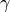
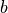

Input Variable Summary¶
Input File Specifications¶
Editing the input file directly¶
The simulation input file, prepin.*, is an ASCII text file that can be
edited in any normal text editor. Alternatively, it can be opened in the
built-in text editor by going to or
pressing cntrl+e.
The built-in text editor behaves like any other text editor but includes a syntax checker that can be run by pressing the Check Syntax button. This will highlight any Syntax errors (e.g. misplaced commas, unmatched parentheses, etc.) in red and any Unexpected items (i.e. unrecognized input variables in a namelist) in orange. The dialog buttons with the right and left arrows can be used to move to the next/previous item.
Input File Structure and Namelist Blocks¶
The FLOW-3D pre-processor reads the problem definition from the simulation input
file, prepin.*, e.g., prepin.inp or prepin.joe,
which contains a problem title and a series of namelist blocks that define the
problem setup and initial conditions.
Many of the parameters listed in this document can be set directly in the GUI by activating buttons and entering data in dialog boxes. The GUI then adds the appropriate variables to the simulation input file. Those parameters that cannot be set via the GUI can be entered directly into the simulation input file using a text editor.
The namelist blocks are separated into logical divisions, i.e., boundary
condition data is specified in namelist BCDATA, fluid properties are defined
in namelist PROPS, etc. The namelist blocks are summarized below in the order
that they must appear in the project file. Most of these namelist blocks are
always required (even though some blocks may be empty). The following list
indicates which namelist blocks are required and which are used only for
special models. Uses the shared function fnc0.F90. This routine is also called by
| NAMELIST | DESCRIPTION | REQUIRED |
|---|---|---|
XPUT |
Computational parameters | Yes |
LIMITS |
Computational and print limits | Yes |
PROPS |
Fluid properties | Yes |
SCALAR |
Scalar species parameters | No |
CHM |
Reaction Kinetics parameters | No |
RBDATA |
Coupled rigid-body dynamics data Note Only read if |
No |
USRDAT |
User-definable namelist data Note Only read if |
No |
BCDATA |
Boundary condition parameters | Yes |
MESH |
Mesh data for computational grid | Yes |
BCDATA |
Repeated for each additional mesh block | Yes |
MESH |
Repeated for each additional mesh block | Yes |
OBS |
Geometry data | Yes |
FL |
Fluid initial conditions | Yes |
BF |
Baffle setup | Yes |
MOTN |
Non-inertial reference frame motion description Note Only read if |
No |
GRAFIC |
Graphics output requests | Yes |
PARTS |
Marker and mass particle setup | Yes |
SPRAY |
Spray cooling properties for thermal die cycling Note Only read if |
No |
USRDAT |
User-definable namelist data Note Only read if |
No |
HEADER |
GUI data | No |
RENDERSPACE |
FAVORizer data | No |
Namelist Format¶
All namelist names must be prefaced with an & and all namelist blocks must end
with the statement /. For some FORTRAN compilers an optional format is
allowed, where the namelist names are prefaced with $ and namelist endings are
designated by $end. Excerpts of a prepin.* file are shown below to indicate the
proper standard and optional formats.
| STANDARD FORMAT | OPTIONAL FORMAT |
|---|---|
This is the title card
This is an additional title card
&xput
twfin=1.,
gz=-9.8,
remark= 'Units are si,'
/
&limits
itmax=100,
/
This is a comment between
namelists.
&props
rhof=1.,
mui=1.e-2,
remark='mui, viscosity is a
real no.',
/
.
.
.
&parts
/
This is additional text at the
end of the file.
|
This is the title card
This is an additional title card
$xput
twfin=1.,
gz=-9.8,
remark= 'Units are si,'
$end
$limits
itmax=100,
$end
This is a comment between
namelists.
$props
rhof=1.,
mui=1.e-2,
remark='mui, viscosity is a real
no.,'
$end
.
.
.
$parts
$end
This is additional text at the
end of the file.
|
Namelist Rules¶
Namelists must conform to the following rules:
- All entries must begin after Column 1 (nothing should be entered in Column 1).
- Namelists are read in free format so spacing is not important.
- Namelist blocks are not case sensitive.
- Integer data must be entered as integer values and real data as real values.
- A comma is required after each data entry (on most computers).
- Text outside of namelist blocks is ignored. (This is useful for annotating your input file.)
Problem Title¶
At least one title line must be included at the top of the file. This title line will appear on all FLOW-3D output including plots. Additional title lines may be included, but they are ignored by FLOW-3D . Specifying unique, descriptive titles is a valuable habit to cultivate for reducing confusion when reviewing results of similar calculations.
Adding Comments Using the Remark Variable¶
Within each namelist block, comments may be added using the character variable
REMARK. For example,
Remark = "Units are SI,"
could be added in XPUT as a reminder of the units system used for the
calculation. REMARK may contain up to 50 characters and may appear as many
times as desired within each block.
Conventions Used for the Input Variable Summary¶
- A complete list of input variables is included in the Input Variable Summary for each of the namelist blocks. A brief description of each variable is given along with default values.
- Units are given as [t] for time, [T] for temperature, [M] for mass, [L] for length, and [Q] for charge.
- All dimensional default values are in CGS units (cm, gm, sec), and all (non-zero) fluid #1 property defaults are for water.
- Subscripted variables are indicated with dummy indexes.
- The word “Alternate:” indicates alternative input variables.
- Whenever “…” is listed in the DEFAULT column, there are conditional defaults that are described in the DESCRIPTION column. More details about some options can be found in the Model Reference chapter, under the appropriate topic.
Physical and Computational Parameters - XPUT¶
Advection Options¶
| NAME | DEFAULT | DESCRIPTION | DIMENSIONS |
|---|---|---|---|
APPLICATION |
0 | Flag for type of application being modeled =0, undefined
=1, …
|
NONE |
PROCESS |
0 | Flag for type of process being modeled =0, undefined
=1, high-pressure die casting’
|
NONE |
SUBPROCESS |
0 | Flag for type of subprocess being modeled =0, undefined
=1, if
PROCESS = 1, then ‘thermal die cycling’=2, if
PROCESS = 1, then ‘die cavity filling’=3, if
PROCESS = 1, then ‘solidification’=4, if
PROCESS = 1, then ‘cooling’ |
NONE |
ALPHA |
1.0 | Controls weighting of upstream values in advection approximations when =0.0, central differencing
=1.0, upstream differencing
Note Should always be in the range between 0.0 and 1.0. |
NON-DIM |
ALPHA_SWAT |
1.0 | Controls weighting of upstream values in advection approximations in the shallow water model when =0.0, central differencing
=1.0, upstream differencing
Note Should always be in the range between 0.0 and 1.0. |
NON-DIM |
DTIMPX |
1.0 1010 1010 |
Maximum Courant number used to limit the time step size in the implicit advection model, See also |
NON-DIM |
IFENRG |
… | Flag for internal energy evaluation =0, no energy solution
=2, solve transport equation for internal energy (1st order advection)
=3, solve energy transport equation using monotonicity preserving, second order method. Not used for two-fluid compressible flow with sharp interface.
Note Defaults to 0 if See also
|
NONE |
IFPK |
… | Flag for F-packing =0, no F-packing
=1, close up interior voids in free-surface problems
Note Defaults to 1 if See also
|
NONE |
IFRHO |
… | Flag for density evaluation =0, constant uniform density
=1, evaluate density as function of fluid fraction and local temperature
=2, solve transport equation for density (1st order advection)
=3, solve density transport equation using monotonicity preserving, second order method. Not used for two-fluid compressible flow with sharp interface.
Note Defaults to 0 if See also
|
NONE |
IFTHEXP |
0 | Thermal expansion flag for flow with density a function of temperature =0, no volume expansion
=1, fluid volume expands in accordance with density charges
Note Requires |
NONE |
IFVOF |
… | Flag for F advection options =0, no F advection
=2, monotonicity preserving, second-order advection
=3, VOF interface tracking
=4, VOF plus interior donor cell
=5, Unsplit Lagrangian method
=6, Split Lagrangian method.
Note Defaults to 0 if
ITB = 0 and NMAT = 1Defaults to 2 if
ITB = 0 and NMAT = 2Defaults to 4 if
ITB = 1 and NMAT = 1Defaults to 3 if
ITB = 1 and NMAT = 2See also |
NONE |
IFSLP |
0 | Flag for two-fluid interface velocity slip option =0, no-slip condition at the interface between liquid and gas
=1, free-slip condition at the interface between liquid and gas.
Note The free-slip should be used in two-fluid, sharp-interface ( See also |
NONE |
IMPADV |
0 | Advection explicit/implicit flag =0, explicit evaluation of advection terms
=1, locally implicit evaluation of advection terms
|
NONE |
IMPADV2 |
0 | Time step control flag for implicit advection option, =0, use explicit time step limit in cells containing free surface
=1, time step is controlled by stability limit defined with threshold velocity defined by
V_THRESH. Cells with velocity above V_THRESH are treated implicitly.=2, time step is controlled by threshold time step defined by
DT_THRESH. Cells with local advective stability limit below DT_THRESH are treated implicitly. The actual time step size during simulation may be below DT_THRESH if another stability limit (for example, from the heat transfer or surface tension approximations) controls it.See also |
NONE |
IORDER |
1 | Momentum equation approximation flag =0, linear approximation
=1, first order
=2, second order in space and time
=3, monotonicity-preserving second order
Note Always set to 1 when See also |
NONE |
IORDER_SWAT |
3 | Momentum equation approximation flag for the shallow water model =0, linear approximation
=1, first order
=2, second order in space and time
=3, monotonicity-preserving second order
Note Always set to 1 when See also |
NONE |
IBM |
0 | Immersed boundary method flag =0, deactivate immersed boundary method
=1, activate immersed boundary method with no-penetration condition for advection and diffusion terms at a solid boundary
=2, activate immersed boundary method with no-penetration condition for advection term, and no-slip condition for diffusion term
=3, activate immersed boundary method with no-slip condition for advection and diffusion terms
|
NONE |
IBM_PROBE_DIRECTION_METHOD |
0 | Flag for probe directions of ghost nodes =0, weighted average
=1, shortest distance
=2, upstream
|
NONE |
DT_THRESH |
0.0 | Time step threshold for implicit advection. Cells with local advective stability limit below DT_THRESH are treated implicitly. Used when IMPADV = 1 and IMPADV2 = 2. |
[t] |
V_THRESH |
1.01035 |
Velocity threshold for implicit advection. Cells with velocity above V_THRESH are treated implicitly. Used when IMPADV = 1 and IMPADV2 = 1. |
[L/t] |
Automatic Volume Correction Options¶
| NAME | DEFAULT | DESCRIPTION | DIMENSIONS |
|---|---|---|---|
IF_VOL_CORR |
0 | Flag for fluid #1 volume correction model. Only applied to one-fluid with free-surface and two-fluid problems to maintain fluid #1 volume conservation. =0, no volume correction
=1, automatically correct fluid #1 volume
|
NONE |
IVOL_CORR_TIME |
1 | Flag for the definition of the characteristic time for volume correction =1, define
VOL_CORR_TIME as the number of time steps=2, define
VOL_CORR_TIME as time |
NONE |
VOL_CORR_TIME |
… | Characteristic time for fluid #1 volume correction. Defaults to 10.0 when IVOL_CORR_TIME = 1. Must be positive when IVOL_CORR_TIME = 2. |
NON-DIM if IVOL_CORR_TIME = 1, [t] otherwise |
Collision Model Options¶
| NAME | DEFAULT | DESCRIPTION | DIMENSIONS |
|---|---|---|---|
ICLID |
0 | Flag for the collision model. Only applied to the coupled-motion GMO components =0, no collisions
=1, activate collision model
|
NONE |
FRCMOB |
0.0 | Global coefficient of friction during collision between coupled-motion GMO components and other components and walls | NON-DIM |
STRNGMOB |
1.0 | Global coefficient of Stronge’s restitution during collision between coupled-motion GMO components and other components and walls. Values should be between 0.0 and 1.0. | NON-DIM |
Convergence Criteria Options¶
| NAME | DEFAULT | DESCRIPTION | DIMENSIONS |
|---|---|---|---|
EPSADJ |
1.0 | Multiplier for the calculated pressure iteration convergence criterion Alternate: The convergence criterion is set automatically at each time step using =1.0, standard convergence criterion
 1.0, coarser convergence 1.0, coarser convergence1.0, finer convergence
Note Used only when |
NON-DIM |
EPSI |
-1.0 | Constant pressure iteration convergence criterion Alternate: Note Used only when |
[1/t] |
EPSFSI |
1.010-3 |
Fluid-structure interaction (FSI) and thermal stress evolution (TSE) convergence criterion. Note Used only when See also
|
NON-DIM |
EPSHTC |
1.0 | Multiplier for temperature iteration convergence criterion 1, coarser convergence1, finer convergence
|
NON-DIM |
EPSVIS |
1.0 | Convergence adjustment for implicit viscous model 1, coarser convergence1, finer convergence
|
NON-DIM |
EPSELS |
1.0 | Convergence adjustment for implicit elastic stress model 1, coarser convergence1, finer convergence
|
NON-DIM |
IFDYNCONV |
1 | Pressure iteration convergence criterion flag =0, use constant criterion
EPSI=1, use dynamically computed criterion with
EPSADJ as the multiplier |
NONE |
OMEGA |
… | Relaxation factor used in pressure iteration solvers. Default value is defined as follows (logic applied in this order): 1.0, if
ICMPRS = 1, or IMP = 0, or IMPVIS = 22.0, if
IGMRES = 2 and IADIX = IADIY = IADIZ = 1; defaults to 1.7, if any of IADIX, IADIY and IADIZ is equal to 0.1.7, for the SOR pressure solver,
IGMRES = 0.1.0, for the GMRES pressure solver,
IGMRES = 1, when IMPMOB = 0 1.0 if
IMPMOB = 1, the actual values based on the GMO to fluid density ratio.See also
|
NON-DIM |
OMEGHT |
2.0 | Relaxation factor for implicit heat transfer and conduction | NON-DIM |
OMEGVS |
… | Relaxation factor used in velocity iteration for implicit viscous model Note Defaults to 1.0 when See also |
NON-DIM |
Core Gas Generation¶
| NAME | DEFAULT | DESCRIPTION | DIMENSIONS |
|---|---|---|---|
IFCOR |
0 | Core gas model flag =0, core gas model is not activated
=1, activate core gas model
|
NONE |
IPRTVNT |
0 | Print venting flag =0, no venting at print surfaces
=1, vent at all print surfaces
|
NONE |
ISSDIMCG |
4 | Sub-scaling dimension of the binder array. Each computational cell within a core is subdivided into Note The total number of sub-cells in each computational cell has to be less than 1000. Thus if using cartesian coordinates, |
[sub-cells] |
TAURLXCG |
0.0 | Time over which the metal pressure at core surface is averaged | [t] |
EPSADJCG |
1.0 | Multiplier for the convergence criterion for the implicit core gas pressure solver. | NON-DIM |
Energy and Heat Transfer Options¶
Energy Options¶
| NAME | DEFAULT | DESCRIPTION | DIMENSIONS |
|---|---|---|---|
IFENRG |
… | Flag for internal energy evaluation =0, no energy solution
=2, solve transport equation for internal energy (1st order advection)
=3, solve energy transport equation using monotonicity preserving, second order method. Not used for two-fluid compressible flow with sharp interface.
Note Defaults to 0 if See also
|
NONE |
Heat Transfer Options¶
| NAME | DEFAULT | DESCRIPTION | DIMENSIONS |
|---|---|---|---|
CGFOB |
0.0 | Coefficient of gravity effect on metal/foam heat transfer for the lost foam casting model (used in conjunction with foam component roughness). | NON-DIM |
IHTC |
0 | Fluid/component/void heat transfer flag =0, no heat transfer
=1, activate heat transfer within geometry components, between fluid and components, and components and void
|
NONE |
IMPHTC |
… | Heat transfer and conduction explicit/implicit flag =0, explicit evaluation of temperature terms
=1, implicit evaluation of temperature terms
Note Defaults to 1 for thermal die cycling model, 0 otherwise. |
NONE |
Explicit/Implicit Options¶
| NAME | DEFAULT | DESCRIPTION | DIMENSIONS |
|---|---|---|---|
ACCIMP |
1.0 | Coriolis acceleration explicit/implicit weighting parameter =0, for explicit
=(0.5 to 1.0), for fraction of implicitness
|
NON-DIM |
IFFS |
0 | Free surface pressure explicit/implicit flag =0, explicit evaluation
=1, implicit evaluation
Note Valid only for one-fluid, free-surface flows: See also |
NONE |
IMP |
1 | Pressure-velocity coupling Explicit/Implicit option =0, explicit coupling (incompatible with
ICMPRS = 0)=1, implicit coupling
=2, automatic limited compressibility for improved pressure iteration convergence for incompressible flow
|
NONE |
IMP_SWAT |
1 | Pressure-velocity coupling Explicit/Implicit option for the shallow water model =0, explicit coupling
=1, implicit coupling
|
NONE |
IMPADV |
0 | Advection explicit/implicit flag =0, explicit evaluation of advection terms
=1, locally implicit evaluation of advection terms
|
NONE |
IMPADV2 |
0 | Time step control flag for implicit advection option, =0, use explicit time step limit in cells containing free surface
=1, time step is controlled by stability limit defined with threshold velocity defined by
V_THRESH. Cells with velocity above V_THRESH are treated implicitly.=2, time step is controlled by threshold time step defined by
DT_THRESH. Cells with local advective stability limit below DT_THRESH are treated implicitly. The actual time step size during simulation may be below DT_THRESH if another stability limit (for example, from the heat transfer or surface tension approximations) controls it.See also |
NONE |
DT_THRESH |
0.0 | Time step threshold for implicit advection. Cells with local advective stability limit below DT_THRESH are treated implicitly. Used when IMPADV = 1 and IMPADV2 = 2. |
[t] |
V_THRESH |
1.01010 |
Velocity threshold for implicit advection. Cells with velocity above V_THRESH are treated implicitly. Used when IMPADV = 1 and IMPADV2 = 1. |
[L/t] |
DTIMPX |
1.01010 |
Maximum Courant number used to limit the time step size in the implicit advection model, See also |
NON-DIM |
IMPBUB |
1 | Flag to indicate implicit evaluation of bubble state. =0, explicit algorithm during pressure iteration
=1, implicit algorithm during pressure iteration
See also |
NONE |
IMPHTC |
… | Heat transfer and conduction explicit/implicit flag =0, explicit evaluation of temperature terms
=1, implicit evaluation of temperature terms
Note Defaults to 1 for thermal die cycling model, 0 otherwise. |
NONE |
IMPMOB |
0 | Explicit/implicit flag for the couple-motion GMO coupling with fluid =0, explicit evaluation of forces between GMO and fluid
=1, implicit evaluation of forces between GMO and fluid
|
NONE |
IMPVIS |
0 | Viscous stress calculation explicit/implicit flag =0, explicit algorithm
=1, implicit algorithm, SOR method
=2, implicit algorithm, ADI method
=3, implicit algorithm, GMRES method
|
NONE |
IMPELS |
0 | Elastic stress calculation explicit/implicit flag =0, explicit algorithm
=1, implicit algorithm, SOR method
|
NONE |
IMPSFT |
0 | Surface tension and capillary pressure explicit/implicit flag =0, explicit evaluation
=1, implicit evaluation
|
NONE |
ITIMP3 |
1 | Flag to indicate if iteratively update velocity boundary condition =0, do not update
=1, iteratively update
Note Used only when |
NONE |
File Control Options¶
| NAME | DEFAULT | DESCRIPTION | DIMENSIONS |
|---|---|---|---|
FFEMF |
… | Finite element (FE) mesh file name for the solidified fluid region Defaults to Can include the full path, e.g., Note Used only with thermal stress evolution model (TSE): See also |
NONE |
IFFEMF |
0 | Flag to use finite element (FE) mesh file for the thermal stress evolution (TSE) solver in the solidified fluid region =0, generate finite element (FE) mesh file for the solidified fluid region
=1, use existing finite element (FE) mesh file for the solidified fluid region
=2, use existing EXODUS II mesh file for the solidified fluid region
Note Used only with thermal stress evolution model (TSE): See also |
NONE |
IFSIOUT |
0 | Flag to export Tecplot =0, no Tecplot
 compatible output file(s) compatible output file(s)=1, only Tecplot
compatible FSI/TSE finite element (FE) mesh output file(s)=2, only Tecplot
compatible FSI/TSE finite element (FE) data output file(s)=3, both Tecplot
compatible FSI/TSE finite element (FE) mesh as well as data output files |
NONE |
IEXODUSOUT |
0 | Flag to export EXODUS II =0, no EXODUS II
compatible output file(s)=1, only EXODUS II
compatible FSI/TSE finite element (FE) output file(s)=2, only EXODUS II
compatible FSI/TSE finite element (FE) data output file(s)=3, both EXODUS II
compatible FSI/TSE finite element (FE) mesh as well as data output files |
NONE |
ITIMER |
0 | Flag to activate built-in wall clock timers in the solver =0, timers are switched off
=1, activate timers
There are several dozen timers that register the wall clock time for various sections of the solver. The output from all timers is written at the end of the calculation to the solver summary file |
NONE |
IBENCH |
0 | Flag to output history plot data in text format. The history variables that are output are the same that are automatically plotted and stored in the =0, do not produce text output
=1, write history data as text output into the
flslnk file |
NONE |
Flow Mode Options¶
| NAME | DEFAULT | DESCRIPTION | DIMENSIONS |
|---|---|---|---|
ICMPRS |
0 | Compressible flow option (mass conservation equation) =0, incompressible flow or limited compressibility model
=1, compressible flow
Note Only Fluid #2 can be compressible and so must be used with 2 fluid option, See also
|
NONE |
IPOT |
0 | Flag for potential flow calculation =0, full flow equation
=1, potential equation
|
NONE |
ITB |
0 | Indicator for free surfaces or sharp interfaces =0, no free surface or sharp interface
=1, free surface or sharp interface
|
NONE |
NMAT |
… | Number of materials Note Defaults to 1 if |
NONE |
IFVELP |
0 | Fluid flow solver options =0, solve all fluid transport equations
=1, assume velocities are fixed in time and skip fluid flow calculations
=2, assume zero velocities and skip fluid flow calculations
|
NONE |
Global Conditions for Active Simulation Control¶
See also
| NAME | DEFAULT | DESCRIPTION | DIMENSIONS |
|---|---|---|---|
NGLOBALS |
0 | Number of global conditions | NONE |
CONDITION_NAME_GLOBAL(n) |
Name for global condition n (up to 50 characters) |
NONE | |
IF_ENABLED_GLOBAL(n) |
1 | Activation flag for global condition =0, global condition
n disabled=1, global condition
n enabled |
NONE |
NPROBES_GLOBAL(n) |
0 | Number of probe conditions for global condition n |
NONE |
CONDITION_LOGIC_GLOBAL(n) |
Logical operator between probe conditions for global condition =’ANY’, global condition
n triggered when any of the enabled probe conditions satisfied=’ALL’, global condition
n triggered when all of the enabled probe conditions satisfied |
NONE | |
IF_CONDITION_ENABLED_GLOBAL(k,n) |
1 | Activation flag for probe condition =0, probe condition
k disabled=1, probe condition
k enabled |
NONE |
IPRBD_GLOBAL(k,n) |
0 | Probe id for probe condition k |
NONE |
IPRBSC_GLOBAL(k,n) |
0 | Scalar id for probe condition Note Used when |
NONE |
IPRBSCN_GLOBAL(k,n) |
0 | Additional scalar index for probe condition Sediment species id, when |
NONE |
PRBVNAM_GLOBAL(k,n) |
Probe variable name for probe condition k |
NONE | |
IFPRBVABS_ GLOBAL(k,n) |
0 | Specify if to use the absolute probe variable value for probe condition =0, use the real value
=1, use the absolute value
|
NONE |
PRBVROP_GLOBAL(k,n) |
Probe variable relational operator for probe condition =’LT’, probe condition satisfied when probe variable value is less than the critical value
=’LE’, probe condition satisfied when probe variable value is less than or equal to the critical value
=’EQ’, probe condition satisfied when probe variable value is equal to the critical value
=’NE’, probe condition satisfied when probe variable value is not equal to the critical value
=’GE’, probe condition satisfied when probe variable value is greater than or equal to the critical value
=’GT’, probe condition satisfied when probe variable value is greater than the critical value
|
NONE | |
PRBVAL_CRITICAL_GLOBAL(k,n) |
0.0 | Critical value for probe condition k |
NONE |
PRBDT_GLOBAL(k,n) |
0.0 | Duration after the critical value has reached for probe condition k |
[t] |
Gravity and Non-Inertial Reference Frame Options¶
| NAME | DEFAULT | DESCRIPTION | DIMENSIONS |
|---|---|---|---|
IACCF |
0 | Non-inertial reference frame flag =0, not in a non-inertial reference frame, i.e., domain is not moving
=1, motion of non-inertial reference frame is prescribed
=2, evaluate reference frame motion using coupled rigid body dynamics model
See also
|
NONE |
GX |
0.0 | Gravity component in x-direction Note
See also |
[L/t2] |
GY |
0.0 | Gravity component in y-direction Note
See also |
[L/t2] |
GZ |
0.0 | Gravity component in z-direction Note Used only when See also |
[L/t2] |
Initialization and Restart Options¶
Initialization Option¶
| NAME | DEFAULT | DESCRIPTION | DIMENSIONS |
|---|---|---|---|
IPDIS |
0 | Flag for initial hydrostatic pressure distribution =0, uniform pressure
=1, hydrostatic initial pressure obtained using an iterative solver
Note Relevant only if gravity is specified or the non-inertial reference frame model is used. See Gravity and Non-Inertial Reference Frame Options and Non-Inertial Reference Frame: Gravity Field. |
NONE |
Restart Options¶
| NAME | DEFAULT | DESCRIPTION | DIMENSIONS |
|---|---|---|---|
IFREST |
0 | Restart activation flag =0, not a restart calculation
=1, activate restart data initialization
|
NONE |
IEVENT_RST |
1 | Active simulation control events restart flag =0, do not maintain event status
=1, maintain event status
|
NONE |
DELTR |
… | Initial time-step size for restart calculation Note Defaults to t from restart file at point of data extraction. |
[t] |
IACRST |
0 | Non-inertial reference frame restart options =0, restart with acceleration and angular velocity data from restart source file
flsgrf=1, do not read acceleration and angular velocity data from restart source file
flsgrf |
NONE |
IFVFRST |
0 | Flag for fluid fraction initialization during restart =0, restart using fluid fraction,
 =1, restart using the product of fluid fraction and volume fraction,
Note The option |
NONE |
IHTRST |
0 | Restart temperature options =0, restart with all data in restart source
flsgrf=1, restart with all data in restart source file
flsgrf except for fluid/solid temperatures, which are reset with prepin.* data=2, restart using only solid temperatures from restart source file
flsgrf, all other conditions from prepin.* data=3, void data is reset with
prepin.* dataNote If |
NONE |
IHTRST2 |
0 | Restart component temperature options =0, use component-specific heat transfer options defined by
IHTOBS(n)=1, make all component temperatures static by setting
IHTOBS(n) to 3 for all solid componentsNote Only valid for restart simulations: |
NONE |
IRESF1 |
0 | Fluid condition restart flag =0, standard restart
=1, fill every non-empty cell with fluid #1, i.e., set f = 1.0
Note For a restart simulation using thermal die cycling model from a simulation without thermal die cycling activated, |
NONE |
IRESV |
0 | Fluid velocity condition restart flag =0, standard restart
=1, reset fluid velocities to 0.0 and pressure to
PVOIDSee also |
NONE |
IRSTOE |
… | Flag for restart based on fluid temperature or energy =0, restart based on internal energy
=1, restart based on temperature
Note Defaults to 1 for compressible flow ( See also |
NONE |
ISCRST |
0 | Restart scalar transport options =0, restart with all scalar data (sclr1, sclr2, etc.) from restart source file
flsgrf=1, restart conditions for scalar data are set in
prepin.*See also
|
NONE |
ITRST |
0 | Restart time flag =0, do not reset time at restart
=1, reset time to zero at restart
Note For a restart simulation using thermal die cycling model from a simulation without thermal die cycling activated, |
NONE |
ITURST |
0 | Restart turbulence options =0, restart with all turbulence data (mu, tke, dtke) from restart source file
flsgrf=1, do not use tke, dtke data from restart source file
flsgrf=2, do not use mu, tke, dtke data from restart source file
flsgrfSee also |
NONE |
TREST |
… | Restart calculation time Data at the nearest available restart data edit in the restart source |
[t] |
IFIED |
1 | Flag for writing the spatial data edit at the start of simulation 0 = do not write
1 = write
Note Not writing the data reduces the size of the |
NONE |
IFCOMP_VF |
1 | Flag for writing the volume fraction data for individual components. 0 = do not write
1 = write
Note The volume fraction data for individual components improves geometry visualiziton in FlowSight, but may significantly increase the size of the See also
|
NONE |
RESFILE |
” “ | Name of the restart source file, e.g. Can include the full path, e.g., |
NONE |
Numerical Options¶
| NAME | DEFAULT | DESCRIPTION | DIMENSIONS |
|---|---|---|---|
ALPHA |
1.0 | Controls weighting of upstream values in advection approximations when =0.0, central differencing
=1.0, upstream differencing
Note Should always be in the range between 0.0 and 1.0. |
NON-DIM |
ALPHA_SWAT |
1.0 | Controls weighting of upstream values in advection approximations in the shallow water model when =0.0, central differencing
=1.0, upstream differencing
Note Should always be in the range between 0.0 and 1.0. |
NON-DIM |
ALPHAMB |
0.25 | Controls weighting of Neumann- and Dirichlet-type boundary conditions for pressure at inter-block boundaries: =0.0, pure Dirichlet-type
=1.0, pure Neumann-type
Note Should always be in the range between 0.0 and 1.0. |
NON-DIM |
CFPK |
1.0 | Multiplies F-packing term (for See also |
NON-DIM |
FCLEAN |
0.0 | Fluid fraction cleanup coefficient for fluid #1. Throws away fluid #1 “mist” regions where local (isolated) fluid fraction within a cell is less than FCLEAN. |
NON-DIM |
FCLEAN2 |
0.0 | Complement of fluid fraction cleanup coefficient for fluid #2. Throws away fluid #2 “mist” regions where local (isolated) fluid fraction complement,  , within a cell is less than , within a cell is less than FCLEAN2. |
NON-DIM |
IFLOSS |
0 | Flag for the treatment of possible secular instabilities in the flow solution =-1, no treatment
=0, preemptive treatment: apply stabilizing treatment based on geometry and flow configuration
=1, reactive treatment: detect the onset of a secular instability apply treatment accordingly
Note Used only for full flow solution, See also
|
NONE |
IFPK |
… | Flag for F-packing =0, no F-packing
=1, close up interior voids in free-surface problems
Note Defaults to 1 if See also
|
NONE |
IFVOF |
… | Flag for F advection options =0, no F advection
=2, monotonicity preserving, second-order advection
=3, VOF interface tracking
=4, VOF plus interior donor cell
=5, Unsplit Lagrangian method
=6, Split Lagrangian method.
Note Defaults to 0 if
ITB = 0 and NMAT = 1Defaults to 2 if
ITB = 0 and NMAT = 2Defaults to 4 if
ITB = 1 and NMAT = 1Defaults to 3 if
ITB = 1 and NMAT = 2See also |
NONE |
IHELP |
1 | Flag for mentor help feature =0, no mentor help
=1, mentor help offers helpful suggestions
|
NONE |
IORDER |
1 | Momentum equation approximation flag =0, linear approximation
=1, first order
=2, second order in space and time
=3, monotonicity-preserving second order
Note Always set to 1 when See also |
NONE |
IORDER_SWAT |
3 | Momentum equation approximation flag for the shallow water model =0, linear approximation
=1, first order
=2, second order in space and time
=3, monotonicity-preserving second order
Note Always set to 1 when See also |
NONE |
IELADV |
1 | Advection flag for elastic stress tensor components. Advection can be turned off for simulations where there are very large elastic stresses with only small movements. =0, no advection
=1, second-order advection
Note Relevant only with the visco-elastic-plastic model, when See also |
NONE |
ISTDY |
0 | Steady state accelerator for compressible flow =0, normal transients
=1, accelerate approach to steady state using non-physical transient
Note Do not use if a time-accurate solution is desired. Only valid for compressible flow simulations ( See also |
NONE |
IAUTOSET |
0 | Flag to use algorithm to automatically adjust subspace size used for GMRES pressure solver. =0 do not automatically adjust pressure solver GMRES subspace size; =1 automatically adjust pressure solver GMRES subspace size; Note Used only with GMRES pressure iteration solver, See also
|
NONE |
IAUTOSETFSI |
0 | Flag to use algorithm to automatically adjust subspace size used for GMRES fluid structure interaction (FSI) and thermal stress evolution (TSE) solver. =0 do not automatically adjust pressure solver GMRES subspace size;
MRSTRTFSI is fixed.=1 automatically adjust pressure solver GMRES subspace size;
MRSTRTFSI changes automatically from the initially set value.Note Used only with FSI ( |
NONE |
IFSIPRCND |
1 | Flag to use preconditioning algorithm that can improve convergence of the GMRES fluid structure interaction (FSI) and thermal stress evolution (TSE) solver. =0 do not use preconditioning algorithm.
=1 automatically use preconditioning algorithm when average number of GMRES solver iterations exceeds 4.
Note Used only with FSI ( |
NONE |
SSACC |
0.0 | Damping rate coefficient for steady-state acceleration for free surface flows. Used when positive, and NMAT = 1 and ITB = 1. |
NON-DIM |
SSCOF |
0.0 | Damping coefficient for capillary waves. Used when positive and IFSFT = 1. |
NON-DIM |
IOPT_FSI_GMRES |
1 | Flag specifying the FSI solver algorithm. =0, Use old (v11.1 and earlier) FSI GMRES solver where the entire FSI solution matrix is computed at every GMRES iteration. This solver uses less memory but can be very slow.
=1, Use new (v11.2 and later) FSI GMRES solver where only part of the FSI solution matrix is computed at every GMRES iteration while the remaining rows of the FSI solution matrix is stored and re-used. This solver uses more memory but may be significantly faster.
Note
See also
|
NONE |
Physical Model Options¶
| NAME | DEFAULT | DESCRIPTION | DIMENSIONS |
|---|---|---|---|
IACCF |
0 | Non-inertial reference frame flag =0, not in a non-inertial reference frame, i.e., domain is not moving
=1, motion of non-inertial reference frame is prescribed
=2, evaluate reference frame motion using coupled rigid body dynamics model
See also
|
NONE |
ICAV |
0 | Cavitation option =0, no cavitation
=1, activate cavitation
See also
|
NONE |
ICAVMODEL |
0 | Cavitation model selection =0, Simplified cavitation model: uses
PCAV and CAVRT to estimate production of cavitation=1, Empirical cavitation model: uses
PCAV, RHOCAV, SIGMA, CAVPROD and CAVDISS to estimate cavitation production and dissipation via an empirical modelSee also
|
NONE |
ICAV_VOID |
1 | Cavitation void opening option =0, passive cavitation model with transport: cavitating voids are not opened
=1, active cavitation model: cavitating voids are opened
See also How do I model … Cavitation and Bubble Formation (Nucleation). |
NONE |
ICHM |
0 | Reaction kinetics option =0, no reaction kinetics calculations
=1, read namelist
CHM and do reaction kinetics calculationsSee also |
NONE |
ICLID |
0 | Flag for the collision model. Only applied to the coupled-motion General Moving Object (GMO) components =0, no collisions
=1, activate collision model
Note Relevant only when GMO is turned on See also
|
NONE |
ICMPRS |
0 | Compressible flow option (mass conservation equation) =0, incompressible flow or limited compressibility model
=1, compressible flow
Note Only Fluid #2 can be compressible and so must be used with 2 fluid option, See also
|
NONE |
IDPTH |
0 | Hydraulics output data flag =0, no additional hydraulics output
=1, compute and output free-surface elevation, fluid depth, Froude number, depth-averaged velocity and velocity at a distance set by
OFFSET above the bottom of the reservoir.See also
|
NONE |
IFSFT |
0 | Surface tension flag =0, deactivate surface tension model
=1, activate surface tension model
See also
|
NONE |
IFDFT |
0 | Drift-flux model flag =0, deactivate drift-flux model
=1, activate drift-flux model
Note Requires either 2-fluid flow ( See also
|
NONE |
IFDFT_TYPE |
… | Flag for the type of dispersed phase in the two-phase drift-flux model =0, dispersed phase is made of liquid particles
=1, dispersed phase is made of solid particles
=2, dispersed phase is made of gaseous particles
Defaults to 1 for granular flow model,
IFGRN = 1 or 2, to 2 for air entrainment model, IDFAIR = 1, and to 0 otherweise.Note Requires |
NONE |
IFGRN |
0 | Granular flow model flag =0, deactivate granular flow model
=1, granular flow with gas
=2, granular flow with liquid
See also
|
NONE |
IFDRYING |
0 | Moisture drying model flag =0, deactivate moisture drying model
=1, isothermal moisture drying model (requires
IHTC = 1)=2, two-phase moisture drying model (requires
IHTC = 1, the two fluid phase change model, IPHCHG = 2, and the non-condensable gas model, INCG = 1)See also |
NONE |
IFMST |
1 | Initial moisture content flag =1, initial moisture content is defined as % of weight fraction of dry component weight
=2, initial moisture content is defined as macroscopic moisture density (weight per unit bulk component volume).
Note Requires the activation of a moisture drying model, See also |
NONE |
IFLFOAM |
0 | Lost foam model flag =0, deactivate lost foam model
=1, full lost foam model, with heat transfer and flow
=2, simple lost foam model, where only the metal/foam interface is tracked
Note Requires the activation of the heat transfer model between fluid and components, See also
|
NONE |
IFVISWAT |
2 | Flag for viscous flow for shallow water model. =0, inviscid flow
=1, laminar flow
=2, turbulent flow
Note Relevant only mesh blocks with shallow water model, See also
|
NONE |
IELAST |
0 | Visco-elastic-plastic stress model flag. The model simulates elastic stresses within fluid. =0, model not activated – no elastic stress computed
=1, Elasto-viscoplastic model activated. Models Bingham-like materials whereby elastic stress is limited by the yield stress limit.
=2, Oldroyd-B model. This model allows the user to specify the sear modulus and relaxation time parameter to control the rate of relaxation of the elastic stresses with the fluids.
=3, Giesekus model. This model builds upon the Oldroyd-B model with the inclusion of a mobility factor.
=4, user-customizable model. User can specify any of the built-in parameters, as well as create new user parameters. At minimum, elastic modulus must be provided.
|
NONE |
IELADV |
1 | Advection flag for elastic stress tensor components. Advection can be turned off for simulations where there are very large elastic stresses with only small movements. =0, no advection
=1, second-order advection
Note Relevant only with the elastic-plastic model above, when |
NONE |
IFENRG |
… | Flag for internal energy evaluation =0, no energy solution
=2, solve transport equation for internal energy (1st order advection)
=3, solve energy transport equation using monotonicity preserving, second order method. Not used for two-fluid compressible flow with sharp interface.
Note Defaults to 0 if See also
|
NONE |
IFRHO |
… | Flag for density evaluation =0, constant uniform density
=1, evaluate density as function of fluid fraction and local temperature
=2, solve transport equation for density (1st order advection)
=3, solve density transport equation using monotonicity preserving, second order method. Not used for two-fluid compressible flow with sharp interface.
Note Defaults to 0 if See also
|
NONE |
IFTHEXP |
0 | Thermal expansion flag for flow with density a function of temperature =0, no volume expansion
=1, fluid volume expands in accordance with density charges
Note Requires See also
|
NONE |
IFSPRAY |
0 | Spray cooling model activation flag for thermal die cycling simulations =0, no spray cooling
=1, activate spray cooling
Note Requires thermal die cycle to be on ( See also Model Reference –> Thermal Die Cycling –> Spray Cooling for Thermal Die Cycling. |
NONE |
IFSLD |
0 | Solidification model flag =0, no solidification
=1, activate solidification
Note Requires energy transport to be turned on ( See also |
NONE |
IFSLD_DRG |
1 | Solidified fluid flow model flag =0, viscosity-based
=1, Darcy drag force-based
Note Requires solidification model ( See also |
NONE |
IFIRON |
0 | Iron solidification model flag =0, deactivates cast iron solidification model
=1, activates cast iron solidification model. Requires
IFSLD = 1.Note Volume changes computed by the iron model are coupled only to the simple solidification shrinkage model, |
NONE |
ITHRMST |
0 | Flag for the thermal stress evolution (TSE) model =0, deactivates thermal stress evolution in the solidified fluid region
=1, activates thermal stress evolution in the solidified fluid region.
Note Requires solidification model, |
NONE |
ITETTSE |
0 | Flag to use tetrahedral meshing to generate the mesh of the solidified fluid region of the thermal stress evolution model. Default is hexahedral meshes, and this value is overridden when reading in an existing mesh from a file (see =0 use hexahedral meshes for thermal stress evolution (TSE) regions
=1 use tetrahedral meshes for thermal stress evolution (TSE) regions
Note Used only with TSE ( |
NONE |
ICPLTSE |
0 | Flag to control coupling between the solidified fluid region (the Thermal Stress Evolution region) and neighboring Fluid Structure Interaction (FSI) components (see =0 basic coupling between the thermal stress evolution (TSE) region and all neighboring components. Can still define constraining and non-constraining option.
=1 partial coupling between the thermal stress evolution (TSE) region and all neighboring fluid structure interaction (FSI) components. Selection of this option allows the solidified fluid region to slide past and pull away from neighboring FSI components but not interfere, and tangential forces are controlled by a friction parameter (see
FRCTTSE below). Note that this overrides any constraint selection (IFSOFT(m) in Component Properties: Thermal Stress Evolution (TSE) Model) and has no effect on regular components (i.e., components where IFSI(m) = 0).Note Used only with TSE ( |
NONE |
FRCTTSE |
0.0 | Friction coefficient between Thermal Stress Evolution (TSE) region and neighboring Fluid Structure Interaction (FSI) components. A negative value indicates that the coefficient is infinite (i.e., tangential traction is not limited), and a positive value indicates the friction coefficient. Its value represents the ratio between the limit of the magnitude of tangential traction to the normal traction between the TSE region and the component face. Physical values are typically less than 1.0. Note Used only with TSE ( |
NONE |
IRMFLUX |
0 | Flag for the net volume flux at mesh wave boundaries =0, include net mean volume flux at wave boundaries
=1, eliminate net mean volume flux at wave boundaries.
See also |
NONE |
IFVIS |
0 | Viscosity and turbulence options flag =0, local viscosity evaluation (no turbulence model)
=1, Prandtl mixing length
=2, turbulent energy model
=3, two-equation (k-) turbulence model
=4, Renormalized Group Theory model (RNG)
=5, two-equation (k-
 ) turbulence model ) turbulence model=-1, large eddy simulation model (this model is only valid for limited cases)
See also
|
NONE |
IFVISC |
0 | Viscous flow flag =0, inviscid flow
=1, viscous flow
Note The viscous flow model must be activated to use a turbulence model. See also |
NONE |
IFMU |
… | Force output of fluid dynamic viscosity =0, no output of fluid viscosity
=1, output fluid viscosity
Note Defaults to 0 for one-fluid, Newtonian, laminar flow problems, 1 otherwise. |
NONE |
IHTC |
0 | Fluid/component heat transfer flag =0, no heat transfer
=1, activate heat transfer within geometry components, between fluid and components, and components and void
|
NONE |
IMEMB |
0 | Deforming elastic membrane and wall model flag =0, deactivate the model
=1, activate the model
See also |
NONE |
IMOBS |
0 | General moving object (GMO) model flag =0, deactivate the GMO model
=1, activate the GMO model
See also
|
NONE |
IMUT |
0 | Thixotropic viscosity flag =0, standard model, no thixotropy
=1, thixotropic viscosity model with time-dependent flow thickening and thinning.
Note The thixotropic viscosity model is only relevant when used with a non-Newtonian viscosity model, See also |
NONE |
INCG |
0 | Non-condensable gas model flag =0, no non-condensable gas component in the gas phase
=1, activate non-condensable gas model
Note Only used with 2-fluid model See also |
NONE |
IRSAT |
0 | Flag to control input parameters for non-condensable gas model =0, all input parameters for non-condensable gas model are in volume fraction of non-condensable gas
=1, all input parameters for non-condensable gas model are in relative saturation of vapor
Note Only used with non-condensable gas model ( See also
|
NONE |
IPHCHG |
0 | Phase change and bubble model flag =0, constant pressure void regions =1, constant pressure void regions with vaporization, for use with one-fluid flow with free surfaces ( =2, two-fluid phase change model with fluid #1 representing the liquid and fluid #2 the compressible vapor phase. For use with two-fluid compressible flow ( =3, adiabatic bubble model, for use with one-fluid flow with free surfaces ( =4, thermal bubbles with heat transfer. Each bubble’s pressure and temperature are dynamically computed from equation of state for perfect gas. For use with one-fluid flow with free surfaces ( =5, thermal bubbles with heat transfer and phase change. Each bubble’s pressure and temperature are dynamically computed from equation of state for perfect gas. For use with one-fluid flow with free surfaces ( See also
|
NONE |
ICROTBC |
0 | Flag for adding counter rotating flow component at inlet mesh boundaries for non-inertial reference frame (RF) motion model ( =0, do not add counter rotating flow component
=1, add counter rotating flow component at inlet mesh boundaries based on the current RF motion.
See also
|
NONE |
ISCOUR |
0 | Flag for sediment scour model =0, model is not activated
=1, model is activated
See also |
NONE |
ISCPOT |
… | Flag for the output of the wall shear stress =0, no shear stress output
=1, compute and output wall shear stress
Note Defaults to 1 when sediment scour model is active, |
NONE |
ISHRNK |
0 | Solidification shrinkage flag Shrinkage models may only be used for one-fluid problems ( =0, no shrinkage model
=1, activate dynamic shrinkage model
=2, activate simple shrinkage model, based only on heat transfer and solidification solution
See also
|
NONE |
ISHRNK2 |
0 | Type of feeding flag for the simple solidification shrinkage model =0, gravity feeding until maximum solid fraction in the mushy zone reaches the coherency point =1, interdendritic feeding along the temperature gradient all the time - from hot zones to cold. Note Defaults to 1 when gravity is zero, See also
|
NONE |
IMUPOR |
0 | Microporosity model flag =0, no microporosity is computed
=1, activate microporosity model
Note Requires See also
|
NONE |
ISTNR |
0 | Strain rate calculation flag =0, do not calculate strain rates
=1, calculate strain rates
Note Defaults to 1 if See also |
NONE |
ISWAT |
0 | Shallow water model flag =0, do not use shallow water model
=1, use shallow water model
See also |
NONE |
ITB |
0 | Indicator for free surfaces or sharp interfaces =0, no free surface or sharp interface
=1, free surface or sharp interface
See also
|
NONE |
ITHEAD |
0 | Flag for the output of the total hydraulic head =0, no hydraulic head output
=1, compute and output the total hydraulic head. The output includes a spatial variable and an average hydraulic head at each flux surface.
|
NONE |
IVISH |
0 | Viscous heating flag =0, no viscous heating
=1, include viscous heating effects
Note Relevant only with energy transport ( See also
|
NONE |
IVORT |
0 | Vorticity output flag =0, do not compute and store vorticity vector for post-processing
=1, compute and store vorticity vector for post-processing
|
NONE |
IWSH |
1 | Wall shear stress flag =0, no wall shear stress
=1, wall shear stress
Note Only relevant for viscous flows ( |
NONE |
NMAT |
… | Number of materials Note Defaults to 1 if See also |
NONE |
OFFSET |
0.0 | Distance in z-direction above the bottom of a reservoir at which velocity is computed and stored as part of the Hydraulic data output. See also
|
NONE |
RHOAIR |
… | Air density for use in the calculation of wind shear stress on horizontal fluid surfaces, air drag for mooring lines, default void/gas particle density and venting component loss coefficients. Defaults to air density in simulation units, which is 1.225 kg/m3 in SI system.
See also |
[M/L3] |
TAUBC |
0.0 | Relaxation time for fluid elevation change at rating curve and natural inlet boundaries. Used to dampen out possible noise in highly transient
flows at mesh boundaries with IRATING(n) > 0, see IRATING in Rating curve and natural inlet boundary condition. |
[t] |
Plot Output Control¶
| NAME | DEFAULT | DESCRIPTION | DIMENSIONS |
|---|---|---|---|
IDBG |
0 | Flag for additional debug data edits =0, standard output
=1, force spatial, history and long print data edits if a pressure convergence problem or cycle restart occur
|
NONE |
IEDT |
1 | Selects the basis for long print and spatial plot intervals =1, use time,
TPRTD, TPLTD, TAPLTD=2, use fill fraction,
PRTFRC, PLTFRC, PLTAFRC=3, use solidified fraction,
PRTFRC, PLTFRC, PLTAFRC |
NONE |
IOVOID |
0 | Void ID tracking flag =0, do not track individual void ID’s
=1, track individual void ID’s for void history data
Note Relevant only for one-fluid flows with sharp interfaces ( See also |
NONE |
ISOLID |
… | Controls use of optional solidification output data (i.e., solidification time, cooling rate at solidification, etc.) =0, do not evaluate solidification output data
=1, evaluate solidification data and write it to
flsgrfNote Defaults to 1 if the solidification model used ( See also |
NONE |
LPR |
1 | Debug level =0, reduced output to the screen
=1, standard prints and output
1, debug prints and output |
NONE |
NCYCPT |
1 | Output control for thermal die cycling model; restart spatial data is written for the last See also |
NONE |
PLTFRC |
0.1 | Interval for restart spatial plots based on fill fraction (IEDT = 2) or solid fraction (IEDT = 3). |
NON-DIM |
PLTAFRC |
0.01 | Interval for selected spatial plots based on fill fraction (IEDT = 2) or solid fraction (IEDT = 3). |
NON-DIM |
SLDDT |
TWFIN |
Edit interval for writing spatial solidification data to flsgrf |
[t] |
TAPLTD(n) |
TWFIN /100 |
Selected spatial data output interval from TEDIT(n-1) to TEDIT(n) |
[t] |
TEDIT(n) |
… | Ending time of edit interval n. Not used if unspecified. |
[t] |
THPLTD(n) |
TWFIN /1000 |
History plot interval from TEDIT(n-1) to TEDIT(n) |
[t] |
TPLTD(n) |
TWFIN /10 |
Restart spatial plot interval from TEDIT(n-1) to TEDIT(n) |
[t] |
Active simulation control of restart data interval¶
See also
| NAME | DEFAULT | DESCRIPTION | DIMENSIONS |
|---|---|---|---|
NEVENTS_RESTART |
0 | Number of events for restart data interval Note Used only when |
NONE |
EVENT_NAME_RESTART(m) |
‘ ‘ | Event m name (up to 50 characters) |
NONE |
IF_EVENT_ENABLED_RESTART(m) |
1 | Event =0, disabled
=1, enabled
|
NONE |
IF_GLOBAL_RESTART(m) |
0 | Global condition flag for event =0, use local conditions
=1, use global conditions
|
NONE |
IGLOBAL_RESTART(m) |
0 | Global condition id for event m (used if IF_GLOBAL_RESTART(m) = 1) |
NONE |
NPROBES_RESTART(m) |
0 | Number of local probe conditions for event m (used if IF_GLOBAL_RESTART(m) = 0) |
NONE |
EVENT_CONDITION_LOGIC_RESTART(m) |
‘ ‘ | Logical operator between probe conditions for event =’ANY’, event triggered when any of the enabled probe conditions satisfied
=’ALL’, event triggered when all of the enabled probe conditions satisfied
Note Required when number of enabled probe conditions > 1 |
NONE |
EVENT_ACTION_RESTART(m) |
‘ ‘ | Event action for event =’TPLTD’, if
IEDT = 1=’PLTFRC’, if
IEDT = 2 or 3 |
NONE |
TPLTD_EVENT(t,m) |
0.0 | New Note Used when |
NONE |
PLTFRC_EVENT(t,m) |
0.0 | New Note Used when |
NONE |
IF_CONDITION_ENABLED_RESTART(k,m) |
1 | Probe condition =0, disabled
=1, enabled
|
NONE |
IPRBD_RESTART(k,m) |
0 | Probe id for probe condition k |
NONE |
IPRBSC_RESTART(k,m) |
0 | Scalar id for probe condition Note Used when |
NONE |
IPRBSCN_RESTART(k,m) |
0 | Additional scalar index for probe condition Sediment species id, when |
NONE |
PRBVNAM_RESTART(k,m) |
… | Probe variable name for probe condition Note Please check table PRBVNAM in Namelist XPUT for valid variable names and descriptions. |
NONE |
IFPRBVABS_RESTART(k,m) |
0 | Specify if to use the absolute probe variable value for probe condition =0, use the real value
=1, use absolute value
|
NONE |
PRBVROP_RESTART(k,m) |
‘ ‘ | Probe variable relational operator for probe condition =’LT’, probe condition satisfied when probe variable value is less than the critical value
=’LE’, probe condition satisfied when probe variable value is less than or equal to the critical value
=’EQ’, probe condition satisfied when probe variable value is equal to the critical value
=’NE’, probe condition satisfied when probe variable value is not equal to the critical value
=’GE’, probe condition satisfied when probe variable value is greater than or equal to the critical value
=’GT’, probe condition satisfied when probe variable value is greater than the critical value
|
NONE |
PRBVAL_CRITICAL_RESTART(k,m) |
0.0 | Critical value for probe condition k |
NONE |
PRBDT_RESTART(k,m) |
0.0 | Duration after the critical value has reached for probe condition k |
[t] |
Active simulation control of selected data interval¶
See also
| NAME | DEFAULT | DESCRIPTION | DIMENSIONS |
|---|---|---|---|
NEVENTS_SELECTED |
0 | Number of events for selected data interval | NONE |
EVENT_NAME_SELECTED(m) |
‘ ‘ | Event m name (up to 50 characters) |
NONE |
IF_EVENT_ENABLED_SELECTED(m) |
1 | Event =0, disabled
=1, enabled
|
NONE |
IF_GLOBAL_SELECTED(m) |
0 | Global flag for event =0, use local conditions
=1, use global conditions
|
NONE |
IGLOBAL_SELECTED(m) |
0 | Global flag id event m (used if IF_GLOBAL_SELECTED(m) = 1) |
NONE |
NPROBES_SELECTED(m) |
0 | Number of local probe conditions for event m (used if IF_GLOBAL_SELECTED(m) = 0) |
NONE |
EVENT_CONDITION_LOGIC_SELECTED(m) |
‘ ‘ | Logical operator between probe conditions for event =’ANY’, event triggered when any of the enabled probe conditions satisfied
=’ALL’, event triggered when all of the enabled probe conditions satisfied
Note Required when number of enabled probe conditions > 1 |
NONE |
EVENT_ACTION_SELECTED(m) |
‘ ‘ | Event action for event =’TAPLTD’, if
IEDT = 1=’PLTAFRC’, if
IEDT = 2 or 3 |
NONE |
TAPLTD_EVENT(t,m) |
0.0 | New Note Used when |
NONE |
PLTAFRC_EVENT(t,m) |
0.0 | New Note Used when |
NONE |
IF_CONDITION_ENABLED_SELECTED(k,m) |
1 | Probe condition =0, disabled
=1, enabled
|
NONE |
IPRBD_SELECTED(k,m) |
0 | Probe id for probe condition k |
NONE |
IPRBSC_SELECTED(k,m) |
0 | Scalar id for probe condition Note Used when |
NONE |
IPRBSCN_SELECTED(k,m) |
0 | Additional scalar index for probe condition Sediment species id, when |
NONE |
PRBVNAM_SELECTED(k,m) |
… | Probe variable name for probe condition Note Please check table PRBVNAM in Namelist XPUT for valid variable names and descriptions. |
NONE |
IFPRBVABS_SELECTED(k,m) |
0 | Specify if to use the absolute probe variable value for probe condition =0, use the real value
=1, use absolute value
|
NONE |
PRBVROP_SELECTED(k,m) |
‘ ‘ | Probe variable relational operator for probe condition =’LT’, probe condition satisfied when probe variable value is less than the critical value
=’LE’, probe condition satisfied when probe variable value is less than or equal to the critical value
=’EQ’, probe condition satisfied when probe variable value is equal to the critical value
=’NE’, probe condition satisfied when probe variable value is not equal to the critical value
=’GE’, probe condition satisfied when probe variable value is greater than or equal to the critical value
=’GT’, probe condition satisfied when probe variable value is greater than the critical value
|
NONE |
PRBVAL_CRITICAL_SELECTED(k,m) |
0.0 | Critical value for probe condition k |
NONE |
PRBDT_SELECTED(k,m) |
0.0 | Duration after the critical value has reached for probe condition k |
[t] |
Active simulation control of history data interval¶
See also
| NAME | DEFAULT | DESCRIPTION | DIMENSIONS |
|---|---|---|---|
NEVENTS_HISTORY |
0 | Number of events for history data interval | NONE |
EVENT_NAME_HISTORY(m) |
‘ ‘ | Event m name (up to 50 characters) |
NONE |
IF_EVENT_ENABLED_HISTORY(m) |
1 | Event =0, disabled
=1, enabled
|
NONE |
IF_GLOBAL_HISTORY(m) |
0 | Global condition flag for event =0, use local conditions
=1, use global conditions
|
NONE |
IGLOBAL_HISTORY(m) |
0 | Global condition id for event m (used if IF_GLOBAL_HISTORY(m) = 1) |
NONE |
NPROBES_HISTORY(m) |
0 | Number of local probe conditions for event m (used if IF_GLOBAL_HISTORY(m) = 0) |
NONE |
EVENT_CONDITION_LOGIC_HISTORY(m) |
‘ ‘ | Logical operator between probe conditions for event =’ANY’, event triggered when any of the enabled probe conditions satisfied
=’ALL’, event triggered when all of the enabled probe conditions satisfied
Note Required when number of enabled probe conditions > 1 |
NONE |
EVENT_ACTION_HISTORY(m) |
‘ ‘ | Event action for event =’THPLTD’ only
|
NONE |
THPLTD_EVENT(t,m) |
0.0 | New THPLTD table for event m |
NONE |
IF_CONDITION_ENABLED_HISTORY(k,m) |
1 | Probe condition =0, disabled
=1, enabled
|
NONE |
IPRBD_HISTORY(k,m) |
0 | Probe id for probe condition k |
NONE |
IPRBSC_HISTORY(k,m) |
0 | Scalar id for probe condition Note Used when |
NONE |
IPRBSCN_HISTORY(k,m) |
0 | Additional scalar index for probe condition Sediment species id, when |
NONE |
PRBVNAM_HISTORY(k,m) |
… | Probe variable name for probe condition Note Please check table PRBVNAM in Namelist XPUT for valid variable names and descriptions. |
NONE |
IFPRBVABS_HISTORY(k,m) |
0 | Specify if to use the absolute probe variable value for probe condition =0, use the real value
=1, use absolute value
|
NONE |
PRBVROP_HISTORY(k,m) |
‘ ‘ | Probe variable relational operator for probe condition =’LT’, probe condition satisfied when probe variable value is less than the critical value
=’LE’, probe condition satisfied when probe variable value is less than or equal to the critical value
=’EQ’, probe condition satisfied when probe variable value is equal to the critical value
=’NE’, probe condition satisfied when probe variable value is not equal to the critical value
=’GE’, probe condition satisfied when probe variable value is greater than or equal to the critical value
=’GT’, probe condition satisfied when probe variable value is greater than the critical value
|
NONE |
PRBVAL_CRITICAL_HISTORY(k,m) |
0.0 | Critical value for probe condition k |
NONE |
PRBDT_HISTORY(k,m) |
0.0 | Duration after the critical value has reached for probe condition k |
[t] |
Pressure Iteration Options¶
| NAME | DEFAULT | DESCRIPTION | DIMENSIONS |
|---|---|---|---|
EPSADJ |
1.0 | Multiplier for the calculated pressure iteration convergence criterion Alternate: The convergence criterion is set automatically at each time step using =1.0, standard convergence criterion
1.0, coarser convergence1.0, finer convergence
Note Used only when See also |
NON-DIM |
EPSI |
-1.0 | Constant baseline pressure iteration convergence criterion Alternate: Note Used only when See also |
[1/t] |
ETA_REL |
0.05 | Multiplier for the calculated relative convergence criterion for pressure iterations. See also |
NON-DIM |
ETA_ABS |
1.0E-4 | Multiplier for the calculated steady-state absolute convergence criterion. See also |
NON-DIM |
IADIX |
1 | Pressure iteration option for x-direction =0, do not use line-implicit method
=1, use line implicit method (ADI)
Note Used only when |
NONE |
IADIY |
1 | Pressure iteration option for y-direction =0, do not use line-implicit method
=1, use line implicit method (ADI)
Note Used only when |
NONE |
IADIZ |
1 | Pressure iteration option for z-direction =0, do not use line-implicit method
=1, use line implicit method (ADI)
Note Used only when |
NONE |
IGMRES |
1 | Pressure iteration option =0 use SOR method
=1 use generalized minimum residual method (GMRES)
=2, use ADI method
|
NONE |
IOPT_GMRES |
2 | Convergence criterion for the GMRES pressure solver. The GMRES pressure solver uses two types of convergence criteria. The absolute convergence criterion (v11.1 and earlier) uses a simple absolute convergence limit for the residual. The hybrid convergence criterion (v11.2 and later) uses a combination of absolute and relative convergence limits. The hybrid convergence criterion is more generic and accurate. However, because it often iterates more, it may be computationally more expensive for some problems. =1 use absolute convergence criterion (v11.1 and earlier)
=2 use hybrid convergence criterion (v11.2 and later)
Note
|
NONE |
IPUN |
1 | Uniform pressure adjustment for compressible flows (if Note Relevant only for 2-fluid, compressible flow ( See also |
NONE |
OMEGA |
… | Relaxation factor used in pressure iteration solvers. Default value is defined as follows (logic applied in this order): 1.0, if
ICMPRS = 1, or IMP = 0, or IMPVIS = 22.0, if
IADIX = IADIY = IADIZ = 11.7, for the SOR pressure solver
1.0, for the GMRES pressure solver, when
IMPMOB = 0 1.0 if
IMPMOB = 1, the actual values based on the GMO to fluid density ratio.See also
|
NON-DIM |
IAUTOSET |
0 | Flag to use algorithm to automatically adjust subspace size used for GMRES pressure solver. =0 do not automatically adjust pressure solver GMRES subspace size; =1 automatically adjust pressure solver GMRES subspace size; Note Used only with GMRES pressure iteration solver, See also |
NONE |
ITRNMAX |
7 | Target number of iterations for GMRES pressure solver when Note Used only when |
NONE |
Print Output Control¶
| NAME | DEFAULT | DESCRIPTION | DIMENSIONS |
|---|---|---|---|
IEDT |
1 | Selects the basis for long print and spatial plot intervals =1, use time,
TPRTD, TPLTD, TAPLTD=2, use fill fraction,
PRTFRC, PLTFRC, PLTAFRC=3, use solidified fraction,
PRTFRC, PLTFRC, PLTAFRC |
NONE |
LPR |
1 | Debug level =0, reduced output to the screen
=1, standard prints and output
1, debug prints and output |
NONE |
PRTFRC |
0.1 | Interval for long prints based on fill fraction (IEDT = 2) or solid fraction (IEDT = 3). |
NON-DIM |
TSPRTD(n) |
TWFIN /100 |
Short print interval from TEDIT(n-1) to TEDIT(n) |
[t] |
ESPRTDT |
10.0 | Short print wall clock interval (in minutes). | [t] |
TEDIT(n) |
… | Ending time of edit interval n. Not used if unspecified. |
[t] |
TPRTD(n) |
TWFIN/10 |
Long print interval from TEDIT(n-1) to TEDIT(n) |
[t] |
Shallow Water Model Options¶
| NAME | DEFAULT | DESCRIPTION | DIMENSIONS |
|---|---|---|---|
ISWAT |
0 | Shallow water model flag =0, do not use shallow water model
=1, use shallow water model
See also |
NONE |
IFVISWAT |
2 | Flag for viscous flow for shallow water model. =0, inviscid flow
=1, laminar flow
=2, turbulent flow
Note Relevant only mesh blocks with shallow water model, See also
|
NONE |
IMP_SWAT |
1 | Pressure-velocity coupling Explicit/Implicit option for the shallow water model =0, explicit coupling
=1, implicit coupling
|
NONE |
IORDER_SWAT |
3 | Momentum equation approximation flag for the shallow water model =0, linear approximation
=1, first order
=2, second order in space and time
=3, monotonicity-preserving second order
Note Always set to 1 when See also |
NONE |
ALPHA_SWAT |
1.0 | Controls weighting of upstream values in advection approximations in the shallow water model when =0.0, central differencing
=1.0, upstream differencing
Note Should always be in the range between 0.0 and 1.0. |
NONE |
BTMSHR |
0.0026 | Drag coefficient for quadratic bottom shear stress. Used when ISWATLOC = 1 and IFVISWAT = 2. |
NONE |
CD_MAX |
0.1 | Maximum value of drag coefficient of bottom shear stress | NONE |
MANFILE |
… | File name for legend data file defining Manning’s roughness coefficient | NONE |
Termination Control¶
| NAME | DEFAULT | DESCRIPTION | DIMENSIONS |
|---|---|---|---|
FRCFIN |
1.0 | Fill fraction (IFIN = 2) or solid fraction (IFIN = 3) for termination of the calculation |
NON-DIM |
IFIN |
1 | Selects the basis for termination of the calculation =1, terminate when t
TWFIN or cycle ITWFIN=2, terminate when fill fraction exceeds
FRCFIN or no cells are empty or t TWFIN=3, terminate when solidified fraction exceeds
FRCFIN or t TWFIN=4, terminate when steady-state reached.
See also |
NONE |
ICHKSTDY(n) |
1 | Steady-state watch list =0, no steady-state tracking
=1, track for steady-state condition
n=1, total mass
n=2, total fluid energy
n=3, total solid energy
n=4, average mean kinetic energy
n=5, average mean turbulent energy
n=6, average mean turbulent dissipation
Note
|
NONE |
ITWFIN |
… | Number of times steps (cycles) to end calculation. Default is a large number. |
NONE |
DLTSTDY |
1.0 | Variation threshold below which the flow is considered steady state (in percent) Note Used only when |
PERCENTAGE |
TSTDY |
0.1TWFIN |
Time window over which the steady-state check is performed (in time units) Note Used only when |
[t] |
TWFIN |
… | Time to end calculation Default is TWFIN=1.0 unless thermal die cycling is activated, in which case it is set equal to the total duration of all cycles See also |
[t] |
Active simulation control of termination¶
See also
| NAME | DEFAULT | DESCRIPTION | DIMENSIONS |
|---|---|---|---|
IFINPRB |
0 | Active simulation control of termination flag =0, no active simulation control of termination
=1, activate active simulation control of termination
|
NONE |
EVENT_NAME_FIN |
‘ ‘ | Active simulation control of termination event name (up to 50 characters) | NONE |
IF_GLOBAL_FIN |
0 | Flag for global condition =0, use local conditions
=1, use global conditions
|
NONE |
IGLOBAL_FIN |
0 | Global condition id (used if IF_GLOBAL_FIN = 1) |
NONE |
NPROBES_FIN |
0 | Number of local probe conditions for the active simulation control of termination event (used if IF_GLOBAL_FIN = 0) |
NONE |
EVENT_CONDITION_LOGIC_FIN |
‘ ‘ | Logical operator between probe conditions for the event =’ANY’, event triggered when any of the enabled probe conditions satisfied
=’ALL’, event triggered when all of the enabled probe conditions satisfied
Note Required when number of enabled probe conditions > 1 |
NONE |
IF_CONDITION_ENABLED_FIN(k) |
1 | Probe condition =0, disabled
=1, enabled
|
NONE |
IPRBD_FIN(k) |
0 | Probe id for probe condition k |
NONE |
IPRBSC_FIN(k) |
0 | Scalar id for probe condition Note Used when |
NONE |
IPRBSCN_FIN(k) |
0 | Additional scalar index for probe condition Sediment species id, when |
NONE |
PRBVNAM_FIN(k) |
… | Probe variable name for probe condition Note Please check table PRBVNAM in Namelist XPUT for valid variable names and descriptions. |
NONE |
IFPRBVABS_FIN(k) |
0 | Specify if to use the absolute probe variable value for probe condition =0, use the real value
=1, use absolute value
|
NONE |
PRBVROP_FIN(k) |
‘ ‘ | Probe variable relational operator for probe condition =’LT’, probe condition satisfied when probe variable value is less than the critical value
=’LE’, probe condition satisfied when probe variable value is less than or equal to the critical value
=’EQ’, probe condition satisfied when probe variable value is equal to the critical value
=’NE’, probe condition satisfied when probe variable value is not equal to the critical value
=’GE’, probe condition satisfied when probe variable value is greater than or equal to the critical value
=’GT’, probe condition satisfied when probe variable value is greater than the critical value
|
NONE |
PRBVAL_CRITICAL_FIN(k) |
0.0 | Critical value for probe condition k |
NONE |
PRBDT_FIN(k) |
0.0 | Duration after the critical value has reached for probe condition k |
[t] |
Probe variable name PRBVNAM for active simulation control of termination:
| NAME | DESCRIPTION |
|---|---|
X |
x or r-coordinate |
Y |
y or  -coordinate -coordinate |
Z |
z-coordinate |
U |
Fluid x or r-velocity |
V |
Fluid y or -velocity |
W |
Fluid z velocity |
UMG |
Fluid velocity magnitude |
P |
Pressure |
F |
Fraction of fluid |
RHO |
Macroscopic density Used when |
TN |
Temperature of fluid #1 Used when |
TN2 |
Temperature of fluid #2 Used when |
TW |
Wall temperature Used when |
HTC |
Effective heat transfer coefficient Used when |
UPR |
Probe x or r-velocity |
VPR |
Probe y or -velocity |
WPR |
Probe z-velocity |
UPRMG |
Probe velocity magnitude |
PSIZPR |
Probe diameter |
TEMPPR |
Probe temperature Used when |
QSR |
Mass source rate |
QSRV |
Volume source rate |
MU |
Dynamic viscosity Used when |
TKE |
Turbulent energy Used when |
DTKE |
Turbulent dissipation Used when |
TOMEGA |
Turbulent omega Used when |
STNR |
Strain rate magnitude Used when |
VORTX |
x vorticity Used when |
VORTY |
y vorticity Used when |
VORTZ |
z vorticity Used when |
VORTQ |
Q-criterion for vortex detection Used when |
DRG |
Normalized drag coefficient Used when |
FS |
Solid fraction Used when |
VMOBS |
Moisture concentration Used when |
VFOB |
Free component or lost foam component volume fraction Used when |
HYFD |
Flow depth Used when |
MHYFD |
Maximum flow depth Used when |
HYEL |
Free surface elevation Used when |
DAVEL |
Depth averaged velocity Used when |
OFVEL |
Velocity at specified offset Used when |
FROUDE |
Froude number Used when |
SHYHD |
Specific hydraulic head Used when |
THYHD |
Total hydraulic head Used when |
THEAD |
Total hydraulic head 3D Used when |
SCSCLR |
User added scalar species Used when |
EOF2 |
Zeta potential Used when |
ECHRG |
Electric charge density Used when |
FMDEN |
Foam density multiplier Used when |
DFAIR |
Volume fraction of entrained air Used when |
DISSLV |
Dissolved solute concentration Used when |
BURNMF |
Combustion gas mass fraction Used when |
MUPOR |
Percent micro-porosity Used when |
CONTACT |
Fluid contact time with walls Used when |
DFCTW |
Wicked foam residue concentration Used when |
DFCT |
Free surface defect concentration Used when |
DFCTLF |
Foam residue concentration Used when |
RESID |
Solid residue concentration Used when |
DFCWE |
Wall defect concentration Used when |
RESDT |
Fluid residence time Used when |
FILL1 |
Time of first fluid arrival Used when |
PCAV |
Cavitation potential Used when |
SEG |
Solute concentration Used when |
SSPC |
Suspended sediment species concentration Used when |
SSPK |
Suspended sediment species packed volume fraction Used when |
ELASTXX |
xx component of elastic stress Used when |
ELASTYY |
yy component of elastic stress Used when |
ELASTZZ |
zz component of elastic stress Used when |
ELASTXY |
xy component of elastic stress Used when |
ELASTYZ |
yz component of elastic stress Used when |
ELASTXZ |
xz component of elastic stress Used when |
NCG |
Non-condensable gas density Used when |
PATH |
Distance traveled by fluid Used when |
TRACER |
Combined tracer Used when |
TRACERN |
Tracer from flux surface n Used when |
EPOT |
Electric potential Used when |
EFIELD |
Electric field Used when |
STRSXX |
FSI/TSE stress component xx Used when |
STRSXY |
FSI/TSE stress component xy Used when |
STRSXZ |
FSI/TSE stress component xz Used when |
STRSYY |
FSI/TSE stress component yy Used when |
STRSYZ |
FSI/TSE stress component yz Used when |
STRSZZ |
FSI/TSE stress component zz Used when |
DISPX |
FSI/TSE displacement in x-direction Used when |
DISPY |
FSI/TSE displacement in y-direction Used when |
DISPZ |
FSI/TSE displacement in z-direction Used when |
STRNXX |
FSI/TSE strain component xx Used when |
STRNXY |
FSI/TSE strain component xy Used when |
STRNXz |
FSI/TSE strain component xz Used when |
STRNYY |
FSI/TSE strain component yy Used when |
STRNYZ |
FSI/TSE strain component yz Used when |
STRNZZ |
FSI/TSE strain component zz Used when |
PRVLEXP |
Relative volume expansion Used when |
PRISOST |
FSI/TSE mean isotropic stress Used when |
PRVMISS |
Von Mises stress Used when |
TEMP |
FSI/TSE temperature Used when |
PSTRNXX |
FSI/TSE plastic strain component xx Used when |
PSTRNXY |
FSI/TSE plastic strain component xy Used when |
PSTRNXZ |
FSI/TSE plastic strain component xz Used when |
PSTRNYY |
FSI/TSE plastic strain component yy Used when |
PSTRNYZ |
FSI/TSE plastic strain component yz Used when |
PSTRNZZ |
FSI/TSE plastic strain component zz Used when |
PSTRNMG |
FSI/TSE plastic strain magnitude Used when |
 0 and
0 and Thermal Die Cycling Options¶
Note
If TWFIN is not set or if it is larger than the total duration of all cycles, then TWFIN is set to the total duration of all cycles.
| NAME | DEFAULT | DESCRIPTION | DIMENSIONS |
|---|---|---|---|
NCYC |
0 | Total number of thermal cycles See also |
CYCLES |
ISEG_TYPE(n) |
… | Type of cycle segment =0, Undefined
=1, Solidification
=2, Open before ejection
=3, Open
=4, Spray lubricant
=5, Blow air
=6, Closed
Defaults to 1 for cycle segment 1 and to 0 for cycle segments greater than 1. Note only cycle segment 2 can be of type 2 - Open before ejection, and only the last cycle segment can be of type 6 - Closed (preparation). |
NONE |
CYCSEGNAME(n) |
… | Name of cycle segment Defaults to the type name of the cycle segment |
NONE |
CYCDT(n) |
0.0 | Duration of segment n of a cycle |
[t] |
CYCHT(n) |
… | Heat transfer coefficient between geometry components and ambient space at cycle segment n |
[M T-1 t-3] |
CYCT(n) |
… | Media (fluid or void) temperature for cycling segment
|
[T] |
CYCHTMA |
… | Heat transfer coefficient between metal and air Note used only during “Open before ejection” stage ( |
[M T-1 t-3] |
NCYCPT |
1 | Output control for thermal die cycling model; restart spatial data is written for the last See also |
NONE |
Time-Step Control¶
| NAME | DEFAULT | DESCRIPTION | DIMENSIONS |
|---|---|---|---|
AUTOT |
1.0 | Automatic time-step control flag =0.0, constant time-step size
=1.0, time-step size controlled by stability and number of pressure iterations (see
ITDTMX in namelist LIMITS)=2.0, time-step size controlled by stability
See also |
NONE |
CON |
… | Safety factor for explicit convective time step size stability limit Note Defaults to 0.45 for See also
|
NON-DIM |
CONES |
0.5 | Safety factor for explicit elastic stress time step size stability limit Note Relevant only for visco-elastic-plastic model ( See also |
NON-DIM |
CONFS |
1.0 | Safety factor for free surface stability | NON-DIM |
CONHT |
0.45 | Safety factor for explicit heat conduction/transfer time step size stability limit | NON-DIM |
CONSFT |
… | Safety factor for explicit surface tension time step size stability limit Note Defaults to 1.0 for explicit surface tension model ( See also
|
NON-DIM |
CONSHR |
0.45 | Multiplier for sub-time stepping in rapid shrinkage model and microporosity models when used together with the implicit heat transfer solver, See also
|
NON-DIM |
DELT |
… | Initial time-step size Note Defaults to |
[t] |
DELTR |
… | Initial time-step size for restart calculation Note Defaults to |
[t] |
DTIMPX |
1.01010 |
Maximum Courant number for the implicit advection model, See also |
NON-DIM |
DTMIN |
0.00001DELT |
Minimum permitted time-step size | [t] |
TDTMAX(n) |
1.01010 |
The value of the maximum permitted time-step size between times TEDITDT(n-1) and TEDITDT(n) |
[t] |
TEDITDT(n) |
… | Ending time of edit interval n for TDTMAX(n). Not used if unspecified. |
[t] |
Turbulence and Viscous Options¶
| NAME | DEFAULT | DESCRIPTION | DIMENSIONS |
|---|---|---|---|
IFVIS |
0 | Viscosity and turbulence options flag =0, local viscosity evaluation (no turbulence model)
=1, Prandtl mixing length
=2, turbulent energy model
=3, two-equation (k-) turbulence model
=4, Renormalized Group Theory model (RNG)
=5, two-equation (k-
) turbulence model=-1, large eddy simulation model (this model is only valid for limited cases)
|
NONE |
IMPVIS |
0 | Viscous stress calculation explicit/implicit flag =0, explicit algorithm
=1, implicit algorithm, SOR method
=2, implicit algorithm, ADI method
=3, implicit algorithm, GMRES method
|
NONE |
IMUT |
0 | Thixotropic viscosity flag =0, standard model, no thixotropy
=1, thixotropic viscosity model with time-dependent flow thickening and thinning
Note The thixotropic viscosity model is only relevant when used with a non-Newtonian viscosity model ( See also |
NONE |
IVISH |
0 | Viscous heating flag =0, no viscous heating
=1, include viscous heating effects
Note Relevant only with energy transport ( See also
|
NONE |
IWSH |
1 | Wall shear stress flag =0, no wall shear stress
=1, wall shear stress
Note Only relevant for viscous flows ( |
NONE |
RMVISZ |
1.5 | Vertical viscosity multiplier Note Used with laminar ( See also
|
NONE |
Turbulence Equation Coefficients and Diffusion Parameters¶
Note
All parameters in this section require activation of a turbulence model (IFVIS 0). See: Turbulence and Viscous Options.
See also
Model Reference –> Turbulence and the theory manual section: Turbulence Models.
| NAME | DEFAULT | DESCRIPTION | DIMENSIONS |
|---|---|---|---|
CDIS1 |
… | Coefficient of production in turbulent dissipation transport equation Note Defaults to 1.44 for k- model ( |
NON-DIM |
CDIS2 |
… | Coefficient of decay in turbulent dissipation transport equation. Note Defaults to 1.92 for k- model ( |
NON-DIM |
CDIS3 |
0.2 | Coefficient of buoyancy in turbulent dissipation transport equation | NON-DIM |
CNU |
… | Coefficient in turbulent viscosity evaluation Note Defaults to 0.09 for k- model ( |
NON-DIM |
CRHO |
0.0 | Coefficient of buoyancy in turbulent production Note A value of 2.5 should be used for one-fluid flows with buoyancy ( See also
|
NON-DIM |
CSPRO |
1.0 | Coefficient of turbulent shear production | NON-DIM |
CMF |
0.0 | Fluid mass diffusion coefficient Note Used when See also |
[M L-1 t-1] |
ITLEN |
0 | Flag for the calculation of the maximum turbulent mixing length in the two-equation turbulence models ( =0, dynamically compute the maximum turbulent mixing length
=1, use a constant maximum turbulent mixing length defined by
TLEN.See also |
NONE |
RMDTKE |
… | Turbulent dissipation diffusion coefficient Note Defaults to 0.77 for k- model ( |
NON-DIM |
RMF |
0.0 | Fluid fraction diffusion coefficient multiplier | NON-DIM |
RMRHO |
… | Density diffusion coefficient multiplier (inverse Schmidt number) Note For RNG model ( |
NON-DIM |
RMRHOE |
… | Energy diffusion coefficient multiplier (inverse Prandtl number) Note For RNG model ( |
NON-DIM |
RMTKE |
… | Turbulent energy diffusion coefficient multiplier Note Defaults to 1.39 for RNG model ( |
NON-DIM |
TLEN |
… | Turbulent mixing length Note Default turbulent mixing length is 7% of the smallest computational domain dimension. |
[L] |
 0.0).
0.0).User Defined Variables¶
n 1000
| NAME | DEFAULT | DESCRIPTION | DIMENSIONS |
|---|---|---|---|
DUMx |
0.0 | Extra dummy variables DUM1…DUM25 | USER DEFINED |
IDUMx |
0 | Extra dummy integer variables IDUM1…IDUM25 | NONE |
IFFOR |
0 | Flag indicating user-defined fluid forces =0, no user-defined forces
=1, include user-defined forces in subroutine FORCAL
|
NONE |
IUSRD |
0 | Flag indicating user-defined namelist =0, ignore namelist
USRDAT=1, read namelist
USRDAT at end of prepin.* file=2, read namelist
URSDAT before namelist BCDATA |
NONE |
INTDUM(n) |
0 | Extra integer dummy array with a single index n |
NONE |
FPDUM(n) |
0.0 | Extra floating point dummy array with a single index n |
USER DEFINED |
REMARK |
” “ | Dummy character string for adding comments to XPUT |
NONE |
Void Heat Transfer Coefficients¶
Note
All parameters in this section require IVHT(k) 0 (see Void Properties / Heat Transfer)
| NAME | DEFAULT | DESCRIPTION | DIMENSIONS |
|---|---|---|---|
HFLEM1 |
0.0 | Emissivity for fluid #1 to type 1 void | NON-DIM |
HFLEM2 |
0.0 | Emissivity for fluid #1 to type 2 void | NON-DIM |
HFLEM3 |
0.0 | Emissivity for fluid #1 to type 3 void | NON-DIM |
HFLV1 |
0.0 | Heat transfer coefficient for fluid #1 to type 1 void | [M T-1 t-3] |
HFLV2 |
0.0 | Heat transfer coefficient for fluid #1 to type 2 void | [M T-1 t-3] |
HFLV3 |
0.0 | Heat transfer coefficient for fluid #1 to type 3 void | [M T-1 t-3] |
Solidified Fluid/Wall Gap Heat Transfer Properties¶
Note
All parameters in this section require ITHRMST = 1 (see Physical Model Options).
See also
Model Reference –> Thermal Stress Evolution (TSE) in Solidified Fluid Regions and Theory manual: Fluid-Structure Interaction (FSI) and Thermal Stress Evolution (TSE) Models.
| NAME | DEFAULT | DESCRIPTION | DIMENSIONS |
|---|---|---|---|
IF_GAP |
0 | Activation flag for wall gap formation model for solidified fluid #1. | NON-DIM |
EFE1GAP |
0.0 | Emissivity of solidified fluid #1 in the gap See also |
NON-DIM |
THCGAP |
… | Thermal conductivity of the gas in the gap, e.g., air. The default value corresponds to the thermal conductivity of air at 500 degrees Celsius in simulation units, which is 0.06 W/m/deg in SI units. | [M L t-3 T-1] |
RGHFILE |
‘ ‘ | File name for roughness legend data file. Needed for all simulations containing any Surface roughness component type, Note Terrain roughness codes in the legend data file must be positive. Zero and negative values are ignored. See also |
Computational and Print Limits - LIMITS¶
Computational Limits¶
| NAME | DEFAULT | DESCRIPTION | DIMENSIONS |
|---|---|---|---|
EPS |
0.01 | Cutoff value for the evaluation of area and volume fractions Note Area and volume fractions are reset to 0.0 if less than |
NON-DIM |
FSI_MEMORY |
7.0 | Amount of additional memory (in GB) that may be used to store data structures that can significantly speed up the FSI solver. Note
See also |
GB (Giga Bytes) |
IITMX |
1 | Inner iteration count maximum for non-linear equation-of-state Note Only for compressible flows (see |
NONE |
ITDTMX |
… | Maximum number of pressure iterations before the time step is reduced The default is 50 / (1 +
IADIX + IADIY + IADIZ).Defaults to 30 for
IMPVIS = 2Defaults to 10 for
IGMRES = 1 and IMPMOB = 0See also |
NONE |
ITMAXCG |
1000 | Maximum number of core gas pressure solver iterations | NONE |
ITMAXFSI |
25 | Maximum number of Fluid Structure Interaction (FSI) or Thermal Stress Evolution (TSE) solver iterations Note Used by the thermal stress model, See also
|
NONE |
ITFLMX |
25 | Maximum number of pressure iteration failures allowed | NONE |
IDTHT |
10 | Maximum number of temperature iterations before the time step is reduced | NONE |
IDTES |
15 | Maximum number of elastic iterations before the time step is reduced | NONE |
ITHTMX |
100 | Maximum number of temperature iterations per cycle | NONE |
ITMAX |
… | Maximum number of pressure iterations per cycle Defaults to 1000 for SOR iterations (
IGMRES = 0)Defaults to 100 for GMRES iterations (
IGMRES = 1)Defaults to 200 for ADI iterations (
IGMRES = 2)Defaults to 200 for ADI implicit viscous stress solver (
IMPVIS = 2)See also
|
NONE |
ITMIN |
… | Minimum number of pressure iterations per cycle Note Defaults to 2 for when surface tension model is on ( See also |
NONE |
ITESMX |
30 | Maximum number of implicit elastic stress iterations | NONE |
ITSHMX |
100 | Maximum number of volume iterations for the simple shrinkage model Note Used only when See also |
NONE |
ITVSMX |
… | Maximum number of implicit viscous stress iterations Note Defaults to 100 for See also |
NONE |
MRSTRT |
15 | Restart number for GMRES pressure solver. It is not allowed to be less than 15 or greater than 100. See also |
NONE |
MRSTRTFSI |
20 | Restart number for GMRES Fluid structure interaction (FSI) and thermal stress evolution (TSE) solver. It is not allowed to be less than 6 or greater than 1000. See also |
NONE |
NCFLMX |
2 | Maximum number of consecutive convection or pressure convergence failures allowed | NONE |
NEGTMX |
250 | Maximum number of times negative energy is reset during simulation | NONE |
NSTSHR |
10 | Maximum number of sub-time steps for simple shrinkage and microporosity models Note Used when See also
|
NONE |
VFCLEAN |
0.05 | Volume fraction cleanup coefficient. Fully blocks cells where local (isolated) open volume fraction is less than VFCLEAN. |
NON-DIM |
Print Limits¶
| NAME | DEFAULT | DESCRIPTION | DIMENSIONS |
|---|---|---|---|
ILPR |
… | Print window minimum x cell index Alternate: Defaults to first real cell |
NONE |
IRPR |
… | Print window maximum x cell index Alternate: Defaults to first real cell |
NONE |
JBKPR |
… | Print window maximum y cell index Alternate: Defaults to first real cell |
NONE |
JFPR |
… | Print window maximum y cell index Alternate: Defaults to first real cell |
NONE |
JFPR |
… | Print window maximum y cell index Alternate: Defaults to first real cell |
NONE |
KBPR |
… | Print window maximum z cell index Alternate: Defaults to first real cell |
NONE |
KTPR |
… | Print window maximum z cell index Alternate: Defaults to first real cell |
NONE |
XLPR |
… | Print window minimum x-coordinate Alternate: |
[L] |
XRPR |
… | Print window minimum x-coordinate Alternate: |
[L] |
YBKPR |
… | Print window minimum y-coordinate Alternate: |
[L] |
YFPR |
… | Print window minimum y-coordinate Alternate: |
[L] |
ZBPR |
… | Print window minimum z-coordinate Alternate: |
[L] |
ZTPR |
… | Print window minimum z-coordinate Alternate: |
[L] |
Fluid Properties Namelist - PROPS¶
Cavitation Properties¶
| NAME | DEFAULT | DESCRIPTION | DIMENSIONS |
|---|---|---|---|
CAVRT |
5.0t |
Characteristic time for nucleation of cavitation bubbles. Requires See also
|
[t] |
PCAV |
… | Cavitation pressure, used in Cavitation ( See also
|
[M L-1 t-2] |
RHOCAV |
… | Cavitation gas density, used with the empirical cavitation model, Defaults to air density in simulation units, which is 1.225 kg/m3 in SI system.
See also |
[M L-3] |
SIGMA |
0.0 | Surface tension coefficient; same as used in Surface Tension Properties. | [M/t2] |
CAVPROD |
0.02 | Empirical cavitation production coefficient, used with the empirical cavitation model, See also |
NON-DIM |
CAVDISS |
0.01 | Empirical cavitation dissipation coefficient, used with the empirical cavitation model, See also |
NON-DIM |
Density Properties¶
Note
Non-zero defaults for density are water properties.
| NAME | DEFAULT | DESCRIPTION | DIMENSIONS |
|---|---|---|---|
RHOF |
-1.0 | Density of fluid #1. For temperature-dependent density, fluid #1 density at T=TSTAR. |
[M/L 3] |
RHOF2 |
-1.0 | Density of fluid #2. For temperature-dependent density, fluid #2 density at T= Note Relevant only for |
[M/L 3] |
RHOFS |
RHOF |
Density of solidified fluid #1 Note Relevant only for |
[M/L 3] |
THEXF1 |
0.0 | Volumetric thermal expansion coefficient for fluid #1 Note Relevant only for See also |
[1/T] |
THEXF2 |
0.0 | Volumetric thermal expansion coefficient for fluid #2 Note Relevant only for See also |
[1/T] |
THEXS1 |
0.0 | Volumetric thermal expansion coefficient of solidified phase of fluid #1 (used in elastic stress model). Note Relevant only for |
[1/T] |
TSTAR |
0.0 degrees C or F | Reference temperature for temperature-dependent fluid properties | [T] |
ADJSHR |
1.0 | Multiplication coefficient for volume change during solidification. Values must not be negative.
Note Relevant when |
NON-DIM |
Electrostatic Properties¶
Note
All parameters in this section require activation of the electric potential model (IEPOT = 1). See Physical Model Options.
See also
| NAME | DEFAULT | DESCRIPTION | DIMENSIONS |
|---|---|---|---|
DIELF1 |
1.0 | Dielectric constant (relative permittivity) for fluid #1 | NON-DIM |
DIELF2 |
1.0 | Dielectric constant (relative permittivity) for fluid #2 | NON-DIM |
PERMDER |
0.0 | Fluid electric permittivity derivative with respect to temperature
|
[1/T] |
FREQUEN |
0.0 | Angular frequency of external electric field | [1/t] |
ECOND1 |
0.0 | Fluid #1 electric conductivity | [Q2 t M-1 L-3] |
IECOND1 |
0 | Flag for the definition of fluid #1 electric conductivity =0, constant
=1, tabular function of temperature
|
NONE |
FECOND1 |
The external filename for tabular fluid #1 electric conductivity as a function of temperature (used only if IECOND1C 2) |
NONE | |
IECOND1C |
0 | The column number for fluid #1 electric conductivity in the external file FECOND1 |
NONE |
ECOND2 |
0.0 | Fluid #2 electric conductivity | [Q2 t M-1 L-3] |
IECOND2 |
0 | Flag for the definition of fluid #2 electric conductivity =0, constant
=1, tabular function of temperature
|
NONE |
FECOND2 |
The external filename for tabular fluid #2 electric conductivity as a function of temperature (used only if IECOND2C 2) |
NONE | |
IECOND2C |
0 | The column number for fluid #2 electric conductivity in the external file FECOND2 |
NONE |
CONDDER |
0.0 | Fluid electric conductivity derivative with respect to temperature
|
[1/T] |
EMOB1 |
0.0 | Fluid #1 electric charge mobility | [Q t M-1] |
EMOB2 |
0.0 | Fluid #2 electric charge mobility | [Q t M-1] |
Drift Flux¶
Note
All parameters in this section require activation of the drift-flux model (IDFT = 1). See Physical Model Options.
See also
| NAME | DEFAULT | DESCRIPTION | DIMENSIONS |
|---|---|---|---|
DFCD |
0.5 | Drag coefficient for a particle of the dispersed phase moving in the continuous phase. | NON-DIM |
DFESP_COEFF |
1.0 | Escape rate coefficient for gas escape velocity at free surface Note Used only with gaseous dispersed phase, |
NON-DIM |
DFDIAM |
0.0 | Average particle diameter of the dispersed phase. Used when IDSIZE= = 0. |
[L] |
DFDIAM_INI |
0.0 | Initial particle diameter of the dispersed phase. Used when IDSIZE= = 1. |
[L] |
F1MX |
1.0 | Maximum volume fraction of phase #1. | NON-DIM |
F1MN |
… | Minimum volume fraction of phase #1. Defaults to 0.1 for gaseous second phase,
IFDFT_TYPE = 2, and to 0.0 otherweise. |
NON-DIM |
FDMAX |
… | Phase inversion volume fraction: volume fraction of the second phase at inversion point. At concentrations below Used only when the dispersed phase is made of liquid, Defaults to 0.5 for liquid second phase,
IFDFT_TYPE = 0, and to 1.0 otherweise. |
NON-DIM |
RHOF |
-1.0 | Density of the first phase. | [M/L3] |
RHOFD |
RHOF |
Density of the second phase in one-fluid problems, For two-fluid problems use |
[M/L3] |
MUD1 |
MU1 |
Dynamic viscosity of the first phase in one-fluid problems, For two-fluid problems use |
[M L-1 t-1] |
MUD2 |
MU1 |
Dynamic viscosity of the second phase in one-fluid problems, For two-fluid problems use |
[M L-1 t-1] |
RZMLT |
1.0 | Constant multiplier for dynamically-computed Richardson-Zaki coefficient | NON-DIM |
SIGMA_DF |
… | Surface tension coefficient at the interface between two phases used only with
IFDFT = 1, IDSIZE = 1 and IDFAIR = 0 |
[M t-2] |
Elastic and Plastic Properties¶
| NAME | DEFAULT | DESCRIPTION | DIMENSIONS |
|---|---|---|---|
EMOD1 |
0.0 | Shear elastic modulus for fluid #1 Note Used with visco-elastic-plastic model: See also |
[M L-1 t-2] |
EMOD2 |
0.0 | Shear elastic modulus for fluid #2 Note Used with visco-elastic-plastic model: See also |
[M L-1 t-2] |
EMODT1 |
0.0 | Fluid #1 shear elastic modulus temperature sensitivity Note Used with visco-elastic-plastic model: See also |
[M L-1 t-2 T-1] |
EMODT2 |
0.0 | Fluid #2 shear elastic modulus temperature sensitivity Note Used with visco-elastic-plastic model: See also |
[M L-1 t-2 T-1] |
BLKMODTS |
0.0 | Bulk modulus of solidified phase of fluid #1 Note Used only with thermal stress evolution (TSE) model: See also |
[M L-1 t-2] |
ELASTMODTS |
0.0 | Elastic (Young’s) modulus of solidified phase of fluid #1 Note Used only with thermal stress evolution (TSE) model: See also |
[M L-1 t-2] |
POISSONRTS |
-2.0 | Poisson ratio of solidified phase of fluid #1 Note Used only with thermal stress evolution (TSE) model: See also |
NON-DIM |
MOBLTY1 |
0.0 (no mobility) | Mobility factor for fluid #1. Positive values only. Is needed to define a Giesekus fluid. Note Used with visco-elastic-plastic model: See also
|
NON-DIM |
MOBLTY2 |
0.0 (no mobility) | Mobility factor for fluid #2. Positive values only. Is needed to define a Giesekus fluid. Note Used with visco-elastic-plastic model: See also
|
NON-DIM |
MOBLTYT1 |
0.0 | Fluid #1 mobility factor temperature sensitivity
Note Used with visco-elastic-plastic model: See also
|
NON-DIM |
MOBLTYT2 |
0.0 | Fluid #2 mobility factor temperature sensitivity
Note Used with visco-elastic-plastic model: See also
|
NON-DIM |
RELAX1 |
-1.0 | Relaxation time of fluid #1 for Oldroyd-B viscoelasticity model. Any value less than or equal to 0.0 means that the relaxation time is infinite, that is, no relaxation. Note Used with visco-elastic-plastic model: See also
|
[t] |
RELAX2 |
-1.0 | Relaxation time of fluid #2 for Oldroyd-B viscoelasticity model. Any value less than or equal to 0.0 means that the relaxation time is infinite, that is, no relaxation. Note Used with visco-elastic-plastic model: See also
|
[t] |
RELAXT1 |
0.0 | Fluid #1 relaxation time temperature sensitivity for Oldroyd-B viscoelasticity model
Note Used with visco-elastic-plastic model: See also
|
[t T-1] |
RELAXT2 |
0.0 | Fluid #2 relaxation time temperature sensitivity for Oldroyd-B viscoelasticity model
Note Used with visco-elastic-plastic model: See also
|
[t T-1] |
SHRMODTS |
0.0 | Shear modulus of solidified phase of fluid #1 Note Used only with thermal stress evolution (TSE) model: See also |
[M L-1 t-2] |
THEXS1 |
0.0 | Volumetric thermal expansion coefficient of solidified phase of fluid #1 Note Used with visco-elastic-plastic model: See also
|
1/T |
YIELD1 |
-1.0 | Yield stress limit for fluid #1. A negative value means that the yield stress is infinite, that is, no yielding occurs. Note Used with visco-elastic-plastic model: See also |
[M L-1 t-2] |
YIELD2 |
-1.0 | Yield stress limit for fluid #2. A negative value means that the yield stress is infinite, that is, no yielding occurs. Note Used with visco-elastic-plastic model: See also |
[M L-1 t-2] |
YIELDT1 |
0.0 | Fluid #1 yield stress temperature sensitivity
Note Used with visco-elastic-plastic model: See also |
[M L-1 t-2 T-1] |
YIELDT2 |
0.0 | Fluid #2 yield stress temperature sensitivity
Note Used with visco-elastic-plastic model: See also |
[M L-1 t-2 T-1] |
YLDSTRTS |
0.0 | Yield stress limit of solidified fluid 1 Note
See also |
[M L-1 t-2] |
FSTSE |
1.0 | Solid fraction for Thermal Stress Evolution (TSE) elements activation. 0 FSTSE 1. Note Used only with thermal stress evolution (TSE) model: ITHRMST = 1. Some elements behave as elastic solids before solid fraction reaches 1 and this flag controls the onset of stress calculations for such elements. Value cannot be less than critical solid fraction. |
NON-DIM |
Fluid Names and Units Identifiers¶
| NAME | DEFAULT | DESCRIPTION | DIMENSIONS |
|---|---|---|---|
FLUID1 |
” “ | Character string allowing user to identify fluid #1 (up to 50 characters) | NONE |
FLUID2 |
” “ | Character string allowing user to identify fluid #2 (up to 50 characters) | NONE |
UNITS |
… | Character string used to identify units (up to 10 characters) = “cgs”, CGS units, cm/gram/seconds = “si”, SI units, m/kg/seconds = “eng”, engineering units, ft/slug/seconds = “cust”, Custom units specified by the user, |
NONE |
MUNITS |
… | Character string used to identify mass units when “Custom” option is chosen (up to 10 characters) = “kg”, Kilograms = “g”, grams = “mg”, milligrams = “lbm”, pound mass = “slug”, slugs |
NONE |
LUNITS |
… | Character string used to identify length units when “Custom” option is chosen (up to 10 characters) = “m”, meter = “cm”, centimeter = “mm”, millimeter = “ft”, feet = “in”, inches |
NONE |
TIMUNITS |
… | Character string used to identify time units when “Custom” option is chosen (up to 10 characters) = “s”, meter = “ms”, milliseconds = “min”, minutes |
NONE |
CUNITS |
… | Character string used to identify charge units when “Custom” option is chosen (up to 10 characters) = “coul”, Coulomb = “scoul”, statCoulomb Note Currently, the unit of charge is chosen automatically based on the unit system. For the SI and CGS unit sytems, the unit of charge is set to coulomb and statCoulomb respectively. The electromechanical model cannot be used with the engineering or custom unit systems. |
NONE |
TUNITS |
… | Character string used to identify temperature units (up to 10 characters) = “c”, degrees Celsius = “k”, degrees Kelvin = “f”, degrees Fahrenheit = “r”, degrees Rankine Degrees Celsius and Kelvin are not compatible with Engineering units, and degrees Fahrenheit and Rankine are not compatible with CGS and SI units. Note Temperature units must be defined in a simulation even if no heat transfer is included. |
NONE |
IPGAUGE |
… | Pressure type, absolute or gauge, for all pressure quantities used in the simulation. = 0, absolute pressure = 1, gauge pressure Note Pressure type must be defined for a simulation. |
NONE |
P_REFERENCE |
… | Absolute reference pressure. Defaults to 1 atm. in SI, CGS, engineering or custom units appropriately, based on UNITS specified. |
[M L-1 t-2] |
T_REFERENCE |
0.0 C | Reference temperature. | [M L-1 t-2] |
Granular Flow Properties¶
Note
All parameters in this section relate to the granular flow model, IFGRN = 1 or 2. See Physical Model Options.
See also
| NAME | DEFAULT | DESCRIPTION | DIMENSIONS |
|---|---|---|---|
ANGREP |
Angle of repose | DEGREES | |
ANGMOV |
ANGREP + |
Friction angle | DEGREES |
CVELGRN |
1.0 | The absolute value of CVELGRN is used as multiplier for threshold packing velocity. A larger value results in earlier packing. When CVELGRN is negative, then full jamming is not produced - the granular mixture continues to move even at packing density. |
NON-DIM |
DIAGRN |
0.0 | Average grain diameter | [L] |
DRGGRN |
1.0 | Multiplier in packing drag | NON-DIM |
GASDEN |
0.0 | Density of the fluid surrounding granular material (gas for IFGRN = 1, liquid for IFGRN = 2) |
[M/L3] |
GASVIS |
0.0 | Dynamic viscosity of the fluid surrounding granular material (gas for IFGRN = 1, liquid for IFGRN = 2) |
[M L-1 t-1] |
GRNREST |
0.7 | Grain restitution coefficient | NON-DIM |
F1MN |
0.0 | Minimum volume fraction of granular material in the fluid Note Used only with |
NON-DIM |
FGRNMX |
0.63 | Close packing volume fraction | NON-DIM |
FGRNJAM |
0.96825  FGRNMX |
Mechanical jamming volume fraction | NON-DIM |
FGRNLPK |
0.873 FGRNMX |
Loose random packing volume fraction | NON-DIM |
RHOGRN |
0.0 | Grain density | [M/L3] |
Moisture Fluid Properties for Isothermal Moisture Drying Model¶
Note
All parameters below require activation of Moisture Drying Model (IFDRYING 0 in Physical Model Options)
| NAME | DEFAULT | DESCRIPTION | DIMENSIONS |
|---|---|---|---|
CLHVMST |
… | Latent heat of vaporization Defaults to the latent heat of vaporization of water in simulation units, which is 2.256e+06 J/kg in SI system.
|
[L2/t2] |
CVMST |
… | Moisture specific heat Defaults to specific heat of water in simulaion units, which is 4187.0 J/m3/deg in SI system.
|
[L2 t-2 T-1] |
RHOMST |
… | Moisture fluid density Defaults to water density in simulation units, which is 1000.0 kg/m3 in SI system.
|
[M/L3] |
TVMST |
… | Evaporation temperature Defaults to the boiling temperature of water at atmospheric conditions in simulation units, which is 373.15 in degrees Kelvin.
|
[T] |
Phase Change Properties¶
See also
Model Reference –> Phase Change with Thermal Bubbles and Two-fluid Model.
| NAME | DEFAULT | DESCRIPTION | DIMENSIONS |
|---|---|---|---|
CLHV1 |
… | Latent heat of vaporization/condensation constant ( Note Used when See also
|
[L2/t2] |
THV1 |
… | Temperature on heat of vaporization – temperature curve corresponding to Note Used when See also
|
[T] |
CLHV2 |
… | Latent heat of vaporization/condensation value at temperature Note Used when See also
|
[L2/t2] |
THV2 |
… | Temperature on heat of vaporization – temperature curve corresponding to Note Used when See also
|
[T] |
TCRIT |
647.096 | Critical temperature of fluid 1 Note Used when See also
|
[T] |
PCRIT |
… | Critical pressure of fluid 1 Defaults to the critical pressure of water vapor in simulation units, which is 2.206d+07 Pa in SI system.
Note Used when See also
|
[M L-1 t-2] |
ACNTRC |
0.3439 | Acentric factor of fluid 1. Note Used when See also
|
NON-DIM |
RSIZE |
0.0 | Dimensionless accommodation coefficient for the liquid/vapor evaporative phase change rate. Note Used when See also |
NON-DIM |
RSIZE_COND |
RSIZE |
Dimensionless accommodation coefficient for the liquid/vapor condensation phase change rate. Note Used when See also |
NON-DIM |
TV1 |
… | Temperature value on the saturation curve that corresponds to pressure When Note Used when See also |
[T] |
CVVAP |
… | Vapor specific heat at constant volume of vaporized fluid 1 ( Note Used when See also |
[L2 t-2 T-1] |
GAMMA |
1.4 | Exponent in void region equation of state, Note Used when See also
|
NON-DIM |
PV0 |
0.0 | Partial pressure of vapor in void regions. Note Used when See also |
[M L-1 t-2] |
PV1 |
1.013 106 |
Absolute pressure value on the saturation curve that corresponds to temperature Note Used when See also |
[M L-1 t-2] |
TVEXP |
0.0 | Exponent in the relationship between saturation pressure and temperature. For perfect gas Other equations can be introduced through code customization. Note Used when See also
|
NON-DIM |
TV0 |
0.0 | Superheat temperature. Liquid in the bulk is allowed to heat to In one-fluid problems, if the liquid temperature is less than Note Used when Note The default value of 0.0 does not allow any superheat. See also
|
[T] |
TC0 |
0.0 | Supercooling temperature. Gas in the bulk is allowed to cool to No liquid nucleation occurs in two-fluid problems until the gas temperature drops below Note Used when Note The default value allows immediate condensation in the gas bulk. See also
|
[T] |
CVNC |
0.0 | Specific heat for the non-condensable gas component. Note Used when See also
|
[L2 t-2 T-1] |
RFNC |
0.0 | Specific gas constant for the non-condensable gas component. Note Used when See also
|
[L2 t-2 T-1] |
Segregation Model Parameters¶
Note
All parameters in this section require ISEG = 1 (Binary Alloy Segregation Parameters)
| NAME | DEFAULT | DESCRIPTION | DIMENSIONS |
|---|---|---|---|
CEUT |
… | Eutectic concentration Alternate: Note If |
[M/L3] |
CEXF1 |
0.0 | Solute expansion coefficient | NON-DIM |
CSTAR |
0.0 | Reference solute concentration for concentration-dependent density. CSTAR also corresponds to TS1 and TL1 on the phase diagram. |
[M/L3] |
DRATIO |
0.0 | Ratio of solute diffusion coefficients in solid and liquid phases | NON-DIM |
PCOEF |
… | Partition coefficient Alternate: Note If |
NON-DIM |
TEUT |
… | Eutectic temperature Alternate: Note If |
[T] |
TL1 |
0.0 | Liquidus temperature of fluid #1 Note When the iron solidification model is activated, |
[T] |
TMELT |
… | Melting temperature of pure solvent Alternate: Note If |
[T] |
TS1 |
0.0 | Solidus temperature of fluid #1 Note When the iron solidification model is activated, |
[T] |
Cast Iron Solidification Model Parameters¶
Note
- All parameters in this section require
IFIRON= 1 (Physical Model Options) - Volume changes computed by the iron model are coupled only to the simple solidification shrinkage mode,
ISHRNK= 2.
| NAME | DEFAULT | DESCRIPTION | DIMENSIONS |
|---|---|---|---|
IF_CALC_TS1 |
0 | Flag for setting solidus temperature =0, set equal to the eutectic temperature 1373 K
=1, user-defined value
Note Used only with the iron solidification model, |
NONE |
CIRON |
0.0 | Initial carbon content, % weight | NON-DIM |
SIIRON |
0.0 | Initial silicon content, % weight | NON-DIM |
FSEUTE |
0.95 | Solid fraction at the end of eutectic reaction | NON-DIM |
RHOCARBIDE |
… | Density of the carbide formed during eutectic reaction Note Default value is set according to the simulation unit system, i.e., 7100 kg/m3 in SI units. |
[M/L3] |
RHOGAMMA |
… | Density of the -iron phase (austenite) Note Default value is set according to the simulation unit system, i.e., 7170 kg/m3 in SI units. |
[M/L3] |
RHOGRAPHITE |
… | Density of the graphite formed during the eutectic reaction Note Default value is set according to the simulation unit system, i.e., 2200 kg/m3 in SI units. |
[M/L3] |
RHOENDIRON |
… | Density of the solid phase formed after eutectic reaction Note Default value is set according to the simulation unit system, i.e., 6400 kg/m3 in SI units. |
[M/L3] |
VEUTPHI |
1.0 | Chilling susceptibility coefficient Note Values must be between 0.0 and 1.0. |
NON-DIM |
Solidification Properties¶
Note
All parameters in this section require IFSLD = 1 (Physical Model Options)
See also
| NAME | DEFAULT | DESCRIPTION | DIMENSIONS |
|---|---|---|---|
CLHT(n) |
0.0 | Specific energy of fluid #1 between temperatures
|
[L2 t-2] |
CLTP(n) |
0.0 | Temperature point n for latent heat release specification. These temperatures may be equal for isothermal phase changes. The first and last entries are interpreted as the solidus and liquidus temperatures, respectively, overwriting TS1 and TL1. |
[T] |
CLHT1 |
0.0 | Latent heat of fusion in fluid #1 Alternate: |
[L2 t-2] |
CVS1 |
CV1 |
Specific heat of solidified fluid #1 Note If |
[L2 t-2 T-1] |
FSCO |
0.15 | Fraction of solid at coherency point. Note When the value of the solid fraction is below |
NON-DIM |
FSCR |
0.67 | Critical solid fraction above which metal has no fluidity | NON-DIM |
FSTSE |
1.0 | Solid fraction for Thermal Stress Evolution (TSE) elements activation. 0 FSTSE 1. Note Used only with thermal stress evolution (TSE) model: ITHRMST = 1. Some elements behave as elastic solids before solid fraction reaches 1 and this flag controls the onset of stress calculations for such elements. Value cannot be less than critical solid fraction. |
NON-DIM |
PGASMP |
… | Critical pressure below which pores can form during solidification. Used in the micro-porosity model, IMUPOR = 1.
Defaults to zero if gauge pressure is used, IPGAUGE = 1, and to P_REFERENCE otherwise. |
[M L-1 t-2] |
BLKMOD_LIQ |
0.0 | Bulk modulus of liquid phase. Used in the micro-porosity model, IMUPOR = 1. |
[M L-1 t-2] |
BLKMOD_FSCR |
0.0 | Bulk modulus of solidifing fluid at critical solid fraction FSCR. Used in the micro-porosity model, IMUPOR = 1. |
[M L-1 t-2] |
RHOFS |
RHOF |
Density of solidified fluid #1 | [M/L3] |
THCS1 |
THC1 |
Thermal conductivity of solidified fluid #1 | [M L t-3 T-1] |
TL1 |
0.0 | Liquidus temperature of fluid #1 Only used when TS1 |
[T] |
TNIYAM |
… | Temperature at which solidification variables are calculated (i.e., solidification time, temperature gradient, etc.). Note Defaults to solidus temperature |
[T] |
TS1 |
0.0 | Solidus temperature of fluid #1 | [T] |
TSDRG |
1.0 | Coefficient of solidification drag Used when solidification model is turned on ( |
[1/t] |
TSTAR |
0.0 degrees C or R | Reference temperature for temperature dependent fluid properties | [T] |
State Equation Properties¶
| NAME | DEFAULT | DESCRIPTION | DIMENSIONS |
|---|---|---|---|
RCSQL |
0.0 | Reciprocal ( Note Only used when See also Model Reference –> Acoustic Waves (Limited Compressibility). |
[L t2/M] |
RCSQV |
0.0 | Reciprocal ( Note Only used when See also Model Reference –> Acoustic Waves (Limited Compressibility). |
[L t2/M] |
RF2 |
0.0 | Specific gas constant of fluid #2 ( Note
See also |
[L2 t-2 T-1] |
CV2 |
0.0 | Specific heat to fluid #2 See also |
[L2 t-2 T-1] |
 •c2) of fluid #1
•c2) of fluid #1Surface Tension Properties¶
Note
All parameters in this section require IFSFT = 1 (Physical Model Options)
See also
| NAME | DEFAULT | DESCRIPTION | DIMENSIONS |
|---|---|---|---|
CANGLE |
+90° | Static contact angle (in degrees) for fluid #1 wall adhesion 0 90 |
DEGREES |
CSIGMA |
0.0 | Surface tension coefficient temperature sensitivity
|
[M t-2 T-1] |
SIGMA |
0.0 | Surface tension coefficient. | [M/t2] |
TSTAR |
0.0 degrees C or R | Reference temperature for temperature-dependent fluid properties | [T] |
 (T) =
(T) = Thermal Properties¶
Note
- Non-zero default for fluid #1 specific heat is water; non-zero default for fluid #2 specific heat is air.
- All parameters in this section require energy transport,
IFENRG 0 in Physical Model Options
See also
| NAME | DEFAULT | DESCRIPTION | DIMENSIONS |
|---|---|---|---|
CV1 |
0.0 | Specific heat of fluid #1 | [L2 t-2 T-1] |
CV2 |
0.0 | Specific heat to fluid #2 See also |
[L2 t-2 T-1] |
CVS1 |
CV1 |
Specific heat of solidified fluid #1 If |
[L2 t-2 T-1] |
FLHTC |
-1.0 | Heat-transfer coefficient between fluid #1 and #2 | [M T-1 t-3] |
POFL1 |
0.0 | Uniform power source per unit mass for fluid #1 | [L2/t2] |
POFL2 |
0.0 | Uniform power source per unit mass for fluid #2 | [L2/t2] |
THC1 |
-1.0 | Thermal conductivity of fluid #1 | [M L t-3 T-1] |
THC2 |
-1.0 | Thermal conductivity of fluid #2 | [M L t-3 T-1] |
THCS1 |
THC1 |
Thermal conductivity of solidified fluid #1 | [M L t-3 T-1] |
Viscous Properties¶
Note
All parameters in this section require activation of viscous stress, IFVISC = 1, in Physical Model Options
See also
| NAME | DEFAULT | DESCRIPTION | DIMENSIONS |
|---|---|---|---|
MU1 |
MUI |
Dynamic viscosity of fluid #1 | [M L-1 t-1] |
MU2 |
MUI |
Dynamic viscosity of fluid #2 | [M L-1 t-1] |
MUC00 |
0.0 | Coefficient in strain rate-dependent viscosity model |
NON-DIM |
MUC0 |
1.0 | Coefficient in strain rate-dependent viscosity model |
NON-DIM |
MUC1 |
0.0 | Coefficient in strain rate-dependent viscosity model |
[t] |
MUC2 |
0.0 | Coefficient in strain rate-dependent viscosity model |
NON-DIM |
MUC3 |
0.0 | Coefficient in strain rate-dependent viscosity model |
[M L-1 t-1] |
MUC4 |
0.0 | Coefficient in strain rate-dependent viscosity model |
[M L-1 t-2] |
MUCTST |
1/(1000 • TWFIN) |
Minimum fluid strain rate applied in strain rate-dependent viscosity model. See also |
[1/t] |
MUI |
0.0 | Initial coefficient of dynamic viscosity for thixotropic flow model Note Used only when See also |
[M L-1 t-1] |
MULES |
0.1 | Coefficient in Large Eddy Viscosity model See also
|
NON-DIM |
MUS |
0.0 | Additional viscosity coefficient for density- or solid-fraction-dependent viscosity model. Only used when For the density-dependent viscosity For solid fraction-dependent viscosity See also
|
[M L-1 t-1] |
MUTHK |
0.0 | Rate of viscosity increase (flow thickening) in the thixotropic model Note Used only when See also |
[1/t] |
MUTHN0 |
0.0 | First coefficient in the strain rate-dependent rate of viscosity decrease (flow thinning) in the thixotropic model Note Used only when See also |
[1/t] |
MUTHN1 |
0.0 | Second coefficient in the strain rate-dependent rate of viscosity decrease (flow thinning) in the thixotropic model Note
See also |
NON-DIM |
MUTMP1 |
0.0 | Coefficient in temperature-dependent viscosity model |
NON-DIM |
MUTMP2 |
0.0 | Coefficient in temperature-dependent viscosity model |
[T] |
MUTMP3 |
1.0 | Coefficient in temperature-dependent viscosity model |
NON-DIM |
MUVOID |
0.0 | Dynamic viscosity of the void region. Used in the permeable mold model, See also
|
[M L-1 t-1] |
GRNREST |
0.7 | Grain restitution coefficient | NON-DIM |
TSTAR |
0.0 degrees C or R | Reference temperature for temperature-dependent fluid properties | [T] |
Wall Shear Properties¶
Note
All parameters in this section require activation of wall shear, IWSH = 1 in Turbulence and Viscous Options.
| NAME | DEFAULT | DESCRIPTION | DIMENSIONS |
|---|---|---|---|
FRCOF |
-1.0 | Coefficient of friction between fluid and solid walls for the partial slip model. A zero value corresponds to free slip and an infinite value to no-slip. A negative value turns off the partial slip model. Also see See also |
[M L-2 t-1] |
Tabular Property Input¶
See also
| NAME | DEFAULT | DESCRIPTION | DIMENSIONS |
|---|---|---|---|
IRHOF |
0 | Flag for the definition of density of fluid #1 =0, constant or linear function of temperature
=1, tabular function of temperature (not used in one-fluid, variable density flows,
IFRHO 1 and NMAT = 1)See also
|
NONE |
FRHOF |
The external filename for tabular density of fluid #1 as a function of temperature (used only if IRHOFC 2) |
NONE | |
IRHOFC |
0 | The column number for density of fluid #1 in the external file | NONE |
IRHOF2 |
0 | Flag for the definition of density of fluid #2 =0, constant or linear function of temperature
=1, tabular function of temperature (not used for compressible flows,
ICMPRS = 1)See also
|
NONE |
FRHOF2 |
The external filename for tabular density of fluid #2 as a function of temperature (used only if IRHOF2C 2) |
NONE | |
IRHOF2C |
0 | The column number for density of fluid #2 in the external file | NONE |
IMU1 |
0 | Flag for the definition of viscosity of fluid #1 =0, constant
=1, tabular function of temperature
=2, tabular function of strain rate
=3, analytical function of strain rate
=4, analytical function of temperature
=5, analytical function of strain rate and temperature
=6, Carreau function of strain rate
=7, power law function of strain rate
See also |
NONE |
FMU1 |
The external filename for tabular viscosity of fluid #1 as a function of temperature (IMU1 = 1) or strain rate (IMU1 = 2) (used only if IMU1C 2) |
NONE | |
IMU1C |
0 | The column number for viscosity of fluid #1 in the external file | NONE |
IMU2 |
0 | Flag for the definition of viscosity of fluid #2 =0, constant
=1, tabular function of temperature
=2, tabular function of strain rate
See also |
NONE |
FMU2 |
The external filename for tabular viscosity of fluid #2 as a function of temperature (IMU2 = 1) or strain rate (IMU2 = 2) (used only if IMU2C 2) |
NONE | |
IMU2C |
0 | The column number for viscosity of fluid #2 in the external file | NONE |
ICV1 |
0 | Flag for the definition of specific heat of fluid #1 =0, constant
=1, tabular function of temperature
See also |
NONE |
FCV1 |
The external filename for tabular specific heat of fluid #1 as a function of temperature (used only if ICV1C 2) |
NONE | |
ICV1C |
0 | The column number for specific heat of fluid #1 in the external file | NONE |
ICV2 |
0 | Flag for the definition of specific heat of fluid #2 =0, constant
=1, tabular function of temperature
See also |
NONE |
FCV2 |
The external filename for tabular specific heat of fluid #2 as a function of temperature (used only if ICV2C 2) |
NONE | |
ICV2C |
0 | The column number for specific heat of fluid #2 in the external file | NONE |
ICVNC |
0 | Flag for the definition of specific heat of non-condensable gas component =0, constant
=1, tabular function of temperature
See also |
NONE |
FCVNC |
The external filename for tabular specific heat of non-condensable gas component as a function of temperature (used only if ICVNCC 2) |
NONE | |
ICVNCC |
0 | The column number for specific heat of non-condensable gas component in the external file | NONE |
ITHC1 |
0 | Flag for the definition of thermal conductivity of fluid #1 =0, constant
=1, tabular function of temperature
See also |
NONE |
FTHC1 |
The external filename for tabular thermal conductivity of fluid #1 as a function of temperature (used only if ITHC1C 2) |
NONE | |
ITHC1C |
0 | The column number for thermal conductivity of fluid #1 in the external file | NONE |
ITHC2 |
0 | Flag for the definition of thermal conductivity of fluid #2 =0, constant
=1, tabular function of temperature
See also |
NONE |
FTHC2 |
The external filename for tabular thermal conductivity of fluid #2 as a function of temperature (used only if ITHC2C 2) |
NONE | |
ITHC2C |
0 | The column number for thermal conductivity of fluid #2 in the external file | NONE |
IFST |
0 | Flag for the definition of latent heat release during solidification of fluid #1 =0, linear with temperature
=1, tabular definition of enthalpy as a function of temperature
=2, tabular definition of solid fraction as a function of temperature
See also |
NONE |
FFST |
The external filename for tabular enthalpy (IFST = 1) or solid fraction (IFST = 2) of fluid #1 as a function of temperature (used only if IFSTC 2) |
NONE | |
IFSTC |
0 | The column number for tabular enthalpy (IFST = 1) or solid fraction (IFST = 2) of fluid #1 in the external file |
NONE |
IBLKMODTS |
0 | Flag for the definition of bulk modulus of solidified phase of fluid #1 =0, constant
=1, tabular function of temperature
See also |
NONE |
FBLKMODTS |
The external filename for tabular bulk modulus of solidified phase of fluid #1 as a function of temperature (used only if IBLKMODTSC 2) |
NONE | |
IBLKMODTSC |
0 | The column number for bulk modulus of solidified phase of fluid #1 in the external file | NONE |
IELASTMODTS |
0 | Flag for the definition of elastic modulus of solidified phase of fluid #1 =0, constant
=1, tabular function of temperature
See also |
NONE |
FELASTMODTS |
The external filename for tabular elastic modulus of solidified phase of fluid #1 as a function of temperature (used only if IELASTMODTSC 2) |
NONE | |
IELASTMODTSC |
0 | The column number for elastic modulus of solidified phase of fluid #1 in the external file | NONE |
IPOISSONRTS |
0 | Flag for the definition of Poisson ratio of solidified phase of fluid #1 =0, constant
=1, tabular function of temperature
See also |
NONE |
FPOISSONRTS |
The external filename for tabular Poisson ratio of solidified phase of fluid #1 as a function of temperature (used only if IPOISSONRTSC 2) |
NONE | |
IPOISSONRTSC |
0 | The column number for Poisson ratio of solidified phase of fluid #1 in the external file | NONE |
ISHRMODTS |
0 | Flag for the definition of shear modulus of solidified phase of fluid #1 =0, constant
=1, tabular function of temperature
See also |
NONE |
FSHRMODTS |
The external filename for tabular shear modulus of solidified phase of fluid #1 as a function of temperature (used only if ISHRMODTSC 2) |
NONE | |
ISHRMODTSC |
0 | The column number for shear modulus of solidified phase of fluid #1 in the external file | NONE |
IYLDSTRTS |
0 | Flag for the definition of yield stress limit for solidified fluid 1 =0, constant
=1, tabular function of temperature
Note Used with Thermal Stress Evolution (TSE) model: See also |
NONE |
FYLDSTRTS |
The external filename for tabular yield stress limit for solidified phase of fluid #1 as a function of temperature (used only if IYLDSTRTSC 2) |
NONE | |
IYLDSTRTSC |
0 | The column number for yield stress limit for solidified phase of fluid #1 in the external file | NONE |
IYIELD1 |
0 | Flag for the definition of yield stress limit of fluid #1 =0, constant
=1, tabular function of temperature
Note Used with visco-elastic-plastic model: See also |
NONE |
FYIELD1 |
The external filename for tabular yield stress limit of fluid #1 as a function of temperature (used only if IYIELD1C 2) |
NONE | |
IYIELD1C |
0 | The column number for yield stress limit of fluid #1 in the external file. Must be at least column #2 to read from external file. | NONE |
IYIELD2 |
0 | Flag for the definition of yield stress limit of fluid #2 =0, constant
=1, tabular function of temperature
Note Used with visco-elastic-plastic model: See also |
NONE |
FYIELD2 |
The external filename for tabular yield stress limit of fluid #2 as a function of temperature (used only if IYIELD2C = 2) |
NONE | |
IYIELD2C |
0 | The column number for yield stress limit of fluid #2 in the external file. Must be at least column #2 to read from external file. | NONE |
IEMOD1 |
0 | Flag for the definition of shear elastic modulus of fluid #1 =0, constant
=1, tabular function of temperature
Note Used with visco-elastic-plastic model: See also |
NONE |
FEMOD1 |
The external filename for tabular shear elastic modulus of fluid #1 as a function of temperature (used only if IEMOD1C 2) |
NONE | |
IEMOD1C |
0 | The column number for shear elastic modulus of fluid #1 in the external file. Must be at least column #2 to read from external file. | NONE |
IEMOD2 |
0 | Flag for the definition of shear elastic modulus of fluid #2 =0, constant
=1, tabular function of temperature
Note Used with visco-elastic-plastic model: See also |
NONE |
FEMOD2 |
The external filename for tabular shear elastic modulus of fluid #2 as a function of temperature (used only if IEMOD2C 2) |
NONE | |
IEMOD2C |
0 | The column number for shear elastic modulus of fluid #2 in the external file. Must be at least column #2 to read from external file. | NONE |
IRELAX1 |
0 | Flag for the definition of relaxation time of fluid #1 =0, constant
=1, tabular function of temperature
Note Used with visco-elastic-plastic model: See also |
NONE |
FRELAX1 |
The external filename for tabular relaxation time of fluid #1 as a function of temperature (used only if IRELAX1C 2) |
NONE | |
IRELAX1C |
0 | The column number for relaxation time of fluid #1 in the external file. Must be at least column #2 to read from external file. | NONE |
IRELAX2 |
0 | Flag for the definition of relaxation time of fluid #2 =0, constant
=1, tabular function of temperature
Note Used with visco-elastic-plastic model: See also |
NONE |
FRELAX2 |
The external filename for tabular relaxation time of fluid #2 as a function of temperature (used only if IRELAX2C = 2) |
NONE | |
IRELAX2C |
0 | The column number for relaxation time of fluid #2 in the external file. Must be at least column #2 to read from external file. | NONE |
IMOBLTY1 |
0 | Flag for the definition of the mobility factor of fluid #1 =0, constant
=1, tabular function of temperature
Note Used with visco-elastic-plastic model: See also |
NONE |
FMOBLTY1 |
The external filename for tabular mobility factor of fluid #1 as a function of temperature (used only if IMOBLTY1C 2) |
NONE | |
IMOBLTY1C |
0 | The column number for the mobility factor of fluid #1 in the external file. Must be at least column #2 to read from external file. | NONE |
IMOBLTY2 |
0 | Flag for the definition of the mobility factor of fluid #2 =0, constant
=1, tabular function of temperature
Note Used with visco-elastic-plastic model: See also |
NONE |
FMOBLTY2 |
The external filename for tabular mobility factor of fluid #2 as a function of temperature (used only if IMOBLTY2C = 2) |
NONE | |
IMOBLTY2C |
0 | The column number for the mobility factor of fluid #2 in the external file. Must be at least column #2 to read from external file. | NONE |
ISIGMA |
0 | Flag for the definition of surface tension coefficient =0, constant or linear function of temperature
=1, tabular function of temperature
See also |
NONE |
FSIGMA |
The external filename for tabular surface tension coefficient as a function of temperature (used only if ISIGMAC 2) |
NONE | |
ISIGMAC |
0 | The column number for surface tension coefficient in the external file FSIGMA |
NONE |
IFLHTC |
0 | Flag for the definition of the heat transfer coefficient between fluid #1 and #2 =0, constant
=1, tabular function of temperature
See also |
NONE |
FFLHTC |
The external filename for tabular inter-fluid heat transfer coefficient as a function of temperature (used only if IFLHTC 2) |
NONE | |
IFLHTCC |
0 | The column number for inter-fluid heat transfer coefficient in the external file | NONE |
ICLHV1 |
0 | Flag for the definition of latent heat of vaporization for the phase change model =0, constant
=1, tabular function of temperature
=2, fit to function from input of critical temperature following:
where is the reduced temperature , is the critical temperature, and and Note Used only with phase change: See also
|
NONE |
FCLHV1 |
The external filename for tabular latent heat of vaporization for the phase change model as a function of temperature (used only if ICLHV1 = 1 and ICLHV1C 2) |
NONE | |
ICLHV1C |
0 | The column number for latent heat of vaporization for the phase change model in the external file | NONE |
IPSAT |
0 | Flag for the definition of coexistence curve (saturation pressure – temperature curve) for the phase change model =0, use the Clapeyron equation to define coexistence curve. =1, tabular function of temperature =2, use acentric factor ( where Note Used only with phase change: See also
|
NONE |
FPSAT |
The external filename for tabular coexistence curve (saturation pressure – temperature curve) for the phase change model as a function of temperature (used only if IPSAT = 1 and IPSATC 2) |
NONE | |
IPSATC |
0 | The column number for coexistence curve (saturation pressure – temperature curve) for the phase change model in the external file | NONE |
 are coefficients derived from data fitting (
are coefficients derived from data fitting (Scalar Transport Namelist - SCALAR¶
General and Scalar Advection Parameters¶
Note
Scalar concentrations are defined in terms of mass/open cell volume. Model scalars are those that are used in standard models, e.g., Sediment Scour, Defect Tracking, Air Entrainment or Fluid Residence Times. These scalars are defined automatically when their respective models are activated. User-defined scalars are not used in any standard model and are defined by the user.
| NAME | DEFAULT | DESCRIPTION | DIMENSIONS |
|---|---|---|---|
CMSC(ns) |
0.0 | Molecular diffusion coefficient of scalar ns | [M L-1 t-1] |
ISCLR(ns) |
… | Scalar advection options =0, no advectable, stationary scalar
=1, second-order advection, scalar in both fluids
=3, second-order advection, scalar in fluid #1
=5, second-order advection, scalar in fluid #2
Note Defaults to 3 for passive scalars. For active scalars (scalars used in standard models like Defect Tracking) the default value is selected as appropriate for the model. |
NONE |
NSC |
0 | Number of user-defined scalar species | NONE |
RMSC |
… | Turbulent diffusion coefficient multiplier Note For two-fluid cases ( See also |
NON-DIM |
RMSCS(ns) |
RMSC |
Turbulent diffusion coefficient multiplier for scalar ns | NON-DIM |
SCLTIT(ns) |
… | Title for scalar variable ns. For scalar variables used in standard models, the default title corresponds to the physical meaning of the variable in the model. For all other scalars, the title card is ‘scalar ns concentration’. The maximum length of the title is 35 characters. |
NONE |
Fluid Properties Associated with Scalars¶
Note
Scalar concentrations are defined in terms of mass/open volume.
| NAME | DEFAULT | DESCRIPTION | DIMENSIONS |
|---|---|---|---|
IRHOSC(ns) |
0 | Flag to include mass of scalar in fluid density. A value of 1 means the total fluid density includes the mass of the scalar: Where See also |
NONE |
MUSC(ns) |
-1.0 | A positive value represents the viscosity of the scalar. The mixture viscosity becomes a weighted average of fluid and scalar mass fractions. Note Relevant only when |
[M L-1 t-1] |
EMODSC(ns) |
-1.0 | A positive value represents shear elastic modulus of the scalar. The mixture elastic modulus is a weighted average of fluid and scalar mass fractions. Note Used only with visco-elastic-plastic model, |
[M L-1 t-2] |
YIELDSC(ns) |
-1.0 | A positive value represents yields stress limit of the scalar. A negative value does not make any impact. The mixture value is a weighted average of fluid and scalar mass fractions. Note Used only with visco-elastic-plastic model, |
[M L-1 t-2] |
RELAXSC(ns) |
-1.0 | A positive value represents relaxation time for Oldroyd-B viscoelasticity model. Any value less than or equal to 0.0 means that the relaxation time is infinite, that is, the material exhibits no relaxation. Note Used only with visco-elastic-plastic model, |
[t] |
MOBLTYSC(ns) |
0.0 | Represents the mobility factor of the scalar. Positive values only. Is required to define a Giesekus fluid. Note Used only with visco-elastic-plastic model, |
NON-DIM |
 is the density of the fluid (from
is the density of the fluid (from Scalar Electrostatics, Electro-osmosis and Electromechanics Model Parameters¶
See also
- Model Reference –> Electric Fields and Electro-osmosis (Zeta Potential)
- Theory manual section: Electro-osmosis
| NAME | DEFAULT | DESCRIPTION | DIMENSIONS |
|---|---|---|---|
EPSELE |
1.0E-06 | Convergence criterion for electric (external) potential | NON-DIM |
EPSPSI |
1.0E-06 | Convergence criterion for Zeta potential | NON-DIM |
MAXPHIT |
1000 | Maximum iterations for electric (external) potential solver | NONE |
MAXPSIT |
1000 | Maximum iterations for zeta-potential solver | NONE |
MAXECHRG |
20 | Maximum iterations for coupled electric field-electric charge solver | NONE |
IEPOT |
0 | Electric potential model flag =0, no electric field
=1, activate electric potential model
|
NONE |
IEOF2 |
0 | Flag for Zeta potential (Electro-Osmosis) model =0, no Zeta potential
=1, activate Zeta potential model
Note Requires electric potential model ( |
NONE |
TEMPSOL |
-1.01019 |
Average fluid temperature. Must be positive in absolute temperature units. Note Relevant only with Electro-Osmosis ( |
[T] |
CONCEN |
0.0 | Average ion concentration in bulk flow. Note Relevant only with Electro-Osmosis ( |
[mol L-3] |
IDEP |
… | Dielectrophoresis model flag = 0, model is turned off
= 1, activate the model
Note Defaults to 1 if |
NONE |
IECHRG |
0 | Electric charge model =0, no free electric charge in fluid or solid components
=1, activate electric charge model
Note Requires electric potential model ( |
NONE |
IETHERMO |
0 | Flag for electromechanical and electrothermal effects = 0, both models are off
= 1, activate electrothermal model (Joule heating)
= 2, activate both electrothermal and electromechanical models
Note Requires electric potential model ( See also |
NONE |
CMCHRG |
0.0 | Molecular diffusion coefficient of electric charge density Note Relevant only with Electric charge model ( |
[Q L-1 t-1] |
RMCHRG |
0.0 | Turbulent diffusion coefficient multiplier for electric charge density Note Relevant only with Electric charge model ( |
NON-DIM |
Defect Tracking Parameters for Lost Foam and Free-Surface Models¶
See also
Theory manual section: Defect Tracking
| NAME | DEFAULT | DESCRIPTION | DIMENSIONS |
DFCTW |
0.5 | Rate at which transportable foam residue (scalar specified by IDFCT_LF) is converted to wicked residue at mold walls (scalar specified by IDFCTW). |
NON-DIM |
DFTFOB |
1.0 | Coefficient of proportionality for foam residue (amount of foam residue per unit volume of decomposed solid foam). | NON-DIM |
DFTSRF |
1.0 | Coefficient of proportionality for free-surface-generated defects (defects created per unit time per unit area). | [t-1 L-2] |
IDFCT |
0 | Free surface defect tracking model flag =0, no free surface defect tracking
=1, activate free surface defect tracking model
|
NONE |
IDFCT_LF |
… | Foam residue tracking model flag =0, no foam residue tracking
=1, activate foam residue tracking model
Note Defaults to 1 for lost foam models, |
NONE |
IDFCWE |
0 | Eroded solid tracking model flag =0, no eroded solid tracking
=1, activate eroded solid tracking model
See also |
NONE |
CMDFT |
0.0 | Molecular diffusion coefficient of free surface defects | [M L-1 t-1] |
CMDFT_LF |
0.0 | Molecular diffusion coefficient of foam residue defects | [M L-1 t-1] |
RMDFT |
0.0 | Turbulent diffusion coefficient multiplier for free surface defects | NON-DIM |
RMDFT_LF |
0.0 | Turbulent diffusion coefficient multiplier for foam residue defects | NON-DIM |
IDFCTW |
0 | Flag to activate recording of foam residue that wicks into mold walls, and therefore, are not transported by metal flow. =0, no wicking of foam residue
=1, activate wicking of foam residue
|
NONE |
IFMDEN |
0 | Flag to activate variable density in foam patterns Note Foam density is multiplied by (D + 1.0), where D is the foam density function. |
NONE |
Air Entrainment Model Parameters¶
See also
| NAME | DEFAULT | DESCRIPTION | DIMENSIONS |
|---|---|---|---|
IDFAIR |
0 | Flag to activate air entrainment model. A non-zero value activates the model. Note Requires the one-fluid, sharp-interface model ( See also
|
NONE |
CMAIR |
0.0 | Molecular diffusion coefficient of the entrained air | [M L-1 t-1] |
RMAIR |
0.0 | Turbulent diffusion coefficient multiplier for the entrained air | NON-DIM |
DFAIR |
0.5 | Air entrainment rate coefficient | NON-DIM |
TV2M |
… | Reference temperature for ideal gas equation of state.
Used when Defaults to room temperature in simulation units, which is 300.0 in degrees Kelvin.
|
[T] |
Dissolution Model Parameters¶
See also
Theory manual section Dissolving Solid Solute Model.
| NAME | DEFAULT | DESCRIPTION | DIMENSIONS |
|---|---|---|---|
IDISSOLVE |
0 | Flag to activate dissolution model. A non-zero value activates the model. | NONE |
DISSALPHA |
1.0 | Mixture density coefficient: 1.0 - Note The maximum fluid volume displacement by dissolving solute is at the lower end of the range. There is no volume change in the fluid when See also |
NON-DIM |
DISSDEN |
RHOF |
Density of the solid solute See also |
[M/L3] |
DISSMTC |
0.0 | Mass transfer coefficient for solid solute components See also |
[L/t] |
DISSSAT |
0.0 | Solute concentration at saturation Note
|
[M/L3] |
CMDISS |
0.0 | Molecular diffusion coefficient of the dissolved solute | [M L-1 t-1] |
RMDISS |
0.0 | Turbulent diffusion coefficient multiplier for the dissolved solute | NON-DIM |
Dynamic Droplet Model Parameters¶
See also
| NAME | DEFAULT | DESCRIPTION | DIMENSIONS |
|---|---|---|---|
IDSIZE |
0 | Flag to activate the dynamic droplet size calculation in the drift-flux model. A non-zero value activates the model. Note Requires the droplets to be made of liquid or gas, See also
|
NONE |
WEBCRIT |
1.6 | Critical Weber number above which particles break up | NON-DIM |
CAPCRIT |
1.0 | Critical capillary number above which particles break up | NON-DIM |
Combustible Object Model Parameters¶
See also
Theory manual section Combustible Object Model and Model Reference section Combustible Objects.
| NAME | DEFAULT | DESCRIPTION | DIMENSIONS |
|---|---|---|---|
IBURN |
0 | Flag to activate combustible object model. A non-zero value activates the model. Note Requires the compressible fluid model, See also |
NONE |
Microporosity and Shrinkage Model Parameters¶
See also
| NAME | DEFAULT | DESCRIPTION | DIMENSIONS |
|---|---|---|---|
PRESS |
0.0 | Uniform intensification pressure. Used only if greater than zero. | [M L-1 t-2] |
Filling Time¶
See also
| NAME | DEFAULT | DESCRIPTION | DIMENSIONS |
|---|---|---|---|
IFILL1 |
0 | Flag to activate the recording of the first and last time a cell fills with fluid #1 =0, no filling time is computed
=1, compute filling times
Note Defaults to 1 for the sand core gas model, |
NONE |
Non-condensable Gas Model Parameters¶
Note
All parameters in this section are relevant only if INCG = 1 (Physical Model Options)
See also
| NAME | DEFAULT | DESCRIPTION | DIMENSIONS |
|---|---|---|---|
CMNCG |
0.0 | Molecular diffusion coefficient of the non-condensable gas component in the gas phase. Only used when INCG = 1. |
[M L-1 t-1] |
RMNCG |
0.0 | Turbulent diffusion coefficient multiplier for the non-condensable gas component on the gas phase. Only used when INCG = 1. |
NON-DIM |
Cavitation Potential Model¶
| NAME | DEFAULT | DESCRIPTION | DIMENSIONS |
|---|---|---|---|
IPCAV |
0 | Cavitation potential model flag =0, cavitation potential model is not activated
=1, activate cavitation potential model
|
NON-DIM |
Binary Alloy Segregation Parameters¶
| NAME | DEFAULT | DESCRIPTION | DIMENSIONS |
|---|---|---|---|
ISEG |
0 | Macro-segregation model flag =0, macro-segregation model is not activated
=1, activate macro-segregation model
Note Used only for one-fluid problems, |
NON-DIM |
CMSEG |
0.0 | Molecular diffusion coefficient of the solute mass concentration | [M L-1 t-1] |
RMSEG |
0.0 | Turbulent diffusion coefficient multiplier for the solute mass concentration | NON-DIM |
Fluid Residence Time¶
See also
| NAME | DEFAULT | DESCRIPTION | DIMENSIONS |
|---|---|---|---|
IRESDT |
0 | Flag used to compute fluid residence time (the amount of time fluid is present in the flow domain) =0, fluid residence time is not computed
=1, compute fluid residence time
|
NONE |
Spray Cooling (for thermal die cycling)¶
Note
Only available through FLOW-3D CAST.
Note
Requires IFSPRAY = 1.
| NAME | DEFAULT | DESCRIPTION | DIMENSIONS |
|---|---|---|---|
IDSPRAY |
1 | Spray area visualization =0, no visualization
=1, activate spray area visualization
|
NONE |
Tracers¶
| NAME | DEFAULT | DESCRIPTION | DIMENSIONS |
|---|---|---|---|
ITRACER |
0 | Flag used to activate tracers at flux surfaces =0, tracers are disabled
=1, flow tracers may be introduced at flux surfaces.
See also |
NONE |
Wall Contact Time with Fluid¶
| NAME | DEFAULT | DESCRIPTION | DIMENSIONS |
|---|---|---|---|
ICONTACT |
0 | Flag used to activate fluid/wall contact time output =0, output is disabled
=1, fluid contact time with all geometry components, and, optionally, with individual components is calculated
See also |
NONE |
Gas pressure and Venting Efficiency¶
| NAME | DEFAULT | DESCRIPTION | DIMENSIONS |
|---|---|---|---|
IF_GAS_PRESS |
0 | Flag used to compute and output the last local gas pressure in a cell before the arrival of fluid. Used with one-fluid, free-surface flows, =0, do not compute local gas pressure
=1, compute and output local gas pressure
|
NONE |
| NAME | DEFAULT | DESCRIPTION | DIMENSIONS |
IF_VENT_EFFCY |
0 | Flag used to compute and output the venting efficiency during filling. Used with one-fluid, free-surface flows, =0, do not compute venting efficiency
=1, compute and output venting efficiency
|
NONE |
Distance Traveled by Fluid¶
See also
| NAME | DEFAULT | DESCRIPTION | DIMENSIONS |
|---|---|---|---|
IPATH |
0 | Flag used to compute distance traveled by fluid from its initial location or from the inlet (mesh boundary or mass source) =0, do not compute distance traveled by fluid
=1, compute distance traveled by fluid
|
NONE |
Vaporization Residue Parameters¶
See also
| NAME | DEFAULT | DESCRIPTION | DIMENSIONS |
|---|---|---|---|
IRESID |
0 | Flag to activate the solid residue model. A non-zero value activates the model. | NONE |
RMXSC(ns) |
… | Maximum concentration of scalar #ns in fluid #1, after which a solid residue starts forming. Default is a large number. |
[M/L3] |
Sedimentation & Scour Parameters¶
Note
All parameters in this section require ISCOUR = 1 (Physical Model Options). Scalar concentrations are defined in terms of mass/open volume.
See also
- Model Reference –> Sediment Scour and Deposition
- Theory manual section: Sediment Scour Model
| NAME | DEFAULT | DESCRIPTION | DIMENSIONS |
|---|---|---|---|
CMSCR |
0.0 | Molecular diffusion coefficient of the suspended sediment | [M L-1 t-1] |
CROUGH |
2.5 | Roughness coefficient for surface of packed sediment bed (roughness ) | NON-DIM |
IBEDLOAD |
2 | Flag for bed-load transport rate equation =1, Meyer, Peter and Müller equation
=2, Nielsen equation
=3, Van Rijn equation
|
NONE |
ISSCRT |
0 | Flag for critical Shields number calculation =0, use prescribed or default value
=1, calculated critical Shields number using Soulsby-Whitehouse equation
|
NONE |
ISSHID |
0 | Flag for local adjustment of critical Shields number for armoring in multisediment species simulations =0, deactivate the adjustment
=1, activate the adjustment
Note Not currently used in the model |
NONE |
ISSSLP |
0 | Flag for local adjustment of critical Shields number for slope effect =0, deactivate the adjustment
=1, activate the adjustment
|
NONE |
NSSPC |
0 | Number of sediment species (NSSPC 10) |
NONE |
RHFSS(k) |
-1.0 | Density of sediment species k. |
[M/L3] |
RMSCR |
0.0 | Turbulent diffusion coefficient multiplier for the suspended sediment | NON-DIM |
SCRFCR |
0.64 | Critical solid fraction. Represents the total solid fraction beyond which the sediment is completely packed. | NON-DIM |
SSANG(k) |
32 | Angle of repose of sediment species k. |
DEGREES |
SSBDLF(k) |
… | Sediment bed-load parameter for sediment species k in Meyer, Peter and Müller equation. |
NON-DIM |
SSBDLF2(k) |
… | Sediment bed-load parameter for sediment species k in Nielsen equation. |
NON-DIM |
SSBDLF3(k) |
… | Sediment bed-load parameter for sediment species k in Van Rijn equation. |
NON-DIM |
SSCRT(k) |
0.05 | Critical Shields number of sediment species k. |
NON-DIM |
SSDIA(k) |
-1.0 | Particle diameter of sediment species k. If species represents a range of particle sizes, it is the mean diameter of species k. |
[L] |
SSENTRF(k) |
0.018 | Sediment entrainment parameter for sediment species k. |
NON-DIM |
SSNAME(k) |
… | Descriptive name for sediment species k. (Optional) |
NONE |
SSRZMLT |
1.0 | Richardson-Zaki coefficient multiplier. | NON-DIM |
Sludge Settling Model Parameters¶
See also
- Theory manual section: Sludge Settling Model
| NAME | DEFAULT | DESCRIPTION | DIMENSIONS |
|---|---|---|---|
ISLDG |
0 | Flag for activation of the sludge settling model =0, not activated
=1, activated
|
NONE |
IVELSLDG |
0 | Flag for settling velocity input method, only used when =0, Vesilind equation
=1, tabulated data
|
NONE |
IVELSLDGC |
0 | Column number for settling velocity in tabulated data, only used when <2, tabulated data is at the end of the prepin file
=2, tabulated data is in an external file
|
NONE |
FVELSLDG |
… | File name of sludge settling velocity, only used when IVELSLDGC = 2 |
NONE |
CSLDGMX |
… | Maximum settled sludge mass concentration | [M L-3] |
MUSC_SLDG |
0.0 | Dynamic viscosity of sludge | [M L-1 t-1] |
CMSC_SLDG |
0.0 | Molecular diffusion coefficient of sludge | [M L-1 t-1] |
RMSCS_SLDG |
0.0 | Turbulent diffusion coefficient multiplier for sludge | [NONE] |
RHOSLDG |
… | Mass density of sludge solid | [M L-3] |
VELSLDG0 |
… | Vesilind maximum settling velocity | [M t-1] |
CVELSLDG |
… | Vesilind parameter. | [M-1 L3] |
Reaction Kinetics Namelist - CHM¶
Reaction Kinetics Parameters¶
Note
This namelist is only read if ICHM = 1 in Physical Model Options.
See also
| NAME | DEFAULT | DESCRIPTION | DIMENSIONS |
|---|---|---|---|
ARATE(n) |
0.0 | Rate coefficients for kinetic equations | [M1-DD t-1 L-3(1-DD)] |
DD(neq,ntrm,ns) |
0.0 | Exponent for term number ntrm of equation number neq for scalar species number ns. |
NON-DIM |
ICOEFF(neq,ntrm) |
0 | The index n for the rate coefficient ARATE(n) to be used for term ntrm in equation neq. Holds the sign appearing in the equation, e.g., if ICOEFF(neq,ntrm) is negative, its absolute value corresponds to the index n and the term ntrm is entered with a minus sign. |
NONE |
Rigid Body Namelist - RBDATA¶
Rigid Body Dynamics Numerical Options¶
Note
This namelist is only read if IACCF = 2 in Gravity and Non-Inertial Reference Frame Options.
See also
| NAME | DEFAULT | DESCRIPTION | DIMENSIONS |
|---|---|---|---|
EPSIRB |
… | Convergence criterion for the coupled rigid body dynamics iterative algorithm. Note
|
[1/t] |
IRBACC |
0 | Option for the evaluation of rigid body linear and angular acceleration =0, ignore fluid in evaluating initial values of linear and angular accelerations =1, assume fluid is frozen in place (does not move with respect to the mesh) for purpose of calculating initial values of linear and angular acceleration =2, initialize as for =3, like Note
|
NONE |
NCRBMX |
100 | Maximum permitted number of iterations for the coupled rigid body dynamics solution. Note Only used if |
NONE |
OMDIMP |
0.501 | Averaging factor for mixing of explicit and implicit evaluation of rigid-body gyroscopic coupling terms in angular momentum equations. | NON-DIM |
Rigid Body Dynamics Initial Conditions¶
Note
- This namelist is only read if
IACCF= 2 in Gravity and Non-Inertial Reference Frame Options. - The initial angular velocity should be specified Either by (
OMXI,OMYI,OMZI) or by (OMXPI,OMYPI,OMZPI). - The nine transformation matrix elements imply the initial angular orientation of body-fixed and inertial coordinate systems.
See also
| NAME | DEFAULT | DESCRIPTION | DIMENSIONS |
|---|---|---|---|
ACXP |
… | Initial x’ component of linear acceleration of the dry rigid body in the inertial (x’,y’,z’) coordinate system. Note Default value is based on input parameter See also |
[L/t2] |
ACYP |
… | Initial y’ component of linear acceleration of the dry rigid body in the inertial (x’,y’,z’) coordinate system. Note Default value is based on input parameter See also |
[L/t2] |
ACZP |
… | Initial z’ component of linear acceleration of the dry rigid body in the inertial (x’,y’,z’) coordinate system. Note Default value is based on input parameter See also |
[L/t2] |
OMXI |
0.0 | Initial x angular velocity component of the dry rigid body in the body-fixed (x,y,z) coordinate system. | [radians/t] |
OMYI |
0.0 | Initial y angular velocity component of the dry rigid body in the body-fixed (x,y,z) coordinate system. | [radians/t] |
OMZI |
0.0 | Initial z angular velocity component of the dry rigid body in the body-fixed (x,y,z) coordinate system. | [radians/t] |
OMXPI |
0.0 | Initial x’ angular velocity component of the dry rigid body in the inertial (x’,y’,z’) coordinate system. | [radians/t] |
OMYPI |
0.0 | Initial y’ angular velocity component of the dry rigid body in the inertial (x’,y’,z’) coordinate system. | [radians/t] |
OMZPI |
0.0 | Initial z’ angular velocity component of the dry rigid body in the inertial (x’,y’,z’) coordinate system. | [radians/t] |
RBAXXP |
1.0 | Initial direction cosine (X•X’) relating the inertial and body-fixed coordinate systems. This is element A11 of the transformation matrix. | NON-DIM |
RBAYYP |
1.0 | Initial direction cosine (Y•Y’) relating the inertial and body-fixed coordinate systems. This is element A22 of the transformation matrix. | NON-DIM |
RBAZZP |
1.0 | Initial direction cosine (Z•Z’) relating the inertial and body-fixed coordinate systems. This is element A33 of the transformation matrix. | NON-DIM |
RBAXYP |
0.0 | Initial direction cosine (X•Y’) relating the inertial and body-fixed coordinate systems. This is element A12 of the transformation matrix. | NON-DIM |
RBAYXP |
0.0 | Initial direction cosine (Y•X’) relating the inertial and body-fixed coordinate systems. This is element A21 of the transformation matrix. | NON-DIM |
RBAXZP |
0.0 | Initial direction cosine (X•Z’) relating the inertial and body-fixed coordinate systems. This is element A13 of the transformation matrix. | NON-DIM |
RBAZXP |
0.0 | Initial direction cosine (Z•X’) relating the inertial and body-fixed coordinate systems. This is element A31 of the transformation matrix. | NON-DIM |
RBAYZP |
0.0 | Initial direction cosine (Y•Z’) relating the inertial and body-fixed coordinate systems. This is element A23 of the transformation matrix. | NON-DIM |
RBAZYP |
0.0 | Initial direction cosine (Z•Y’) relating the inertial and body-fixed coordinate systems. This is element A32 of the transformation matrix. | NON-DIM |
RBOMDX |
… | Initial x-component of angular acceleration of the dry rigid body in the body-fixed (x,y,z) coordinate system. Note Default value is based on input parameter See also |
[radians/t2] |
RBOMDY |
… | Initial y component of angular acceleration of the dry rigid body in the body-fixed (x,y,z) coordinate system. Note Default value is based on input parameter See also |
[radians/t2] |
RBOMDZ |
… | Initial z’ component of angular acceleration of the dry rigid body in the body-fixed (x,y,z) coordinate system. Note Default value is based on input parameter See also |
[radians/t2] |
RCXP |
0.0 | Initial x’ coordinate of the dry rigid-body center of mass in the inertial (x’,y’,z’) coordinate system. | [L] |
RCYP |
0.0 | Initial y’ coordinate of the dry rigid-body center of mass in the inertial (x’,y’,z’) coordinate system. | [L] |
RCZP |
0.0 | Initial z’ coordinate of the dry rigid-body center of mass in the inertial (x’,y’,z’) coordinate system. | [L] |
RRATE |
0.0 | Rotation rate of the gravitating body reference frame (radians/second). Optional input for evaluation of relative longitude. | [radians/t] |
UCXP |
0.0 | Initial x’ velocity component of the dry rigid-body center of mass in the inertial (x’,y’,z’) coordinate system. | [L/t] |
UCYP |
0.0 | Initial y’ velocity component of the dry rigid-body center of mass in the inertial (x’,y’,z’) coordinate system | [L/t] |
UCZP |
0.0 | Initial z’ velocity component of the dry rigid-body center of mass in the inertial (x’,y’,z’) coordinate system | [L/t] |
XPLONG |
0.0 | Initial longitude of the inertial x’ axis in the gravitating body reference frame (radians). Optional input for the evaluation of relative longitude. | [radians] |
Rigid Body Dynamics Properties¶
Note
This namelist is only read if IACCF = 2 in Gravity and Non-Inertial Reference Frame Options.
See also
| NAME | DEFAULT | DESCRIPTION | DIMENSIONS |
|---|---|---|---|
GBODY |
0.0 | Gravitational constant for the gravitating central body (GRAVITATIONAL ACCELERATION = |
[L3/t2] |
RBJXX |
1.0 | Diagonal (x,x) component of dry rigid-body moment of inertia tensor Resolved in body-fixed coordinates. |
[M L2] |
RBJYY |
1.0 | Diagonal (y,y) component of dry rigid-body moment of inertia tensor Resolved in body-fixed coordinates. |
[M L2] |
RBJZZ |
1.0 | Diagonal (z,z) component of dry rigid-body moment of inertia tensor Resolved in body-fixed coordinates. |
[M L2] |
RBJXY |
0.0 | Off-diagonal (x,y) component of dry rigid-body moment of inertia tensor Resolved in body-fixed coordinates. |
[M L2] |
RBJXZ |
0.0 | Off-diagonal (x,z) component of dry rigid-body moment of inertia tensor Resolved in body-fixed coordinates. |
[M L2] |
RBJYZ |
0.0 | Off-diagonal (y,z) component of dry rigid-body moment of inertia tensor Resolved in body-fixed coordinates. |
[M L2] |
RBMASS |
1.0 | Mass of the dry rigid body | [M] |
Mesh Boundary Condition Namelist - BCDATA¶
Boundary Condition Types and Time Table¶
Boundary Condition Types¶
| NAME | DEFAULT | DESCRIPTION | DIMENSIONS |
|---|---|---|---|
IBCT(n) |
… | Boundary condition type at mesh block boundaries =1, symmetry plane
=2, rigid wall
=3, continuative boundary
=4, periodic boundaries (must be applied at opposite sides of mesh)
=5, specified pressure boundary
=6, specified velocity boundary
=7, boundary values obtained from previous calculation using grid overlay (GO) procedure
=8, outflow boundary that minimizes wave reflections
=9, inter-block boundary
=10, surface wave boundary (for
n = 1, 2, 3 and 4 only)=11, specified flow rate boundary
Note Defaults to 9 at nested and linked boundaries, and to 1 otherwise. |
NONE |
Boundary Condition Time Table¶
{kind=link}
Boundary Nomenclature
| NAME | DEFAULT | DESCRIPTION | DIMENSIONS |
|---|---|---|---|
TIMBCT(t) |
0.0 | Time table for mesh boundary conditions | [t] |
IF_PART |
0 | Macro-boundary flag for fluid flow rate and thermal power boundary conditions in multi-block meshes. A specified flow rate (or thermal power for wall-type mesh boundaries) is distributed over all mesh boundaries that have the same non-zero value of Not used when equal to 0. |
NONE |
Boundary Elastic Stresses¶
See also
| NAME | DEFAULT | DESCRIPTION | DIMENSIONS |
|---|---|---|---|
ELSTBCT(t,n,k) |
0.0 | Elastic stress component Relevant when material flows into domain with existing stress. Note Used only with |
[M L-1 t-2] |
FELSTBCT(n) |
The external filename for tabular Elastic stress component k at mesh boundary n as a function of time (used only if IELSTBCTC(n) 2) |
NONE | |
IELSTBCTC(n) |
0 | The column number for Elastic stress component Relevant when material flows into domain with existing stress. Note Used only with |
NONE |
TIMBCT(t) |
0.0 | Time table for mesh boundary condition | [t] |
Boundary Electric Charge Density¶
See also
| NAME | DEFAULT | DESCRIPTION | DIMENSIONS |
|---|---|---|---|
CHRGBCT(t,n) |
0.0 | Electric charge density at mesh boundary Note Only used when |
[Q/L3] |
FCHRGBCT(n) |
The external filename for tabular electric charge density at mesh boundary n as a function of time (used only if ICHRGBCTC(n) 2) |
NONE | |
ICHRGBCTC(n) |
0 | The column number for electric charge density at mesh boundary Note Only used when |
NONE |
TIMBCT(t) |
0.0 | Time table for mesh boundary conditions | [t] |
Boundary Entrained Air Volume Fraction¶
See also
| NAME | DEFAULT | DESCRIPTION | DIMENSIONS |
|---|---|---|---|
AIRBCT(t,n) |
0.0 | Volume fraction of entrained air at mesh boundary Note Only used when |
NON-DIM |
FAIRBCT(n) |
The external filename for tabular volume fraction of entrained air at mesh boundary n as a function of time (used only if IAIRBCTC(n) 2) |
NONE | |
IAIRBCTC(n) |
0 | The column number for volume fraction of entrained air at mesh boundary Note Only used when |
NONE |
TIMBCT(t) |
0.0 | Time table for mesh boundary conditions | [t] |
Boundary Dissolved Solute Concentration¶
See also
Theory manual section Dissolving Solid Solute Model.
| NAME | DEFAULT | DESCRIPTION | DIMENSIONS |
|---|---|---|---|
DISSBCT(t,n) |
0.0 | Concentration of dissolved solute at mesh boundary Note Only used when |
[M/L3] |
FDISSBCT(n) |
‘ ‘ | The external filename for tabular concentration of dissolved solute at mesh boundary n as a function of time (used only if IDISSBCTC(n) 2) |
NONE |
IDISSBCTC(n) |
0 | The column number for concentration of dissolved solute at mesh boundary Note Only used when |
NONE |
TIMBCT(t) |
0.0 | Time table for mesh boundary conditions | [t] |
Boundary Dynamic Droplet Size¶
See also
| NAME | DEFAULT | DESCRIPTION | DIMENSIONS |
|---|---|---|---|
DSIZEBCT(t,n) |
DFDIAM_INI |
Diameter of dispersed phase particles in drift-flux model at mesh boundary Note Only used when |
[L] |
FDSIZEBCT(n) |
‘ ‘ | The external filename for tabular definition of the diameter of dispersed phase particles at mesh boundary n as a function of time (used only if IDSIZEBCTC(n) 2) |
NONE |
IDSIZEBCTC(n) |
0 | The column number for diameter of dispersed phase particles at mesh boundary Note Only used when |
NONE |
TIMBCT(t) |
0.0 | Time table for mesh boundary conditions | [t] |
Boundary External Potential¶
See also
Model Reference –> Electric Fields and Electro-osmosis (Zeta Potential).
| NAME | DEFAULT | DESCRIPTION | DIMENSIONS |
|---|---|---|---|
EOFBCT(t,n) |
0.0 | Zeta potential at mesh boundary Note Only used when |
[M L2 Q-1 t-2] |
FEOFBCT(n) |
The external filename for tabular zeta potential at mesh boundary n as a function of time (used only if IEOFBCTC(n) 2) |
NONE | |
IEOFBCTC(n) |
0 | The column number for zeta potential at mesh boundary Note Only used when |
NONE |
EPOTBCT(t,n) |
0.0 | Electric potential at mesh boundary Note Only used when |
[M L2 Q-1 t-2] |
FEPOTBCT(n) |
The external filename for tabular electric potential at mesh boundary n as a function of time (used only if IEPOTBCTC(n) 2) |
NONE | |
IEPOTBCTC(n) |
0 | The column number for electric potential at mesh boundary Note Only used when |
NONE |
TIMBCT(t) |
0.0 | Time table for mesh boundary conditions | [t] |
IPHIBC(n) |
0 | Electric field boundary condition type at mesh boundary =1, specified potential
=0, insulation
|
NONE |
Boundary Fluid Fraction¶
| NAME | DEFAULT | DESCRIPTION | DIMENSIONS |
|---|---|---|---|
FBCT(t,n) |
1.0 | Fluid fraction at mesh boundary n at time TIMBCT(t). Used when IHPBCT(n) = 0. |
NON-DIM |
FFBCT(n) |
The external filename for tabular fluid fraction at mesh boundary n as a function of time (used only if IFBCTC(n) 2) |
NONE | |
IFBCTC(n) |
0 | The column number for fluid fraction at mesh boundary n in the external file |
NONE |
IHPBCT(n) |
0 | Flag for setting fluid fraction at mesh boundary =0, use
FBCT(t,n). For specified pressure boundary condition, pressure is uniform.=1, use
FLHTBCT(t,n). For specified pressure boundary condition, pressure is hydrostatic.Note Used for mesh boundaries of type |
NON-DIM |
TIMBCT(t) |
0.0 | Time table for mesh boundary conditions | [t] |
Boundary Fluid Density¶
Note
If Boundary Entrained Air Volume Fraction is selected (only used when IDFAIR = 1;see Air Entrainment Model Parameters), this option is turned off and the boundary fluid density is calculated by solver.
See also
| NAME | DEFAULT | DESCRIPTION | DIMENSIONS |
|---|---|---|---|
RHOBCT(t,n) |
RHOF |
Fluid density at mesh boundary Note Only used when |
[M/L3] |
FRHOBCT(n) |
The external filename for tabular fluid density at mesh boundary n as a function of time (used only if IRHOBCTC(n) 2) |
NONE | |
IRHOBCTC(n) |
0 | The column number for fluid density at mesh boundary Note Only used when |
NONE |
TIMBCT(t) |
0.0 | Time table for mesh boundary conditions | [t] |
Boundary Non-condensable Gas Volume Fractions¶
See also
| NAME | DEFAULT | DESCRIPTION | DIMENSIONS |
|---|---|---|---|
CNCBCT(t,n) |
0.0 | Volume fraction of the non-condensable gas component in the gas phase at mesh boundary Note Only used with non-condensable gas model ( See also Physical Model Options and Model Reference –> Two Fluids with Non-condensable Gas |
NON-DIM |
FCNCBCT(n) |
The external filename for tabular volume fraction of the non-condensable gas component in the gas phase at mesh boundary n as a function of time (used only if ICNCBCTC(n) 2) |
NONE | |
ICNCBCTC(n) |
0 | The column number for volume fraction of the non-condensable gas component in the gas phase at mesh boundary Note Only used with non-condensable gas model ( See also Physical Model Options and Model Reference –> Two Fluids with Non-condensable Gas |
NONE |
RSATBCT(t,n) |
0.0 | Relative saturation of the vapor component in the gas phase at mesh boundary Note Only used with non-condensable gas model ( See also Physical Model Options and Model Reference –> Two Fluids with Non-condensable Gas |
NON-DIM |
FRSATBCT(n) |
The external filename for tabular relative saturation at mesh boundary n as a function of time (used only if IRSATBCTC(n) 2) |
NONE | |
IRSATBCTC(n) |
0 | The column number for relative saturation at mesh boundary Note Only used with non-condensable gas model ( See also Physical Model Options and Model Reference –> Two Fluids with Non-condensable Gas |
NONE |
TIMBCT(t) |
0.0 | Time table for mesh boundary conditions | [t] |
Boundary Pressure¶
| NAME | DEFAULT | DESCRIPTION | DIMENSIONS |
|---|---|---|---|
IPBCTP(n) |
1 | Type of specified pressure boundary for boundary =0, static
=1, stagnation
|
NONE |
IPOUTBCT(n) |
0 | Flag for outflow type of pressure boundary at boundary =0, regular type of pressure boundary
=1, outflow type of pressure boundary
|
NONE |
PBCT(t,n) |
… | Pressure at mesh boundary
See also
|
[M L-1 t-2] |
FPBCT(n) |
The external filename for tabular pressure at mesh boundary n as a function of time. Used only if IPBCTC(n) 2. |
NONE | |
IPBCTC(n) |
0 | The column number for pressure at mesh boundary
|
NONE |
TIMBCT(t) |
0.0 | Time table for mesh boundary conditions | [t] |
Boundary Scalar Concentration¶
| NAME | DEFAULT | DESCRIPTION | DIMENSIONS |
|---|---|---|---|
SCLBCT(t,n,ns) |
0.0 | Scalar magnitude of species Note Only used for |
Varies; typically [M/L3] |
FSCLBCT(n,ns) |
The external filename for tabular scalar magnitude of species ns at mesh boundary n as a function of time (used only if ISCLBCTC(n,ns) 2) |
NONE | |
ISCLBCTC(n,ns) |
0 | The column number for scalar magnitude of species Note Only used for |
NONE |
TIMBCT(t) |
0.0 | Time table for mesh boundary conditions | [t] |
Boundary Sediment Concentration¶
See also
| NAME | DEFAULT | DESCRIPTION | DIMENSIONS |
|---|---|---|---|
SSBCT(t,n,k) |
0.0 | Suspended sediment mass concentration of sediment species Note Only used for |
[M/L3] |
FSSBCT(n) |
The external filename for tabular suspended sediment mass concentration of sediment species k at mesh boundary n as a function of time (used only if ISSBCTC(n) 2) |
NONE | |
ISSBCTC(n) |
0 | The column number for suspended sediment mass concentration of sediment species Note Only used for |
NONE |
TIMBCT(t) |
0.0 | Time table for mesh boundary conditions | [t] |
Boundary Segregation Solute Mass Concentrations¶
| NAME | DEFAULT | DESCRIPTION | DIMENSIONS |
|---|---|---|---|
SEGBCT(t,n) |
0.0 | Concentration of solute mass at mesh boundary Note Only used when |
[M/L3] |
FSEGBCT(n) |
The external filename for tabular concentration of solute mass at mesh boundary n as a function of time (used only if ISEGBCTC(n) 2) |
NONE | |
ISEGBCTC(n) |
0 | The column number for concentration of solute mass at mesh boundary Note Only used when |
NONE |
TIMBCT(t) |
0.0 | Time table for mesh boundary conditions | [t] |
Boundary Sludge Settling¶
See also
| NAME | DEFAULT | DESCRIPTION | DIMENSIONS |
|---|---|---|---|
CSLDGBCT(t,n) |
0.0 | Mass concentration of sludge at mesh boundary n at time TIMBCT(t) |
[M/L3] |
FCSLDGBCT |
… | The external filename for sludge mass concentration at mesh boundary n as a function of time |
NONE |
ICSLDGBCTC |
0 | The column number of sludge mass concentration at mesh boundary n in file FCSLDGBCT |
NONE |
Boundary Temperature and Wall Power¶
| NAME | DEFAULT | DESCRIPTION | DIMENSIONS |
|---|---|---|---|
TBCD |
T_REFERENCE |
Default obstacle and mesh boundary surface temperature. Note Only used for |
[T] |
TBCT(t,n) |
TBCD |
Temperature at mesh boundary n at time TIMBCT(t). Used at wall-type boundaries when IBCT(n) = 2 and IHTBCT(n) = 0, or for fluid #1 at boundaries of type IBCT(n) = 5, 6, 10 or 11. |
[T] |
FTBCT(n) |
‘ ‘ | The external filename for tabular temperature at mesh boundary n as a function of time (used only if ITBCTC(n) 2) |
NONE |
ITBCTC(n) |
0 | The column number for temperature at mesh boundary n in the external file FTBCT(n) |
NONE |
TBCT2(t,n) |
TBCD |
Fluid #2 temperature at mesh boundary n at time TIMBCT(t). Used only at  and and  boundaries of type boundaries of type IBCT(n) = 5, 6, 10 or 11, with hydrostatic attribute, IHPBCT(n) = 1. |
[T] |
FTBCT2(n) |
‘ ‘ | The external filename for tabular temperature of fluid #2 at mesh boundary n as a function of time (used only if ITBCTC2(n) 2) |
NONE |
ITBCTC2(n) |
0 | The column number for fluid #2 temperature at mesh boundary n in the external file FTBCT2(n) |
NONE |
IHTBCT(n) |
0 | Type of heat transfer boundary condition for wall-type mesh boundary =0, use specified boundary temperature and heat transfer coefficient to calculate the heat flux
=1, use specified thermal power to calculate the heat flux.
|
NONE |
TIMBCT(t) |
0.0 | Time table for mesh boundary conditions | [t] |
Boundary Wall Power¶
See also
| NAME | DEFAULT | DESCRIPTION | DIMENSIONS |
|---|---|---|---|
POBCT(t,n) |
0.0 | Thermal power at mesh boundary Note Only used when |
[M L2 t-3] |
FPOBCT(n) |
‘ ‘ | The external filename for tabular thermal power at mesh boundary n as a function of time (used only if IPOBCTC(n) 2) |
NONE |
IHTBCT(n) |
0 | Type of heat transfer boundary condition for wall-type mesh boundary =0, use specified boundary temperature and heat transfer coefficient to calculate the heat flux
=1, use specified thermal power to calculate the heat flux.
|
NONE |
IPOBCTC(n) |
0 | The column number for thermal power at mesh boundary Note Only used for |
NONE |
TIMBCT(t) |
0.0 | Time table for mesh boundary conditions | [t] |
Boundary Thermal Properties and Heat Transfer Coefficients¶
Thermal Properties¶
Note
- For thermal properties and heat transfer coefficients to apply, the boundary must be a wall (Type 2, see the Note below for special case for
RWALL). - All parameters in this section require activation of the heat transfer model (
IHTC1); see Physical Model Options.
| NAME | DEFAULT | DESCRIPTION | DIMENSIONS |
|---|---|---|---|
RWALL(n) |
1.0 | Surface area multiplier to account for roughness of mesh boundary Note For a fixed-pressure or fixed-velocity boundary, fluid conduction across the boundary |
NON-DIM |
WBCL(n) |
… | Length scale for mesh boundary This length scale is used to estimate the heat transfer coefficient for the boundary when Note Defaults to diagonal length of mesh boundary. See also |
[L] |
Heat Transfer Coefficients¶
Note
All parameters in this section require activation of the heat transfer model (IHTC 1); see Physical Model Options.
| NAME | DEFAULT | DESCRIPTION | DIMENSIONS |
|---|---|---|---|
HWALL1(n) |
-1.0 | Fixed heat transfer coefficient to fluid #1 from mesh boundary Note If |
[M T-1 t-3] |
HWALL2(n) |
-1.0 | Fixed heat transfer coefficient to fluid #2 from mesh boundary Note If |
[M T-1 t-3] |
HWOBS(n) |
-1.0 | Heat transfer coefficient between obstacles and wall mesh boundary Note If |
[M T-1 t-3] |
Boundary Turbulence and Dissipation¶
See also
| NAME | DEFAULT | DESCRIPTION | DIMENSIONS |
|---|---|---|---|
DTKBCT(t,n) |
… | Turbulent dissipation per unit mass at mesh boundary Note Default dissipation is evaluated from Note Only used for |
[L2/t3] |
FDTKBCT(n) |
The external filename for tabular turbulent dissipation per unit mass at mesh boundary n as a function of time (used only if IDTKBCTC(n) 2) |
NONE | |
IDTKBCTC(n) |
0 | The column number for turbulent dissipation per unit mass at mesh boundary Note
|
NONE |
TKEBCT(t,n) |
TKEI |
Turbulent energy per unit mass at mesh boundary Note Only used for |
[L2/t2] |
FTKEBCT(n) |
The external filename for tabular turbulent energy per unit mass at mesh boundary n as a function of time (used only if IFBCTC(n) 2) |
NONE | |
ITKEBCTC(n) |
0 | The column number for turbulent energy per unit mass at mesh boundary Note Only used for |
NONE |
TIMBCT(t) |
0.0 | Time table for mesh boundary conditions | [t] |
Boundary Velocity¶
| NAME | DEFAULT | DESCRIPTION | DIMENSIONS |
|---|---|---|---|
UBCT(t,n) |
0.0 | X-velocity at mesh boundary n at time TIMBCT(t) |
[L/t] |
FUBCT(n) |
The external filename for tabular X-velocity at mesh boundary n as a function of time (used only if IUBCTC(n) 2) |
NONE | |
IUBCTC(n) |
0 | The column number for X-velocity at mesh boundary n in the external file |
NONE |
VBCT(t,n) |
0.0 | Y-velocity at mesh boundary n at time TIMBCT(t) (in cylindrical geometry, units are radians/s). |
[L/t] |
FVBCT(n) |
The external filename for tabular Y-velocity at mesh boundary n as a function of time (used only if IVBCTC(n) 2) |
NONE | |
IVBCTC(n) |
0 | The column number for Y-velocity at mesh boundary n in the external file |
NONE |
WBCT(t,n) |
0.0 | Z-velocity at mesh boundary n at time TIMBCT(t) |
[L/t] |
FWBCT(n) |
The external filename for tabular Z-velocity at mesh boundary n as a function of time (used only if IWBCTC(n) 2) |
NONE | |
IWBCTC(n) |
0 | The column number for Z-velocity at mesh boundary n in the external file |
NONE |
TIMBCT(t) |
0.0 | Time table for mesh boundary conditions | [t] |
Outflow Boundary Options¶
See also
Theory manual section Outflow Boundary Conditions.
| NAME | DEFAULT | DESCRIPTION | DIMENSIONS |
|---|---|---|---|
IOBCTP(n) |
0 | Reverse flow option at outflow mesh boundary #n (of type 8) =0, do not allow fluid to enter the domain at the boundary
=1, allow fluid to enter the domain at the boundary (useful when modeling linear surface waves exiting at this boundary)
|
NONE |
Linear Surface Wave Boundary Options¶
Note
A linear wave boundary condition can only be applied at left, right, front and back mesh boundaries of type 10.
See also
| NAME | DEFAULT | DESCRIPTION | DIMENSIONS |
|---|---|---|---|
FLHTBCT(t,n) |
-1.e10 | Free-surface elevation at mesh boundary n at time TIMBCT(t). |
[L] |
FFLHTBCT(n) |
The external filename for tabular free-surface elevation at mesh boundary n as a function of time (used only if IFLHTBCTC(n) 2) |
NONE | |
IFLHTBCTC(n) |
0 | The column number for free-surface elevation at mesh boundary n in the external file |
NONE |
INWAVE(n) |
3 | Indicator of wave type at mesh boundary =1, Linear wave
=2, Stoke’s wave (Fenton’s 5th-order theory)
=3, Stokes and cnoidal waves (Fenton’s Fourier series method)
=4, Solitary wave
=5, Random wave
|
NONE |
IWAVEBC(n) |
0 | Total number of linear wave components entering computational domain from mesh boundary Note Not used for bottom and top boundaries ( |
NONE |
WAVEAMP(n,m) |
0.0 | Wave height amplitude of wave component m at mesh boundary n. |
[L] |
UBCT(t,n) |
0.0 | X-velocity of undisturbed constant uniform current at mesh boundary Note Must be slower than wave speed if |
[L/t] |
VBCT(t,n) |
0.0 | Y-velocity of undisturbed constant uniform current at mesh boundary Note Must be slower than wave speed if |
[L/t] |
WBCT(t,n) |
0.0 | Z-velocity of undisturbed constant uniform current at mesh boundary Note Must be slower than wave speed if |
[L/t] |
WAVEPER(n,m) |
… | Period of wave component Note If |
[t] |
WAVELEN(n,m) |
… | Wave length of wave component Note If |
[L] |
WAVEPHS(n,m) |
0.0 | Phase shift in degrees of wave component m at mesh boundary n. |
DEGREES |
WAVEH(n) |
… | Mean fluid depth for all wave components at mesh boundary Defaults to the fluid elevation relative to the bottom of the computational domain, using the user-defined mean free surface elevation |
[L] |
Non-linear Surface Wave Boundary Options¶
Note
A non-linear wave boundary condition can only be applied at left, right, front and back mesh boundaries of type 10 (see Boundary Condition Types).
See also
| NAME | DEFAULT | DESCRIPTION | DIMENSIONS |
|---|---|---|---|
INWAVE(n) |
3 | Indicator of wave type at mesh boundary =1, Linear wave
=2, Stoke’s wave (Fenton’s 5th-order theory)
=3, Stokes and cnoidal waves (Fenton’s Fourier series method)
=4, Solitary wave
=5, Random wave
|
NONE |
DISPEAK(n) |
… | Initial distance from the solitary wave crest to the wave boundary (the solitary wave is initially located outside the computational domain). Default of Note Used when |
[L] |
FLHTBCT(t,n) |
-1.e10 | Free-surface elevation at mesh boundary n at time TIMBCT(t) |
[L] |
FFLHTBCT(n) |
The external filename for tabular free-surface elevation at mesh boundary n as a function of time (used only if IFLHTBCTC(n) 2) |
NONE | |
IFLHTBCTC(n) |
0 | The column number for free-surface elevation at mesh boundary n in the external file |
NONE |
HNWAVE(n) |
0.0 | Wave elevation of non-linear wave at mesh boundary Note Measured from trough to crest. Used when |
[L] |
LNWAVE(n) |
… | Wave length of nonlinear wave at mesh boundary Note Used when |
[L] |
TNWAVE(n) |
… | Period of nonlinear wave at mesh boundary Note Used when |
[t] |
WAVEH(n) |
… | Mean fluid depth for all wave components at mesh boundary Note Defaults to the fluid elevation relative to the bottom of the computational domain, using the user-defined mean free surface elevation |
[L] |
UBCT(t,n) |
0.0 | X-velocity of undisturbed constant uniform current at mesh boundary Note Must be slower than wave speed if |
[L/t] |
VBCT(t,n) |
0.0 | Y-velocity of undisturbed constant uniform current at mesh boundary Note Must be slower than wave speed if |
[L/t] |
WBCT(t,n) |
0.0 | Z-velocity of undisturbed constant uniform current at mesh boundary Note Must be slower than wave speed if |
[L/t] |
Random Wave Boundary Condition¶
See also
| NAME | DEFAULT | DESCRIPTION | DIMENSIONS |
|---|---|---|---|
INWAVE(n) |
3 | Indicator of wave type at mesh boundary =1, Linear wave
=2, Stoke’s wave (Fenton’s 5th-order theory)
=3, Stokes and cnoidal waves (Fenton’s Fourier series method)
=4, Solitary wave
=5, Random wave
|
NONE |
ISPECT(n) |
1 | Type of wave energy spectrum. Used when =0, user-provided data file for wave energy spectrum (the first and second columns are angular frequency and spectrum density, respectively)
=1, Person-Moskowitz (P-M) spectrum
=2, JONSWAP spectrum
|
NONE |
FEDS(n) |
… | Name of user-provided data file for wave energy spectrum. Note Used only when |
NONE |
FETCH(n) |
… | Fetch length in JONSWAP spectrum. Note Used only when |
[L] |
GAM(n) |
3.3 | Peak enhancement factor in JONSWAP spectrum. Note Used only when |
NON-DIM |
UW(n) |
… | Wind speed at 10m above water surface. Used when INWAVE(n) = 5 and ISPECT(n) = 1 or 2. |
[L/t] |
Rating curve and natural inlet boundary condition¶
See also
| NAME | DEFAULT | DESCRIPTION | DIMENSIONS |
|---|---|---|---|
IRATING(n) |
0 | Flag for fluid elevation at boundary =0, fluid elevation vs. time is user-prescribed. Can be applied to all six mesh boundaries with
IBCT(n) = 5, 6, 10 or 11.=1, time-varying fluid elevation is defined using rating curve that is a tabular definition of volume flow rate vs. fluid elevation. The table can be manually entered or read from an external file where the first column is flow rate and must be in ascending order. Can only be applied to X and Y boundaries with
IBCT(n) = 5 or 11.=2, time-varying fluid elevation is calculated according to flow rate with no definition of flow regime. Can only be applied to X and Y inlet boundaries with
IBCT(n) = 11.=3, time-varying fluid elevation is calculated according to flow rate. Flow is in subcritical regime. Can only be applied to X and Y inlet boundaries with
IBCT(n) = 11.=4, time-varying fluid elevation is calculated according to flow rate. Flow is in supercritical flow regime. Can only be applied to X and Y boundaries with
IBCT(n) = 11.=5, time-varying fluid elevation is calculated according to flow rate. Flow is in critical flow regime. Can only be applied to X and Y boundaries with
IBCT(n) = 11.Note
|
NONE |
VOLBC(nvol) |
… | Volume flow rate in rating curve table. Used when IRATING(n) = 1. |
[L3/t] |
FLHTBCV(nvol,n) |
… | Fluid elevation corresponding to VOLBC(nvol) in rating curve table. Used when IRATING(n)=1. |
[L] |
FFLHTBCV(n) |
Name of the external file for rating curve table. Used when IRATING(n) = 1 and IFLHTBCVC(n) > 0. |
NONE | |
IFLHTBCVC(n) |
0 | The column index of fluid elevation in the external rating curve file =0, rating curve is manually entered without using the external file
FFLHTBCV(n).>0, external file
FFLHTBCV(n) is used to define rating curve. |
NONE |
FLELEVMIN(n) |
… | Lower limit for fluid elevation. Used when IRATING(n) > 1. Default is the minimum z-coordinate of the computational domain. |
NONE |
FLELEVMAX(n) |
… | Upper limit for fluid elevation. Used when IRATING(n) > 1. Default is the maximum z-coordinate of the computational domain. |
NONE |
Boundary Flow Rate¶
| NAME | DEFAULT | DESCRIPTION | DIMENSIONS |
|---|---|---|---|
FLRBCT(t,n) |
0.0 | Volume flow rate at mesh boundary Note
|
[L3/t] |
FFLRBCT(n) |
The external filename for tabular volume flow rate at mesh boundary n as a function of time (used only if IFLRBCTC(n) 2) |
NONE | |
IFLRBCTC(n) |
0 | The column number for volume flow rate at mesh boundary Note
|
NONE |
FNX(n) |
… | X-component of the flow direction vector at mesh boundary Defaults 1.0 at left boundary ( |
NON-DIM |
FNY(n) |
… | Y-component of the flow direction vector at mesh boundary Defaults 1.0 at front boundary ( |
NON-DIM |
FNZ(n) |
… | Z-component of the flow direction vector at mesh boundary Defaults 1.0 at bottom boundary ( |
NON-DIM |
TIMBCT(t) |
0.0 | Time table for mesh boundary conditions | [t] |
Active simulation control of boundary conditions¶
See also
| NAME | DEFAULT | DESCRIPTION | DIMENSIONS |
|---|---|---|---|
NEVENTS_BC(n) |
0 | Number of events for mesh boundary Note Used only when |
NONE |
EVENT_NAME_BC(m,n) |
‘ ‘ | Event m name (up to 50 characters) |
NONE |
IF_EVENT_ENABLED_BC(m,n) |
1 | Event =0, disabled
=1, enabled
|
NONE |
IF_GLOBAL_BC(m,n) |
0 | Global condition flag for event =0, use local conditions
=1, use global conditions
|
NONE |
IGLOBAL_BC(m,n) |
0 | Global condition id for event m (used if IF_GLOBAL_BC(m,n) = 1) |
NONE |
NACTIONS_BC(m,n) |
0 | Number of actions for event m (used if IF_GLOBAL_BC(m,n) = 0) |
NONE |
NPROBES_BC(m,n) |
0 | Number of local probe conditions for event m |
NONE |
EVENT_CONDITION_LOGIC_BC(m,n) |
‘ ‘ | Logical operator between probe conditions for event =’ANY’, event triggered when any of the enabled probe conditions satisfied
=’ALL’, event triggered when all of the enabled probe conditions satisfied
Note Required when number of enabled probe conditions > 1 |
NONE |
EVENT_ACTION_BC(i,m,n) |
‘ ‘ | Event action =’PBCT’, change pressure at mesh boundary
n. Used only when IBCT(n) = 5 or 6.=’FLRBCT’, change volume flow rate at mesh boundary
n. Used only when IBCT(n) = 11.=’UBCT’, change x-velocity at mesh boundary
n. Used only when IBCT(n) = 2, 5, 6, or 10.=’VBCT’, change y-velocity at mesh boundary
n. Used only when IBCT(n) = 2, 5, 6, or 10.=’WBCT’, change z-velocity at mesh boundary
n. Used only when IBCT(n) = 2, 5, 6, or 10.=’TBCT’, change temperature at mesh boundary
n. Used only when IHTC 1, and (IBCT(n) = 2 and IHTBCT(n) = 0, or IBCT(n) = 5 or 6).=’POBCT’, change thermal power at mesh boundary
n. Used only when IHTC 1, IBCT(n) = 2, and IHTBCT(n) = 1. |
NONE |
PBCT_EVENT(t,m,n) |
0.0 | Pressure at time Note Used when |
[M L-1 t-2] |
IPBCTC_EVENT(m,n) |
0 | The column number for the pressure for event Note Used when |
NONE |
FPBCT_EVENT(m,n) |
The external filename for the tabular pressure for event Note Used when |
NONE | |
FLRBCT_EVENT(t,m,n) |
0.0 | Volume flow rate at time Note Used when |
[L3/t] |
IFLRBCTC_EVENT(m,n) |
0 | The column number for the volume flow rate for event Note Used when |
NONE |
FFLRBCT_EVENT(m,n) |
The external filename for the tabular volume flow rate for event Note Used when |
NONE | |
UBCT_EVENT(t,m,n) |
0.0 | x-velocity at time Note Used when |
[L/t] |
IUBCTC_EVENT(m,n) |
0 | The column number for the x-velocity for event Note Used when |
NONE |
FUBCT_EVENT(m,n) |
The external filename for the tabular x-velocity for event Note Used when |
NONE | |
VBCT_EVENT(t,m,n) |
0.0 | y-velocity at time Note Used when |
[L/t] |
IVBCTC_EVENT(m,n) |
0 | The column number for the y-velocity for event Note Used when |
NONE |
FVBCT_EVENT(m,n) |
The external filename for the tabular y-velocity for event Note Used when |
NONE | |
WBCT_EVENT(t,m,n) |
0.0 | z-velocity at time Note Used when |
[L/t] |
IWBCTC_EVENT(m,n) |
0 | The column number for the z-velocity for event Note Used when |
NONE |
FWBCT_EVENT(m,n) |
The external filename for the tabular z-velocity for event Note Used when |
NONE | |
TBCT_EVENT(t,m,n) |
0.0 | Temperature at time Note Used when |
[T] |
ITBCTC_EVENT(m,n) |
0 | The column number for the temperature for event Note Used when |
NONE |
FTBCT_EVENT(m,n) |
The external filename for the tabular temperature for event Note Used when |
NONE | |
POBCT_EVENT(t,m,n) |
0.0 | Thermal power at time Note Used when |
[M L2 t-3] |
IPOBCTC_EVENT(m,n) |
0 | The column number for the thermal power for event Note Used when |
NONE |
FPOBCT_EVENT(m,n) |
The external filename for the tabular thermal power for event Note Used when |
NONE | |
IF_CONDITION_ENABLED_BC(j,m,n) |
1 | Probe condition =0, disabled
=1, enabled
|
NONE |
IPRBD_BC(j,m,n) |
0 | Probe id for probe condition j |
NONE |
IPRBSC_BC(j,m,n) |
0 | Scalar id for probe condition Note Used when |
NONE |
IPRBSCN_BC(j,m,n) |
0 | Additional scalar index for probe condition Sediment species id, when |
NONE |
PRBVNAM_BC(j,m,n) |
… | Probe variable name for probe condition Note Please check table PRBVNAM in Namelist XPUT for valid variable names and descriptions. |
NONE |
IFPRBVABS_BC(j,m,n) |
0 | Specify if to use the absolute probe variable value for probe condition =0, use the real value
=1, use absolute value
|
NONE |
PRBVROP_BC(j,m,n) |
‘ ‘ | Probe variable relational operator for probe condition =’LT’, probe condition satisfied when probe variable value is less than the critical value
=’LE’, probe condition satisfied when probe variable value is less than or equal to the critical value
=’EQ’, probe condition satisfied when probe variable value is equal to the critical value
=’NE’, probe condition satisfied when probe variable value is not equal to the critical value
=’GE’, probe condition satisfied when probe variable value is greater than or equal to the critical value
=’GT’, probe condition satisfied when probe variable value is greater than the critical value
|
NONE |
PRBVAL_CRITICAL_BC(j,m,n) |
0.0 | Critical value for probe condition j |
NONE |
PRBDT_BC(j,m,n) |
0.0 | Duration after the critical value has reached for probe condition j |
[t] |
Wave Absorbing Layer¶
| NAME | DEFAULT | DESCRIPTION | DIMENSIONS |
|---|---|---|---|
IFTSPNGBC(n) |
0 | flag for time scale for calculation of background stream velocity =0, time scale is automatically calculated
=1, time scale is user-prescribed
Note Used when |
NONE |
IFVSPNGBC(n) |
1 | flag for background stream velocity =0, background stream velocity is calculated automatically
=1, background stream velocity is user-prescribed
Note Used when |
NONE |
ISPNGBC(n) |
0 | flag for wave absorbing layer =0, there is no wave absorbing layer
=1, there is a wave absorbing layer
Note Used when |
NONE |
C0SPNGBC(n) |
0.0 | damping coefficient at the starting side of the wave absorbing layer Note Used when |
[1/t] |
C1SPNGBC(n) |
1.0 | damping coefficient at the end side of the wave absorbing layer Note Used when |
[1/t] |
USPNGBC(n) |
0.0 | x-component of background stream velocity Note Used when |
[L/t] |
VSPNGBC(n) |
0.0 | y-component of background stream velocity Note Used when |
[L/t] |
WSPNGBC(n) |
0.0 | z-component of background stream velocity Note Used when |
[L/t] |
THSPNGBC(n) |
… | wave absorbing layer length Note Used when |
[L] |
TSPNGBC(n) |
… | time scale for calculation of background stream velocity Note Used when |
[T] |
Mesh Namelist - MESH¶
Mesh Generator¶
| NAME | DEFAULT | DESCRIPTION | DIMENSIONS |
|---|---|---|---|
ICYL |
0 | Mesh coordinate type indicator =0, plane coordinates (Cartesian)
=1, cylindrical coordinates
|
NONE |
ISWATLOC |
… | Mesh block flow type indicator =0, 3D flow type mesh block
=1, shallow water type mesh block
Note Defaults to 1 when See also |
NONE |
MESHNAME |
mesh block no. ## | Mesh block name (up to 256 characters) | NONE |
Uniform Mesh Specifications¶
| NAME | DEFAULT | DESCRIPTION | DIMENSIONS |
|---|---|---|---|
IF_SIZE |
1 | Flag for the method of defining a uniform mesh =0, use the total number of cells
NTOTAL=1, use the average cell size
SIZE |
NONE |
NTOTAL |
0 | Approximate total number of real cells to be generated. Used when See also
|
NONE |
SIZE |
0.0 | Cell size to be approximated for a uniform mesh. Used when See also
|
[L] |
Number of Cells in Specified Directions¶
| NAME | DEFAULT | DESCRIPTION | DIMENSIONS |
|---|---|---|---|
NXCELT |
1 | Total number of real cells in x-direction | NONE |
NYCELT |
1 | Total number of real cells in y-direction | NONE |
NZCELT |
1 | Total number of real cells in z-direction | NONE |
Grid Plane Location¶
| NAME | DEFAULT | DESCRIPTION | DIMENSIONS |
|---|---|---|---|
PX(n) |
… | nth location in x-direction for a mesh plane Note
|
[L] |
PY(n) |
… | nth location in y-direction for a mesh plane Note
|
[L] |
PYA(n) |
… | nth location angle (in degrees) in y-direction for a cylindrical coordinate mesh. Note
|
[DEGREES] |
PZ(n) |
… | nth location in z-direction for a mesh plane Note
|
[L] |
Grid Location Specifications¶
| NAME | DEFAULT | DESCRIPTION | DIMENSIONS |
|---|---|---|---|
NXCELL(n) |
… | Number of cells between PX(n) and PX(n+1) |
NONE |
NYCELL(n) |
… | Number of cells between PY(n) and PY(n+1) |
NONE |
NZCELL(n) |
… | Number of cells between PZ(n) and PZ(n+1) |
NONE |
SIZEX(n) |
… | Size of mesh cells at PX(n) in x-direction. |
[L] |
SIZEY(n) |
… | Size of mesh cells at PY(n) in y-direction. |
[L] |
SIZEYA(n) |
… | Size of mesh cells in degrees at Note Used for |
[DEGREES] |
SIZEZ(n) |
… | Size of mesh cells at PZ(n) in z-direction. |
[L] |
Partially Overlapping Mesh Specifications¶
| NAME | DEFAULT | DESCRIPTION | DIMENSIONS |
|---|---|---|---|
MESH_RANK |
0 | Mesh rank for partially overlapping mesh blocks. When two mesh blocks
overlap partially, the governing equations in the common area are solved on the mesh having
a lower value of MESH_RANK. If MESH_RANK is not specified
explicitly by the user for all mesh blocks, then the ranking is
automatically decided based on average cell sizes in all mesh blocks. The
smaller the average cell size in a mesh block, the lower it’s value of
MESH_RANK. |
NONE |
Conforming Mesh Specifications¶
| NAME | DEFAULT | DESCRIPTION | DIMENSIONS |
|---|---|---|---|
IF_MESH_ENABLED |
1 | Activation flag for mesh block =0, mesh block disabled
=1, mesh block enabled
|
NONE |
MESH_TYPE |
0 | Mesh block shape type =0, standard, non-conforming
=1, conforms to all open space
=2, conforms to blocked regions
=3, conform to meshing component defined with
MESH_COMP (see below)=4, conforms to cavity only (cooling channels are excluded)
=5, conforms to cooling channels only
|
NONE |
MESH_COMP |
0 | Meshing component number that mesh block conforms to. Used when MESH_TYPE = 3. |
NONE |
OVERLAP |
… | The extent of the overlap (in terms of length) of a conforming block into the surrounding regions, e.g., of a cavity-conforming block into solid or of a solid-conforming block into open volume. The |
[L] |
ICMBOBS(n) |
1 | Specifies whether the mesh should conform to component =0, solid-conforming mesh does not conform to component
N=1, solid-conforming mesh conforms to component
N |
NONE |
Component Setup Namelist - OBS¶
Component: General Parameters¶
| NAME | DEFAULT | DESCRIPTION | DIMENSIONS |
|---|---|---|---|
IAVRCK |
1 | FAVOR TM volume adjustment for stability with larger time-step limit (see =0, no adjustment
=1, maximum adjustment for maximum time-step limit
=2, smaller adjustment for improved time-step limit
=3, no adjustment, adveciton in sliver cells is approximated implicitly.
|
NONE |
AVRCK |
3.1 | Cell volume fractions are adjusted in so-called sliver cells so that the area/volume fraction ratios do not exceed this value.
The adjustment is made when (This option allows larger fluid convective time steps for certain situations.) |
NON-DIM |
TOLERANCE_GAP |
0.0 | Gap size tolerance. Gaps that are smaller than the tolerance will be closed. | [L] |
TOLERANCE_SKIN |
0.0 | Skin size tolerance. Skins that are smaller than the tolerance will be converted to the base component which they cover. Note It is not compatible with cores/liners in thermal die cycling simulations. |
[L] |
CCOLOR(m) |
0 | Component m RGB color value for display in the Graphical User Interface |
NONE |
IFCOMPENABLED(m) |
1 | Activation flag for component =0, component disabled
=1, component enabled
|
NONE |
IFRCO(m) |
0 | Flag for force and torque output for component =0, do not evaluate and output force and torque on component
m=1, evaluate and output force and torque on component
m |
NONE |
IFWETAR(m) |
0 | Flag for wetted area output for component =0, no wetted area output
=1, component surface area wetted by fluid #1 is computed and output to General History data catalogue
|
NONE |
IFOB(m) |
0 | “Free” (or phantom) component flag =-2, core gas component
=-1, porous component
= 0, regular component
= 1, lost foam component
= 2, fan/impeller component
= 3, sediment scour component
= 4, specified velocity phantom component for continuous casting
= 5, domain removing component
= 6, flow vent component
= 7, FEA domain removing component
= 8, sampling volume component
= 9, surface roughness component providing roughness height or Manning’s roughness coefficien (Surface roughness component type)
= 10, wave absorbing component
= 11, meshing component
Note For |
NONE |
IPREF(m) |
1 | Flag for reference pressure for component =1, reference pressure is user-prescribed as
PREFMBW(m)=2, reference pressure is calculated using the average pressure on the exposed surface of the component
|
NONE |
IMO(m) |
0 | Type of component = 0, stationary component
= 2, moving web / sliding motion component; the component surface tangential velocity is specified in
velobs.f by UTOBS, VTOBS, and WTOBS.= 3, prescribed-motion of general moving object
= 4, coupled-motion of general moving object
Note
|
NONE |
MATERIAL(m) |
” “ | Character string allowing user to identify the material of component m (up to 256 characters). |
|
NOBR(m) |
m |
Component identifier for restarts; used to identify the old component number if components have been changed for restart runs. =0, for a newly added component Note Defaults to the current component number. |
NONE |
NOBS |
0 | Number of components | NONE |
OBSID(m) |
” “ | Character string allowing user to identify component m (up to 30 characters) |
NONE |
PREFMBW(m) |
PVOID |
Reference pressure See also |
[M L-1 t-2] |
SUBCMPID(n) |
” “ | Character string allowing user to identify subcomponent n (up to 50 characters) |
NONE |
XFRCO(m) |
0.0 | x coordinate of the reference point for torque evaluation for component m |
[L] |
YFRCO(m) |
0.0 | y coordinate of the reference point for torque evaluation for component m |
[L] |
ZFRCO(m) |
0.0 | z coordinate of the reference point for torque evaluation for component m |
[L] |
Subcomponents: General Parameters¶
| NAME | DEFAULT | DESCRIPTION | DIMENSIONS |
|---|---|---|---|
IGEN(n) |
0 | Subcomponent generation flag, indicates source of geometric data for region =0, FLOW-3D component generator
=1, not used
=2, not used
=3, stereolithography (STL) CAD data file
=5, raster data file format (.asc): topographic terrain or roughness data
|
NONE |
IFSUBCOMPENABLED(n) |
1 | Activation flag for subcomponent =0, subcomponent disabled
=1, subcomponent enabled
|
NONE |
IOB(n) |
0 | Associates subcomponent Note Usage: |
NONE |
IOH(n) |
1 | Subcomponent type =0, hole
=1, solid
=-1, complement (CAD data and FAVOR TM data file only).
|
NONE |
FSTL(n) |
stlfnn.inp |
File name for stereolithography (STL) CAD data file, where “nn “= n. Note Relevant only for |
NONE |
FTOPO(n) |
topofnn.inp |
File name for raster file format data file, where “nn “= n. Note Relevant only for |
NONE |
Subcomponents: Limiters¶
Note
- All subcomponents and functions are defined in terms of Cartesian coordinates irrespective of the mesh coordinate system.
- All subcomponent limiter defaults include the entire mesh.
| NAME | DEFAULT | DESCRIPTION | DIMENSIONS |
|---|---|---|---|
ANGLH(n) |
… | Upper cylindrical angle limit for subcomponent n (measured in the x-y plane from the x-axis, in degrees). |
[DEGREES] |
ANGLL(n) |
… | Lower cylindrical angle limit for subcomponent n (measured in the x-y plane from the x-axis, in degrees). |
[DEGREES] |
CONEH(n) |
… | Upper conical angle limit for subcomponent n (measured from the z-axis in degrees). |
[DEGREES] |
CONEL(n) |
… | Lower conical angle limit for subcomponent n (measured from the z-axis in degrees). |
[DEGREES] |
RAH(n) |
… | Upper cylindrical-radius limit for subcomponent n |
[L] |
RAL(n) |
… | Lower cylindrical-radius limit for subcomponent n |
[L] |
RSH(n) |
… | Upper spherical-radius limit for subcomponent n |
[L] |
RSL(n) |
… | Lower spherical-radius limit for subcomponent n |
[L] |
RTORIN(n) |
-1.0 | Minor toroid radius | [L] |
RTOROUT(n) |
-1.0 | Major toroid radius | [L] |
XH(n) |
… | Upper x-coordinate limit for subcomponent n |
[L] |
XL(n) |
… | Lower x-coordinate limit for subcomponent n |
[L] |
YL(n) |
… | Lower y-coordinate limit for subcomponent n |
[L] |
ZH(n) |
… | Upper z-coordinate limit for subcomponent n |
[L] |
ZL(n) |
… | Lower z-coordinate limit for subcomponent n |
[L] |
NODATRPLC(n) |
… | Elevation to replace NODAT value from raster format data files for subcomponent Note Used only for raster format data files ( |
[L] |
Subcomponents: Function Coefficients¶
Note
All subcomponents and functions are defined in terms of Cartesian coordinates irrespective of the mesh coordinate system. The function has the format:
CC(n) + CX(n) + CY(n) + CZ(n) +
+ CXY(n) +
+ CXZ(n) + CYZ(n) + CX2(n) + CY2(n) + CZ2(n) + CRXY(n) 0
| NAME | DEFAULT | DESCRIPTION | DIMENSIONS |
|---|---|---|---|
CC(n) |
-0.1 | Function constant coefficient for subcomponent n |
NON-DIM |
CX(n) |
0.0 | Function coefficient of for subcomponent n |
[1/L] |
CY(n) |
0.0 | Function coefficient of for subcomponent n |
[1/L] |
CZ(n) |
0.0 | Function coefficient of for subcomponent n |
[1/L] |
CXY(n) |
0.0 | Function coefficient of for subcomponent n |
[1/L2] |
CXZ(n) |
0.0 | Function coefficient of for subcomponent n |
[1/L2] |
CYZ(n) |
0.0 | Function coefficient of for subcomponent n |
[1/L2] |
CX2(n) |
0.0 | Function coefficient of for subcomponent n |
[1/L2] |
CY2(n) |
0.0 | Function coefficient of for subcomponent n |
[1/L2] |
CZ2(n) |
0.0 | Function coefficient of for subcomponent n |
[1/L2] |
CRXY(n) |
0.0 | Function coefficient of  for subcomponent for subcomponent n |
[1/L] |
CDUM(n) |
0.0 | Dummy function coefficient for subcomponent Note Used only for customized code, and represents coefficient of user-defined additional term in equation above. The routine |
VARIES |
Subcomponents: Transformations¶
Note
- All subcomponents and functions are defined in terms of Cartesian coordinates irrespective of the mesh coordinate system.
- Magnifications are performed before rotations, which are performed before reflections, which are performed before translations.
- X-rotations are performed before y-rotations, which are performed before z-rotations.
| NAME | DEFAULT | DESCRIPTION | DIMENSIONS |
|---|---|---|---|
MAGN(n) |
1.0 | Magnification (scaling) factor for subcomponent n |
NON-DIM |
MAGNX(n) |
1.0 | Scaling factor in x-direction for subcomponent n |
NON-DIM |
MAGNY(n) |
1.0 | Scaling factor in y-direction for subcomponent n |
NON-DIM |
MAGNZ(n) |
1.0 | Scaling factor in z-direction for subcomponent n |
NON-DIM |
ROTX(n) |
0° | Subcomponent Note Not valid for raster data file type subcomponents ( |
[DEGREES] |
ROTY(n) |
0° | Subcomponent Note Not valid for raster data file type subcomponents ( |
[DEGREES] |
ROTZ(n) |
0° | Subcomponent n rotation about z-axis in degrees |
[DEGREES] |
TRNX(n) |
0.0 | Subcomponent n translation in x-direction |
[L] |
TRNY(n) |
0.0 | Subcomponent n translation in y-direction |
[L] |
TRNZ(n) |
0.0 | Subcomponent n translation in z-direction |
[L] |
XTRFC(n) |
0.0 | x-coordinate of transformation center for subcomponent Note Magnification and rotation are made about the transformation center. |
[L] |
YTRFC(n) |
0.0 | y-coordinate of transformation center for subcomponent Note Magnification and rotation are made about the transformation center. |
[L] |
ZTRFC(n) |
0.0 | z-coordinate of transformation center for subcomponent Note Magnification and rotation are made about the transformation center. |
[L] |
Subcomponents: Cooling Channel¶
See also
| NAME | DEFAULT | DESCRIPTION | DIMENSIONS |
|---|---|---|---|
IVR(n) |
0 | Cooling channel activation flag for subcomponent =0, subcomponent
n is not a cooling channel=1, subcomponent
n defines a cooling channel |
NONE |
CCTIME(t,n) |
0.0 | Time table for the time dependent properties of the cooling channel | [t] |
CCTEMP(t,n) |
… | Temperature of the cooling channel between time Defaults to 25 when
TUNITS =”c”Defaults to 298 when
TUNITS =”k”Defaults to 77 when
TUNITS =”f”Defaults to 536.7 when
TUNITS =”r”See also |
[T] |
FCCTEMP(n) |
The external filename for tabular temperature of the cooling channel subcomponent n as a function of time (used only if ICCTEMPC(n) 2) |
NONE | |
ICCTEMPC(n) |
0 | The column number for temperature of the cooling channel subcomponent n in the external file |
NONE |
HCCT(t,n) |
0.0 | Heat transfer coefficient between the cooling channel subcomponent n and its component m between time CCTIME(t,n) and CCTIME(t+1,n) |
[M t -3 T -1 ] |
FHCCT(n) |
The external filename for tabular heat transfer coefficient between the cooling channel subcomponent n and its component m as a function of time (used only if IHCCTC(n) 2) |
NONE | |
IHCCTC(n) |
0 | The column number for heat transfer coefficient between the cooling channel subcomponent n and its component m in the external file |
NONE |
ICCCONTROL(n) |
1 | On/off control mode for the cooling channel =0, always off
=1, always on
=2, controlled by status table
ICCTIME(t,n)=3, controlled by thermocouple, cooling mode
=4, controlled by thermocouple, heating mode
=5, controlled by total heat removed, cooling mode
=6, controlled by total heat added, heating mode
|
NONE |
ICCTIME(t,n) |
1 | On/off status for the cooling channel =0, off between time
CCTIME(t,n) and CCTIME(t+1,n)=1, on between time
CCTIME(t,n) and CCTIME(t+1,n) |
NONE |
FICCTIME(n) |
The external filename for tabular on/off status for the cooling channel subcomponent n as a function of time (used only if ICCTIME(n) 2) |
NONE | |
IICCTIMEC(n) |
0 | The column number for on/off status for the cooling channel subcomponent n in the external file |
NONE |
ICCPRB(n) |
0 | Probe number controlling the on/off status of the cooling channel | NONE |
CCTC1(n) |
… | Turn-on temperature at probe CCTC1(n) CCTC2(n) when ICCCONTROL(n)=3CCTC1(n) CCTC2(n) when ICCCONTROL(n)=4 |
[T] |
CCTC2(n) |
… | Turn-off temperature at probe CCTC1(n) CCTC2(n) when ICCCONTROL(n)=3CCTC1(n) CCTC2(n) when ICCCONTROL(n)=4 |
[T] |
CCHEAT(n) |
… | Critical total heat to turn off the cooling channel used only if
ICCCONTROL(n)=5 or ICCCONTROL(n)=6 |
[M L2 t-2] |
Component Transformations: Parameters¶
Note
- Transformation of a component is applied to the whole component after the subcomponent transformations are performed.
- Magnifications are performed before rotations, which are performed before reflections, which are performed before translations.
- x rotations are performed before y rotations, which are performed before z rotations.
| NAME | DEFAULT | DESCRIPTION | DIMENSIONS |
|---|---|---|---|
IGTRFMVB(m) |
0 | Flag to apply component transformations to the body-fixed coordinate system for GMO component =0, do not apply component transformations to the body-fixed coordinate system
=1, apply component transformations to the body-fixed coordinate system
|
NONE |
GMAGN(m) |
1.0 | Magnification (scaling) factor for component m |
NONE |
GROTX(m) |
0.0 | Rotation of component m about x-axis, positive in right hand |
[Degrees] |
GROTY(m) |
0.0 | Rotation of component m about y-axis, positive in right hand |
[Degrees] |
GROTZ(m) |
0.0 | Rotation of component m about z-axis, positive in right hand |
[Degrees] |
GTRNX(m) |
0.0 | Translation of component m in x-direction |
[L] |
GTRNY(m) |
0.0 | Translation of component m in y-direction |
[L] |
GTRNZ(m) |
0.0 | Translation of component m in z-direction |
[L] |
GXTRFC(m) |
0.0 | x-coordinate of transformation center for component Note Magnification and rotation are made about the transformation center. |
[L] |
GYTRFC(m) |
0.0 | y-coordinate of transformation center for component Note Magnification and rotation are made about the transformation center. |
[L] |
GZTRFC(m) |
0.0 | z-coordinate of transformation center for component Note Magnification and rotation are made about the transformation center. |
[L] |
Component Copy: Parameters¶
Note
- All subcomponents and functions are defined in terms of Cartesian coordinates irrespective of the mesh coordinate system.
- Magnifications are performed before rotations, which are performed before reflections, which are performed before translations.
- X rotations are performed before y rotations, which are performed before z rotations.
- CAD data cannot be copied.
| NAME | DEFAULT | DESCRIPTION | DIMENSIONS |
|---|---|---|---|
IVRT(m) |
0 | Virtual component flag for component =0, construct component
=1, use defined subcomponents only as template for making copies. Do not construct component as defined by subcomponents.
|
NONE |
ICPY(n) |
0 | Number for component that is template for copy Usage: |
NONE |
CMAGN(n) |
1.0 | Magnification (scaling) factor for component copy n |
NON-DIM |
CMAGNX(n) |
1.0 | Scaling factor in x-direction for component copy n |
NON-DIM |
CMAGNY(n) |
1.0 | Scaling factor in y-direction for component copy n |
NON-DIM |
CMAGNZ(n) |
1.0 | Scaling factor in z-direction for component copy n |
NON-DIM |
CRFLX(n) |
… | Component copy Note Defaults outside mesh for no reflection. |
[L] |
CRFLY(n) |
… | Component copy Note Defaults outside mesh for no reflection. |
[L] |
CRFLZ(n) |
… | Component copy Note Defaults outside mesh for no reflection. |
[L] |
CROTX(n) |
0° | Component copy n rotation about x-axis in degrees, positive in right-hand sense. |
(DEGREES |
CROTY(n) |
0° | Component copy n rotation about y-axis (degrees) |
DEGREES |
CROTZ(n) |
0° | Component copy n rotation about z-axis (degrees) |
DEGREES |
CTRNX(n) |
0.0 | Component copy n translation in x-direction |
[L] |
CTRNY(n) |
0.0 | Component copy n translation in y-direction |
[L] |
CTRNZ(n) |
0.0 | Component copy n translation in z-direction |
[L] |
Component Properties: Contact Angle and Roughness¶
| NAME | DEFAULT | DESCRIPTION | DIMENSIONS |
|---|---|---|---|
DFCWE(m) |
0.0 | Rate at which solid material is eroded at mold walls (scalar specified by IDFCWE). |
NON-DIM |
OCANG(m) |
CANGLE |
Static contact angle (in degrees) for fluid #1 wall adhesion for component 0 90 See also |
[DEGREES] |
CANGSUB(n) |
OCANG(m) |
Static contact angle (in degrees) for fluid #1 wall adhesion for subcomponent 0 90 |
[DEGREES] |
IF_COMP_PIN(m) |
0 | Flag to control the pinning of fluid interface contact line to the surface of component =0, fluid interface contact line is not pinned to the surface of the component and is controlled by the static contact angle
OCANG(m) or CANGSUB(n)=1, fluid interface contact line is pinned to the surface of the component
|
NONE |
IF_SUB_PIN(n) |
IF_COMP_PIN(m) |
Flag to control the pinning of fluid interface contact line to the surface of subcomponent =0, fluid interface contact line is not pinned to the surface of the subcomponent and is controlled by the static contact angle
OCANG(m) or CANGSUB(n)=1, fluid interface contact line is pinned to the surface of the subcomponent
|
NONE |
OFRCOF(m) |
-1.0 | Coefficient of friction between fluid and solid walls for the partial slip model for component See also |
[M L-2 t-1] |
IROUGHUSE(m) |
0 | Flag to control roughness data to use for surface of component =0, use
ROUGH(m) or ROUGHSUB(m) and ignore tabular roughness data read in via raster file input.=1, use raster file input, as specified by special phantom component option
IFOB(m)=9 (see Component: General Parameters.) If no roughness component specified, or outside of domain specified by phantom component, ROUGH(m) or ROUGHSUB(m) are used.See also
See also |
NONE |
ROUGH(m) |
… | Wall roughness for component Note For lost foam components with gravity effects ( See also
See also |
[L] |
ROUGHSUB(n) |
ROUGH(m) |
Wall roughness for subcomponent See also
|
[L] |
Component Properties: Electrostatic and Electroosmotic Potential, Joule Heating¶
See also
Model Reference –> Electric Fields and Electro-osmosis (Zeta Potential).
| NAME | DEFAULT | DESCRIPTION | DIMENSIONS |
|---|---|---|---|
IOEPOTM(m) |
0 | Type of electric field mode for component =0, specified potential
=1, dielectric
|
NONE |
OEPOT(t,m) |
0.0 | Electrostatic potential of component Note Used when |
[M L2 Q-1 t-2] |
FOEPOT(m) |
The external filename for tabular electrostatic potential of component m as a function of time (used only if IOEPOTC(m) 2) |
NONE | |
IOEPOTC(m) |
0 | The column number for electrostatic potential of component Note Used when |
NONE |
OEPOTZT(m) |
0.0 | Zeta potential of component m |
[M L2 Q-1 t-2] |
ODIEL(m) |
1.0 | Dielectric constant (relative permittivity) for component Used when |
NON-DIM |
OECOND(m) |
0.0 | Electric conductivity for component m |
[Q2 t M-1 L-3] |
OECHRG(m) |
0.0 | Initial uniform electric charge density in component m |
[Q/L3] |
Component Properties: Heat Transfer Coefficients¶
Note
- All parameters in this section require activation of the heat transfer model (
IHTC1); see Physical Model Options. - Radiation is not allowed with porous components.
- For heat transfer to voids, see
IVHT(see Void Properties / Heat Transfer).
| NAME | DEFAULT | DESCRIPTION | DIMENSIONS |
|---|---|---|---|
HOBEM1(m) |
0.0 | Emissivity for component m to type 1 void |
NON-DIM |
HOBEM2(m) |
0.0 | Emissivity for component m to type 2 void |
NON-DIM |
HOBEM3(m) |
0.0 | Emissivity for component m to type 3 void |
NON-DIM |
HOBS1S(m) |
… | Heat-transfer coefficient to solidified fluid #1 for component Defaults to Note When Thermal Stress Evolution model used, effect of gap formation on heat transfer between component and solidified fluid is controlled by |
[M T-1 t-3] |
HOBS1(m) |
-1.0 | Heat-transfer coefficient to fluid #1 for component If If For a lost foam component ( See also |
[M T-1 t-3] |
HOBS2(m) |
-1.0 | Heat-transfer coefficient to fluid #2 for component If |
[M T-1 t-3] |
HOBVT1(t,m) |
0.0 | Time-dependent component See also |
[M T-1 t-3] |
FHOBVT1(m) |
The external filename for tabular component m heat transfer to void as a function of time (used only if IHOBVT1C(m) 2) |
NONE | |
IHOBVT1C(m) |
0 | The column number for total component See also |
NONE |
HOBVT2(t,m) |
0.0 | Time-dependent component See also |
[M T-1 t-3] |
FHOBVT2(m) |
The external filename for tabular component m heat transfer to void as a function of time (used only if IHOBVT2C(m) 2) |
NONE | |
IHOBVT2C(m) |
0 | The column number for total component See also |
NONE |
HOBVT3(t,m) |
0.0 | Time-dependent component See also |
[M T-1 t-3] |
FHOBVT3(m) |
The external filename for tabular component m heat transfer to void as a function of time (used only if IHOBVT3C(m) 2) |
NONE | |
IHOBVT3C(m) |
0 | The column number for total component See also |
NONE |
HTCOB(m1,m2) |
-1.0 | Heat transfer coefficient between component If |
[M T-1 t-3] |
TOBS(t) |
0.0 | Times for time-dependent component arrays | [t] |
Component Properties: Lost Foam Casting Model Parameters¶
See also
| NAME | DEFAULT | DESCRIPTION | DIMENSIONS |
|---|---|---|---|
IFOB(m) |
0 | “Free” (or phantom) component flag =-2, core gas component
=-1, porous component
= 0, regular component
= 1, lost foam component
= 2, fan/impeller component
= 3, sediment scour component
= 4, specified velocity phantom component for continuous casting
= 5, domain removing component
= 6, flow vent component
= 7, FEA domain removing component
= 8, sampling volume component
= 9, surface roughness component providing roughness height or Manning’s roughness coefficien (Surface roughness component type)
= 10, wave absorbing component
= 11, meshing component
Note For |
NONE |
HOBS1(m) |
0.0 | Heat-transfer coefficient between fluid #1 and foam component Note
|
[M T-1 t-3] |
RCOBS(m) |
0.0 | Density times specific heat product for component Alternate: Note
See also |
[M L-1 T-1 t-2] |
REMFOB(m) |
0.0 | Density times specific melting energy product for foam | [M L-1 t-2] |
REVFOB(m) |
0.0 | Density times specific vaporization energy product for foam | [M L-1 t-2] |
TMFOB(m) |
0.0 | Foam melting temperature | [T] |
TVFOB(m) |
0.0 | Foam vaporization temperature | [T] |
Component Properties: Contact Time with Fluid¶
| NAME | DEFAULT | DESCRIPTION | DIMENSIONS |
|---|---|---|---|
IFCONTCOMP(m) |
0 | Flag to output contact time of component = 0, no output
= 1, output the time spent by fluid #1 in contact with component
mNote Two spatial variables are calculated for each activated component. One represents the contact time of fluid #1 with the component and is a quantity transported by fluid. The other is the contact time of the component with fluid #1 and is a static variable on the component’s surface. Note Requires the activation of the fluid/wall contact time output, |
NONE |
Component Properties: Spray Cooling for thermal die cycling¶
Note
Only available through FLOW-3D CAST.
Note
Requires IFSPRAY = 1.
| NAME | DEFAULT | DESCRIPTION | DIMENSIONS |
|---|---|---|---|
CYC_TRANS_X(m) |
0.0 | Component displacement in x direction during spray cooling | [L] |
CYC_TRANS_Y(m) |
0.0 | Component displacement in y direction during spray cooling | [L] |
CYC_TRANS_Z(m) |
0.0 | Component displacement in y direction during spray cooling | [L] |
Component Properties: Dissolving Components¶
See also
Theory manual section Dissolving Solid Solute Model.
| NAME | DEFAULT | DESCRIPTION | DIMENSIONS |
|---|---|---|---|
IFOBDISS(m) |
0 | Dissolving component flag =0, regular component
=1, dissolving component
Note Requires the activation of the dissolution model, |
NONE |
Component Properties: Combustible Components¶
See also
Theory manual section Combustible Object Model and Model Reference section Combustible Objects.
| NAME | DEFAULT | DESCRIPTION | DIMENSIONS |
|---|---|---|---|
IFOBBURN(m) |
0 | Combustible component flag =0, regular component
=1, combustible component
Note Requires the activation of the combustible object model, |
NONE |
BURNA(m) |
1.0e-05 | Coefficient  in the combustion rate equation for combustible component in the combustion rate equation for combustible component m : , where is the combustion front velocity in the solid.
The default value is suitable for the default value of BURNB(m) of 0.5 and pressure given in SI units. |
depends on the value of  |
BURNB(m) |
0.5 | Coefficient in the combustion rate equation for combustible component m : , where is the combustion front velocity in the solid. |
NON-DIM |
BURNDEN(m) |
-1.0 | Density of the solid combustible component m |
[M/L3] |
BURNIGNTEMP(m) |
0.0 degrees C or F | Threshold temperature below which combustible component m does not burn. |
[T] |
BURNTEMP(m) |
-1.0 | Temperature at which combustible component m burns |
[T] |
Component Properties: Vents¶
| NAME | DEFAULT | DESCRIPTION | DIMENSIONS |
|---|---|---|---|
IFOB(m) |
0 | “Free” (or phantom) component flag =-2, core gas component
=-1, porous component
= 0, regular component
= 1, lost foam component
= 2, fan/impeller component
= 3, sediment scour component
= 4, specified velocity phantom component for continuous casting
= 5, domain removing component
= 6, flow vent component
= 7, FEA domain removing component
= 8, sampling volume component
= 9, surface roughness component providing roughness height or Manning’s roughness coefficien (Surface roughness component type)
= 10, wave absorbing component
= 11, meshing component
Note For |
NONE |
VTAREA(m) |
minimum cell size, squared | Open area of each individual vent defined by vent component m |
[L2] |
VTDIAM(m) |
0.0 | Diameter of an individual vent channel | [L] |
VTPRES(t,m) |
PVOID | External vent pressure at time TOBS(t) |
[M L-1 t-2] |
IVTPRESC(m) |
0 | The column number for external vent pressure in the external file | NONE |
FVTPRES(m) |
The external filename for tabular external vent pressure as a function of time (used only if IVTPRESC(m) 2) |
NONE | |
VTTEMP(t,m) |
TVOID | External vent temperature at time TOBS(t) |
[T] |
IVTTEMPC(m) |
0 | The column number for external vent temperature in the external file | NONE |
FVTTEMP(m) |
The external filename for tabular external vent temperature as a function of time (used only if IVTTEMPC(m) 2) |
NONE | |
IF_2WAY_VT(m) |
0 | The flag for vent flow direction =0, two way flow, both inflow and outflow are allowed
=1, outflow only, inflow not allowed
=2, inflow only, outflow not allowed
|
NONE |
VTF_MIN(m) |
0.0 | Fluid fraction at vent Note Used only with compressible flow, |
NON-DIM |
VTF_MAX(k) |
… | Fluid fraction at vent Note Defaults to 0.5 when the sharp interface model is on, |
NON-DIM |
| NAME | DEFAULT | DESCRIPTION | DIMENSIONS |
|---|---|---|---|
RHOAIR |
… | Air density for use in the calculation of the venting loss coefficient for vent components. Defaults to air density in simulation units, which is 1.225 kg/m3 in SI system.
See also Model Setup –> Flow Vent. |
[M/L3] |
Active simulation control of vents¶
See also
| NAME | DEFAULT | DESCRIPTION | DIMENSIONS |
|---|---|---|---|
NEVENTS_VT(m) |
0 | Number of events for vent component m |
NONE |
EVENT_NAME_VT(n,m) |
‘ ‘ | Event n name (up to 50 characters) |
NONE |
IF_EVENT_ENABLED_VT(n,m) |
1 | Event =0, disabled
=1, enabled
|
NONE |
IF_GLOBAL_VT(n,m) |
0 | Global condition flag for event =0, use local conditions
=1, use global conditions
|
NONE |
IGLOBAL_VT(n,m) |
0 | Global condition id for event n (used if IF_GLOBAL_VT(n,m) = 1) |
NONE |
NACTIONS_VT(n,m) |
0 | Number of actions for event n (used if IF_GLOBAL_VT(n,m) = 0) |
NONE |
NPROBES_VT(n,m) |
0 | Number of local probe conditions for event n |
NONE |
EVENT_CONDITION_LOGIC_VT(n,m) |
‘ ‘ | Logical operator between probe conditions for event =’ANY’, event triggered when any of the enabled probe conditions satisfied
=’ALL’, event triggered when all of the enabled probe conditions satisfied
Note Required when number of enabled probe conditions > 1 |
NONE |
EVENT_ACTION_VT(i,n,m) |
‘ ‘ | Event action =’VTPRES’, change vent external pressure
=’VTTEMP’, change vent external temperature
=’OFF’, close the vent
Note Actions ‘VTPRES’ and ‘VTTEMP’ cannot be used together with action ‘OFF’ in the same event. |
NONE |
VTPRES_EVENT(t,n,m) |
PVOID | Vent external pressure at time Note Used when |
[M L-1 t-2] |
IVTPRESC_EVENT(n,m) |
0 | The column number for the vent external pressure for event Note Used when |
NONE |
FVTPRES_EVENT(n,m) |
The external filename for the tabular vent external pressure for event Note Used when |
NONE | |
VTTEMP_EVENT(t,n,m) |
TVOID | Vent external temperature at time Note Used when |
[T] |
IVTTEMPC_EVENT(n,m) |
0 | The column number for the vent external temperature for event Note Used when |
NONE |
FVTTEMP_EVENT(n,m) |
The external filename for the vent external temperature for event Note Used when |
NONE | |
IF_CONDITION_ENABLED_VT(j,n,m) |
1 | Probe condition =0, disabled
=1, enabled
|
NONE |
IPRBD_VT(j,n,m) |
0 | Probe id for probe condition j |
NONE |
IPRBSC_VT(j,n,m) |
0 | Scalar id for probe condition Note Used when |
NONE |
IPRBSCN_VT(j,n,m) |
0 | Additional scalar index for probe condition Sediment species id, when |
NONE |
PRBVNAM_VT(j,n,m) |
… | Probe variable name for probe condition Note Please check table PRBVNAM in Namelist XPUT for valid variable names and descriptions. |
NONE |
IFPRBVABS_VT(j,n,m) |
0 | Specify if to use the absolute probe variable value for probe condition =0, use the real value
=1, use absolute value
|
NONE |
PRBVROP_VT(j,n,m) |
‘ ‘ | Probe variable relational operator for probe condition =’LT’, probe condition satisfied when probe variable value is less than the critical value
=’LE’, probe condition satisfied when probe variable value is less than or equal to the critical value
=’EQ’, probe condition satisfied when probe variable value is equal to the critical value
=’NE’, probe condition satisfied when probe variable value is not equal to the critical value
=’GE’, probe condition satisfied when probe variable value is greater than or equal to the critical value
=’GT’, probe condition satisfied when probe variable value is greater than the critical value
|
NONE |
PRBVAL_CRITICAL_VT(j,n,m) |
0.0 | Critical value for probe condition j |
NONE |
PRBDT_VT(j,n,m) |
0.0 | Duration after the critical value has reached for probe condition j |
[t] |
Component Properties: Mass Sources¶
See also
| NAME | DEFAULT | DESCRIPTION | DIMENSIONS |
|---|---|---|---|
IAQSRB(m) |
0 | Activation flag for individual mass source (when flow rate is negative) for geometry component =0, source is deactivated
=1, source is activated
|
NONE |
IFQSRB(m) |
1 | Index of fluid released by mass source (when flow rate is positive) for geometry component =1,fluid #1
=2, fluid #2 (or void)
|
NONE |
IFSNKB(m) |
1 | Index of fluid removed by mass source (when flow rate) is negative) for geometry component =1, fluid #1
=2, fluid #2 (or void)
=3, mixture of fluids #1 and #2 (or void) in proportion to their volume fractions in the mesh cells adjacent to source. |
NONE |
IOQSRT(m) |
1 | Mass source type =0, static pressure source (e.g., flow out of a pipe)
=1, stagnation pressure source (e.g., flow out of a rocket)
Note This option is only used when the mass source is positive. It does not apply to mass sinks. Generally, this option is most useful when applied to coupled-motion GMO components with mass sources. |
NONE |
ITQSRB(m) |
1 | Indicator of fluid flow rate of mass source for geometry component =1, total flow rate is defined as
QSROBS(t,m)=2, flow rate per unit component surface area is defined as
SQSROBS(t,m) |
NONE |
IVQSRB(m) |
2 | Indicator of volume or mass flow rate for fluid from mass source for geometry component =1, volume flow rate
QSROBS(t,m) or SQSROBS(t,m) defines volume flow rate=2, mass flow rate defined as
QSROBS(t,m) or SQSROBS(t,m) defines mass flow rate |
NONE |
QSROBS(t,m) |
0.0 | Total flow rate from mass source at time Note Positive if fluid is released; negative if fluid is removed. Can change sign with time. If |
[L3/t] or [M/t] |
FQSROBS(m) |
The external filename for tabular total flow rate from mass source for component m as a function of time (used only if IQSROBSC(m) 2) |
NONE | |
IQSROBSC(m) |
0 | The column number for total power for component Note Positive if fluid is released; negative if fluid is removed. Can change sign with time. If |
NONE |
RHOQSRB(m) |
… | Density of fluid released by mass source for geometry component Note For variable density problems only ( See also |
[M/L3] |
RHOSNKB(m) |
… | Density of gas in voids Used to convert mass flow rate to volume flow rate at void sinks in one-fluid problems, See also |
[M/L3] |
ROBS(m) |
1.0 | Surface area multiplier due to roughness of component Note No mass sources are applied for component |
NON-DIM |
SCLQSR(ns,m) |
0.0 | Scalar concentration of species ns in fluid added by mass source m |
[M/L3] |
SQSROBS(t,m) |
0.0 | Flow rate per unit surface area from mass source at time Note Positive if fluid is released; negative if fluid is removed. Can change sign with time. If |
[L3/t] or [M/t] |
FSQSROBS(m) |
The external filename for tabular flow rate per unit surface area from mass source for component m as a function of time (used only if ISQSROBSC(m) 2) |
NONE | |
ISQSROBSC(m) |
0 | The column number for flow rate per unit surface area from mass source for component Note Positive if fluid is released; negative if fluid is removed. Can change sign with time. If |
NONE |
TQSRB(t,m) |
0.0 | Temperature of fluid released by mass source for geometry component m at time TMS(t), where t is the index for time. |
[T] |
FTQSRB(m) |
The external filename for tabular temperature of mass source for component m as a function of time (used only if ITQSRBC(m) 2). |
NONE | |
ITQSRBC(m) |
0 | The column number for temperature of mass source for component m in the external file. |
NONE |
TOBS(t) |
0.0 | Times for time-dependent component arrays | [t] |
QSRAIR(m) |
0.0 | Volume fraction of entrained air at mass source Note Only used when |
NON-DIM |
QSRCHRG(m) |
0.0 | Electric charge density at mass source Note Only used when |
[Q/L3] |
QSRDSIZE(m) |
DFDIAM_INI |
Droplet diameter at mass source Note Only used when |
[L] |
QSRDISS(m) |
0.0 | Concentration of dissolved air at mass source Note Only used when |
[M/L3] |
QSRNCG(m) |
0.0 | Volume fraction of the non-condensable gas component in the gas phase at mass source Note Only used with the non-condensable gas model ( See also Physical Model Options and Model Reference –> Two Fluids with Non-condensable Gas |
NON-DIM |
RSATQSR(m) |
0.0 | Relative saturation of the vapor component in the gas phase at mass source Note Only used with the non-condensable gas model ( See also Physical Model Options and Model Reference –> Two Fluids with Non-condensable Gas |
NON-DIM |
QSRSS(m,k) |
0.0 | Suspended sediment mass concentration of sediment species k at mass source Note Only used when |
[M/L3] |
QSRSEG(m) |
0.0 | Solute mass concentration at mass source Note Only used when |
[M/L3] |
Active simulation control of mass sources¶
See also
| NAME | DEFAULT | DESCRIPTION | DIMENSIONS |
|---|---|---|---|
NEVENTS_QSRB(m) |
0 | Number of events for mass source m |
NONE |
EVENT_NAME_QSRB(n,m) |
‘ ‘ | Event n name (up to 50 characters) |
NONE |
IF_EVENT_ENABLED_QSRB(n,m) |
1 | Event =0, disabled
=1, enabled
|
NONE |
IF_GLOBAL_QSRB(n,m) |
0 | Global condition flag for event =0, use local conditions
=1, use global conditions
|
NONE |
IGLOBAL_QSRB(n,m) |
0 | Global condition id for event n (used if IGLOBAL_QSRB(n,m) = 1) |
NONE |
NPROBES_QSRB(n,m) |
0 | Number of probe conditions for event n (used if IF_GLOBAL_QSRB(n,m) = 0) |
NONE |
EVENT_CONDITION_LOGIC_QSRB(n,m) |
‘ ‘ | Logical operator between probe conditions for event =’ANY’, event triggered when any of the enabled probe conditions satisfied
=’ALL’, event triggered when all of the enabled probe conditions satisfied
Note Required when number of enabled probe conditions > 1 |
NONE |
EVENT_ACTION_QSRB(n,m) |
‘ ‘ | Event action for event =’QSROBS’ if
ITQSRB(m) = 1, change the total flow rate from mass source m=’SQSROBS’ if
ITQSRB(m) = 2, change the flow rate per unit surface area from mass source m |
NONE |
QSROBS_EVENT(t,n,m) |
0.0 | Total flow rate at time Note Used when |
[L3/t] or [M/t] |
IQSROBSC_EVENT(n,m) |
0 | The column number for the total flow rate for event Note Used when |
NONE |
FQSROBS_EVENT(n,m) |
The external filename for the tabular total flow rate for event Note Used when |
NONE | |
SQSROBS_EVENT(t,n,m) |
0.0 | Flow rate per unit surface area at time Note Used when |
[L3/t] or [M/t] |
ISQSROBSC_EVENT(n,m) |
0 | The column number for the flow rate per unit surface area for event Note Used when |
NONE |
FSQSROBS_EVENT(n,m) |
The external filename for the tabular flow rate per unit surface area for event Note Used when |
NONE | |
IF_CONDITION_ENABLED_QSRB(j,n,m) |
1 | Probe condition =0, disabled
=1, enabled
|
NONE |
IPRBD_QSRB(j,n,m) |
0 | Probe id for probe condition j |
NONE |
IPRBSC_QSRB(j,n,m) |
0 | Scalar id for probe condition Note Used when |
NONE |
IPRBSCN_QSRB(j,n,m) |
0 | Additional scalar index for probe condition Sediment species id, when |
NONE |
PRBVNAM_QSRB(j,n,m) |
… | Probe variable name for probe condition Note Please check table PRBVNAM in Namelist XPUT for valid variable names and descriptions. |
NONE |
IFPRBVABS_QSRB(j,n,m) |
0 | Specify if to use the absolute probe variable value for probe condition =0, use the real value
=1, use absolute value
|
NONE |
PRBVROP_QSRB(j,n,m) |
‘ ‘ | Probe variable relational operator for probe condition =’LT’, probe condition satisfied when probe variable value is less than the critical value
=’LE’, probe condition satisfied when probe variable value is less than or equal to the critical value
=’EQ’, probe condition satisfied when probe variable value is equal to the critical value
=’NE’, probe condition satisfied when probe variable value is not equal to the critical value
=’GE’, probe condition satisfied when probe variable value is greater than or equal to the critical value
=’GT’, probe condition satisfied when probe variable value is greater than the critical value
|
NONE |
PRBVAL_CRITICAL_QSRB(j,n,m) |
0.0 | Critical value for probe condition j |
NONE |
PRBDT_QSRB(j,n,m) |
0.0 | Duration after the critical value has reached for probe condition j |
[t] |
Component Properties: Moisture Drying Model¶
See also
| NAME | DEFAULT | DESCRIPTION | DIMENSIONS |
|---|---|---|---|
IFOBSMST(m) |
0 | Moisture flag for component =0, no moisture inside component
=1, component contains moisture
Note Requires the activation if a moisture drying model, |
NONE |
OBSMST(m) |
0.0 | Initial uniform moisture content in component % weight fraction of the dry component when See also |
NON-DIM |
RHOBS(m) |
-1.0 | Dry component m microscopic density (weight per unit solid volume in mesh) |
[M/L3] |
Component Properties: Fluid-Structure Interaction (FSI) Model¶
See also
| NAME | DEFAULT | DESCRIPTION | DIMENSIONS |
|---|---|---|---|
IFSI(m) |
0 | Fluid-structure interaction (FSI) flag for component =0, deactivates the fluid-structure interaction model
=1, activates the fluid-structure interaction model
See also |
NONE |
IFFEM(m) |
0 | Flag to use finite element (FE) mesh file for the fluid-structure interaction solver for component =0, generate finite element (FE) mesh file for the component
=1, use existing finite element (FE) mesh file for the component
=2, use existing EXODUS II mesh file for the component
|
NONE |
FFEM(m) |
… | Finite element (FE) mesh file name for component Defaults to Can include the full path, e.g., |
NONE |
IFSICPL(m) |
0 | Flag to control fluid/solid coupling for component =0, only partial fluid/solid coupling for the component: fluid pressure affects solid, but solid deformations do not affect fluid flow.
=1, full fluid/solid coupling for the component: fluid pressure affects solid, and solid deformations affect fluid flow. This option may lengthen computation times for some simulations.
|
NONE |
ITETFSI(m) |
0 | Flag to use tetrahedral meshing to generate the mesh for Fluid-structure interaction (FSI) component =0 use hexahedral meshes for fluid structure interaction (FSI) component
m=1 use tetrahedral meshes for fluid structure interaction (FSI) component
mNote Used only with FSI ( See also |
NONE |
ICOUPLE(m,m1) |
0 | Flag to control coupling between neighboring Fluid Structure Interaction (FSI) components =0 No coupling between FSI components
m and m1. Fixed boundary is assumed between the components=1 Full coupling between FSI components
m and m1. The shared interface between the two components is assumed to be welded together, and cannot pull apart or slide past one another.=2 Partial coupling between FSI components
m and m1. The shared interface between the two components is able to pull apart and slide past one another, based on the friction coefficient FRICTION (see below), but cannot interfere will one another.Note Used only with FSI ( See also |
NONE |
FRICTION(m,m1) |
-1.0 | Friction coefficient between neighboring Fluid Structure Interaction (FSI) components that are partially coupled, Note Used only with FSI model when both components are FSI components ( See also |
NONE |
RHOBS(m) |
-1.0 | Density of component m |
[M/L3] |
BLKMOD(m) |
0.0 | Bulk modulus of component m |
[M L-1 t-2] |
ELASTMOD(m) |
0.0 | Elastic modulus of component m |
[M L-1 t-2] |
POISSONR(m) |
-2.0 | Poisson ratio of component Note Default computed based on other elasticity parameters. At least 2 properties must be defined for each FSI component. If insufficient data provided, preprocessing errors will occur. |
NON-DIM |
SHRMOD(m) |
0.0 | Shear modulus of component m |
[M L-1 t-2] |
THEXOBS(m) |
0.0 | Thermal expansion coefficient of component m |
[1/T] |
YLDSTR(m) |
0.0 | Yield stress limit of component Note Default is no yielding which simulates an material with infinitely large yield stress limit. Any positive value activates the plastic deformation model. |
[M L-1 t-2] |
Component Properties: Thermal Stress Evolution (TSE) Model¶
Note
All parameters in this section require the Thermal Stress Model, ITHRMST (see Physical Model Options).
| NAME | DEFAULT | DESCRIPTION | DIMENSIONS |
|---|---|---|---|
IFSOFT(m) |
0 | Flag to determine the stiffness of the component =0, constraining component-does not deform with solidified fluid
=1, non-constraining component-deforms with solidified fluid (i.e., represents sand mold)
|
NONE |
Component Properties: General Moving Objects (GMO)¶
Note
IMOBS = 1 must be set in Physical Model Options for all options in this section.
See also
| NAME | DEFAULT | DESCRIPTION | DIMENSIONS |
|---|---|---|---|
IBUOYO(m) |
0 | Flag for the output of buoyancy center and metacentric height Used when =0, do not evaluate and output buoyancy center and metacentric height
=1, evaluate and output buoyancy center and metacentric height.
|
NONE |
ICLIDOB(m1,m2) |
ICLID |
Collision flag for components =1, calculate collision between components =0, no collision between components See also |
NONE |
IGF(m) |
0 | Type of input data for control force and torque. Used when = 0, no control force and torque are defined
= 1, define total control force and total control torque
= 2, define multiple control forces and their application points
|
NONE |
IGTRFMVB(m) |
0 | Flag for transformation of GMO dynamic properties for component =0, code makes no transformation of GMO dynamic properties
=1, code makes transformation of GMO dynamic properties
|
NONE |
IMO(m) |
0 | Type of component = 0, stationary component
= 2, moving web / sliding motion component; the component surface tangential velocity is specified in
velobs.f by UTOBS, VTOBS, and WTOBS.= 3, prescribed-motion of general moving object
= 4, coupled-motion of general moving object
Note
|
NONE |
IMOAXS(m) |
0 | Specifies how the component’s = 0, 6 degrees of freedom
= 1, fixed x-axis rotation
= 2, fixed y-axis rotation
= 3, fixed z-axis rotation
= 4, fixed point rotation
|
NONE |
IOMXCAL(m) |
1 | Flag for rotational component in x’-direction of body system = 1, coupled motion
= 0, prescribed motion
|
NONE |
IOMXPRE(m) |
0 | Type of time-dependent x’- angular velocity in body system Used when = 0, constant or tabular data
= 1, sinusoidal function of time
|
NONE |
IOMYCAL(m) |
1 | Flag for rotational component in y’-direction of body system = 1, coupled motion
= 0, prescribed motion
Note Used for |
NONE |
IOMYPRE(m) |
0 | Type of time-dependent y’- angular velocity in body system = 0, constant or tabular data
= 1, sinusoidal function of time
Note Used when |
NONE |
IOMZCAL(m) |
1 | Flag for rotational component in z’-direction of body system = 0, prescribed motion
= 1, coupled motion
Note Used for |
NONE |
IOMZPRE(m) |
0 | Type of time-dependent z’- angular velocity in body system = 0, constant or tabular data
= 1, sinusoidal function of time
Note Used when |
NONE |
IPREF(m) |
1 | Flag for reference pressure for component =1, reference pressure is user-prescribed
=2, reference pressure is calculated using the average pressure on the exposed surface of the component
|
NONE |
IPRPMVB(m) |
0 | Flag for mass property input = 0, Uniform mass density, = 1, If Note
|
NONE |
IREFGF(m) |
1 | Indicator of reference system in which control forces and torques are prescribed. = 1, space system
= 2, body system
Note Used when |
NONE |
IREFGFM(m,mf) |
1 | Indicator of the reference system in which control force = 1, space system
= 2, body system
Note Used when |
NONE |
IUMCAL(m) |
1 | Flag for translational component in x-direction of space system = 0, prescribed motion
= 1, coupled motion
Note Used for |
NONE |
IUPRE(m) |
0 | Type of time-dependent translational x-velocity in space system = 0, constant or tabular data
= 1, sinusoidal function of time
Note Used when |
NONE |
IVMCAL(m) |
0 | Flag for translational component in y-direction of space system = 0, prescribed motion
= 1, coupled motion
Note Used for |
NONE |
IVPRE(m) |
0 | Type of time-dependent translational y-velocity in space system = 0, constant or tabular data
= 1, sinusoidal function of time
Note Used when |
NONE |
IWMCAL(m) |
1 | Flag for translational component in z-direction of space system = 0, prescribed motion
= 1, coupled motion
Note Used for |
NONE |
IWPRE(m) |
0 | Type of time-dependent translational z-velocity in space system = 0, constant or tabular data
= 1, sinusoidal function of time
Note Used when |
NONE |
ANGLMIN(m) |
1.01019 |
Maximum angular displacement from the initial position, in degrees, in the negative rotational direction for fixed-axis rotation. Note Used only when |
[DEGREES] |
ANGLMAX(m) |
1.01019 |
Maximum angular displacement from the initial position, in degrees, in the positive rotational direction for fixed-axis motion. Note Used only when |
[DEGREES] |
CFRC(m) |
FRCMOB |
Coefficient of friction during collision for component See also |
NON-DIM |
CRSTRNG(m) |
STRNGMOB |
Coefficient of Stronge’s restitution for component See also |
NON-DIM |
DXMCMIN(m) |
1.01019 |
Maximum allowed displacement from the initial position in the negative x-direction Note Used only when |
[L] |
DXMCMAX(m) |
1.01019 |
Maximum allowed displacement from the initial position in the positive x-direction Note Used only when |
[L] |
DYMCMIN(m) |
1.01019 |
Maximum allowed displacement from the initial position in the negative y-direction Note Used only when |
[L] |
DYMCMAX(m) |
1.01019 |
Maximum allowed displacement from the initial position in the positive y-direction Note Used only when |
[L] |
DZMCMIN(m) |
1.01019 |
Maximum allowed displacement from the initial position in the negative z-direction Note Used only when |
[L] |
DZMCMAX(m) |
1.01019 |
Maximum allowed displacement in the positive z-direction Note Used only when |
[L] |
FXTOBS(t,m) |
0.0 | Time-dependent control force component at time Note
|
[M L t-2] |
FFXTOBS(m) |
The external filename for tabular control force component for component m as a function of time (used only if IFXTOBSC(m) 2) |
NONE | |
IFXTOBSC(m) |
0 | The column number for control force component for component Note
|
NONE |
FXTOBSM(t,m,mf) |
0.0 | x-component of control force Note
|
[M L t-2] |
FFXTOBSM(m,mf) |
The external filename for tabular x-component of control force mf for component m as a function of time (used only if IFXTOBSMC(m,mf) 2) |
NONE | |
IFXTOBSMC(m,mf) |
0 | The column number for x-component of control force Note
|
NONE |
FYTOBS(t,m) |
0.0 | Time-dependent control force component at time Note
|
[M L t-2] |
FFYTOBS(m) |
The external filename for tabular control force component for component m as a function of time (used only if IFYTOBSC(m) 2) |
NONE | |
IFYTOBSC(m) |
0 | The column number for control force component for component Note
|
NONE |
FYTOBSM(t,m,mf) |
0.0 | y-component of control force Note
|
[M L t-2] |
FFYTOBSM(m,mf) |
The external filename for tabular y-component of control force mf for component m as a function of time (used only if IFYTOBSMC(m,mf) 2) |
NONE | |
IFYTOBSMC(m,mf) |
0 | The column number for y-component of control force Note
|
NONE |
FZTOBS(t,m) |
0.0 | Time-dependent control force component at time Note
|
[M L t-2] |
FFZTOBS(m) |
The external filename for tabular control force component for component m as a function of time (used only if IFZTOBSC(m) 2) |
NONE | |
IFZTOBSC(m) |
0 | The column number for control force component for component Note
|
NONE |
FZTOBSM(t,m,mf) |
0.0 | z-component of control force Note
|
[M L t-2] |
FFZTOBMS(m,mf) |
The external filename for tabular z-component of control force mf for component m as a function of time (used only if IFZTOBSMC(m,mf) 2) |
NONE | |
IFZTOBSMC(m,mf) |
0 | The column number for z-component of control force Note
|
NONE |
MASSMVB(m) |
… | Total mass of moving object Note Used when |
[M] |
OMXAMP(m) |
0.0 | Amplitude of sinusoidal x’- angular velocity in body system, in rad/s Note Used when |
[radians/t] |
OMXFRE(m) |
0.0 | Frequency of sinusoidal x’- angular velocity in body system, in Hz Note Used when |
[1/t] |
OMXPHS(m) |
0.0 | Initial phase of sinusoidal x’- angular velocity in body system, in degrees Note Used when |
[DEGREES] |
OMXTOBS(t,m) |
0.0 | Time-dependent angular velocity component in x’-direction of body system at time Note Used when |
[radians/t] |
FOMXTOBS(m) |
The external filename for tabular angular velocity component in x’-direction of body system for component m as a function of time (used only if IOMXTOBSC(m) 2) |
NONE | |
IOMXTOBSC(m) |
0 | The column number for angular velocity component in x’-direction of body system for component Note Used when |
NONE |
OMYAMP(m) |
0.0 | Amplitude of sinusoidal y’- angular velocity in body system, in rad/s Note Used when |
[radians/t] |
OMYFRE(m) |
0.0 | Frequency of sinusoidal y’- angular velocity in body system, in Hz Note Used when |
[1/t] |
OMYPHS(m) |
0.0 | Initial phase of sinusoidal y’- angular velocity in body system, in degrees Note Used when |
[DEGREES] |
OMYTOBS(t,m) |
0.0 | Time-dependent angular velocity component in y’-direction of body system at time Note Used when |
[radians/t] |
FOMYTOBS(m) |
The external filename for tabular angular velocity component in y’-direction of body system for component m as a function of time (used only if IOMYTOBSC(m) 2) |
NONE | |
IOMYTOBSC(m) |
0 | The column number for angular velocity component in y’-direction of body system for component Note Used when |
NONE |
OMZAMP(m) |
0.0 | Amplitude of sinusoidal z’- angular velocity in body system, in rad/s Note Used when |
[radians/t] |
OMZFRE(m) |
0.0 | Frequency of sinusoidal z’- angular velocity in body system, in Hz Note Used when |
[1/t] |
OMZPHS(m) |
0.0 | Initial phase of sinusoidal z’- angular velocity in body system, in degrees Note Used when |
[DEGREES] |
OMZTOBS(t,m) |
0.0 | Time-dependent angular velocity component in z’-direction of body system at time Note Used when |
[radians/t] |
FOMZTOBS(m) |
The external filename for tabular angular velocity component in z’-direction of body system for component m as a function of time (used only if IOMZTOBSC(m) 2) |
NONE | |
IOMZTOBSC(m) |
0 | The column number for angular velocity component in z’-direction of body system for component Note Used when |
NONE |
PREFMBW(m) |
PVOID |
Reference pressure See also |
[M L-1 t-2] |
RHOMVB(m) |
0.0 | Global mass density of moving object Note Used when |
[M/L3] |
RHOSUB(n) |
RHOMVB(m) |
Uniform mass density of subcomponent Note Used when |
[M/L3] |
TJAXS(m) |
… | Moment of inertia about fixed axis for component Note Used when |
[M L2] |
TJMVB(m,i,j) |
… | Moment of inertia tensor in body system Note Used when |
[M L2] |
TOBS(t) |
0.0 | Times for time-dependent component arrays | [t] |
TXTOBS(t,m) |
0.0 | Time-dependent control torque component at time Note Used when |
[M L2 t-2] |
FTXTOBS(m) |
The external filename for tabular control torque component for component m as a function of time (used only if ITXTOBSC(m) 2) |
NONE | |
ITXTOBSC(m) |
0 | The column number for control torque component for component Note Used when |
NONE |
TYTOBS(t,m) |
0.0 | Time-dependent control torque component at time Note Used when |
[M L2 t-2] |
FTYTOBS(m) |
The external filename for tabular control torque component for component m as a function of time (used only if ITYTOBSC(m) 2) |
NONE | |
ITYTOBSC(m) |
0 | The column number for control torque component for component Note Used when |
NONE |
TZTOBS(t,m) |
0.0 | Time-dependent control torque component at time Note Used when |
[M L2 t-2] |
FTZTOBS(m) |
The external filename for tabular control torque component for component m as a function of time (used only if ITZTOBSC(m) 2) |
NONE | |
ITZTOBSC(m) |
0 | The column number for control torque component for component Note Used when |
NONE |
UAMP(m) |
0.0 | Amplitude of sinusoidal translational x-velocity in space system Note Used when |
[L/t] |
UFRE(m) |
0.0 | Frequency of sinusoidal translational x-velocity in space system, in Hz Note Used when |
[1/t] |
UPHS(m) |
0.0 | Initial phase of sinusoidal translational x-velocity in space system, in degrees Used when |
[DEGREES] |
UTOBS(t,m) |
0.0 | Time-dependent velocity component in x-direction at time For Note Used when |
[L/t] |
FUTOBS(m) |
The external filename for tabular velocity component in x-direction for component m as a function of time (used only if IUTOBSC(m) 2) |
NONE | |
IUTOBSC(m) |
0 | The column number for velocity component in x-direction for component For Note Used when |
NONE |
VAMP(m) |
0.0 | Amplitude of sinusoidal translational y-velocity in space system Note Used when |
[L/t] |
VFRE(m) |
0.0 | Frequency of sinusoidal translational y-velocity in space system, in Hz Note Used when |
[1/t] |
VPHS(m) |
0.0 | Initial phase of sinusoidal translational y-velocity in space system, in degrees Note Used when |
[DEGREES] |
VTOBS(t,m) |
0.0 | Time-dependent velocity component in y-direction at time For Note Used when |
[L/t] |
FVTOBS(m) |
The external filename for tabular velocity component in y-direction for component m as a function of time (used only if IVTOBSC(m) 2) |
NONE | |
IVTOBSC(m) |
0 | The column number for velocity component in y-direction for component For Note Used when |
NONE |
WAMP(m) |
0.0 | Amplitude of sinusoidal translational z-velocity in space system Note Used when |
[L/t] |
WFRE(m) |
0.0 | Frequency of sinusoidal translational z-velocity in space system, in Hz Note Used when |
[1/t] |
WPHS(m) |
0.0 | Initial phase of sinusoidal translational z-velocity in space system, in degrees Note Used when |
[DEGREES] |
WTOBS(t,m) |
0.0 | Time-dependent velocity component in z-direction at time For Note Used when |
[L/t] |
FWTOBS(m) |
The external filename for tabular total power for component m as a function of time (used only if IWTOBSC(m) 2) |
NONE | |
IWTOBSC(m) |
0 | The column number for total power for component For Note Used when |
NONE |
XAXS0(m) |
0.0 | X-coordinate of fixed point or fixed axis in space system Note Used when |
[L] |
XFPNT(m,mf) |
XMCMVB0(m) |
Initial x-coordinate (in space system) of the application point of control force Note Used when |
[L] |
XMCMVB0(m) |
… | Initial x-coordinate of mass center in space system. Required when integrated mass properties are defined for moving component m under coupled or prescribed motion (IPRPMVB(m) = 1 and IMO(m) = 3 or 4). |
[L] |
XREF0(m) |
… | Initial x-coordinate of the reference point in space system. Required for prescribed motion with 6 degrees of freedom ( Note If mass properties are defined, defaults to x-coordinate of the mass center; otherwise, defaults to x-coordinates of the geometric center. |
[L] |
YAXS0(m) |
0.0 | Y-coordinate of fixed point or fixed axis in space system. Note Used when |
[L] |
YFPNT(m,mf) |
YMCMVB0(m) |
Initial y-coordinate (in space system) of the application point of control force Note Used when |
[L] |
YMCMVB0(m) |
… | Initial y-coordinate of mass center in space system Required when integrated mass properties are defined for moving component |
[L] |
YREF0(m) |
… | Initial y-coordinate of the reference point in space system Required for prescribed motion with 6 degrees of freedom ( |
[L] |
ZAXS0(m) |
0.0 | Z-coordinate of fixed point or fixed axis in space system Note Used for |
[L] |
ZFPNT(m,mf) |
ZMCMVB0(m) |
Initial z-coordinate (in space system) of the application point of control force The application point is fixed on geometry component m (a moving object). Note Used when |
[L] |
ZREF0(m) |
… | Initial z-coordinate of the reference point in space system Required for prescribed motion with 6 degrees of freedom ( |
[L] |
Active simulation control of general moving objects (GMO)¶
See also
| NAME | DEFAULT | DESCRIPTION | DIMENSIONS |
|---|---|---|---|
NEVENTS_GMO(m) |
0 | Number of events for GMO component Note Used only when |
NONE |
EVENT_NAME_GMO(n,m) |
‘ ‘ | Event n name (up to 50 characters) |
NONE |
IF_EVENT_ENABLED_GMO(n,m) |
1 | Event =0, disabled
=1, enabled
|
NONE |
IF_GLOBAL_GMO(n,m) |
0 | Global condition flag for event =0, use local conditions
=1, use global conditions
|
NONE |
IGLOBAL_GMO(n,m) |
0 | Global condition id for event n (used if IF_GLOBAL_GMO(n,m) = 1) |
NONE |
NACTIONS_GMO(n,m) |
0 | Number of actions for event n |
NONE |
NPROBES_GMO(n,m) |
0 | Number of local probe conditions for event n (used if IF_GLOBAL_GMO(n,m) = 0) |
NONE |
EVENT_CONDITION_LOGIC_GMO(n,m) |
‘ ‘ | Logical operator between probe conditions for event =’ANY’, event triggered when any of the enabled probe conditions satisfied
=’ALL’, event triggered when all of the enabled probe conditions satisfied
Note Required when number of enabled probe conditions > 1 |
NONE |
EVENT_ACTION_GMO(i,n,m) |
‘ ‘ | Event action =’UTOBS’, change velocity component in x-direction
=’VTOBS’, change velocity component in y-direction
=’WTOBS’, change velocity componentin z-direction
=’OMXTOBS’, change angular velocity component in x’-direction
=’OMYTOBS’, change angular velocity component in y’-direction
=’OMZTOBS’, change angular velocity component in z’-direction
|
NONE |
UTOBS_EVENT(t,n,m) |
0.0 | Velocity component in x-direction at time Note Used when |
[L/t] |
IUTOBSC_EVENT(n,m) |
0 | The column number for the velocity component in x-direction for event Note Used when |
NONE |
FUTOBS_EVENT(n,m) |
The external filename for the tabular velocity component in x-direction for event Note Used when |
NONE | |
VTOBS_EVENT(t,n,m) |
0.0 | Velocity component in y-direction at time Note Used when |
[L/t] |
IVTOBSC_EVENT(n,m) |
0 | The column number for the velocity component in y-direction for event Note Used when |
NONE |
FVTOBS_EVENT(n,m) |
The external filename for the tabular velocity component in y-direction for event Note Used when |
NONE | |
WTOBS_EVENT(t,n,m) |
0.0 | Velocity component in z-direction at time Note Used when |
[L/t] |
IWTOBSC_EVENT(n,m) |
0 | The column number for the velocity component in z-direction for event Note Used when |
NONE |
FWTOBS_EVENT(n,m) |
The external filename for the tabular velocity component in z-direction for event Note Used when |
NONE | |
OMXTOBS_EVENT(t,n,m) |
0.0 | Angular velocity component in x’-direction at time Note Used when |
[1/t] |
IOMXTOBSC_EVENT(n,m) |
0 | The column number for the angular velocity component in x’-direction for event Note Used when |
NONE |
FOMXTOBS_EVENT(n,m) |
The external filename for the tabular angular velocity component in x’-direction for event Note Used when |
NONE | |
OMYTOBS_EVENT(t,n,m) |
0.0 | Angular velocity component in y’-direction at time Note Used when |
[1/t] |
IOMYTOBSC_EVENT(n,m) |
0 | The column number for the angular velocity component in y’-direction for event Note Used when |
NONE |
FOMYTOBS_EVENT(n,m) |
The external filename for the tabular angular velocity component in y’-direction for event Note Used when |
NONE | |
OMZTOBS_EVENT(t,n,m) |
0.0 | Angular velocity component in z’-direction at time Note Used when |
[1/t] |
IOMZTOBSC_EVENT(n,m) |
0 | The column number for the angular velocity component in z’-direction for event Note Used when |
NONE |
FOMZTOBS_EVENT(n,m) |
The external filename for the tabular angular velocity component in z’-direction for event Note Used when |
NONE | |
IF_CONDITION_ENABLED_GMO(j,n,m) |
1 | Probe condition =0, disabled
=1, enabled
|
NONE |
IPRBD_GMO(j,n,m) |
0 | Probe id for probe condition j |
NONE |
IPRBSC_GMO(j,n,m) |
0 | Scalar id for probe condition Note Used when |
NONE |
IPRBSCN_GMO(j,n,m) |
0 | Additional scalar index for probe condition Sediment species id, when |
NONE |
PRBVNAM_GMO(j,n,m) |
… | Probe variable name for probe condition Note Please check table PRBVNAM in Namelist XPUT for valid variable names and descriptions. |
NONE |
IFPRBVABS_GMO(j,n,m) |
0 | Specify if to use the absolute probe variable value for probe condition =0, use the real value
=1, use absolute value
|
NONE |
PRBVROP_GMO(j,n,m) |
‘ ‘ | Probe variable relational operator for probe condition =’LT’, probe condition satisfied when probe variable value is less than the critical value
=’LE’, probe condition satisfied when probe variable value is less than or equal to the critical value
=’EQ’, probe condition satisfied when probe variable value is equal to the critical value
=’NE’, probe condition satisfied when probe variable value is not equal to the critical value
=’GE’, probe condition satisfied when probe variable value is greater than or equal to the critical value
=’GT’, probe condition satisfied when probe variable value is greater than the critical value
|
NONE |
PRBVAL_CRITICAL_GMO(j,n,m) |
0.0 | Critical value for probe condition j |
NONE |
PRBDT_GMO(j,n,m) |
0.0 | Duration after the critical value has reached for probe condition j |
[t] |
PQ2 Analysis¶
See also
| NAME | DEFAULT | DESCRIPTION | DIMENSIONS |
|---|---|---|---|
IFOBPQ2(m) |
0 | Flag for PQ2 analysis for component Used only when =0, no PQ2 analysis
=1, do PQ2 analysis
Note Only one GMO component is allowed to do PQ2 analysis. |
NONE |
IFOBPQ2_ADJUST(m) |
0 | Flag for velocity adjustment based on PQ2 analysis and machine performance for component Used only when =0, do not adjust velocity
=1, adjust velocity
Note If |
NONE |
PQ2_PMAX |
0 | Machine maximum pressure. Required if |
[M L-1 t-2] |
PQ2_QMAX |
0 | Machine maximum flow rate. Required if |
[L3/t] |
PQ2_QMIN |
1/3* PQ2_QMAX |
Machine minimum flow rate. It only affects the history data output frequency. |
[L3/t] |
PQ2_MACC |
infinite | Machine maximum acceleration. Used when |
[L/t2] |
PQ2_DIAM |
0.0 | Shot sleeve cross section diameter. Used to correct the metal flow rate. If only half of the domain is modeled, the diameter needs to be scaled to reflect the real cross section area in the simulation. |
[L] |
Component Properties: Squeeze Pins¶
Note
Only works with simple solidification model (ISHRNK = 2 in Physical Model Options).
See also
| NAME | DEFAULT | DESCRIPTION | DIMENSIONS |
|---|---|---|---|
IF_SQPIN(m) |
0 | Squeeze pin flag =0, component is not a squeeze pin
=1, component is a a squeeze pin
Note used when |
NONE |
SQP_X1(m) |
0 | x coordinate of point #1 that defines the direction of the squeeze pin’s motion. | [L] |
SQP_Y1(m) |
0 | Y coordinate of point #1 that defines the direction of the squeeze pin’s motion. | [L] |
SQP_Z1(m) |
0 | Z coordinate of point #1 that defines the direction of the squeeze pin’s motion. | [L] |
SQP_X2(m) |
0 | x coordinate of point #2 that defines the direction of the squeeze pin’s motion. | [L] |
SQP_Y2(m) |
0 | y coordinate of point #2 that defines the direction of the squeeze pin’s motion. | [L] |
SQP_Z2(m) |
0 | z coordinate of point #2 that defines the direction of the squeeze pin’s motion. Note The pin moves in the direction from point #1 to point #2. Points #1 and #2 can be anywhere on the line of action; they only define the direction of motion. |
[L] |
ISQP_CONTROL(m) |
0 | Squeeze pin activation flag =0, not activated
=1, automatically activate
=2, time activated
=3, active simulation control
|
NONE |
SQP_FORCE(m) |
0.0 | Constant force applied to squeeze pin Only used with TSE ( |
[M L t-2] |
SQP_TIME(m) |
0.0 | Squeeze pin activation time Used when |
[t] |
SQP_DISTANCE(m) |
unlimited | Maximum distance the pin can move | [L] |
SQP_SOLID(m) |
1.0 | Fraction of pin’s surface covered by solid when its movement stops Note The range is [0,1]. Can only be modified by directly editing the |
NONE |
Active simulation control of squeeze pin activation¶
Note
Only works when the squeeze pin is specified to be activated by active simulation control (ISQP_CONTROL(m) = 3 in Component Properties: Squeeze Pins).
See also
| NAME | DEFAULT | DESCRIPTION | DIMENSIONS |
|---|---|---|---|
EVENT_NAME_SQP(m) |
‘ ‘ | Squeeze pin m activation event name (up to 50 characters) |
NONE |
IF_GLOBAL_SQP(m) |
0 | Global condition flag for squeeze pin =0, use local conditions
=1, use global conditions
|
NONE |
IGLOBAL_SQP(m) |
0 | Global condition id for squeeze pin m activation event (used if IF_GLOBAL_SQP(m) = 0) |
NONE |
NPROBES_SQP(m) |
0 | Number of local probe conditions for the activation event (used if IF_GLOBAL_SQP(m) = 1) |
NONE |
EVENT_CONDITION_LOGIC_SQP(m) |
‘ ‘ | Logical operator between probe conditions for the activation event =’ANY’, event triggered when any of the enabled probe conditions satisfied
=’ALL’, event triggered when all of the enabled probe conditions satisfied
Note Required when number of enabled probe conditions > 1 |
NONE |
IF_CONDITION_ENABLED_SQP(j,m) |
1 | Probe condition =0, disabled
=1, enabled
|
NONE |
IPRBD_SQP(j,m) |
0 | Probe id for probe condition j |
NONE |
PRBVNAM_SQP(j,m) |
… | Probe variable name for probe condition Note only tn (fluid temperature) and ‘fs’ (solid fraction) are allowed. See also PRBVNAM in Namelist XPUT for reference. |
NONE |
IFPRBVABS_SQP(j,m) |
0 | Specify if to use the absolute probe variable value for probe condition =0, use the real value
=1, use absolute value
|
NONE |
PRBVROP_SQP(j,m) |
‘ ‘ | Probe variable relational operator for probe condition =’LT’, probe condition satisfied when probe variable value is less than the critical value
=’LE’, probe condition satisfied when probe variable value is less than or equal to the critical value
=’EQ’, probe condition satisfied when probe variable value is equal to the critical value
=’NE’, probe condition satisfied when probe variable value is not equal to the critical value
=’GE’, probe condition satisfied when probe variable value is greater than or equal to the critical value
=’GT’, probe condition satisfied when probe variable value is greater than the critical value
|
NONE |
PRBVAL_CRITICAL_SQP(j,m) |
0.0 | Critical value for probe condition j |
NONE |
PRBDT_SQP(j,m) |
0.0 | Duration after the critical value has reached for probe condition j |
[t] |
Elastic Springs, Ropes and Mooring Lines¶
See also
| NAME | DEFAULT | DESCRIPTION | DIMENSIONS |
|---|---|---|---|
IF_SPRP_ENABLED(nsp) |
1 | Activation flag for spring/rope/line =0, spring/rope/line disabled
=1, spring/rope/line enabled
|
NONE |
IFSP(nsp) |
2 | Type of elastic spring, rope or mooring line =1, elastic rope. Used when
IMO(m) = 4, where m = IOBSP1(nsp) or IOBSP2(nsp).=2, compression-extension spring. Used when
IMO(m) = 4, where m = IOBSP1(nsp) or IOBSP2(nsp).=3, compression spring. Used when
IMO(m) = 4, where m = IOBSP1(nsp) or IOBSP2(nsp).=4, extension spring. Used when
IMO(m) = 4, where m = IOBSP1(nsp) or IOBSP2(nsp).=5, torsion spring. Used when
IMO(m) = 4 and IMOAXS(m) = 1, 2 or 3, where m = IOBSP1(nsp).=6, mooring line. Used when
IMO(m) = 3 or 4, where m = IOBSP1(nsp) or IOBSP2(nsp). |
NONE |
IOBSP1(nsp) |
0 | Index of the geometry component which end 1 of the spring/rope Note Used if |
NONE |
IOBSP2(nsp) |
0 | Index of the geometry component which end 2 of the spring/rope Note Used if |
NONE |
ASP(nsp) |
… | Free length of spring/rope Note Default is the initial distance between two ends of the spring/rope, as defined by component setup. Note Used if |
[L] |
BSP(nsp) |
10% × ASP(nsp) |
Block length of spring Note Used if |
[L] |
CDSPN(nsp) |
1.0 | Drag coefficient in the normal direction of mooring line Note Used if |
NONE |
CDSPT(nsp) |
0.3 | Drag coefficient in the tangential direction of mooring line Note Used if |
NONE |
CSP(nsp) |
… | Spring coefficient of spring/rope Note Used if |
[M/t2] or [M L2 t-2/DEGREES] |
CSPUNIT(nsp) |
… | Spring coefficient per unit length for mooring line Note
|
[M L t -2] |
DIASP(nsp) |
0.0 | Diameter of mooring line Note Used if |
[L] |
DMPSP(nsp) |
0.0 | Damping coefficient for spring/rope Note Used if |
[M/t] or [M L2 t-1/DEGREES] |
FSPBRK(nsp) |
… | minimum breaking load of mooring line Note Used if |
[M L t2] |
NSEGSP(nsp) |
31 | total number of segments that the mooring line Note Used if |
NONE |
NSPRP |
0 | Total number of elastic springs, elastic ropes and mooring lines. | NONE |
RHOSP(nsp) |
… | Linear mass density of mooring line Note Used if |
[M L-1] |
RHOSP_MAT(nsp) |
… | Net mass density of mooring line Note Used if |
[M L-3] |
SPRINGNAME(nsp) |
‘ ‘ | Spring nsp name (up to 256 characters) |
NONE |
TSP0(nsp) |
0.0 | Initial torque of torsion spring nsp. Note Used if |
[M L2 t-2] |
XSP01(nsp) |
… | Initial x-coordinate of end 1 of the spring/rope nsp |
[L] |
XSP02(nsp) |
… | Initial x-coordinate of end 2 of the spring/rope nsp |
[L] |
XSPMN(nsp) |
… | Lower limit of x-coordinate for the mooring line Note Used if |
[L] |
XSPMX(nsp) |
… | Upper limit of x-coordinate for the mooring line Note Used if |
[L] |
YSP01(nsp) |
… | Initial y-coordinate of end 1 of the spring/rope nsp |
[L] |
YSP02(nsp) |
… | Initial y-coordinate of end 2 of the spring/rope nsp |
[L] |
YSPMN(nsp) |
… | Lower limit of y-coordinate for the mooring line Note Used if |
[L] |
YSPMX(nsp) |
… | Upper limit of y-coordinate for the mooring line Note Used if |
[L] |
ZSP01(nsp) |
… | Initial z-coordinate of end 1 of the spring/rope nsp |
[L] |
ZSP02(nsp) |
… | Initial z-coordinate of end 2 of the spring/rope nsp |
[L] |
ZSPMN(nsp) |
… | Lower limit of z-coordinate for the mooring line Note Used if |
[L] |
ZSPMX(nsp) |
… | Upper limit of z-coordinate for the mooring line Note Used if |
[L] |
| NAME | DEFAULT | DESCRIPTION | DIMENSIONS |
|---|---|---|---|
RHOAIR |
… | Air density for use in the calculation of air drag on mooring lines for the parts of a mooring line that are exposed to void regions. Defaults to air density in simulation units, which is 1.225 kg/m3 in SI system.
See also |
[M/L3] |
Component Properties: Sediment Scour Component Parameters¶
See also
| NAME | DEFAULT | DESCRIPTION | DIMENSIONS |
|---|---|---|---|
IFOB(m) |
0 | “Free” (or phantom) component flag =-2, core gas component
=-1, porous component
= 0, regular component
= 1, lost foam component
= 2, fan/impeller component
= 3, sediment scour component
= 4, specified velocity phantom component for continuous casting
= 5, domain removing component
= 6, flow vent component
= 7, FEA domain removing component
= 8, sampling volume component
= 9, surface roughness component providing roughness height or Manning’s roughness coefficien (Surface roughness component type)
= 10, wave absorbing component
= 11, meshing component
Note For |
NONE |
SVFSUB(n,k) |
0.0 for nsspc 1; 1.0 for nsspc =1 |
Volume fraction of sediment species This is a dimensionless fractional value, and FLOW-3D automatically normalizes values such that values sum to 1.0. Valid only when sediment & scour model is turned on ( |
NON-DIM |
Component Properties: Shallow Water¶
See also
| NAME | DEFAULT | DESCRIPTION | DIMENSIONS |
|---|---|---|---|
IBTMSHR(m) |
0 | Flag for the calculation of the drag coefficient in shallow water shear stress on component = 0, drag coefficient is equal to
CBTMSHR(m)= 1, use user-defined roughness to calculate the drag coefficient
= 2, use user-defined Manning Roughness Coefficient to calculate drag coefficient
|
NONE |
CBTMSHR(m) |
BTMSHR |
Drag coefficient in the shallow water shear stress on component m |
NONE |
RCMAN(m) |
0.0 | Manning roughness coefficient on component m |
[t/L1/3] |
RCMANSUB(n) |
RCMAN(m) | Manning roughness coefficient for subcomponent n that belongs to component m. Note only value in SI unit is used. |
[t/L1/3] |
IMANUSE(m) |
0 | Flag for input method for Manning’s roughness coefficient for component = 0, use CRMAN(m) or CRMANSUB(n)
= 1, use raster files
|
NONE |
Component Properties: Simple Moving Objects¶
Moving Web Components¶
| NAME | DEFAULT | DESCRIPTION | DIMENSIONS |
|---|---|---|---|
IMO(m) |
0 | Type of component = 0, stationary component
= 2, moving web / sliding motion component; the component surface tangential velocity is specified in
velobs.f by UTOBS, VTOBS, and WTOBS.= 3, prescribed-motion of general moving object
= 4, coupled-motion of general moving object
Note
|
NONE |
TOBS(t) |
0.0 | Times for time-dependent component arrays | [t] |
UTOBS(t,m) |
0.0 | Time-dependent component Note Only used when |
[L/t] |
VTOBS(t,m) |
0.0 | Time-dependent component Note Only used when |
[L/t] |
WTOBS(t,m) |
0.0 | Time-dependent component Note Only used when |
[L/t] |
Spinning Components¶
| NAME | DEFAULT | DESCRIPTION | DIMENSIONS |
|---|---|---|---|
IFSPIN(m) |
0 | Flag for axisymmetric spinning component = 0, not an axisymmetric spinning component
= 1, axisymmetric spinning component
|
NONE |
CMOX(m) |
… | x coordinate of point 1 on spin axis for spinning component m. |
[L] |
CMOY(m) |
… | y coordinate of point 1 on spin axis for spinning component m. |
[L] |
CMOZ(m) |
… | z coordinate of point 1 on spin axis for spinning component m. |
[L] |
CMOX2(m) |
… | x coordinate of point 2 on spin axis for spinning component m. |
[L] |
CMOY2(m) |
… | y coordinate of point 2 on spin axis for spinning component m. |
[L] |
CMOZ2(m) |
… | z coordinate of point 2 on spin axis for spinning component m. |
[L] |
OSPIN(t,m) |
0.0 | Spin rate for rotating component Note Component must be axisymmetric about axis of spin. The spin axis is determined by |
[radians/t] |
FOSPIN(m) |
The external filename for tabular spin rate for rotating component m as a function of time (used only if IOSPINC(m) 2) |
NONE | |
IOSPINC(m) |
0 | The column number for spin rate for rotating component Note Component must be axisymmetric about axis of spin. The spin axis is determined by |
NONE |
Fan or Impeller Components¶
Note
A non-zero viscosity is required for the fan/impeller model.
See also
- Model Reference –> Fan and Impeller Model.
- Theory manual section: Fan and Impeller Model.
| NAME | DEFAULT | DESCRIPTION | DIMENSIONS |
|---|---|---|---|
IFOB(m) |
0 | “Free” (or phantom) component flag =-2, core gas component
=-1, porous component
= 0, regular component
= 1, lost foam component
= 2, fan/impeller component
= 3, sediment scour component
= 4, specified velocity phantom component for continuous casting
= 5, domain removing component
= 6, flow vent component
= 7, FEA domain removing component
= 8, sampling volume component
= 9, surface roughness component providing roughness height or Manning’s roughness coefficien (Surface roughness component type)
= 10, wave absorbing component
= 11, meshing component
Note For |
NONE |
CMOX(m) |
… | x coordinate of point 1 on spin axis for fan/impleller component m. |
[L] |
CMOY(m) |
… | y coordinate of point 1 on spin axis for fan/impeller component m. |
[L] |
CMOZ(m) |
… | z coordinate of point 1 on spin axis for fan/impeller component m. |
[L] |
CMOX2(m) |
… | x coordinate of point 2 on spin axis for fan/impeller component m. |
[L] |
CMOY2(m) |
… | y coordinate of point 2 on spin axis fan/impeller component m. |
[L] |
CMOZ2(m) |
… | z coordinate of point 2 on spin axis fan/impeller component m. |
[L] |
OADRG(m) |
0.0 | For fan/impeller component m, the accommodation coefficient for rotational velocity. |
[1/t] |
OBDRG(m) |
0.0 | For fan/impeller component m, the accommodation coefficient for axial velocity. A negative axial velocity is generated by OBDRG 0. |
[1/radians] |
OSPIN(t,m) |
0.0 | Spin rate for rotating component m at time TOBS(t). Component must be axisymmetric about axis of spin. The spin axis are determined by CMOX(m), CMOY(m), CMOZ(m), CMOX2(m), CMOY2(m) and CMOZ2(m). |
[radians/t] |
NOBLDS(m) |
0 | Number of blades for added bladed effects | NONE |
OBLTHK(m) |
0.0 | Blade tip thickness in the azimuthal direction (in units of length) | [L] |
Linear Motion for Continuous Casting¶
| NAME | DEFAULT | DESCRIPTION | DIMENSIONS |
|---|---|---|---|
IFOB(m) |
0 | “Free” (or phantom) component flag =-2, core gas component
=-1, porous component
= 0, regular component
= 1, lost foam component
= 2, fan/impeller component
= 3, sediment scour component
= 4, specified velocity phantom component for continuous casting
= 5, domain removing component
= 6, flow vent component
= 7, FEA domain removing component
= 8, sampling volume component
= 9, surface roughness component providing roughness height or Manning’s roughness coefficien (Surface roughness component type)
= 10, wave absorbing component
= 11, meshing component
Note For |
NONE |
UTOBS(t,m) |
0.0 | Time-dependent component Note Only used when |
[L/t] |
VTOBS(t,m) |
0.0 | Time-dependent component Note Only used when |
[L/t] |
WTOBS(t,m) |
0.0 | Time-dependent component Note Only used when |
[L/t] |
Component Properties: Particles¶
| NAME | DEFAULT | DESCRIPTION | DIMENSIONS |
|---|---|---|---|
IOPMARKER_RESTIT(m) |
0 | Flag for interaction of marker particles with component =0, marker particles do not stick to component
m=-1, marker particles stick to component
m upon first contactNote Marker particles do not bounce off walls. Note The minimum of |
NONE |
OPMASS_RESTIT(m) |
1.0 | Mass particle coefficient of restitution for component 0, particles stick when they first come in contact with component
m.=0.0, no particle reflection
=1.0, full specular particle reflection
Note The minimum of |
NON-DIM |
OPGAS_RESTIT(m) |
1.0 | Gas particle coefficient of restitution for component 0, particles stick when they first come in contact with component
m.=0.0, no particle reflection
=1.0, full specular particle reflection
Note The minimum of |
NON-DIM |
OPLIQUID_RESTIT(m) |
1.0 | Fluid particle coefficient of restitution for component 0, particles stick when they first come in contact with component
m.=0.0, no particle reflection
=1.0, full specular particle reflection
Note The minimum of |
NON-DIM |
OPLIQUIDSD_RESTIT(m) |
1.0 | Fluid particle coefficient of restitution for component 0, particles stick when they first come in contact with component
m.=0.0, no particle reflection
=1.0, full specular particle reflection
Note The minimum of |
NON-DIM |
OPVOID_RESTIT(m) |
1.0 | Void particle coefficient of restitution for component 0, particles stick when they first come in contact with component
m.=0.0, no particle reflection
=1.0, full specular particle reflection
Note The minimum of |
NON-DIM |
Output: Sampling Volumes¶
Note
- Sampling volumes add data to
flsgrfthat include forces and moments on all solid surfaces within each sampling volume as well as integrated, average and min/max quantities that mimic those computed for the whole domain, but calculated within the volume covered by the sampling volume component. Note that cells that are only partially covered by a sampling volume component are fully included in the integrations. Fluid forces on individual components are requested by settingIFRCO(m)= 1 in namelistOBS.
| NAME | DEFAULT | DESCRIPTION | DIMENSIONS |
|---|---|---|---|
IFOB(m) |
0 | “Free” (or phantom) component flag =-2, core gas component
=-1, porous component
= 0, regular component
= 1, lost foam component
= 2, fan/impeller component
= 3, sediment scour component
= 4, specified velocity phantom component for continuous casting
= 5, domain removing component
= 6, flow vent component
= 7, FEA domain removing component
= 8, sampling volume component
= 9, surface roughness component providing roughness height or Manning’s roughness coefficien (Surface roughness component type)
= 10, wave absorbing component
= 11, meshing component
Note For |
NONE |
Component Properties: Deforming Components¶
Note
IMEMB = 1 must be set in namelist XPUT to use the deforming component model.
Elastic Membrane¶
See also
| NAME | DEFAULT | DESCRIPTION | DIMENSIONS |
|---|---|---|---|
IMB(m) |
0 | Type of deforming object =0, not a deforming object
=1, rectangular elastic membrane
=2, circular elastic membrane
=3, elastic wall
|
NONE |
IMBE(m) |
1 | Type of membrane edge =1, clamped edge
=2, simply supported edge
|
NONE |
IMBN(m) |
3 | Normal direction of membrane =1, in x-direction
=2, in y-direction
=3, in z-direction
|
NONE |
IMBPR(m) |
0 | Flag for fluid pressure force on membrane =0, fluid pressure force is considered
=1, fluid pressure force is ignored
|
NONE |
NFMBW(m) |
3 | Type of actuator force (always along the membrane’s normal and positive in the positive direction of the coordinate axis) =1, sinusoidal force, =2, tabular values of force vs. time are provided |
NONE |
EMBW(m) |
… | Young’s modulus | [M L-1 t-2] |
FAMP(m) |
0.0 | Amplitude of sinusoidal actuator force Used when |
[M L t2] |
FMBW(t,m) |
0.0 | Actuator force at time Note Used when |
[M L t2] |
FFMBW(m) |
The external filename for tabular actuator force for component m as a function of time (used only if IPOBSC(m) 2) |
NONE | |
IFMBWC(m) |
0 | The column number for actuator force for component Note Used when |
NONE |
FREQ(m) |
0.0 | Frequency of sinusoidal actuator force Note Used when |
[1/t] |
FPHS(m) |
0.0 | Initial phase of sinusoidal actuator force Note Used when |
[DEGREES] |
PREFMBW(m) |
PVOID |
Reference pressure See also |
[M L-1 t-2] |
RAMBW(m) |
… | Radius of the circular membrane Note Used when |
[L] |
RFMBW(m) |
0.0 | Radius of the circular distribution area of actuator force Note Used when |
[L] |
RHOMBW(m) |
-1.0 | Mass density of the membrane | [M/L3] |
RPMBW(m) |
… | Poisson’s Ratio of the membrane | NON-DIM |
TOBS(m) |
0.0 | Time for time-dependent component arrays | [t] |
XCMBW(m) |
… | x-coordinate of the membrane center | [L] |
XFMBW(m) |
0.0 | x-length of the rectangular distribution area of actuator force Note Used when |
[L] |
XMBW(m) |
… | x-length of rectangular membrane. Note Used when |
[L] |
YCMBW(m) |
… | y-coordinate of the membrane center | [L] |
YFMBW(m) |
0.0 | y-length of the rectangular distribution area of actuator force Note Used when |
[L] |
YMBW(m) |
… | y-length of rectangular membrane. Note Used when |
[L] |
ZCMBW(m) |
… | z-coordinate of the membrane center | [L] |
ZFMBW(m) |
0.0 | z-length of the rectangular distribution area of actuator force Note Used when |
[L] |
ZMBW(m) |
… | z-length of rectangular membrane. Note Used when |
[L] |
Elastic Wall¶
See also
| NAME | DEFAULT | DESCRIPTION | DIMENSIONS |
|---|---|---|---|
IMB(m) |
0 | Type of deforming object =0, not a deforming object
=1, rectangular elastic membrane
=2, circular elastic membrane
=3, elastic wall
|
NONE |
PREFMBW(m) |
PVOID |
Reference pressure See also |
[M L-1 t-2] |
CSPMBW(m) |
1.01035 |
Stiffness coefficient per unit area. Deformation of elastic wall is negligible at the default value of CSPMBW. |
[M L-2 t-2] |
Component Properties: Porous Components¶
See also
| NAME | DEFAULT | DESCRIPTION | DIMENSIONS |
|---|---|---|---|
IFOB(m) |
0 | “Free” (or phantom) component flag =-2, core gas component
=-1, porous component
= 0, regular component
= 1, lost foam component
= 2, fan/impeller component
= 3, sediment scour component
= 4, specified velocity phantom component for continuous casting
= 5, domain removing component
= 6, flow vent component
= 7, FEA domain removing component
= 8, sampling volume component
= 9, surface roughness component providing roughness height or Manning’s roughness coefficien (Surface roughness component type)
= 10, wave absorbing component
= 11, meshing component
Note For |
NONE |
IODRG(m) |
0 | Drag function flag for porous component, =0, no drag
=1, Darcian saturated drag
=2, Permeability dependent saturated drag
=3, not used
=4, Forchheimer (quadratic) saturated drag model
=5, unsaturated flow in porous media
See also
|
NONE |
Capillary Pressure¶
| NAME | DEFAULT | DESCRIPTION | DIMENSIONS |
|---|---|---|---|
IOVG(m) |
0 | =0, simplified model for capillary pressure used for component
m=1, Van Genuchten model for capillary pressure for component
m |
NONE |
IODFIT(m) |
2 | Drag function flag relationship between drag and saturation for component =1, power-law
=2, exponential
=3, Mulaen’s model of permeability is used
Note Only used if |
NONE |
IOPCFD(m) |
0 | Capillary pressure operation mode =0, use both filling and draining curves (2 pressure curves with hysteresis effects)
=1, drive pressures to filling curve
=2, drive pressures to draining curve
Note Only used if |
NONE |
PERM(m) |
0.0 | Porous component Darcian Permeability (used if See also |
[L2] |
PERM2(m) |
0.0 | Porous component non-Darcian Permeability (used if See also |
[L] |
OADRG(m) |
0.0 | For porous component, a constant used in porous component drag formulation (used if Note For fan component, See also |
IODRG(m) = 1: [1/t]IODRG(m) = 4: [1/L2]IODRG(m) = 5 and IODFIT(m) = 1: [1/t]IODRG(m) = 5 and IODFIT(m) = 2: [1/t]IODRG(m) = 5 and IODFIT(m) = 3: [L2] |
OBDRG(m) |
0.0 | For porous component, a constant used in porous component drag formulation (used if Note For fan component, See also |
IODRG(m) = 4: [1/L]IODRG(m) = 5: NON-DIM. |
OPCAP(m) |
0.0 | Capillary pressure for component OPCAP 0 indicates a wetting condition.OPCAP 0 indicates a non-wetting condition.Note Used only for saturated porous media, 0 |
[M L-1 t-2] |
OPOR(m) |
… | Component porosity (open volume fraction) Note Defaults to the maximum of |
NON-DIM |
OPORX(m) |
… | Open area per unit area in x-direction Note Defaults to |
NON-DIM |
OPORY(m) |
… | Open area per unit area in y-direction Note Defaults to |
NON-DIM |
OPORZ(m) |
… | Open area per unit area in z-direction Note Defaults to |
NON-DIM |
OSPOR(m) |
1.0 | Surface area per unit bulk volume for porous component m (used for heat transfer only). |
[1/L] |
OFCMN(m) |
0.0 | Irreducible saturation for component m (value must be less than Note Only used if |
NON-DIM |
OFCMX(m) |
1.0 | Fully saturated F value for component Note Only used if |
NON-DIM |
OFPCMX(m) |
-1.0 | F value corresponding to end of capillary pressure curve at lowest saturation for component Note
|
NON-DIM |
OPCMX(m) |
-1.0 | Maximum capillary pressure at F = Note
|
[M L-1 t-2] |
OPEXP(m) |
-1.0 | Exponent for capillary pressure-saturation relationship Note
|
NON-DIM |
XNWOBS(m) |
1.0 | Outer exponent for wetting (filling) capillary pressure curve used in Van Genuchten unsaturated porous media model (dimensionless) Used only for Van Genuchten capillary pressure model ( |
NON-DIM |
XNDOBS(m) |
1.0 | Outer exponent for draining capillary pressure curve used in Van Genuchten unsaturated porous media model (dimensionless). Used only for Van Genuchten capillary pressure model ( |
NON-DIM |
XMWOBS(m) |
1.0 | Inner exponent for wetting (filling) capillary pressure curve used in Van Genuchten unsaturated porous media model (dimensionless). Used only for Van Genuchten capillary pressure model ( |
NON-DIM |
XMDOBS(m) |
1.0 | Inner exponent for draining capillary pressure curve used in Van Genuchten unsaturated porous media model (dimensionless). Used only for Van Genuchten capillary pressure model ( |
NON-DIM |
ALPHWOBS(m) |
0.0 | Coefficient for Van Genuchten wetting (filling) capillary pressure curve (units are in units of pressure) Used only for Van Genuchten capillary pressure model ( |
[M L-1 t-2] |
ALPHDOBS(m) |
0.0 | Coefficient for Van Genuchten draining capillary pressure curve (units are in units of pressure) Used only for Van Genuchten capillary pressure model ( |
[M L-1 t-2] |
Component Properties: Temperature and Power¶
| NAME | DEFAULT | DESCRIPTION | DIMENSIONS |
|---|---|---|---|
IHTOBS(m) |
0 | Heat transfer mode flag for component =0, full heat transfer
=1, dynamic uniform temperature
=2, prescribed uniform temperature
=3, static temperature
=-1, no heat transfer to component
Note Requires activation of the heat transfer model See also |
NONE |
ITPOBS(m) |
0 | Power source flag for component =0, no power source
=1, power source is distributed over component volume and is defined by the total amount
POBS(t,m)=2, power source is distributed over component volume and is defined per unit volume by
SPOBS(t,m)=3, power source is distributed over component surface and is defined by the total amount
POBS(t,m)=4, power source is distributed over component surface and is defined per unit area by
SPOBS(t,m) |
NONE |
ITPOBS_CONTROL(m) |
1 | Control mode for power source component =0, always off
=1, always on
=2, controlled by status table
ITPOBS_TIME(t,m)=3, controlled by thermocouple, source mode
=4, controlled by thermocouple, sink mode
|
NONE |
ITPOBS_TIME(t,m) |
1 | on/off status table for power component =0, off between time
TOBS(t) and TOBS(t+1)=1, on between time
TOBS(t) and TOBS(t+1) |
NONE |
IITPOBS_TIMEC(m) |
0 | The column number of on/off status for power component m in the external file |
NONE |
FITPOBS_TIME(m) |
The external filename for tabular on/off status for power component m as a function of time (used only if IITPOBS_TIMEC(m) 2) |
NONE | |
ITPOBS_PRB(m) |
0 | Probe number controlling the on/off status for power component m (used only if ITPOBS_CONTROL(m) 3 or 4) |
NONE |
TPOBS_TC1(m) |
Turn on temperature at probe TPOBS_TC1(m) TPOBS_TC2(m) when ITPOBS_CONTROL(m) 3TPOBS_TC1(m) TPOBS_TC2(m) when ITPOBS_CONTROL(m) 4 |
[T] | |
TPOBS_TC2(m) |
Turn off temperature at probe TPOBS_TC1(m) TPOBS_TC2(m) when ITPOBS_CONTROL(m) 3TPOBS_TC1(m) TPOBS_TC2(m) when ITPOBS_CONTROL(m) 4 |
[T] | |
POBS(t,m) |
0.0 | Total power for component Note Used when |
[M L2 t-3] |
FPOBS(m) |
The external filename for tabular total power for component m (energy/time) as a function of time (used only if IPOBSC(m) 2) |
NONE | |
IPOBSC(m) |
0 | The column number for total power for component Note The table is converted to heat flow per unit surface area for component |
NONE |
SPOBS(t,m) |
0.0 | Heat flow per unit surface area (energy/time/area) or heat source per unit volume (energy/time/volume) for component Note Used when |
[M t-3] or [M L-1 t-3] |
FSPOBS(m) |
The external filename for tabular Heat flow per unit surface area (energy/time/area) or heat source per unit volume (energy/time/volume) for component m (energy/time) as a function of time (used only if ISPOBSC(m) 2) |
NONE | |
ISPOBSC(m) |
0 | The column number for Heat flow per unit surface area (energy/time/area) or heat source per unit volume (energy/time/volume) for component Note The table defines the heat flow per unit surface area of component |
NONE |
TOBI(m) |
-1.0e+19 | Override temperature for restart calculations. If TOBI(m) 0, HYDR3D will initialize the cell temperatures in conducting component m to TOBI(m) upon restart. |
[T] |
TOBS(t) |
0.0 | Times for time-dependent component arrays | [t] |
TWOBS(t,m) |
TBCD |
Uniform temperature for component If
Note For a GMO component |
[T] |
FTWOBS(m) |
The external filename for tabular uniform temperature for component m as a function of time (used only if ITWOBSC(m) 2) |
NONE | |
ITWOBSC(m) |
0 | The column number for uniform temperature for component If
Note For a GMO component the table also defines the temperature of the parts of the component that move into the mesh from outside during the calculation. If the table defines a time-dependent temperature, then its value is taken at the appropriate time. |
NONE |
Tabular Property Input¶
See also
| NAME | DEFAULT | DESCRIPTION | DIMENSIONS |
|---|---|---|---|
IRHOBS(m) |
0 | Flag for the definition of density of component =0, constant
=1, tabular function of temperature
|
NONE |
FRHOBS(m) |
The external filename for tabular density of component m as a function of temperature (used only if IRHOBSC(m) 2) |
NONE | |
IRHOBSC(m) |
0 | The column number for density of component m in the external file |
NONE |
IBLKMOD(m) |
0 | Flag for the definition of bulk modulus of component =0, constant
=1, tabular function of temperature
|
NONE |
FBLKMOD(m) |
The external filename for tabular bulk modulus of component m as a function of temperature (used only if IBLKMODC(m) 2) |
NONE | |
IBLKMODC(m) |
0 | The column number for bulk modulus of component m in the external file |
NONE |
IELASTMOD(m) |
0 | Flag for the definition of elastic modulus of component =0, constant
=1, tabular function of temperature
|
NONE |
FELASTMOD(m) |
The external filename for tabular elastic modulus of component m as a function of temperature (used only if IELASTMODC(m) 2) |
NONE | |
IELASTMODC(m) |
0 | The column number for elastic modulus of component m in the external file |
NONE |
IPOISSONR(m) |
0 | Flag for the definition of Poisson ratio of component =0, constant
=1, tabular function of temperature
|
NONE |
FPOISSONR(m) |
The external filename for tabular Poisson ratio of component m as a function of temperature (used only if IPOISSONRC(m) 2) |
NONE | |
IPOISSONRC(m) |
0 | The column number for Poisson ratio of component m in the external file |
NONE |
IYLDSTR(m) |
0 | Flag for the definition of yield stress limit of component =0, constant
=1, tabular function of temperature
|
NONE |
FYLDSTR(m) |
The external filename for tabular yield stress limit of component m as a function of temperature (used only if IYLDSTRC(m) 2) |
NONE | |
IYLDSTRC(m) |
0 | The column number for yield stress limit of component m in the external file |
NONE |
ISHRMOD(m) |
0 | Flag for the definition of shear modulus of component =0, constant
=1, tabular function of temperature
|
NONE |
FSHRMOD(m) |
The external filename for tabular shear modulus of component m as a function of temperature (used only if ISHRMODC(m) 2) |
NONE | |
ISHRMODC(m) |
0 | The column number for shear modulus of component m in the external file |
NONE |
IRCOBS(m) |
0 | Flag for the definition of density times specific heat product of component =0, constant
=1, tabular function of temperature
|
NONE |
FRCOBS(m) |
The external filename for tabular density times specific heat product of component m as a function of temperature (used only if IRCOBSC(m) 2) |
NONE | |
IRCOBSC(m) |
0 | The column number for density times specific heat product of component m in the external file |
NONE |
IKOBS(m) |
0 | Flag for the definition of thermal conductivity of component =0, constant
=1, tabular function of temperature
|
NONE |
FKOBS(m) |
The external filename for tabular thermal conductivity of component m as a function of temperature (used only if IKOBSC(m) 2) |
NONE | |
IKOBSC(m) |
0 | The column number for thermal conductivity of component m in the external file |
NONE |
IHOBS1(m) |
0 | Flag for the definition of heat-transfer coefficient to fluid #1 of component =0, constant or linear function of solid fraction
=1, tabular function of temperature
|
NONE |
FHOBS1(m) |
The external filename for tabular heat-transfer coefficient to fluid #1 of component m as a function of temperature (used only if IHOBS1C(m) 2) |
NONE | |
IHOBS1C(m) |
0 | The column number for heat-transfer coefficient to fluid #1 of component m in the external file |
NONE |
IHOBS2(m) |
0 | Flag for the definition of heat-transfer coefficient to fluid #2 of component =0, constant
=1, tabular function of temperature
|
NONE |
FHOBS2(m) |
The external filename for tabular heat-transfer coefficient to fluid #2 of component m as a function of temperature (used only if IHOBS2C(m) 2) |
NONE | |
IHOBS2C(m) |
0 | The column number for heat-transfer coefficient to fluid #2 of component m in the external file |
NONE |
Component Properties: Thermal and Heat Transfer¶
| NAME | DEFAULT | DESCRIPTION | DIMENSIONS |
|---|---|---|---|
KOBS(m) |
0.0 | Thermal conductivity of component m |
[M L t-3 T-1] |
XKOBS(m) |
1.0 | Multiplier for x-direction thermal conductivity of component m |
NON-DIM |
YKOBS(m) |
1.0 | Multiplier for y-direction thermal conductivity of component m |
NON-DIM |
ZKOBS(m) |
1.0 | Multiplier for z-direction thermal conductivity of component m |
NON-DIM |
MOBS(m) |
0.0 | Mass times specific heat product for component If Alternate: Note For GMO components use |
[M L2 T-1 t-2] |
OBSL(m) |
0.0 | Length scale of component If |
[L] |
OSPOR(m) |
1.0 | Surface area per unit bulk volume for porous component m (used for heat transfer and mass sources). |
[1/L] |
RCOBS(m) |
0.0 | Density times specific heat product for component If Alternate: Note
|
[M L-1 T-1 t-2] |
ROBS(m) |
1.0 | Surface area multiplier to account for roughness of component This multiplies the cell-face area to give the effective heat transfer area for each cell. No heat transfer at component Note No mass sources are applied for component |
NON-DIM |
SAOBS(m) |
0.0 | Total surface area for heat transfer for component If Note Not used for GMO components. |
[L2] |
ILTHOBS(m) |
0 | Activates the thermal penetration depth of the component. | NON-DIM |
LTHOBS(m) |
-1 | The thickness of the thermally active layer along the surface of geometry component Conductive heat transfer is calculated only in computational cells within this layer. Component volume outside this layer is replaced by an adiabatic boundary condition. Note By default ( |
[L] |
Component Properties: Sand Core Gas¶
See also
| NAME | DEFAULT | DESCRIPTION | DIMENSIONS |
|---|---|---|---|
IFOB(m) |
0 | “Free” (or phantom) component flag =-2, core gas component
=-1, porous component
= 0, regular component
= 1, lost foam component
= 2, fan/impeller component
= 3, sediment scour component
= 4, specified velocity phantom component for continuous casting
= 5, domain removing component
= 6, flow vent component
= 7, FEA domain removing component
= 8, sampling volume component
= 9, surface roughness component providing roughness height or Manning’s roughness coefficien (Surface roughness component type)
= 10, wave absorbing component
= 11, meshing component
Note For |
NONE |
PORCG(m) |
0.0 | Core porosity Note Requires full heat transfer within the component, Must be between 0.0 and 1.0. |
NON-DIM |
IDRGKCG(m) |
0 | Core permeability input parameter flag =0, use average sand grain diameter
GRAINDIAM=1, use sand core Darcian permeability
PERMCG and non-Darcian permeability PERMCG2 |
NON-DIM |
GRAINDIAM(m) |
0.0 | Average sand grain diameter Note Used when |
[L] |
PERMCG(m) |
0.0 | Sand core Darcian permeability Note Used when |
[L2] |
PERMCG2(m) |
0.0 | Sand core non-Darcian permeability Note Used when |
[L] |
RHOCOR(m) |
0.0 | Core density | [M/L3] |
BNDRFRC(m) |
0.0 | Binder weight fraction of core total weight | NON-DIM |
EB1(m) |
0.0 | Binding energy, energy/mole | [M L2 t-2 mol-1] |
DCMPR1(m) |
0.0 | Decomposition rate, 1/time | [1/t] |
RFCOR(m) |
0.0 | Specific gas constant of binder gas | [L2 t-2 T-1] |
MUCG(m) |
0.0 | Core gas dynamic viscosity | [M L-1 t-1] |
FRES(m) |
0.0 | Residue mass fraction of the initial binder Must be between 0.0 and 1.0. |
NON-DIM |
ISHELLM(m) |
0.0 | Shell mold flag =0, when thermally active layer =1, treat the thermal shell layer defined with |
NONE |
Component Properties: Permeable Mold¶
| NAME | DEFAULT | DESCRIPTION | DIMENSIONS |
|---|---|---|---|
IOBSVENT(m) |
0 | Permeable mold flag =0, component
m is not a permeable mold=1, component
m is a permeable mold |
NONE |
IDRGKCG(m) |
0 | mold permeability input parameter flag =0, use average sand diameter
GRAINDIAM=1, use sand mold Darcian permeability
PERMCG |
NON-DIM |
GRAINDIAM(m) |
0.0 | Average sand diameter for permeable mold component Note Used when |
[L] |
PERMCG(m) |
0.0 | Sand mold Darcian permeability for permeable mold component Note Used when |
[L2] |
LPRMOBS(m) |
0.0 | Average permeable mold thickness, which is a measure of the distance that the gas in the cavity needs to travel through the mold to escape. Note
|
[L] |
PORCG(m) |
0.0 | mold porosity for permeable mold component Note Must be between 0.0 and 1.0. |
NON-DIM |
Component Properties: Thermal Die Cycling¶
See also
| NAME | DEFAULT | DESCRIPTION | DIMENSIONS |
|---|---|---|---|
IFOBCYCCOR(m) |
0 | Core/liner flag for component =0, component
m is not a core/liner component=1, component
m is a core/liner componentNote Component |
NONE |
IFOBCYCCON(m,n) |
0 | Contacting die flag between components =0, die components
m and n stay in contact during die open stages=1, die components
m and n open up during die open stages. The cooling at the parting line will be considered for components m and n.Note Components |
NONE |
IFOBCYCCOV(m) |
0 | Cover/ejector flag for component =0, component
m is not a cover component (it is an ejector component)=1, component
m is a cover componentNote Used only when “Open before ejection” stage is defined ( |
NONE |
SAOBS_C(m) |
0.0 | Total surface area for heat transfer for component If Note Component See also |
NONE |
SAOBS_C_COV(m) |
0.0 | Total surface area for heat transfer for component If Note Used only when “Open before ejection” stage is defined ( See also |
NONE |
Component Properties: Wave Absorbing¶
| NAME | DEFAULT | DESCRIPTION | DIMENSIONS |
|---|---|---|---|
IFOB(m) |
0 | “Free” (or phantom) component flag =-2, core gas component
=-1, porous component
= 0, regular component
= 1, lost foam component
= 2, fan/impeller component
= 3, sediment scour component
= 4, specified velocity phantom component for continuous casting
= 5, domain removing component
= 6, flow vent component
= 7, FEA domain removing component
= 8, sampling volume component
= 9, surface roughness component providing roughness height or Manning’s roughness coefficien (Surface roughness component type)
= 10, wave absorbing component
= 11, meshing component
Note For |
NONE |
IFVSPNG(m) |
1 | flag for background stream velocity =0, background stream velocity is calculated automatically
=1, background stream velocity is user-prescribed
|
NONE |
C0SPNG(m) |
0.0 | damping coefficient at the starting side of the wave absorbing layer | [1/t] |
C1SPNG(m) |
1.0 | damping coefficient at the end side of the wave absorbing layer | [1/t] |
XSPNG(m) |
… | x-coordinate of a user-selected point at the starting side of wave absorbing component | [L] |
YSPNG(m) |
… | y-coordinate of a user-selected point at the starting side of wave absorbing component | [L] |
ZSPNG(m) |
… | z-coordinate of a user-selected point at the starting side of wave absorbing component | [L] |
XDSPNG(m) |
… | x-component of the downstream direction vector | [L] |
YDSPNG(m) |
… | y-component of the downstream direction vector | [L] |
ZDSPNG(m) |
… | z-component of the downstream direction vector | [L] |
USPNG(m) |
0.0 | x-component of background stream velocity | [L/t] |
VSPNG(m) |
0.0 | y-component of background stream velocity | [L/t] |
WSPNG(m) |
0.0 | z-component of background stream velocity | [L/t] |
Component Properties: Shell Mold¶
| NAME | DEFAULT | DESCRIPTION | DIMENSIONS |
|---|---|---|---|
IFOB_SHELL(m) |
0 | Shell mold flag for component =0, component
m is not a shell mold component=1, component
m is a shell mold componentNote Component |
NONE |
SHELL_THOBS(m) |
0.0 | Shell mold thickness for component Note Must be positive for the model to work for component |
[L] |
Initial Conditions Namelist - FL¶
Initial Conditions: Uniform¶
| NAME | DEFAULT | DESCRIPTION | DIMENSIONS |
|---|---|---|---|
IFLINITTYP |
0 | Fluid initialization flag =0, use only fluid regions
=1, use
FLHT to set initial fluid #1 elevation in z-direction=2, use
VLIN to set initial fluid #1 volume=3, use a wave profile to set the initial fluid volume and free-surface shape.
|
NONE |
AIRI |
0.0 | Initial uniform volume fraction of entrained air in the fluid Note Only used when Note if used with variable-density model ( |
NON-DIM |
CHRGI |
0.0 | Initial uniform electric charge density in the fluid Note Only used when |
[Q/L3] |
CNCI |
0.0 | Initial volume fraction of the non-condensable gas component in the gas phase Note Only used with the non-condensable gas model ( See also Physical Model Options and Model Reference –> Two Fluids with Non-condensable Gas |
NON-DIM |
CSLDGI |
… | Initial concentration of sludge Note Only used when |
[M L-3] |
RSATI |
0.0 | Initial relative saturation of vapor in the gas phase when the non-condensable gas model is used. Note Only used with the non-condensable gas model ( See also Physical Model Options and Model Reference –> Two Fluids with Non-condensable Gas |
NON-DIM |
DSIZEI |
DFDIAM_INI |
Initial uniform droplet size in the fluid Note Only used when |
[L] |
DISSI |
0.0 | Initial uniform concentration of dissolved solute in the fluid Note Only used when |
[M/L3] |
ELSTI(k) |
0.0 | Initial uniform value of elastic stress component Note Only used when |
[M L-1 t-2] |
FLHT |
… | Initial fluid elevation in z-direction If If If Note Used only when See also
|
[L] |
FMDENI |
0.0 | Uniform foam density function Note Only used when |
[M/L3] |
NBCWAVE |
0 | Reference mesh boundary index (1, 2, 3 or 4) in mesh block Note Required only if there are multiple wave boundaries. |
NONE |
NBLWAVE |
0 | Reference mesh block number containing the surface wave boundary condition (see Note Required only if there are multiple wave boundaries. Used only when |
NONE |
PRESI |
PVOID |
Uniform initial fluid pressure | [M L-1 t-2] |
PVOID |
… | Void initial vapor pressure. Defaults to zero if gauge pressure is used, IPGAUGE = 1, and to P_REFERENCE otherwise. |
[M L-1 t-2] |
RPSI |
0.0 | Initial rotation rate of fluid around z-axis in radians per unit time | [1/t] |
SCLRI(ns) |
0.0 | Initial uniform scalar species ns magnitude |
Typically [M/L3] |
SSSI(m) |
0.0 | Initial uniform suspended sediment mass concentration of sediment species Note Only used when |
[M/L3] |
SEGI |
0.0 | Initial uniform segregation solute mass concentration Note Only used when |
[M/L3] |
TKEI |
… | Initial uniform turbulent energy (per unit mass) Note Default turbulent energy is a very small positive number based on problem specifications. See also |
[L2/t2] |
TEMPI |
T_REFERENCE |
Uniform initial fluid temperature of fluid #1. | [T] |
TEMPI2 |
TEMPI |
Uniform initial fluid temperature of fluid #2. | [T] |
TVOID |
TEMPI |
Constant uniform void-region temperature | [T] |
UI |
0.0 | Initial uniform fluid velocity in x-direction | [L/t] |
VI |
0.0 | Initial uniform fluid velocity in y-direction | [L/t] |
VLIN |
0.0 | Initial volume of fluid #1 in mesh If Note
|
[L3] |
WI |
0.0 | Initial uniform fluid velocity in z-direction. | [L/t] |
Initial Conditions: General Region Parameters¶
| NAME | DEFAULT | DESCRIPTION | DIMENSIONS |
|---|---|---|---|
FIOH(n) |
1 | Fluid region type =0, hole
=1, fluid
|
NONE |
FFSTL(n) |
fstlnn.inp |
File name for stereolithography (STL) data file for defining initial conditions (IFDIS(n) = -1), where “nn” = n. |
NONE |
IFDIS(n) |
0 | Region type =-1, use stereolithography (STL) CAD data file to define a region
=0, use function to define a region (i.e.,
FCX2, FCX, FCC, etc.)=1, set
F equal to function=2, set
P equal to function=3, set
TKE equal to function=4, set
U equal to function=5, set
V equal to function=6, set
W equal to function=7, set
RHO equal to function=8, set scalar species magnitude to function (see
ISCTYP(n))=9, set
TN equal to function=10, set
TW equal to function.=11, set
TN2 equal to function.Note STL input file name is See also |
NONE |
IF_FLREG_ENABLED(n) |
1 | Activation flag for fluid region =0, region disabled
=1, region enabled
|
NONE |
IRESFL(n) |
0 | Restart override fluid region flag =0, initial fluid region: processed before restart data is extracted
=1, restart override fluid region: processed after restart data is extracted.
Note Only valid for restart simulations: See also |
NONE |
NFLS |
0 | Number of fluid regions | NONE |
Initial Conditions: Region Values¶
| NAME | DEFAULT | DESCRIPTION | DIMENSIONS |
|---|---|---|---|
AIRREG(n) |
… | Initial volume fraction of entrained air in region Defaults to 0.0 for initial fluid region, See also Note Only used when |
NON-DIM |
CHRGREG(n) |
… | Initial electric charge density in region Defaults to 0.0 for initial fluid region, See also Note Only used when |
[Q/L3] |
CNCREG(n) |
… | Initial volume fraction of the non-condensable gas component in the gas phase in region Defaults to 0.0 for initial fluid region, See also Note Only used with the non-condensable gas model ( See also Physical Model Options and Model Reference –> Two Fluids with Non-condensable Gas |
NON-DIM |
RSATREG(n) |
… | Initial relative saturation of vapor in the gas phase in region Defaults to 0.0 for initial fluid region, See also Note Only used with the non-condensable gas model ( See also Physical Model Options and Model Reference –> Two Fluids with Non-condensable Gas |
NON-DIM |
DSIZEREG(n) |
… | Initial droplet size in region Defaults to 0.0 for initial fluid region, See also Note Only used when |
[L] |
DISSREG(n) |
… | Initial concentration of dissolved solute in region Defaults to 0.0 for initial fluid region, See also Note Only used when |
[M/L3] |
ELSTREG(n,k) |
… | Initial value if elastic stress component Defaults to 0.0 for initial fluid region, See also Only used when |
[M L-1 t-2] |
FMDENREG(n) |
… | Foam density function in region Defaults to 0.0 for initial fluid region, See also Note Only used when |
[M/L3] |
FREG(n) |
… | Initial fluid fraction in region Defaults to 1.0 for initial fluid region, See also |
NON-DIM |
ISCTYP(n) |
0 | Scalar species identifier when IFDIS(n) = 8 |
NONE |
PREG(n) |
… | Initial pressure in region Defaults to See also See also |
[M L-1 t-2] |
RHOREG(n) |
… | Initial density in region Defaults to See also See also Note if |
[M/L3] |
SCLREG(n,ns) |
… | Initial scalar species Defaults to 0.0 for initial fluid region, See also |
Typically [M/L3] |
SEGREG(n) |
… | Initial segregation solute mass concentration in region Defaults to 0.0 for initial fluid region, See also Note Only used when |
[M/L3] |
SSSREG(n,m) |
… | Initial suspended sediment mass concentration of sediment species Defaults to 0.0 for initial fluid region, See also Note Only used when |
[M/L3] |
TKEREG(n) |
… | Initial turbulent energy per unit mass in region Defaults to See also |
[L2/t2] |
TREG(n) |
… | Region For initial fluid region, See also |
[T] |
TREG2(n) |
TREG(n) |
Region Currently, is always equal to |
[T] |
TWREG(n) |
… | Region Defaults to -1.0 for initial fluid region, See also |
[T] |
UREG(n) |
… | Initial velocity (x-direction) in region Defaults to See also |
[L/t] |
VREG(n) |
… | Initial velocity (y-direction) in region Defaults to See also |
[L/t] |
WREG(n) |
… | Initial velocity (z-direction) in region Defaults to See also |
[L/t] |
Initial Conditions: Region Limiters¶
Note
All regions and functions are defined in terms of Cartesian coordinates irrespective of the mesh coordinate system. All region limiter defaults include the entire mesh.
| NAME | DEFAULT | DESCRIPTION | DIMENSIONS |
|---|---|---|---|
FANGLH(n) |
… | Upper cylindrical angle limit for region n (measured in the x-y plane from the x-axis, in degrees) |
[DEGREES] |
FANGLL(n) |
… | Lower cylindrical angle limit for region n (measured in the x-y plane from the x-axis, in degrees) |
[DEGREES] |
FCONEH(n) |
… | Upper conical angle limit for region n (measured from the z-axis in degrees) |
[DEGREES] |
FCONEL(n) |
… | Lower conical angle limit for region n (measured from the z-axis in degrees) |
[DEGREES] |
FLUIDREGIONNAME(n) |
‘ ‘ | Fluid region n name (up to 256 characters) |
NONE |
FRAH(n) |
… | Upper cylindrical-radius limit for region n |
[L] |
FRAL(n) |
… | Lower cylindrical-radius limit for region n |
[L] |
FRSH(n) |
… | Upper spherical-radius limit for region n |
[L] |
FRSL(n) |
… | Lower spherical-radius limit for region n |
[L] |
FXH(n) |
… | Upper x-coordinate limit for region n |
[L] |
FXL(n) |
… | Lower x-coordinate limit for region n |
[L] |
FYH(n) |
… | Upper y-coordinate limit for region n |
[L] |
FYL(n) |
… | Lower y-coordinate limit for region n |
[L] |
FZH(n) |
… | Upper z-coordinate limit for region n |
[L] |
FZL(n) |
… | Lower z-coordinate limit for region n |
[L] |
Initial Conditions: Sludge Settling¶
| NAME | DEFAULT | DESCRIPTION | DIMENSIONS |
|---|---|---|---|
CSLDGREG(n) |
… | Initial sludge mass concentration in fluid region n, only used when ISLDG =1. |
[M L-3] |
Initial Conditions: Region Function Coefficients¶
Note
All subcomponents and functions are defined in terms of Cartesian coordinates irrespective of the mesh coordinate system. The function has the format:
Parameter specified by IFDIS(n) =
FCC(n)+FCX(n) + FCY(n) + FCZ(n) + FCXY(n) + FCXZ(n)+FCYZ(n)+FCX2(n)+FCY2(n)+FCZ2(n)+FCRXY(n)0All region limiter defaults include the entire mesh.
| NAME | DEFAULT | DESCRIPTION | DIMENSIONS |
|---|---|---|---|
FCC(n) |
0.0 | Function constant coefficient for region n |
VARIES, NON-DIM WHEN IFDIS(n) = 0 |
FCX(n) |
0.0 | Function coefficient of x for region n |
VARIES, [1/L] WHEN IFDIS(n) = 0 |
FCY(n) |
0.0 | Function coefficient of y for region n |
VARIES, [1/L] WHEN IFDIS(n) = 0 |
FCZ(n) |
0.0 | Function coefficient z for region n |
VARIES, [1/L] WHEN IFDIS(n) = 0 |
FCXY(n) |
0.0 | Function coefficient of xy for region n |
VARIES, [1/L2] WHEN IFDIS(n) = 0 |
FCXZ(n) |
0.0 | Function coefficient of xz for region n |
VARIES, [1/L2] WHEN IFDIS(n) = 0 |
FCYZ(n) |
0.0 | Function coefficient yz for region n |
VARIES, [1/L2] WHEN IFDIS(n) = 0 |
FCX2(n) |
0.0 | Function coefficient x 2 for region n |
VARIES, [1/L2] WHEN IFDIS(n) = 0 |
FCY2(n) |
0.0 | Function coefficient y 2 for region n |
VARIES, [1/L2] WHEN IFDIS(n) = 0 |
FCZ2(n) |
0.0 | Function coefficient z 2 for region n |
VARIES, [1/L2] WHEN IFDIS(n) = 0 |
FCRXY(n) |
0.0 | Function coefficient  for region for region n |
VARIES, [1/L] WHEN IFDIS(n) = 0 |
FCDUM(n) |
0.0 | Dummy function coefficient for region Note Used only for customized code, and represents coefficient of user-defined additional term in equation above. The routine |
VARIES |
Initial Conditions: Region Transformations¶
Note
- All regions and functions are defined in terms of Cartesian coordinates irrespective of the mesh coordinate system.
- Magnifications are performed before rotations, which are performed before reflections, which are performed before translations.
- X-rotations are performed before y-rotations, which are performed before z-rotations.
| NAME | DEFAULT | DESCRIPTION | DIMENSIONS |
|---|---|---|---|
FMAGN(n) |
1.0 | Magnification (scaling) factor for region n |
NON-DIM |
FMAGN(n) |
1.0 | Magnification (scaling) factor for region n |
NON-DIM |
FMAGNX(n) |
1.0 | Scaling factor in x-direction for region n |
NON-DIM |
FMAGNY(n) |
1.0 | Scaling factor in y-direction for region n |
NON-DIM |
FMAGNZ(n) |
1.0 | Scaling factor in z-direction for region n |
NON-DIM |
FROTX(n) |
0° | Region n rotation about x-axis in degrees, positive in right hand sense |
[DEGREES] |
FROTY(n) |
0° | Region n rotation about y-axis in degrees |
[DEGREES] |
FROTZ(n) |
0° | Region n rotation about z-axis in degrees |
[DEGREES] |
FTRNX(n) |
0.0 | Region n translation in x-direction |
[L] |
FTRNY(n) |
0.0 | Region n translation in y-direction |
[L] |
FTRNZ(n) |
0.0 | Region n translation in z-direction |
[L] |
FXTRFC(n) |
0.0 | x-coordinate of transformation center for fluid region Note Magnification and rotation are made about the transformation center. |
[L] |
FYTRFC(n) |
0.0 | y-coordinate of transformation center for fluid region Note Magnification and rotation are made about the transformation center. |
[L] |
FZTRFC(n) |
0.0 | z-coordinate of transformation center for fluid region Note Magnification and rotation are made about the transformation center. |
[L] |
Initial Conditions: Pointers¶
Note
All pointer locations are defined in Cartesian coordinates irrespective of the mesh coordinate system.
| NAME | DEFAULT | DESCRIPTION | DIMENSIONS |
|---|---|---|---|
IF_POINTER_ENABLED(k) |
1 | Activation flag for pointer =0, pointer disabled
=1, pointer enabled
|
NONE |
POINTERNAME(k) |
‘ ‘ | Pointer k name (up to 256 characters) |
NONE |
XVR(k) |
… | X location in connected region Note Default value is outside mesh |
[L] |
YVR(k) |
… | Y location in connected region Note Default value is outside mesh |
[L] |
ZVR(k) |
… | Z location in connected region Note Default value is outside mesh |
[L] |
Initial Conditions¶
| NAME | DEFAULT | DESCRIPTION | DIMENSIONS |
|---|---|---|---|
IFVRD(k) |
0 | Type of pointer for setting fluid initial conditions =0, void pointer, sets void initial pressure, temperature and heat transfer type
IVHT(k)=1, fluid pointer, sets initial fluid fraction, pressure and temperature
|
NONE |
FVRD(k) |
1.0 | Fluid fraction assigned to contiguous region that includes pointer Used when |
NON-DIM |
CNCVRD(k) |
0.0 | Volume fraction of the non-condensable gas component in the contiguous gas region that includes pointer Note Only used with non-condensable gas with phase change model, See also |
NON-DIM |
ICVRD(k) |
0 | Flag for time-dependent prescribed void pressure and temperature =0, use
PVRD(1,k) and TVRD(1,k) as the initial conditions only=1, use
PVRD(t,k) and TVRD(t,k) during the simulation |
NON-DIM |
RSATVRD(k) |
0.0 | Initial relative saturation of vapor in the gas phase in the contiguous gas region that includes pointer Note Only used with non-condensable gas with phase change model, See also |
NON-DIM |
PVRD(t,k) |
PVOID |
Prescribed void pressure at time If See also |
[M L-1 t-2] |
FPVRD(k) |
The external filename for tabular prescribed void pressure in the contiguous void region that includes pointer k as a function of time (used only if IPVRDC(k) 2) |
NONE | |
IPVRDC(k) |
0 | The column number for prescribed void pressure in the contiguous void region that includes pointer If See also |
NONE |
TIMVRD(t) |
0.0 | Times for time-dependent prescribed void pointer pressure and temperature arrays PVRD(t,k) and TVRD(t,k). |
[t] |
TVRD(t,k) |
TVOID |
Prescribed void temperature at time If See also |
[T] |
FTVRD(k) |
The external filename for tabular prescribed void temperature in the contiguous void region that includes pointer k as a function of time (used only if ITVRDC(k) 2) |
NONE | |
ITVRDC(k) |
0 | The column number for prescribed void temperature in the contiguous void region that includes pointer If See also |
NONE |
Void Properties / Heat Transfer¶
| NAME | DEFAULT | DESCRIPTION | DIMENSIONS |
|---|---|---|---|
IGIVHT |
0 | Global heat transfer void identifier; indicates which heat transfer coefficients will be used for voids. (Heat transfer coefficients are in namelists =0, no heat transfer to void
=1, heat transfer void identifier 1 (uses heat transfer coefficients that end with a 1, i.e.,
HFLV1, etc.)=2, heat transfer void identifier 2 (
HFLV2, etc.)=3, heat transfer void identifier 3 (
HFLV3, etc.) |
NONE |
IVHT(k) |
IGIVHT |
Heat transfer void identifier for input-void region =0, no heat transfer to void
=1, heat transfer void identifier 1 (uses heat transfer coefficients that end with a 1, i.e.,
HFLV1, etc.)=2, heat transfer void identifier 2 (
HFLV2, etc.)=3, heat transfer void identifier 3 (
HFLV3, etc.) |
NONE |
Initial Conditions: Valves¶
Note
- All valve locations are defined in Cartesian coordinates irrespective of the mesh coordinate system.
- The valve model may be used to vent or charge adiabatic bubbles.
See also
Meshing & Geometry section Valves.
| NAME | DEFAULT | DESCRIPTION | DIMENSIONS |
|---|---|---|---|
FVALP(k) |
The external filename for tabular external pressure for valve k as a function of time (used only if IVALPC(k) 2) |
NONE | |
FVALT(k) |
The external filename for tabular external temperature for valve k as a function of time (used only if IVALPT(k) 2) |
NONE | |
IF_2WAY(k) |
0 | The flag for valve flow direction =0, two-way flow, both inflow and outflow are allowed
=1, outflow only; inflow not allowed
=2, inflow only; outflow not allowed
|
NONE |
IF_VALVE_ENABLED(k) |
1 | Activation flag for valve =0, valve disabled
=1, valve enabled
|
NONE |
IVALPC(k) |
0 | The column number for external pressure for valve k in the external file |
NONE |
IVALTC(k) |
0 | The column number for external temperature for valve k in the external file |
NONE |
TIMVAL(t) |
0.0 | Times for time-dependent valve arrays | [t] |
VALAREA(k) |
minimum cell size squared | Open area of valve k |
[L2] |
VALC(k) |
0.0 | Valve pressure coefficient for valve A negative value for |
[L3.5/M0.5] |
VALCGX |
0.02 | Global vent coefficient multiplier: multiply VALCGX by the sum of all VALC to represent the global air flow through the granular material to the vents. The global valve coefficient accounts for the average flow losses through sand plus the reduction in the effective area of vents because of blockage by sand, and is experienced by all void regions regardless of whether they contain a vent. Note Used only with the granular flow model with gas, |
NON-DIM |
VALP(t,k) |
PVOID |
External pressure for valve See also |
[M L-1 t-2] |
VALT(t,k) |
TVOID |
External temperature for valve Note Used only with compressible flow, See also |
[T] |
VALF_MIN(k) |
0.0 | Fluid fraction at valve Note Used only with compressible flow, |
NON-DIM |
VALF_MAX(k) |
… | Fluid fraction at valve Note Defaults to 0.5 when the sharp interface model is on, |
NON-DIM |
VALVENAME (k) |
‘ ‘ | Valve k name (up to 256 characters) |
NONE |
VALX(k) |
… | X location for valve Note Default value is outside mesh. |
[L] |
VALY(k) |
… | Y location for valve Note
|
[L] |
VALZ(k) |
… | Z location for valve Note Default value is outside mesh. |
[L] |
Active simulation control of valves¶
See also
| NAME | DEFAULT | DESCRIPTION | DIMENSIONS |
|---|---|---|---|
NEVENTS_VAL(k) |
0 | Number of events for valve k |
NONE |
EVENT_NAME_VAL(m,k) |
‘ ‘ | Event m name for valve k (up to 50 characters) |
NONE |
IF_EVENT_ENABLED_VAL(m,k) |
1 | Event =0, disabled
=1, enabled
|
NONE |
IF_GLOBAL_VAL(m,k) |
0 | Global condition flag for event =0, use local conditions
=1, use global conditions
|
NONE |
IGLOBAL_VAL(m,k) |
0 | Global condition id for event m (used if IF_GLOBAL_VAL(m,k) = 1) |
NONE |
NACTIONS_VAL(m,k) |
0 | Number of actions for event m |
NONE |
NPROBES_VAL(m,k) |
0 | Number of local probe conditions for event m (used if IF_GLOBAL_VAL(m,k) = 0) |
NONE |
EVENT_CONDITION_LOGIC_VAL(m,k) |
‘ ‘ | Logical operator between probe conditions for event =’ANY’, event triggered when any of the enabled probe conditions satisfied
=’ALL’, event triggered when all of the enabled probe conditions satisfied
Note Required when number of enabled probe conditions > 1 |
NONE |
EVENT_ACTION_VAL(i,m,k) |
‘ ‘ | Event action =’VALP’, change valve external pressure
=’VALT’, change valve external temperature
=’OFF’, close the valve
Note Actions ‘VALP’ and ‘VALT’ cannot be used together with action ‘OFF’ in the same event. |
NONE |
VALP_EVENT(t,m,k) |
PVOID | Valve external pressure at time Note Used when |
[M L-1 t-2] |
IVALPC_EVENT(m,k) |
0 | The column number for the valve external pressure for event Note Used when |
NONE |
FVALP_EVENT(m,k) |
The external filename for the tabular valve external pressure for event Note Used when |
NONE | |
VALT_EVENT(t,m,k) |
TVOID | Valve external temperature at time Note Used when |
[T] |
IVALTC_EVENT(m,k) |
0 | The column number for the valve external temperature for event Note Used when |
NONE |
FVALT_EVENT(m,k) |
The external filename for the valve external temperature for event Note Used when |
NONE | |
IF_CONDITION_ENABLED_VAL(j,m,k) |
1 | Probe condition =0, disabled
=1, enabled
|
NONE |
IPRBD_VAL(j,m,k) |
0 | Probe id for probe condition j |
NONE |
IPRBSC_VAL(j,m,k) |
0 | Scalar id for probe condition Note Used when |
NONE |
IPRBSCN_VAL(j,m,k) |
0 | Additional scalar index for probe condition Sediment species id, when |
NONE |
PRBVNAM_VAL(j,m,k) |
… | Probe variable name for probe condition Note Please check table PRBVNAM in Namelist XPUT for valid variable names and descriptions. |
NONE |
IFPRBVABS_VAL(j,m,k) |
0 | Specify if to use the absolute probe variable value for probe condition =0, use the real value
=1, use absolute value
|
NONE |
PRBVROP_VAL(j,m,k) |
‘ ‘ | Probe variable relational operator for probe condition =’LT’, probe condition satisfied when probe variable value is less than the critical value
=’LE’, probe condition satisfied when probe variable value is less than or equal to the critical value
=’EQ’, probe condition satisfied when probe variable value is equal to the critical value
=’NE’, probe condition satisfied when probe variable value is not equal to the critical value
=’GE’, probe condition satisfied when probe variable value is greater than or equal to the critical value
=’GT’, probe condition satisfied when probe variable value is greater than the critical value
|
NONE |
PRBVAL_CRITICAL_VAL(j,m,k) |
0.0 | Critical value for probe condition j |
NONE |
PRBDT_VAL(j,m,k) |
0.0 | Duration after the critical value has reached for probe condition j |
[t] |
Deep Water Velocity for Mooring Line Model¶
| NAME | DEFAULT | DESCRIPTION | DIMENSIONS |
|---|---|---|---|
UDEEP |
0.0 | Deep water velocity in x-direction. | [L/t] |
VDEEP |
0.0 | Deep water velocity in y-direction. | [L/t] |
WDEEP |
0.0 | Deep water velocity in z-direction. | [L/t] |
Wind Shear¶
| NAME | DEFAULT | DESCRIPTION | DIMENSIONS |
|---|---|---|---|
IWND |
0 | Flag for wind shear at horizontal fluid surface (wind in x-y plane only). =0, no wind
=1, wind is constant in time and uniform over fluid surface
=2, wind varies with time and is uniform over fluid surface
|
NONE |
FWNDNAM |
… | Name of wind data file In the file, the first, second and third columns are time, x-velocity, and y-velocity of wind at 10 meters above fluid surface, respectively. The columns are separated by white space or tabs. The maximum file size is 5000 lines. Note Used only when |
|
UWND |
0.0 | x-velocity of wind at 10 meters above fluid surface | [L/t] |
VWND |
0.0 | y-velocity of wind at 10 meters above fluid surface | [L/t] |
WNDSHR |
0.003 | Drag coefficient for quadratic wind shear stress | NON-DIM |
| NAME | DEFAULT | DESCRIPTION | DIMENSIONS |
|---|---|---|---|
RHOAIR |
… | Air density for calculation of wind shear stress on horizontal fluid surfaces. Defaults to air density in simulation units, which is 1.225 kg/m3 in SI system.
See also |
[M/L3] |
Fluid Droplet/Bubble Sources¶
See also
| NAME | DEFAULT | DESCRIPTION | DIMENSIONS |
|---|---|---|---|
IF_DROPLET_ENABLED(n) |
1 | Activation flag for droplet source =0, droplet source disabled
=1, droplet source enabled
|
NONE |
NDROP |
0 | Number of droplet sources | NONE |
XDROP(n) |
0.0 | Initial x-coordinate of droplet’s center at source # n |
[L] |
YDROP(n) |
0.0 | Initial y-coordinate of droplet’s center at source # n |
[L] |
ZDROP(n) |
0.0 | Initial z-coordinate of droplet’s center at source # n |
[L] |
UDROP(n) |
0.0 | Initial x-velocity of droplet at source # Note Does not apply to bubbles |
[L/t] |
VDROP(n) |
0.0 | Initial y-velocity of droplet at source # Note Does not apply to bubbles |
[L/t] |
WDROP(n) |
0.0 | Initial z-velocity of droplet at source # Note Does not apply to bubbles |
[L/t] |
IFDROP(n) |
1 | Type of fluid at source # =1 - fluid #1
=2 - fluid #2 or void
|
NONE |
RHODROP(n) |
… | Fluid density in the droplet at source # Note Defaults to See also
|
[M/L3] |
SCLRDROP(n,ns) |
0.0 | Initial scalar ns concentration in the droplet at source # n. |
[M/L3] |
TIMDROP(n) |
1.0 | Time interval between droplets at source # n |
[t] |
SDROP(n) |
0.0 | Starting time for droplet generation at source # n |
[t] |
EDROP(n) |
2 x TWFIN |
Ending time for droplet generation at source # n |
[t] |
RDROP(n) |
1.0 | Initial droplet radius at source # n |
[L] |
PDROP(n) |
… | Initial droplet pressure at source # Note Defaults to See also
|
[M L-1 t-2] |
TDROP(n) |
… | Initial droplet temperature at source # Note Defaults to See also
|
[T] |
Baffle Namelist - BF¶
Baffle Setup¶
Baffle Properties: Heat Transfer Coefficients¶
See also
| NAME | DEFAULT | DESCRIPTION | DIMENSIONS |
|---|---|---|---|
HBAF1(m) |
0.0 | Effective heat-transfer coefficient for fluid #1 | [M T-1 t-3] |
HBAF2(m) |
0.0 | Effective heat-transfer coefficient for fluid #2 | [M T-1 t-3] |
HBFV1(m) |
0.0 | Cross-baffle heat transfer coefficient to type 1 void Note
See also |
[M T-1 t-3] |
HBFV2(m) |
0.0 | Cross-baffle heat transfer coefficient to type 2 void Note
See also |
[M T-1 t-3] |
HBFV3(m) |
0.0 | Cross-baffle heat transfer coefficient to type 3 void Note
See also |
[M T-1 t-3] |
Baffle Properties: Porous Properties¶
See also
| NAME | DEFAULT | DESCRIPTION | DIMENSIONS |
|---|---|---|---|
KBAF1(m) |
0.0 | Linear coefficient for baffle pressure drop | [L/t] |
KBAF2(m) |
0.0 | Quadratic coefficient for baffle pressure drop | NON-DIM |
PBAF(m) |
… | Baffle porosity (open area fraction) Note Defaults to 0.0 for regular baffles, See also |
NON-DIM |
IF_SCRST(ns,m) |
0 | Flag for resetting advectable scalar = 0, do not reset scalar
= 1, reset scalar
ns to zero when fluid passes through the baffle. |
NONE |
IF_DFCT_RST(m) |
0 | Flag for resetting free surface defect concentration at a porous or flux-surface baffle = 0, do not reset defect concentration
= 1, reset defect concentration to zero when fluid passes through the baffle.
|
NONE |
IF_RESDT_RST(m) |
0 | Flag for resetting fluid residence time at a porous or flux-surface baffle = 0, do not reset fluid residence time
= 1, reset fluid residence time to zero when fluid passes through the baffle.
|
NONE |
IF_DFAIR_RST(m) |
0 | Flag for resetting entrained air concentration at a porous or flux-surface baffle = 0, do not reset entrained air
= 1, reset entrained air to zero when fluid passes through the baffle.
|
NONE |
IF_DFCT_LF_RST(m) |
0 | Flag for resetting foam residue concentration at a porous or flux-surface baffle = 0, do not reset foam residue concentration
= 1, reset foam residue concentration to zero when fluid passes through the baffle.
|
NONE |
IF_CONTACT_RST(m) |
0 | Flag for resetting wall/fluid contact time at a porous or flux-surface baffle = 0, do not reset wall/fluid contact time
= 1, reset wall/fluid contact time to zero when fluid passes through the baffle.
|
NONE |
IF_PATH_RST(m) |
0 | Flag for resetting distance traveled by fluid at a porous or flux-surface baffle = 0, do not reset distance traveled by fluid
= 1, reset distance traveled by fluid to zero when fluid passes through the baffle.
|
NONE |
Baffle Properties: Flux Surfaces¶
See also
| NAME | DEFAULT | DESCRIPTION | DIMENSIONS |
|---|---|---|---|
IFBAF(m) |
0 | Flux surface flag = 0, regular baffle
= 1, use this baffle as flux surface
|
NONE |
IFTRC(m) |
0 | Tracer flag =0, no tracer is introduced at flux surface
m=1, tracers are introduced at flux surface
m |
NONE |
CMSC_TR(m) |
0.0 | Molecular diffusion coefficient of tracer m | [M L-1 t-1] |
RMSC_TR(m) |
0.0 | Turbulent diffusion coefficient multiplier for tracer m | NON-DIM |
FPTITL(m) |
“flux surfc m” | Flux surface title (up to 30 characters) | NONE |
Baffle Regions: Baffle Location¶
Note
- All regions and functions are defined in terms of Cartesian coordinates irrespective of the mesh coordinate system.
- All baffle location parameters default outside of the mesh.
| NAME | DEFAULT | DESCRIPTION | DIMENSIONS |
|---|---|---|---|
BAFFLEREGIONNAME(n) |
‘ ‘ | Baffle region n name (up to 256 characters) |
NONE |
ISTLBF(n) |
0 | Flag for STL input for baffle region =0, region
n is defined using quadratic function method=1, region
n is defined using STL file=2, region
n is defined using BX(n)=3, region
n is defined using BY(n)=4, region
n is defined using BZ(n)=5, region
n is defined using BANGL(n)=6, region
n is defined using BRA(n)=7, region
n is defined using BRS(n)=8, region
n is defined using BCONE(n) |
NONE |
BANGL(n) |
… | Baffle cylindrical angle for region n (measured in the x-y plane from the x-axis, in degrees). Used when ISTLBF(n) = 5. |
DEGREES |
BCONE(n) |
… | Baffle cone angle for region n (measured from the z-axis in degrees). Used when ISTLBF(n) = 8. |
DEGREES |
BRA(n) |
… | Baffle cylindrical radius for region n. Used when ISTLBF(n) = 6. |
[L] |
BRS(n) |
… | Baffle spherical radius for region n. Used when ISTLBF(n) = 7. |
[L] |
BX(n) |
… | X-coordinate for region n. Used when ISTLBF(n) = 2. |
[L] |
BY(n) |
… | y-coordinate for region n. Used when ISTLBF(n) = 3. |
[L] |
BZ(n) |
… | Z-coordinate for region n. Used when ISTLBF(n) = 4. |
[L] |
Baffle Regions: Function Coefficients¶
Note
All regions and functions are defined in terms of Cartesian coordinates irrespective of the mesh coordinate system. Used when ISTLBF(n) = 0.
| NAME | DEFAULT | DESCRIPTION | DIMENSIONS |
|---|---|---|---|
ISTLBF(n) |
0 | Flag for STL input for baffle region =0, region
n is defined using quadratic function method=1, region
n is defined using STL file=2, region
n is defined using BX(n)=3, region
n is defined using BY(n)=4, region
n is defined using BZ(n)=5, region
n is defined using BANGL(n)=6, region
n is defined using BRA(n)=7, region
n is defined using BRS(n)=8, region
n is defined using BCONE(n) |
NONE |
BCC(n) |
0.0 | Function constant coefficient for region n |
NON-DIM |
BCX(n) |
0.0 | Function coefficient of x for region n |
[1/L] |
BCY(n) |
0.0 | Function coefficient of y for region n |
[1/L] |
BCZ(n) |
0.0 | Function coefficient of z for region n |
[1/L] |
BCXY(n) |
0.0 | Function coefficient of xy for region n |
[1/L2] |
BCXZ(n) |
0.0 | Function coefficient of xz for region n |
[1/L2] |
BCYZ(n) |
0.0 | Function coefficient of yz for region n |
[1/L2] |
BCX2(n) |
0.0 | Function coefficient of x 2 for region n |
[1/L2] |
BCY2(n) |
0.0 | Function coefficient of y 2 for region n |
[1/L2] |
BCZ2(n) |
0.0 | Function coefficient of z 2 for region n |
[1/L2] |
BCRXY(n) |
0.0 | Function coefficient of for region n |
[1/L] |
BCDUM(n) |
0.0 | Dummy function coefficient for region Note Used only for customized code, and represents coefficient of user-defined additional term in equation above. The routine |
VARIES |
Baffle Regions: General Parameters¶
| NAME | DEFAULT | DESCRIPTION | DIMENSIONS |
|---|---|---|---|
BIOH(n) |
1 | Baffle region type =0, hole
=1, baffle
|
NONE |
FSTLBF(n) |
… | Name of STL file for baffle region n. Used when ISTLBF(n) = 1. The file can be either in ASCII or in binary format. |
|
IBAF(n) |
0 | Associates region Use: |
NONE |
IF_BFREG_ENABLED(n) |
1 | Activation flag for region =0, region disabled
=1, region enabled
|
NONE |
ISTLBF(n) |
0 | Flag for STL input for baffle region =0, region
n is defined using quadratic function method=1, region
n is defined using STL file=2, region
n is defined using BX(n)=3, region
n is defined using BY(n)=4, region
n is defined using BZ(n)=5, region
n is defined using BANGL(n)=6, region
n is defined using BRA(n)=7, region
n is defined using BRS(n)=8, region
n is defined using BCONE(n) |
NONE |
IFMMSRC(n) |
Associates baffle Note Used only when Note Currently, this variable is not available in the GUI and can be specified only in the |
NONE |
Baffle Regions: Limiters¶
Note
- All regions and functions are defined in terms of Cartesian coordinates irrespective of the mesh coordinate system.
- All region limiter defaults include the entire mesh.
| NAME | DEFAULT | DESCRIPTION | DIMENSIONS |
|---|---|---|---|
BANGLH(n) |
… | Upper cylindrical angle limit for region n (measured in the x-y plane from the x-axis, in degrees). |
DEGREES |
BANGLL(n) |
… | Lower cylindrical angle limit for region n (measured in the x-y plane from the x-axis, in degrees). |
DEGREES |
BCONEH(n) |
… | Upper conical angle limit for region n (measured from the z-axis in degrees). |
DEGREES |
BCONEL(n) |
… | Lower conical angle limit for region n (measured from the z-axis in degrees). |
DEGREES |
BRAH(n) |
… | Upper cylindrical-radius limit for region n |
[L] |
BRAL(n) |
… | Lower cylindrical-radius limit for region n |
[L] |
BRSH(n) |
… | Upper spherical-radius limit for region n |
[L] |
BRSL(n) |
… | Lower spherical-radius limit for region n |
[L] |
BXH(n) |
… | Upper x-coordinate limit for region n |
[L] |
BXL(n) |
… | Lower x-coordinate limit for region n |
[L] |
BYH(n) |
… | Upper y-coordinate limit for region n |
[L] |
BYL(n) |
… | Lower y-coordinate limit for region n |
[L] |
BZH(n) |
… | Upper z-coordinate limit for region n |
[L] |
BZL(n) |
… | Lower z-coordinate limit for region n |
[L] |
Baffle Regions: Transformations¶
Note
- All regions and functions are defined in terms of Cartesian coordinates irrespective of the mesh coordinate system.
- Magnifications are performed before rotations, which are performed before reflections, which are performed before translations.
- X-rotations are performed before y-rotations, which are performed before z-rotations.
| NAME | DEFAULT | DESCRIPTION | DIMENSIONS |
|---|---|---|---|
BMAGN(n) |
1.0 | Magnification (scaling) factor for region n |
NON-DIM |
BMAGNX(n) |
1.0 | Scaling factor in x-direction for region n |
NON-DIM |
BMAGNY(n) |
1.0 | Scaling factor in y-direction for region n |
NON-DIM |
BMAGNZ(n) |
1.0 | Scaling factor in z-direction for region n |
NON-DIM |
BROTX(n) |
0° | Region n rotation about x-axis in degrees, positive in right-hand sense. |
DEGREES |
BROTY(n) |
0° | Region n rotation about y-axis in degrees |
DEGREES |
BROTZ(n) |
0° | Region n rotation about z-axis in degrees |
DEGREES |
BTRNX(n) |
0.0 | Region n translation in x-direction |
[L] |
BTRNY(n) |
0.0 | Region n translation in y-direction |
[L] |
BTRNZ(n) |
0.0 | Region n translation in z-direction |
[L] |
BXTRFC(n) |
0.0 | x-coordinate of transformation center for baffle region Note Magnification and rotation are made about the transformation center. |
[L] |
BYTRFC(n) |
0.0 | y-coordinate of transformation center for baffle region Note Magnification and rotation are made about the transformation center. |
[L] |
BZTRFC(n) |
0.0 | z-coordinate of transformation center for baffle region Note Magnification and rotation are made about the transformation center. |
[L] |
Baffles: General Parameters¶
| NAME | DEFAULT | DESCRIPTION | DIMENSIONS |
|---|---|---|---|
NBAFS |
0 | Number of baffles | NONE |
IF_BAFFLE_ENABLED(m) |
1 | Activation flag for baffle =0, baffle disabled
=1, baffle enabled
|
NONE |
IFRCBF |
0 | Baffle force calculation flag =0, do not calculate forces on baffles
=1, calculate forces on baffles
|
NONE |
Non-Inertial Reference Frame Namelist - MOTN¶
See also
Non-Inertial Reference Frame: General Parameters¶
Center of Rotation¶
Note
- This namelist is only read if
IACCF 0 in Gravity and Non-Inertial Reference Frame Options. - Magnifications are performed before rotations, which are performed before reflections, which are performed before translations.
- X-rotations are performed before y-rotations, which are performed before z-rotations.
| NAME | DEFAULT | DESCRIPTION | DIMENSIONS |
|---|---|---|---|
RCX |
0.0 | X-coordinate point about which angular velocities are given | [L] |
RCY |
0.0 | Y-coordinate point about which angular velocities are given | [L] |
RCZ |
0.0 | Z-coordinate point about which angular velocities are given | [L] |
ICGINP |
0 | Flag to specify an external file to input center of rotation as a function of time | NONE |
FCGINP |
cg.inp |
The name of the tabular data input file for center of rotation coordinates as a function of time Note Used only if |
NONE |
Non-Inertial Reference Frame Type¶
Note
Only if IACCF = 1 in Gravity and Non-Inertial Reference Frame Options.
| NAME | DEFAULT | DESCRIPTION | DIMENSIONS |
|---|---|---|---|
IATYPE |
0 | Reference frame motion specification flag =0, sinusoidal acceleration in x-direction plus rotation about x and z
=1, sinusoidal six degree of freedom model
=2, table-driven motion, evaluate angular velocity from acceleration by numerical integration, smooth variation only
=3, table-driven motion, evaluate angular acceleration from velocity by numerical differentiation, smooth variation only
=4, same as 2, but impulsive intervals are permitted
=5, same as 3, but impulsive intervals are permitted
=6, geophysical fluid flow
Note Control of time-step size is possible through tabular input (see Non-Inertial Reference Frame: Tabular Data). |
NONE |
Rigid Body Dynamics Force Flag¶
Note
Only if IACCF = 2 in Gravity and Non-Inertial Reference Frame Options.
| NAME | DEFAULT | DESCRIPTION | DIMENSIONS |
|---|---|---|---|
IATYPE |
0 | Rigid body dynamics control force flag =0, no control forces or torques
=1, radial oscillator control force
=2, angular oscillator control torque
=3, table driven control torques and forces
Note Control of time-step size is possible through tabular input (see Non-Inertial Reference Frame: Tabular Data). |
NONE |
Non-Inertial Reference Frame: Simple Spin and Shake Model¶
Note
Relevant only if IACCF = 1 in Gravity and Non-Inertial Reference Frame Options and IATYPE = 0 (Non-Inertial Reference Frame Type).
See also
| NAME | DEFAULT | DESCRIPTION | DIMENSIONS |
|---|---|---|---|
A0 |
0.0 | Acceleration magnitude of sinusoidal shake in x-direction | [L/t2] |
OMG0 |
0.0 | Acceleration frequency for sinusoidal shake in x-direction (rad/s) | [1/t] |
RPS |
0.0 | Rotation rate of mesh about z-axis (rad/s) | [1/t] |
SPIN |
0.0 | Spin rate about x-axis for acceleration calculation (rad/s) | [1/t] |
Non-Inertial Reference Frame: Gravity Field¶
Note
This namelist is only read if IACCF 0 in Gravity and Non-Inertial Reference Frame Options.
| NAME | DEFAULT | DESCRIPTION | DIMENSIONS |
|---|---|---|---|
GRAVX |
0.0 | Initial x-direction component of gravity | [L/t2] |
GRAVY |
0.0 | Initial y-direction component of gravity | [L/t2] |
GRAVZ |
0.0 | Initial z-direction component of gravity | [L/t2] |
Non-Inertial Reference Frame: Sinusoidal 6 Degree-of-Freedom Model¶
Note
- This namelist is only read if
IACCF 0 in Gravity and Non-Inertial Reference Frame Options. - This model is used if
IACCF= 1 andIATYPE= 1.
| NAME | DEFAULT | DESCRIPTION | DIMENSIONS |
|---|---|---|---|
RFREQX |
0.0 | Angular frequency of angular displacement in the x-direction (rad/s) | [1/t] |
RFREQY |
0.0 | Angular frequency of angular displacement in the y-direction (rad/s) | [1/t] |
RFREQZ |
0.0 | Angular frequency of angular displacement in the z-direction (rad/s) | [1/t] |
RMAGX |
0.0 | Magnitude of angular displacement in the x-direction | NON-DIM (RADIANS) |
RMAGY |
0.0 | Magnitude of angular displacement in the y-direction | NON-DIM (RADIANS) |
RMAGZ |
0.0 | Magnitude of angular displacement in the z-direction | NON-DIM (RADIANS) |
RPHIX |
0.0 | Phase angle of angular displacement in the x-direction | NON-DIM (RADIANS) |
RPHIY |
0.0 | Phase angle of angular displacement in the y-direction | NON-DIM (RADIANS) |
RPHIZ |
0.0 | Phase angle of angular displacement in the z-direction | NON-DIM (RADIANS) |
TFREQX |
0.0 | Angular frequency of linear displacement in the x-direction (rad/s) | [1/t] |
TFREQY |
0.0 | Angular frequency of linear displacement in the y-direction (rad/s) | [1/t] |
TFREQZ |
0.0 | Angular frequency of linear displacement in the z-direction (rad/s) | [1/t] |
TMAGX |
0.0 | Magnitude of linear displacement in the x-direction | [L] |
TMAGY |
0.0 | Magnitude of linear displacement in the y-direction | [L] |
TMAGZ |
0.0 | Magnitude of linear displacement in the z-direction | [L] |
TPHIX |
0.0 | Phase angle of linear displacement in the x-direction | NON-DIM (RADIANS) |
TPHIY |
0.0 | Phase angle of linear displacement in the y-direction | NON-DIM (RADIANS) |
TPHIZ |
0.0 | Phase angle of linear displacement in the z-direction | NON-DIM (RADIANS) |
Non-Inertial Reference Frame: Tabular Data¶
Note
- This namelist is only read if
IACCF 0 in Gravity and Non-Inertial Reference Frame Options. - Tabular data is used if
IATYPE 2 for IACCF= 1 (non-inertial reference frame) orIATYPE= 3 forIACCF= 2 (rigid body dynamics).
| NAME | DEFAULT | DESCRIPTION | DIMENSIONS |
|---|---|---|---|
IMOTRD |
2 | Format indicator for acceleration input file ( Values of |
NONE |
FMOVIN |
movin.inp |
The name of the tabular data input file for linear and angular velocities and accelerations of the non-inertial reference frame. Note Used only for |
NONE |
Tabular Data Conversion Factors¶
| NAME | DEFAULT | DESCRIPTION | DIMENSIONS |
|---|---|---|---|
ACONV |
1.0 | Conversion factor for linear acceleration data or force data in tabular input | NON-DIM |
OMCONV |
1.0 | Conversion factor for angular velocity and acceleration or torque data in tabular input | NON-DIM |
Non-Inertial Reference Frame: Rigid Body Control Forces¶
Radial Oscillator Control Forces (IATYPE = 1)¶
Note
- This namelist is only read if
IACCF= 2 in Gravity and Non-Inertial Reference Frame Options. - Tabular data is used if
IATYPE 2 for IACCF= 1 (non-inertial reference frame) orIATYPE= 3 forIACCF= 2 (rigid body dynamics).
| NAME | DEFAULT | DESCRIPTION | DIMENSIONS |
|---|---|---|---|
RADKRB |
0.0 | Spring constant for radial oscillator model | [M/t2] |
RDMPRB |
0.0 | Damping constant for radial oscillator model | [M/t] |
REQRB |
0.0 | Equilibrium radial distance for radial oscillator model | [L] |
Non-Inertial Reference Frame: Geophysical Fluid Flow¶
See also
| NAME | DEFAULT | DESCRIPTION | DIMENSIONS |
|---|---|---|---|
ANGLAT |
0.0 | Latitude (in degrees) between -90° and 90°. Positive in the northern hemisphere and negative in the southern hemisphere. Note Used only when |
DEGREES |
Graphic Output Namelist - GRAFIC¶
Graphic Output: Default Color Flag and Symmetry Reflections¶
Note
Index locations are not applicable when using the multi-block model. All locations must be specified as coordinates.
| NAME | DEFAULT | DESCRIPTION | DIMENSIONS |
|---|---|---|---|
ICOLOR |
1 | Default color plot indicator =0, no color plots unless specified
=1, 2-D spatial plots and 3-D plots will be generated as color plots
=2, all plots will be generated as color plots
|
NONE |
ISYMX |
0 | Symmetry reflection flag =0, do not reflect plots
=1, show symmetry reflections across x = 0 for all 2-D spatial plots
Note For this option, See also |
NONE |
ISYMY |
0 | Symmetry reflection flag =0, do not reflect plots
=1, show symmetry reflections across y = 0 for all 2-D spatial plots
Note For this option, |
NONE |
ISYMZ |
0 | Symmetry reflection flag =0, do not reflect plots
=1, show symmetry reflections across z = 0 for all 2-D spatial plots
Note For this option, |
NONE |
Graphic Output: Selected Data¶
Note
Selected data increase the size of the flsgrf file. The entire mesh is always included for selected data.
| NAME | DEFAULT | DESCRIPTION | DIMENSIONS |
|---|---|---|---|
ANMTYP(n) |
” “ | Quantity to be stored as selected data =’dfair’ - volume fraction of entrained air
=’dfesp’ - escaping gas flux at free surface
=’dfct’ - surface defect concentration, including free surface and foam residue defects
=’disslv’ - dissolved solute concentration
=’dpth’ - hydraulics data: free-surface elevation, fluid depth and the Froude Number
=’dsize’ - droplet diameter in drift-flux model
=’drg’ - drag function
=’echrg’ - electric charge density
=’elast’ - elastic stresses and deformations
=’eof2’ - Zeta potential
=’epot’ - electric potential and electric field magnitude
=’f’ - fluid fraction
=’fill1’ - filling times
=’fsi’ - FSI/TSE model output
=’gaspr’ - last gas pressure in cell
=’sldg’ - sludge mass concentration
=’veffcy’ - venting efficiency
|
NONE |
ANMTYP(n) |
” “ | Quantity to be stored as selected data (continued) =’mapor’ - percent macroporosity
=’memb’ - deflection of membranes and flexing walls
=’mupor’ - percent microporosity
=’mu’ - dynamic viscosity
=’ncg’ - non-condensable gas density
=’p’ - pressure
=’part’ - particle locations, and velocities and sizes (mass particles)
=’path’ - distance traveled by fluid
=’pcav’ - cavitation potential
=’phchm’ - phase change mass flux
=’qsr’ - mass source rate per unit volume
=’qw’ - heat flux
=’resdt’ - fluid residence time
=’resid’ - solid residue concentration
=’rho’ - macroscopic density
=’rhoe’ - macroscopic internal energy
=’rhosir’ - iron solidification model output
|
NONE |
ANMTYP(n) |
” “ | Quantity to be stored as selected data (continued) =’sclr1’, ‘sclr2’, etc. - scalar species magnitude
=’scour’ - sediment scour model output
=’scrpot’ - shear stress
=’seg’ - solute concentration
=’sldfrc’ - solidified fraction
=’stnr’ - fluid strain rate
=’thead’ - total hydraulic head
=’tn’ - fluid temperature
=’tracer’ - tracers
=’turb’ - turbulence model quantities
=’tw’ - wall temperature
=’vel’ - fluid velocities
=’vfob’ - foam or phantom component volume fraction
=’vmobs’ - component moisture content
=’vort’ - vorticity vector
|
NONE |
Graphic Output: Contour Plots¶
Variable Specification¶
| NAME | DEFAULT | DESCRIPTION | DIMENSIONS |
|---|---|---|---|
CONTYP(n) |
“p” | Quantity to be contoured =’drg’ - Drag-related function
=’dtke’ - Turbulence dissipation rate
=’f’ - Fluid fraction
=’mu’ - Dynamic viscosity
=’p’ - Pressure
=’qsr’ - Mass source rate
=’qw’ - Heat flux
=’rho’ - Macroscopic density
=’rhoe’ - Macroscopic internal energy
=’sclr1’, ‘sclr2’, etc. - Scalar species magnitude
=’sldcf1’ - Niyama defect criterion
=’sldcf2’ - Feeding efficiency index
=’sldcf3’ - LCC porosity criterion
=’sldcf4’ - Primary dendrite arm spacing
=’sldcf5’ - Secondary dendrite arm spacing
=’sldcfn’ - User defined functions (see Criterion Functions)
=’sldclr’ - Cooling rate at solidification
=’sldeut’ - Eutectic mass fraction
=’sldfrc’ - Solidified fraction
=’sldgrd’ - Temperature gradient at solidification
=’sldlst’ - Local solidification time
=’sldtim’ - Solidification time
=’sldvel’ - Solidus velocity
=’stnr’ - Fluid strain rate
=’tke’ - Specific turbulent energy
=’tn’ - Fluid temperature
=’tw’ - Wall temperature
=’vel’ - Fluid velocity magnitude
=’vfob’ - Foam or phantom component volume fraction
=’vmobs’ - Component moisture content
|
NONE |
IDATYP(n) |
0 | Data source flag for contour plots =0, use standard spatial data
=1, use selected data
|
NONE |
Plot Specification¶
| NAME | DEFAULT | DESCRIPTION | DIMENSIONS |
|---|---|---|---|
ICTYP(n) |
… | Contour type: =0, standard black and white (B/W) plot
=1, color-shaded contour plot
=2, color-shaded plot with black contour lines
=3, both color-shaded and B/W plots
=4, both color-shaded with contour lines and B/W plots
=5, color contour lines
Note Default=0 if See also |
NONE |
IPERC(n) |
… | Indicator for type of plot: =1, for 2-D x-y slice
=2, for 2-D y-z slice
=3, for 2-D x-z slice
Note Default determined by spatial limits specified for the plot. |
NONE |
NC(n) |
10 | Number of contours to be plotted for line contour plots | NONE |
NCC(n) |
5 | Number of contour lines laid over color-shaded plots | NONE |
NCPLTS |
0 | Number of contour plots | NONE |
QMN(n) |
… | If specified, If both |
Depends on quantity plotted. |
QMX(n) |
… | If specified, If both |
Depends on quantity plotted. |
Data Limits¶
Note
Index locations are not applicable when using the multi-block model. All locations must be specified as coordinates.
| NAME | DEFAULT | DESCRIPTION | DIMENSIONS |
|---|---|---|---|
IPERC(n) |
… | Indicator for type of plot: =1, for 2-D x-y slice
=2, for 2-D y-z slice
=3, for 2-D x-z slice
Note Default determined by spatial limits specified for the plot (see below). |
NONE |
IC1(n) |
… | Minimum I index for plot Alternate: Note Default is first real cell. |
NONE |
IC2(n) |
… | Maximum I index for plot Alternate: Note Default is last real cell. |
NONE |
JC1(n) |
… | Minimum J index for plot Alternate: Note Default is first real cell. |
NONE |
JC2(n) |
… | Maximum J index for plot Alternate: Note Default is last real cell. |
NONE |
KC1(n) |
… | Minimum K index for plot Alternate: Note Default is first real cell. |
NONE |
KC2(n) |
… | Maximum K index for plot Alternate: Note Default is last real cell. |
NONE |
XC1(n) |
… | Minimum x-coordinate for plot Alternate: |
[L] |
XC2(n) |
… | Maximum x-coordinate for plot Alternate: |
[L] |
YC1(n) |
… | Minimum Y-coordinate for plot Alternate: Note Location is in degrees when using cylindrical coordinates. |
[L] or DEGREES |
YC2(n) |
… | Maximum x-coordinate for plot Alternate: Note Location is in degrees when using cylindrical coordinates. |
[L] or DEGREES |
ZC1(n) |
… | Minimum z-coordinate for plot Alternate: |
[L] |
ZC2(n) |
… | Maximum z-coordinate for plot Alternate: |
[L] |
Graphic Output: Export Data¶
Variable Specification¶
| NAME | DEFAULT | DESCRIPTION | DIMENSIONS |
|---|---|---|---|
EXPTYP(n) |
… | Quantity specified to be written to export data files: =’drg’ -rag-related function
= ‘dtke’ - Turbulence dissipation rate
=’f’ - Fluid fraction
=’momen’ - Fluid momentum
=’mu’ - Dynamic viscosity
=’p’ - Pressure
=’qsr’ - Mass source rate
=’qw’ - Heat flux
=’rho’ - Macroscopic density
=’rhoe’ - Macroscopic internal energy
=’sclr1’, ‘sclr2’, etc. - Scalar species magnitude
=’sldcf1’ - Niyama defect criterion
=’sldcf2’ - Feeding efficiency index
=’sldcf3’ - LCC porosity criterion
=’sldcf4’ - Primary dendrite arm spacing
=’sldcf5’ - Secondary dendrite arm spacing
=’sldcfn’ - User defined functions (see Criterion Functions)
=’sldclr’ - Cooling rate at solidification
=’sldeut’ - Eutectic mass fraction
=’sldfrc’ - Solidified fraction
=’sldgrd’ - Temperature gradient at solidification
=’sldlst’ - Local solidification time
=’sldtim’ - Solidification time
=’sldvel’ - Solidus velocity
=’stnr’ - Fluid strain rate
=’tke’ - Specific turbulent energy
=’tn’ - Fluid temperature
=’tw’ - Wall temperature
=’vel’ - Fluid velocity magnitude
=’vf’ - Component volume fraction
=’vfob’ - Foam or phantom component volume fraction
Note Default is no export data. |
NONE |
IDATEX |
0 | Data source flag for export data =0, use standard spatial data
=1, use selected data
|
NONE |
Format Specification¶
Note
FIELDVIEW, EnSight and Tecplot360 can interface with the flsgrf file directly, so using export data is not necessary for using these programs.
| NAME | DEFAULT | DESCRIPTION | DIMENSIONS |
|---|---|---|---|
IBIN |
0 | Binary data flag for EnSight =0, ASCII data files
=1, binary data files
|
NONE |
IPLT3D |
0 | Data export flag =0, no export data; or data specified by
EXPTYP(n)=1, export ‘f’, ‘vel’, ‘vf’
=2, export ‘f ‘, ‘vel’, ‘vf’, and ‘f’, ‘p’, ‘tn’, ‘rho’, ‘vf’
=3, export ‘rho’, ‘momen’, ‘rhoe’, (standard PLOT3D file)
Note If ‘rhoe’ not available, export ‘vf’. |
NONE |
ITRANP |
1 | Indicates format of export data for visualization programs =0,
PLOT3D Q files. Only used when IPLT3D 0.=1,
PLOT3D Function Files / FIELDVIEW Function Files=2, EnSight
data files |
NONE |
Data Limits¶
Note
- The default for export data includes the entire mesh.
- Index locations are not applicable when using the multi-block model. All locations must be specified as coordinates.
| NAME | DEFAULT | DESCRIPTION | DIMENSIONS |
|---|---|---|---|
IEXH |
… | Maximum I index for graphics export data Alternate: |
NONE |
IEXL |
… | Minimum I index for graphics export data Alternate: |
NONE |
JEXH |
… | Maximum J index for export data Alternate: |
NONE |
JEXL |
… | Minimum J index for export data Alternate: |
NONE |
KEXH |
… | Maximum K index for export data Alternate: |
NONE |
KEXL |
… | Minimum K index for export data Alternate: |
NONE |
XEXH |
… | Maximum x-coordinate for export data Alternate: |
[L] |
XEXL |
… | Minimum x-coordinate for export data Alternate: |
[L] |
YEXH |
… | Maximum y-coordinate for export data Alternate: Note Location is in degrees when using cylindrical coordinates. |
[L] or DEGREES |
YEXL |
… | Minimum y-coordinate for export data Alternate: Note Location is in degrees when using cylindrical coordinates. |
[L] or DEGREES |
ZEXH |
… | Maximum z-coordinate for export data Alternate: |
[L] |
ZEXL |
… | Minimum z-coordinate for export data Alternate: |
[L] |
Graphic Output: History Probes¶
Note
- History probe requests add data to
flsgrf. - Indexes locations are not applicable when using the Multi-Block model. All locations must be specified as coordinates.
| NAME | DEFAULT | DESCRIPTION | DIMENSIONS |
|---|---|---|---|
IF_PROBE_ENABLED(n) |
1 | Activation flag for history probe =0, probe disabled
=1, probe enabled
|
NONE |
IHPROBE_RESTART(n) |
0 | Flag for history probe =0, use probe definition from restart source file
flsgrf.=1, use probe definition from
prepin.*, ignoring the probe data from restart source file flsgrf.See also |
NONE |
NPMOV(n) |
… | Flag for type of fluid history probe =0, fluid probe: stationary interpolated
=1, fluid probe: moving interpolated (moves with fluid like a marker particle)
=-1, FSI/TSE probe: stationary interpolated
See also See History Particles in Particle Setup: History Particles. |
NONE |
LOCOBS(n) |
0 | Index of the moving component to which the history probe n is attached. |
NONE |
LOCOPT(n) |
0 | Option flag for probe =0, use the full velocity of the GMO component to move the probe, as if the probe is rigidly attached to it, irrespective of the probe’s proximity to the component. =1, use only the translational velocity of the GMO component to move the probe. |
NONE |
WINTL(n) |
… | Title for history probe Default title identifies history probe number. |
|
XLOC(n) |
… | X-coordinate for history probe n |
[L] |
YLOC(n) |
… | Y-coordinate for history probe Note Location is in degrees when using cylindrical coordinates. |
[L] or DEGREES |
ZLOC(n) |
… | Z-coordinate for history probe n |
[L] |
Graphic Output: Iso-Surface Plots¶
Variable Specification¶
Note
By default, iso-surface plots include the entire mesh.
| NAME | DEFAULT | DESCRIPTION | DIMENSIONS |
|---|---|---|---|
CONTPS(n) |
“f” | Quantity to be contoured for iso-surface =’cf’ - Complement of fluid fraction
=’cvf’ - Complement of volume fraction
=’drg’ - Drag-related function
=’dtke’ - Turbulence dissipation rate
=’f’ - Fluid fraction
=’mu’ - Dynamic viscosity
=’p’ - Pressure
=’rho’ - Macroscopic density
=’rhoe’ - Macroscopic internal energy
=’sclr1’ - ‘sclr2’,etc., Scalar species magnitude
=’sldcf1’ - Niyama defect criterion
=’sldcf2’ - Feeding efficiency index
=’sldcf3’ - LCC porosity criterion
=’sldcf4’ - Primary dendrite arm spacing
=’sldcf5’ - Secondary dendrite arm spacing
=’sldcfn’ - User defined functions (see Criterion Functions)
=’sldclr’ - Cooling rate at solidification
=’sldeut’ - Eutectic mass fraction
=’sldfrc’ - Solidified fraction
=’sldgrd’ - Temperature gradient at solidification
=’sldlst’ - Local solidification time
=’sldtim’ - Solidification time
=’sldvel’ - Solidus velocity
=’stnr’ - Fluid strain rate
=’tke’ - Specific turbulent energy
=’tn’ - Fluid temperature
=’vel’ - Fluid velocity magnitude
=’vf’ - Component volume fraction
=’vfob’ - Foam or phantom component volume fraction
|
NONE |
CLRTPS(n) |
… | If specified, this quantity is used to color the iso-surface =’drg’ - Drag-related function
=’dtke’ - Turbulence dissipation rate
=’f’ - Fluid fraction
=’mu’ - Dynamic viscosity
=’p’ - Pressure
=’qsr’ - Mass source rate
=’qw’ - Heat flux
=’rho’ - Macroscopic density
=’rhoe’ - Macroscopic internal energy
=’sclr1’, ‘sclr2’,etc. - Scalar species magnitude
=’sldcf1’ - Niyama defect criterion
=’sldcf2’ - Feeding efficiency index
=’sldcf3’ - LCC porosity criterion
=’sldcf4’ - Primary dendrite arm spacing
=’sldcf5’ - Secondary dendrite arm spacing
=’sldcfn’ - User defined functions (see Criterion Functions)
=’sldclr’ - Cooling rate at solidification
=’sldeut’ - Eutectic mass fraction
=’sldfrc’ - Solidified fraction
=’sldgrd’ - Temperature gradient at solidification
=’sldlst’ - Local solidification time
=’sldtim’ - Solidification time
=’sldvel’ - Solidus velocity
=’stnr’ - Fluid strain rate
=’tke’ - Specific turbulent energy
=’tn’ - Fluid temperature
=’tw’ - Wall temperature
=’vel’ - Fluid velocity magnitude
=’vfob’ - Foam or phantom component volume fraction
=’vmobs’ - Component moisture content
|
NONE |
IDATPS(n) |
0 | Data source flag for iso-surface plot =0, use standard spatial data
=1, use selected data
|
NONE |
QVAL(n) |
… | Iso-surface value Note Default is the average of the minimum and maximum values in the data. |
Varies |
Plot Specification¶
| NAME | DEFAULT | DESCRIPTION | DIMENSIONS |
|---|---|---|---|
ICTPS(n) |
… | Iso-surface type flag =0, show wireframe
=1, show solid iso-surface
=2, show solid iso-surface and transparent component
=3, show solid iso-surface and transparent component complement
=4, show solid iso-surface and solid component
=5, show solid iso-surface and solid component complement
Note Defaults to type 2, unless See also |
NONE |
IHIDE(n) |
… | Hidden surface indicator for wireframe plots =-1, remove hidden surfaces using orientation test and blockage and taking into account blanking
=0, plot all surfaces
=1, remove hidden surfaces using orientation test and blockage
=2, remove hidden surfaces using only surface orientation test
Note Defaults to 0 for plots of fluid fraction and its complement, to 1 for plots of volume fraction and its complement, and to -1 for all other plots. |
NONE |
IPASN(n) |
1 | Iso-surface contour flag for wireframe plots =0, use three-dimensional shifted points for surface contours
=1, surface in all coordinate planes
=2, plot contours in x planes
=3, plot contours in y planes
=4, plot contours in z planes
=5, use 4-sided surface elements but only plot edges
|
NONE |
ISVEW(n) |
1 | Viewpoint for iso-surface plot n |
NONE |
NSPLTS |
0 | Number of iso-surface plots | NONE |
SQMN(n) |
… | If specified, If both |
Varies |
SQMX(n) |
… | If specified, If both |
Varies |
Data Limits¶
Note
Index locations are not applicable when using the multi-block model. All locations must be specified as coordinates.
| NAME | DEFAULT | DESCRIPTION | DIMENSIONS |
|---|---|---|---|
IS1(n) |
… | Minimum I index for plot Alternate: |
NONE |
IS2(n) |
… | Maximum I index for plot Alternate: |
NONE |
JS1(n) |
… | Minimum J index for plot Alternate: |
NONE |
JS2(n) |
… | Maximum J index for plot Alternate: |
NONE |
KS1(n) |
… | Minimum K index for plot Alternate: |
NONE |
KS2(n) |
… | Maximum K index for plot Alternate: |
NONE |
XS1(n) |
… | Minimum x-coordinate for plot Alternate: |
[L] |
XS2(n) |
… | Maximum x-coordinate for plot Alternate: |
[L] |
YS1(n) |
… | Minimum y-coordinate for plot Alternate: Note Location is in degrees when using cylindrical coordinates. |
[L] or DEGREES |
YS2(n) |
… | Maximum y-coordinate for plot Alternate: Note Location is in degrees when using cylindrical coordinates. |
[L] or DEGREES |
ZS1(n) |
… | Minimum z-coordinate for plot Alternate: |
[L] |
ZS2(n) |
… | Maximum z-coordinate for plot Alternate: |
[L] |
Graphic Output: Particle Plots¶
Variable Specification¶
Note
By default, iso-surface plots include the entire mesh.
| NAME | DEFAULT | DESCRIPTION | DIMENSIONS |
|---|---|---|---|
CONTPP(n) |
“f” | Quantity for color contours under particles (for 2-D plots) =’drg’ - Drag-related function
=’dtke’ - Turbulence dissipation rate
=’f’ - Fluid fraction
=’mu’ - Dynamic viscosity
=’p’ - Pressure
=’qsr’ - Mass source rate
=’qw’ - Heat flux
=’rho’ - Macroscopic density
=’rhoe’ - Macroscopic internal energy
=’sclr1’, ‘sclr2’, etc. - Scalar species magnitude
=’sldcf1’ - Niyama defect criterion
=’sldcf2’ - Feeding efficiency index
=’ sldcf3’ - LCC porosity criterion
=’sldcf4’ - Primary dendrite arm spacing
=’sldcf5’ - Secondary dendrite arm spacing
=’sldcfn’ - User defined functions (see Criterion Functions)
=’sldclr’ - Cooling rate at solidification
=’sldeut’ - Eutectic mass fraction
=’sldfrc’ - Solidified fraction
=’sldgrd’ - Temperature gradient at solidification
=’sldlst’ - Local solidification time
=’sldtim’ - Solidification time
=’sldvel’ - Solidus velocity
=’stnr’ - Fluid strain rate
=’tke’ - Specific turbulent energy
=’tn’ - Fluid temperature
=’tw’ - Wall temperature
=’vel’ - Fluid velocity magnitude
=’vfob’ - Foam or phantom component volume fraction
=’vmobs’ - Component moisture content
Note Default is no contours. |
NONE |
IDATPP(n) |
0 | Data source flag for particle plots =0, use standard spatial data
=1, use selected data
|
NONE |
Plot Specification¶
| NAME | DEFAULT | DESCRIPTION | DIMENSIONS |
|---|---|---|---|
IPERP(n) |
… | Indicator of type of plot =1, 2-D x-y slice
=2, 2-D y-z slice
=3, 2-D x-z slice
=4, for perspective 3-D
Note Default determined by spatial limits specified for the plot. |
NONE |
IPTYP(n) |
0 | Particle plot type: =0, standard black and white plot
=1, 2-D plot where particle color denotes position in the third direction. (All particles are projected onto a 2-D plane.)
=2, color particles according to diameter
=3, color particles according to particle u-velocity
=4, color particles according to particle v-velocity
=5, color particles according to particle w-velocity
=6, color particles according to particle velocity magnitude
|
NONE |
IPVEW(n) |
1 | Viewpoint for 3-D perspective particle plot n |
NONE |
NPPLTS |
0 | Number of particle plots | NONE |
Data Limits¶
Note
Index locations are not applicable when using the multi-block model. All locations must be specified as coordinates.
| NAME | DEFAULT | DESCRIPTION | DIMENSIONS |
|---|---|---|---|
IPERP(n) |
… | Indicator of type of plot =1, 2-D x-y slice
=2, 2-D y-z slice
=3, 2-D x-z slice
=4, for perspective 3-D
Note Default determined by spatial limits specified for the plot. |
NONE |
IP1(n) |
… | Minimum I index for plot Alternate: Note Default is first real cell. |
NONE |
IP2(n) |
… | Maximum I index for plot Alternate: Note Default is last real cell. |
NONE |
JP1(n) |
… | Minimum J index for plot Alternate: Note Default is first real cell. |
NONE |
JP2(n) |
… | Maximum J index for plot Alternate: Note Default is last real cell. |
NONE |
KP1(n) |
… | Minimum K index for plot Alternate: Note Default is first real cell. |
NONE |
KP2(n) |
… | Maximum K index for plot Alternate: Note Default is last real cell. |
NONE |
XP1(n) |
… | Minimum x-coordinate for plot Alternate: |
[L] |
XP2(n) |
… | Maximum x-coordinate for plot Alternate: |
[L] |
YP1(n) |
… | Minimum y-coordinate for plot Alternate: Note Location is in degrees when using cylindrical coordinates. |
[L] or DEGREES |
YP2(n) |
… | Maximum y-coordinate for plot Alternate: Note Location is in degrees when using cylindrical coordinates. |
[L] or DEGREES |
ZP1(n) |
… | Minimum z-coordinate for plot Alternate: |
[L] |
ZP2(n) |
… | Maximum z-coordinate for plot Alternate: |
[L] |
Graphic Output: Pre-processor Geometry Plots¶
Note
Default pre-processor plots are single slice in each plane at center of mesh. Index locations are not applicable when using the Multi-Block model. All locations must be specified coordinates.
| NAME | DEFAULT | DESCRIPTION | DIMENSIONS |
|---|---|---|---|
IOBSL |
… | Minimum x cell for pre-processor plots Alternate: |
NONE |
IOBSR |
… | Maximum x cell for pre-processor plots Alternate: |
NONE |
JOBSBK |
… | Maximum y cell for pre-processor plots Alternate: |
NONE |
JOBSF |
… | Minimum y cell for pre-processor plots Alternate: |
NONE |
KOBSB |
… | Minimum z cell for pre-processor plots Alternate: |
NONE |
KOBST |
… | Maximum z cell for pre-processor plots Alternate: |
NONE |
XOBSL |
… | Minimum x-coordinate for pre-processor plots Alternate: |
[L] |
XOBSR |
… | Maximum x-coordinate for pre-processor plots Alternate: |
[L] |
YOBSBK |
… | Maximum y-coordinate for pre-processor plots Alternate: Note Location is in degrees when using cylindrical coordinates. |
[L] or DEGREES |
YOBSF |
… | Minimum y-coordinate for pre-processor plots Alternate: Note Location is in degrees when using cylindrical coordinates. |
[L] or DEGREES |
ZOBSB |
… | Minimum z-coordinate for pre-processor plots Alternate: |
[L] |
ZOBST |
… | Maximum z-coordinate for pre-processor plots Alternate: |
[L] |
Graphic Output: Velocity Vector Plots¶
Variable Specification¶
| NAME | DEFAULT | DESCRIPTION | DIMENSIONS |
|---|---|---|---|
CONTPV(n) |
… | Quantity to be contoured under the vectors (cannot be used with Default = no contours if ICOLOR=0; default =’f ‘ if ICOLOR =’ ‘ - no contour shading
=’drg’ - Drag-related function
=’dtke’ - Turbulence dissipation rate
=’f ‘ - Fluid fraction
=’mu’ - Dynamic viscosity
=’p’ - Pressure
=’qsr’ - Mass source rate
=’qw’ - Heat flux
=’rho’ - Macroscopic density
=’rhoe’ - Macroscopic internal energy
=’sclr1’,’sclr2’,etc. - Scalar species magnitude
=’sldcf1’ - Niyama defect criterion
=’sldcf2’ - Feeding efficiency index
=’sldcf3’ - LCC porosity criterion
=’sldcf4’ - Primary dendrite arm spacing
=’sldcf5’ - Secondary dendrite arm spacing
=’sldcfn’ - User defined functions (see Criterion Functions)
=’sldclr’ - Cooling rate at solidification
=’sldeut’ - Eutectic mass fraction
=’sldfrc’ - Solidified fraction
=’sldgrd’ - Temperature gradient at solidification
=’sldlst’ - Local solidification time
=’sldtim’ - Solidification time
=’sldvel’ - Solidus velocity
=’stnr’ - Fluid strain rate
=’tke’ - Specific turbulent energy
=’tn’ - Fluid temperature
=’tw’ - Wall temperature
=’vel’ - Fluid velocity magnitude
=’vfob’ - Foam or phantom component volume fraction
=’vmobs’ - Component moisture content
|
NONE |
CLRTPV(n) |
… | If specified, this quantity is used to color the vectors in both 2-D and 3-D vector plots. The color used for each vector is determined by the value of this quantity at the vector location. The quantities that can be specified are the same as those for CONTPV(n). (Cannot be used with CONTPV.) |
NONE |
IDATPV(n) |
0 | Data source flag for vector plots =0, use standard spatial data
=1, use selected data
|
NONE |
Plot Specification¶
| NAME | DEFAULT | DESCRIPTION | DIMENSIONS |
|---|---|---|---|
IPERV(n) |
… | Indicator for type of plot =1 for 2-D x-y slice
=2 for 2-D y-z slice
=3 for 2-D x-z slice
=4 for perspective 3-D
Note Default determined by spatial limits specified for the plot. |
NONE |
IV3OPT(n) |
1 | 3-D vector option =0, plot all vectors in the specified region
=1, only plot vectors on the front faces of the specified region
=2, only plot vectors on the back faces of the specified region
=3, only use the vector components that lie on the back faces to draw the vectors on those faces
=4, only use the vector components that lie on the front faces to draw the vectors on those faces
|
NONE |
IVTYP(n) |
0 | Vector plot type =0, do not color vectors
=1, 2-D plots where the vector is colored by 2-D velocity magnitude
=2, 2-D plots where the vector is colored by the third component of velocity
=3, color vectors where the color of the vector is determined by
CLRTPV |
NONE |
IVVEW(n) |
1 | Viewpoint for 3-D perspective velocity vector plot n |
NONE |
NVPLTS |
0 | Number of velocity vector plots | NONE |
VELMX |
1.0 | Scaling multiplier for velocity vectors | NON-DIM |
VMAX(n) |
… | If specified as a positive value, If |
[L/t] |
VQMN(n) |
… | If specified, If both |
Varies |
VQMX(n) |
… | If specified, If both |
Varies |
VSCALE(n) |
1.0 | Scaling multiplier for velocity vectors | NON-DIM |
Data Limits¶
Note
Index locations are not applicable when using the multi-block model. All locations must be specified as coordinates.
| NAME | DEFAULT | DESCRIPTION | DIMENSIONS |
|---|---|---|---|
IPERV(n) |
… | Indicator for type of plot =1 for 2-D x-y slice
=2 for 2-D y-z slice
=3 for 2-D x-z slice
=4 for perspective 3-D
Note Default determined by spatial limits specified for the plot. |
NONE |
IV1(n) |
… | Minimum I index for plot Alternate: Default is first real cell. |
NONE |
IV2(n) |
… | Maximum I index for plot Alternate: Default is first real cell. |
NONE |
JV1(n) |
… | Minimum J index for plot Alternate: Default is first real cell. |
NONE |
JV2(n) |
… | Maximum J index for plot Alternate: Default is first real cell. |
NONE |
KV1(n) |
… | Minimum K index for plot Alternate: Default is first real cell. |
NONE |
KV2(n) |
… | Maximum K index for plot Alternate: Default is first real cell. |
NONE |
XV1(n) |
… | Minimum x-coordinate for plot Alternate: |
[L] |
XV2(n) |
… | Maximum x-coordinate for plot Alternate: |
[L] |
YV1(n) |
… | Minimum y-coordinate for plot Alternate: Note Location is in degrees when using cylindrical coordinates. |
[L] or DEGREES |
YV2(n) |
… | Maximum y-coordinate for plot Alternate: Note Location is in degrees when using cylindrical coordinates. |
[L] or DEGREES |
ZV1(n) |
… | Minimum z-coordinate for plot Alternate: |
[L] |
ZV2(n) |
… | Maximum z-coordinate for plot Alternate: |
[L] |
Graphic Output: Viewpoint Specification¶
Variable Specification¶
| NAME | DEFAULT | DESCRIPTION | DIMENSIONS |
|---|---|---|---|
NVEWS |
1 | Number of viewpoints | NONE |
XEA(n) |
… | X-coordinate eye point for viewpoint Note Default viewpoint is chosen to present a pleasing perspective. |
[L] |
YEA(n) |
… | Y-coordinate eye point for viewpoint Note Default viewpoint is chosen to present a pleasing perspective. |
[L] |
ZEA(n) |
… | Z-coordinate eye point for viewpoint Note Default viewpoint is chosen to present a pleasing perspective. |
[L] |
Renderspace Namelist - RENDERSPACE¶
Note
The contents of the RENDERSPACE namelist are
controlled by the FAVORizer. They are not intended to be modified
by the user but are included here for completeness.
| NAME | DEFAULT | DESCRIPTION |
|---|---|---|
RSXMIN |
… | X-min coordinate of the renderspace |
RSXMAX |
… | X-max coordinate of the renderspace |
RSYMIN |
… | Y-min coordinate of the renderspace |
RSYMAX |
… | Y-max coordinate of the renderspace |
RSZMIN |
… | Z-min coordinate of the renderspace |
RSZMAX |
… | Z-max coordinate of the renderspace |
RSCSIZE |
… | cell size |
IFRS |
0 | = 0, use user-defined mesh to FAVORize geometry
= 1, use renderspace to FAVORize geometry
|
IFCOMP |
0 | = 0, display solid volume
= 1, display open volume
|
IFCOMPF |
-1 | = -1, do not display fluid
= 1, display fluid #1
= 0, display complement of fluid #1, i.e., fluid #2 or void
|
QVAL_FAVOR |
0.5 | iso-surface value for displaying geometry and fluid |
Header Namelist - HEADER¶
| NAME | DEFAULT | DESCRIPTION |
|---|---|---|
PROJECT |
… | Project name |
FFORMAT |
… | Not used |
VERSION |
… | debug version or release version |
NPROCS |
… | Number of processors |
RUNSER |
0 | Indicates if serial fall back is on or off (DEPRECATED). If an input file from a prior version has RUNSER set to 1, then RUN_WITH_AVIALABLE is set to 1. |
USE_PARALLEL_TOKEN |
0 | Flag indicating if a parallel token is to be used (DEPRECATED) |
RUN_WITH_AVAILABLE |
0 | Flag indicating the solver has permission to run with less core/license resources than requested. |
MPISCHED |
0 | MPI scheduler type |
MPIPROCS |
1 | Number of MPI processors requested |
MPIPPN |
0 | Number of processors per node |
MPIMMEM |
0 | Maximum memory for each rank |
MPIMMEMU |
0 | Units for maximum memory |
MPIMTIME |
20160 | Maximum wall-clock time in minutes (default is 2 weeks defined in minutes) |
MPIMACHN |
50 | Not used |
MIPARGS |
50 | Additional arguments that override other settings |
MPIPARADIGM |
0 | MPI paradigm |
Particle Setup Namelist - PARTS¶
Particle Setup: General Particle Data¶
| NAME | DEFAULT | DESCRIPTION | DIMENSIONS |
|---|---|---|---|
IACDEP |
0 | Dielectrophoresis model flag = 0, DC particle dielectrophoresis model
= 1, AC particle dielectrophoresis model
See also |
NONE |
Particle Setup: Block Initialized Particles¶
Note
Block sizes default to entire mesh
| NAME | DEFAULT | DESCRIPTION | DIMENSIONS |
|---|---|---|---|
IF_PBLOCK_ENABLED(n) |
1 | Activation flag for initial particle block =0, particle block disabled
=1, particle block enabled
|
NONE |
NPXYZ |
0 | Total number of initial particle blocks | NONE |
NBLK_TOTAL(n) |
0 | Total number of particles generated in initial particle block n. NBLK_TOTAL(n) is used for directions for which extents have been specified by XPL(n), XPR(n), YPF(n), YPBK(n), ZPB(n) and ZPT(n), but not the number of particles NPX(n), NPY(n), or NPZ(n), see below. |
NONE |
NPX(n) |
0 | Number of particles in x-direction in initial particle block n |
NONE |
NPY(n) |
0 | Number of particles in y-direction in initial particle block n |
NONE |
NPZ(n) |
0 | Number of particles in z-direction in initial particle block n |
NONE |
IBLK_SET(n) |
0 | Particle generation flag at initial particle block =0, particles are initialized randomly in space within the initial block volume
=1, particles are initialized in a regular manner in space within the initial block volume
|
NONE |
XPL(n) |
… | Minimum x-coordinate of initial rectangular particle block n |
[L] |
XPR(n) |
… | Maximum x-coordinate of initial rectangular particle block n |
[L] |
YPBK(n) |
… | Maximum y-coordinate of initial rectangular particle block For a cylindrical mesh ( |
[L] or DEGREES |
YPF(n) |
… | Minimum y-coordinate of initial rectangular particle block For a cylindrical mesh ( |
[L] or DEGREES |
ZPB(n) |
… | Minimum z-coordinate of initial rectangular particle block n |
[L] |
ZPT(n) |
… | Maximum z-coordinate of initial rectangular particle block n |
[L] |
UPI(n) |
0.0 | Initial particle x-direction velocity at initial particle block n |
[L/t] |
VPI(n) |
0.0 | Initial particle y-direction velocity at initial particle block n |
[L/t] |
WPI(n) |
0.0 | Initial particle z-direction velocity at initial particle block n |
[L/t] |
IBLK_CLASS(n) |
0 | Particle class generated at initial particle block =11, marker particle class; requires
NP_MARKER = 1.=12, mass paticle class; requires
NP_MASS = 1.=13, fluid particle class; requires
NP_LIQUID = 1.=16, gas particle class; requires
NP_GAS = 1.=1 to
NSC_PART, user particle class ; requires NSC_PART > 0. |
NONE |
BLK_SPECIES(l,n) |
1.0 | Concentration factor for species l of class IBLK_CLASS(n) at initial particle block n. The scale is relative and is automatically normalized in the solver to sum up to 1.0. |
NON-DIM |
BLK_TEMPERATURE(n) |
T_REFERENCE |
Initial temperature of particles at initial particle block n. Used when IF_BLK_TEMPERATURE(n) = 0, IFENRG = 2 or 3 and IBLK_CLASS(n) points to a material particle class, for example, the mass particles. |
[T] |
IF_BLK_TEMPERATURE(n) |
0 | Flag for setting the initial temperature of particles at initial particle block =0, use
BLK_TEMPERATURE(n).=1, use local fluid temperature.
|
NONE |
BLK_PRESSURE(n) |
0.0 | Initial pressure of particles at initial particle block n. Used when IBLK_CLASS(n) = 16, i.e., generates gas particles. |
[M L-1 t-2] |
IF_BLK_PRESSURE(n) |
0 | Flag for setting the initial pressure of particles at initial particle block =0, use
BLK_PRESSURE(n).=1, use local fluid pressure.
|
NONE |
BLK_CHARGE(n) |
0.0 | Electric charge of particles at initial particle block n. Used when IECHRG = 1 and IBLK_CLASS(n) points to a material particle class, for example, the mass particles. |
[Q] |
BLK_ATTRIBUTE(m,n) |
0.0 | Initial value of user-defined particle attribute m at initial particle block n. Used when a user-defined particle class is generated, IBLK_CLASS(n) = 1 to NSC_PART. |
NON-DIM |
Particle Setup: Source Initialized Particles¶
| NAME | DEFAULT | DESCRIPTION | DIMENSIONS |
|---|---|---|---|
IF_PSOURCE_ENABLED(n) |
1 | Activation flag for particle source =0, source disabled
=1, source enabled
|
NONE |
IPPKT |
0 | Number of particle sources | NONE |
PARTICLESOURCENAME(n) |
‘ ‘ | Particle source n name (up to 256 characters) |
NONE |
RATET(t,n) |
0.0 | Time-dependent rate of particle creation at source Note The actual particle generation rate may differ from the specified if a part of the source is blocked by geometry; the resulting rate will be reduced in proportion to the fraction of the source volume open to flow. |
[1/t] |
FRATET(n) |
The external filename for tabular rate of particle creation at source n as a function of time (used only if IRATETC(n) 2) |
NONE | |
IRATETC(n) |
0 | The column number for rate of particle creation at source Note The actual particle generation rate may differ from the specified if a part of the source is blocked by geometry; the resulting rate will be reduced in proportion to the fraction of the source volume open to flow. |
NONE |
TMS(t) |
0.0 | Time table for time-dependent particle source parameters | [t] |
UPP(n) |
0.0 | Particle initial x-direction velocity at particle source n |
[L/t] |
VPP(n) |
0.0 | Particle initial y-direction velocity at particle source n |
[L/t] |
WPP(n) |
0.0 | Particle initial z-direction velocity at particle source n |
[L/t] |
XPPL(n) |
… | Lower x-coordinate limit for volumetric particle source Note Default value includes whole mesh. |
[L] |
XPPR(n) |
… | Upper x-coordinate limit for volumetric particle Note Default value includes whole mesh. |
[L] or DEGREES |
YPPF(n) |
… | Lower y-coordinate limit for volumetric particle source n. For a cylindrical mesh (ICYL = 1 in MESH), YPPF is in degrees. |
[L] or DEGREES |
YPPBK(n) |
… | Upper y-coordinate limit for volumetric particle source n. For a cylindrical mesh (ICYL = 1 in MESH), YPPBK is in degrees. |
[L] or DEGREES |
ZPPB(n) |
… | Lower z-coordinate limit for volumetric particle source n |
[L] |
ZPPT(n) |
… | Upper z-coordinate limit for particle source n |
[L] |
XPSOU0(m) |
0.0 | Initial x-coordinate of particle source reference point in space system. | [L] |
YPSOU0(m) |
0.0 | Initial y-coordinate of particle source reference point in space system. | [L] |
ZPSOU0(m) |
0.0 | Initial z-coordinate of particle source reference point in space system. | [L] |
UTPSOU(t,m) |
0.0 | Time-dependent velocity component of particle source m in x-direction at time TMS(t) |
[L/t] |
VTPSOU(t,m) |
0.0 | Time-dependent velocity component of particle source m in y-direction at time TMS(t) |
[L/t] |
WTPSOU(t,m) |
0.0 | Time-dependent velocity component of particle source m in z-direction at time TMS(t) |
[L/t] |
OMXTPSOU(t,m) |
0.0 | Time-dependent angular velocity component of particle source m in x-direction at time TMS(t) |
[L/t] |
OMYTPSOU(t,m) |
0.0 | Time-dependent angular velocity component of particle source m in y-direction at time TMS(t) |
[L/t] |
OMZTPSOU(t,m) |
0.0 | Time-dependent angular velocity component of particle source m in z-direction at time TMS(t) |
[L/t] |
IUTOBSC(m) |
0 | The column number for velocity component in x-direction for particle source m in the external file |
NONE |
IVTOBSC(m) |
0 | The column number for velocity component in y-direction for particle source m in the external file |
NONE |
IWTOBSC(m) |
0 | The column number for velocity component in z-direction for particle source m in the external file |
NONE |
FUTPSOU(m) |
The external filename for tabular velocity component in x-direction for particle source m as a function of time (used only if IUTPSOUC(m) 2) |
NONE | |
FVTPSOU(m) |
The external filename for tabular velocity component in y-direction for particle source m as a function of time (used only if IVTPSOUC(m) 2) |
NONE | |
FWTPSOU(m) |
The external filename for tabular velocity component in z-direction for particle source m as a function of time (used only if IWTPSOUC(m) 2) |
NONE | |
IOMXTPSOUC(m) |
0 | The column number for angular velocity component in x’-direction of body system for particle source m in the external file |
NONE |
IOMYTPSOUC(m) |
0 | The column number for angular velocity component in y’-direction of body system for particle source m in the external file |
NONE |
IOMZTPSOUC(m) |
0 | The column number for angular velocity component in z’-direction of body system for particle source m in the external file |
NONE |
FOMXTPSOU(m) |
The external filename for tabular angular velocity component in x’-direction of body system for particle source m as a function of time (used only if IOMXTPSOUC(m) 2) |
NONE | |
FOMYTPSOU(m) |
The external filename for tabular angular velocity component in y’-direction of body system for particle source m as a function of time (used only if IOMYTPSOUC(m) 2) |
NONE | |
FOMZTPSOU(m) |
The external filename for tabular angular velocity component in z’-direction of body system for particle source m as a function of time (used only if IOMZTPSOUC(m) 2) |
NONE | |
ISRC_SET(n) |
0 | Particle generation flag at particle source =0, particles are initialized randomly in time at the particle source
=1, particles are initialized in a regular manner in time at the particle source (requires the particle generation rate to be larger than the reciprocal time-step size)
|
NONE |
ISRC_CLASS(n) |
0 | Particle class generated at particle source =11, marker particle class; requires
NP_MARKER = 1.=12, mass paticle class; requires
NP_MASS = 1.=13, fluid particle class; requires
NP_LIQUID = 1.=16, gas particle class; requires
NP_GAS = 1.=1 to
NSC_PART, user particle class ; requires NSC_PART > 0. |
NONE |
SRC_SPECIES(l,n) |
1.0 | Concentration factor for species l of class ISRC_CLASS(n) at particle source n. The scale is relative and is automatically normalized in the solver to sum up to 1.0. |
NON-DIM |
SRC_TEMPERATURE(n) |
T_REFERENCE |
Initial temperature of particles at particle source n. Used when IF_SRC_TEMPERATURE(n) = 0, IFENRG = 2 or 3 and ISRC_CLASS(n) points to a material particle class, for example, the mass particles. |
[T] |
IF_SRC_TEMPERATURE(n) |
0 | Flag for setting the initial temperature of particles at particle source =0, use
SRC_TEMPERATURE(n).=1, use local fluid temperature.
|
NONE |
SRC_PRESSURE(n) |
0.0 | Initial pressure of particles at particle source n. Used when ISRC_CLASS(n) = 16, i.e., generates gas particles. |
[M L-1 t-2] |
IF_SRC_PRESSURE(n) |
0 | Flag for setting the initial pressure of particles at particle source =0, use
SRC_PRESSURE(n).=1, use local fluid pressure.
|
NONE |
SRC_CHARGE(n) |
0.0 | Electric charge of particles at particle source n. Used when IECHRG = 1 and ISRC_CLASS(n) points to a material particle class, for example, the mass particles. |
[Q] |
SRC_ATTRIBUTE(m,n) |
0.0 | Initial value of user-defined particle attribute m at particle source n. Used when a user-defined particle class is generated, ISRC_CLASS(n) = 1 to NSC_PART. |
NON-DIM |
NPSOUR(m) |
m |
Particle source identifier for restarts; used to identify the old particle source number if particle sources have been changed for restart runs. =0, for a newly added component Note Defaults to the current particle source number. |
NONE |
Particle Setup: History Particles¶
Note
Default location is outside of mesh.
| NAME | DEFAULT | DESCRIPTION | DIMENSIONS |
|---|---|---|---|
IF_PHIST_ENABLED(n) |
1 | Activation flag for history particle =0, history particle disabled
=1, history particle enabled
|
NONE |
PLOCTL(n) |
‘Particle probe #n’ | Title for history particle Note Default title identifies history particle number. |
NONE |
ULOCP(n) |
0.0 | Initial u-velocity for history particle n |
[L/t] |
VLOCP(n) |
0.0 | Initial v-velocity for history particle n |
[L/t] |
WLOCP(n) |
0.0 | Initial w-velocity for history particle n |
[L/t] |
XLOCP(n) |
… | Initial x-coordinate for history particle n |
[L] |
YLOCP(n) |
… | Initial y-coordinate for history particle For a cylindrical mesh ( |
[L] or DEGREES |
ZLOCP(n) |
… | Initial z-coordinate for history particle n |
[L] |
IPROBE_CLASS(n) |
0 | Particle class represented by probe =11, marker particle class; requires
NP_MARKER = 1.=12, mass paticle class; requires
NP_MASS = 1.=13, fluid particle class; requires
NP_LIQUID = 1.=16, gas particle class; requires
NP_GAS = 1.=1 to
NSC_PART, user particle class ; requires NSC_PART > 0.Note The default value of 0 makes the probe behave like a marker. Note If the specied particle class is not defined, then probe See also |
NONE |
IPROBE_SPECIES(n) |
0 | Particle species of class Note If the specied particle species is not defined, then probe |
NONE |
PROBE_TEMPERATURE(n) |
T_REFERENCE |
Initial temperature of probe n. Used when IFENRG = 2 or 3 and IPROBE_CLASS(n) points to a material particle class, for example, the mass particles. |
[T] |
PROBE_CHARGE(n) |
0.0 | Initial electric charge of probe n. Used when IECHRG = 1 and IPROBE_CLASS(n) points to a material particle class, for example, the mass particles. |
[Q] |
PROBE_PRESSURE(n) |
0.0 | Initial pressure of probe n. Used when IPROBE_CLASS(n) = 16, i.e., points to the gas particle class. |
[M L-1 t-2] |
PROBE_ATTRIBUTE(m,n) |
0.0 | Initial value of user-defined particle attribute m of probe n. Used when IPROBE_CLASS(n) i.e., points to a user-defined particle class, IPROBE_CLASS(n) = 1 to NSC_PART. |
NON-DIM |
IPROBE_RESTART(n) |
0 | Flag for history particle =0, use particle definition from restart source file
flsgrf.=1, use particle definition from
prepin.*, ignoring the particle data from restart source file flsgrf.See also |
NONE |
Particle Setup: Mass-Momentum Sources¶
Note
- A mass-momentum source is initialized in the x-y plane and centered at the origin, with the flow direction vector pointing along the positive z-axis. The final location is then defined by transformation including translations and rotations. Rotations are done in the order of x-axis, y-axis and z-axis and are performed before the translations.
- A spray bar source is initially oriented vertically with its mid-point located at the origin of the coordinate system. The final location is then defined by transformation including translations and rotations. Rotations are done in the order of x-axis, y-axis and z-axis and are performed before the translations.
- All time-dependent variables default to zero for time index
 . For the time index ,
the variable value defaults to the value at the previous time index. For a constant value of a time-dependent
variable, set the variable for time index .
. For the time index ,
the variable value defaults to the value at the previous time index. For a constant value of a time-dependent
variable, set the variable for time index .
See also
| NAME | DEFAULT | DESCRIPTION | DIMENSIONS |
|---|---|---|---|
IAQSRP(m) |
1 | Activation flag for mass-momentum source =0, deactivated
=1, activated
|
NONE |
DHOLE(m) |
0.0 | Diameter of holes in spray bar source Note Used only when |
[L] |
IFLOWDIR(m) |
1 | Direction of fluid released by source m (when flow rate is positive) =1, fluid emerges in positive z-direction (before rotations and transformations are applied)
=-1, fluid emerges in negative z-direction (before rotations and transformations are applied)
Note Currently, this variable is not available in the GUI and can be specified only in the |
NONE |
IFQSRP(m) |
1 | Index of fluid released by source m (when flow rate is positive) =1, fluid #1
=2, fluid #2 (or void)
|
NONE |
IFSNKP(m) |
1 | Index of fluid removed by mass source =1, fluid #1
=2, fluid #2 (or void)
=3, mixture of fluids #1 and #2 (or void) in proportion to their volume fractions in the mesh cells adjacent to source.
|
NONE |
IVQSRP(m) |
2 | Indicator of volume or mass flow rate for source =1, volume flow rate is defined (i.e.,
TVFR(t,m) is volume flow rate).=2, mass flow rate is defined (i.e.,
TVFR(t,m) is mass flow rate).=3, velocity based flow rate is defined (i.e.,
TVFR(t,m) is computed using normal velocity WV(m) and surface area). |
NONE |
MASSMOMENTUMNAME(m) |
‘ ‘ | Mass/momentum source m name (up to 256 characters) |
|
NAZ(m) |
0 | Number of holes at each axial location spaced uniformly around the circumference of spray bar source Note Used only when See also |
NONE |
NVNTS |
0 | Total number of mass/momentum sources | NONE |
NVTYP(m) |
1 | Shape of source surface = 1, square
= 2, rectangular
= 3, circular
= 4, elliptical
= 5, spray bar
= 6, shape based on baffle (usually an STL baffle)
|
NONE |
NZL(m) |
0 | Number of axial locations of holes of spray bar source Note Used only when See also |
NONE |
RHOQSRP(m) |
… | Density of fluid released from source Note For variable density problems only. Used when flow rate from source is positive. For a one-fluid problem with fluid #1 released, defaults to See also |
[M/L3] |
RHOSNKP(m) |
… | Density of gas in voids Note Used to convert mass flow rate to volume flow rate at void sinks in one-fluid problems, |
[M/L3] |
SBANGLE(m) |
0.0 | Spray angle with respect to the horizontal plane at the initial spray location of spray bar m. |
DEGREES |
TQSRP(t,m) |
0.0 | Temperature of fluid (NVTYP(m) = 1-4 and 6) or particles (NVTYP(m) = 5) released from source m at time TMS(t), where t is the index for time. |
[T] |
FTQSRP(m) |
The external filename for tabular temperature of source m as a function of time (used only if ITQSRPC(m) 2) |
NONE | |
ITQSRPC(m) |
0 | The column number for temperature of source m in the external file |
NONE |
EQSRP(n) |
0.0 | Electric charge of fluid particles at mass-momentum source n of type spray bar, NVTYP(n) = 5. Used when IECHRG = 1. |
[Q] |
TVFR(t,m) |
0.0 | Total flow rate from source Note If |
[L3/t] or [M/t] |
XV(m) |
0.0 | Translation along the x-coordinate of the center of source m |
[L] |
YV(m) |
0.0 | Translation along the y-coordinate of the center of source m |
[L] |
ZV(m) |
0.0 | Translation along the z-coordinate of the center of source m |
[L] |
XSIZE(m) |
0.0 | Size of source Note For square, defines the square edge in both directions, for circular sources, defines the diameter. |
[L] |
YSIZE(m) |
0.0 | Size of a rectangular or elliptical source m along the y-direction. For spray bar source, NVTYP(m) = 5, is the length of the spray bar. |
[L] |
VNX(m) |
0.0 | Rotation around x-axis of source m |
DEGREES |
VNY(m) |
0.0 | Rotation around y-axis of source m |
DEGREES |
VNZ(m) |
0.0 | Rotation around z-axis of source m |
DEGREES |
TMS(t) |
0.0 | Time table for time-dependent mass momentum source parameters | [t] |
UV(t,m) |
… | x-component of fluid velocity at source Note The velocity component tangential to the source’s outlet surface defaults to 0.0. The normal component is computed from the value of flow rate |
[L/t] |
VV(t,m) |
… | y-component of fluid velocity at source Note The velocity component tangential to the source’s outlet surface defaults to 0.0. The normal component is either directly specified (when |
[L/t] |
WV(t,m) |
… | z-component of fluid velocity at source Note The velocity component tangential to the source’s outlet surface defaults to 0.0. The normal component is either directly specified (when |
[L/t] |
USOU(t,m) |
0.0 | x-component of the velocity of source m at time TMS(t) |
[L/t] |
FUSOU(m) |
The external filename for tabular x-component of the velocity of source m as a function of time (used only if IUSOUC(m) 2) |
NONE | |
IUSOUC(m) |
0 | The column number for x-component of the velocity of source m in the external file |
NONE |
VSOU(t,m) |
0.0 | y-component of the velocity of source m at time TMS(t) |
[L/t] |
FVSOU(m) |
The external filename for tabular y-component of the velocity of source m as a function of time (used only if IVSOUC(m) 2) |
NONE | |
IVSOUC(m) |
0 | The column number for y-component of the velocity of source m in the external file |
NONE |
WSOU(t,m) |
0.0 | z-component of the velocity of source m at time TMS(t) |
[L/t] |
FWSOU(m) |
The external filename for tabular z-component of the velocity of source m as a function of time (used only if IWSOUC(m) 2) |
NONE | |
IWSOUC(m) |
0 | The column number for z-component of the velocity of source m in the external file |
NONE |
TVFR(t,m) |
0.0 | Total flow rate from source Note If |
[L3/t] or [M/t] |
SCPQSR(t,m,ns) |
0.0 | Scalar ns concentration at source m at time TMS(t) |
[M/L3] |
FSCPQSR(m,ns) |
The external filename for tabular Scalar ns concentration at source m as a function of time (used only if ISCPQSRC(m,ns) 2) |
NONE | |
ISCPQSRC(m,ns) |
0 | The column number for Scalar ns concentration at source m in the external file |
NONE |
PQSRAIR(t,m) |
0.0 | Volume fraction of air at source Note Used only with the air entrainment model ( |
NON-DIM |
FPQSRAIR(m) |
The external filename for tabular volume fraction of air at source m as a function of time (used only if IPQSRAIRC(m) 2) |
NONE | |
IPQSRAIRC(m) |
0 | The column number for volume fraction of air at source Note Used only with the air entrainment model ( |
NONE |
PQSRDSIZE(t,m) |
DFDIAM_INI |
Droplet size at source Note Used only with the dynamic droplet model ( |
[L] |
FPQSRDSIZE(m) |
‘ ‘ | The external filename for tabular droplet size at source m as a function of time (used only if IPQSRDSIZEC(m) 2) |
NONE |
IPQSRDSIZEC(m) |
0 | The column number for droplet size at source Note Used only with the dynamic droplet size model ( |
NONE |
PQSRDISS(t,m) |
0.0 | Concentration dissolved solute at source Note Used only with the dissolved solute model. Used when |
[M/L3] |
FPQSRDISS(m) |
The external filename for tabular concentration dissolved solute at source m as a function of time (used only if IPQSRDISSC(m) 2) |
NONE | |
IPQSRDISSC(m) |
0 | The column number for concentration dissolved solute at source Note Used only with the dissolved solute model. Used when |
NONE |
PQSRNCG(t,m) |
0.0 | Volume fraction of non-condensable gas at source Note Only used with non-condensable gas with phase change model, See also |
NON-DIM |
FPQSRNCG(m) |
The external filename for tabular volume fraction of non-condensable gas at source m as a function of time (used only if IPQSRNCGC(m) 2) |
NONE | |
IPQSRNCGC(m) |
0 | The column number for volume fraction of non-condensable gas at source Note Only used with non-condensable gas with phase change model, See also |
NONE |
RSATPQSR(t,m) |
0.0 | Relative saturation of vapor component at source Note Only used with non-condensable gas with phase change model, See also |
NON-DIM |
FRSATPQSR(m) |
The external filename for tabular relative saturation of vapor component at source m as a function of time (used only if IRSATPQSRC(m) 2) |
NONE | |
IRSATPQSRC(m) |
0 | The column number for relative saturation of vapor component at source Note Only used with non-condensable gas with phase change model, See also |
NONE |
PQSRCHRG(t,m) |
0.0 | Electric charge density at source Note Used only with the electric charge density model ( |
[Q/L3] |
FPQSRCHRG(m) |
The external filename for tabular electric charge density at source m as a function of time (used only if IPQSRCHRGC(m) 2) |
NONE | |
IPQSRCHRGC(m) |
0 | The column number for electric charge density at source Note Used only with the electric charge density model ( |
NONE |
PQSRSEG(t,m) |
0.0 | Concentration of solute at source Note Used only with the segregation model and solidification model ( |
[M/L3] |
FPQSRSEG(m) |
The external filename for tabular concentration of solute at source m as a function of time (used only if IPQSRSEGC(m) 2) |
NONE | |
IPQSRSEGC(m) |
0 | The column number for concentration of solute at source Note Used only with the segregation model and solidification model ( |
NONE |
PQSRSS(t,m,k) |
0.0 | Concentration of suspended sediment species Note Used only with the sedimentation & scour model ( |
[M/L3] |
FPQSRSS(m,k) |
The external filename for tabular concentration of suspended sediment species k at a mass momentum source m as a function of time (used only if IPQSRSSC(m,k) 2) |
NONE | |
IPQSRSSC(m,k) |
0 | The column number for concentration of suspended sediment species Note Used only with the sedimentation & scour model ( |
NONE |
NSOUR(m) |
m |
Mass momentum source identifier for restarts; used to identify the old mass momentum source number if mass momentum sources have been changed for restart runs. =0, for a newly added component Note Defaults to the current mass momentum source number. |
NONE |
PSPACE(m) |
Spacing between particles on a mass momentum source. If Note
|
NONE |
Particle Classes¶
Marker Particles¶
NP_MARKER = 1.| NAME | DEFAULT | DESCRIPTION | DIMENSIONS |
|---|---|---|---|
NP_MARKER |
0 | Marker particle model activation flag. =0, the marker particle model is off. =1, activate the marker particle model. |
NONE |
IPMARKER_NMAX |
10,000 | The maximum allowed number of marker particles | NONE |
PMARKER_TITLE |
‘marker particles’ | Title for marker particle class. The maximum length of the title is 30 characters. | NONE |
IPMARKER_FS |
1 | Host fluid flag =0, marker particles can exist in fluid #1 and #2 (or void)
=1, marker particles can exist only in fluid #1
=2, marker particles can exist only in fluid #2 (or void)
Note When allowed to exist in void regions, marker particles remain stationary there. |
NONE |
IPMARKER_RESTIT |
0 | Flag for interaction with walls =0, marker particles do not stick to walls
=-1, marker particles stick to walls upon first contact
Note Marker particles do not bounce off walls. |
NONE |
PMARKER_DIFF |
0.0 | Constant marker particle diffusion coefficient (see PMARKER_RM below) |
[L2/t] |
PMARKER_RM |
0.0 | Inverse Schmidt number for marker particle diffusion; multiplies kinematic viscosity and is added to PMARKER_DIFF. |
NON-DIM |
IPMARKER_RESTART |
0 | Flag for marker particle initialization during restarts, =0, use particle definitions from restart source file
flsgrf.=1, use particle definitions from
prepin.*, ignoring the particle data from restart source file flsgrf.See also |
NONE |
Mass Particles¶
NP_MASS = 1.| NAME | DEFAULT | DESCRIPTION | DIMENSIONS |
|---|---|---|---|
NP_MASS |
0 | Marker particle model activation flag. =0, the mass particle model is off. =1, activate the mass particle model. |
NONE |
IPMASS_NMAX |
10,000 | The maximum allowed number of mass particles | NONE |
PMASS_TITLE |
‘solid particles’ | Title for mass particle class. The maximum length of the title is 30 characters. | NONE |
IPMASS_MOTION |
1 | Motion flag for mass particles. =0, mass particles are stationary
=1, mass particles move according to the Newton’s equation of motion
|
NONE |
IPMASS_FS |
0 | Host fluid flag =0, mass particles can exist in fluid #1 and #2 (or void)
=1, mass particles can exist only in fluid #1
=2, mass particles can exist only in fluid #2 (or void)
|
NONE |
IPMASS_IMP |
0 | Flag for momentum coupling of mass particles and fluid. =0, one-way coupling: particles experience fluid drag and added mass, but fluid does not ‘see’ the particles
=1, two-way coupling: fluid and particles exchange momentum through drag and added mass
|
NONE |
PMASS_RESTIT |
1.0 | Mass particle coefficient of restitution 0, particles stick when they first come in contact with walls.
=0.0, no particle reflection
=1.0, full specular particle reflection
|
NON-DIM |
PMASS_DIFF |
0.0 | Constant mass particle diffusion coefficient (see PMASS_RM below) |
[L2/t] |
PMASS_RM |
0.0 | Inverse Schmidt number for mass particle diffusion; multiplies kinematic viscosity and is added to PMASS_DIFF. |
NON-DIM |
PMASS_MACRO |
1.0 | Macro-particle coefficient. When Note
|
NON-DIM |
PMASS_DRAG |
1.0 | Multiplier for coefficient of drag for a mass particle, which is a function of Reynolds number of the fluid flow around the particle. | NON-DIM |
PMASS_HTC |
-1.0 | Heat-transfer coefficient between mass particles and fluid If If |
[M T-1 t-3] |
PMASS_CV |
0.0 | Specific heat of a mass particle | [L2 t-2 T-1] |
PMASS_THC |
0.0 | Thermal conductivity of a mass particle | [M L t-3 T-1] |
PMASS_DIELC |
1.0 | Dielectric constant of a mass particle. Used when IEPOT = 1. |
NON-DIM |
PMASS_ECOND |
0.0 | Mass particle electric conductivity. Used with the AC particle dielectrophoresis model, See also |
[Q2 t M-1 L-3] |
IPMASS_RESTART |
0 | Flag for mass particle initialization during restarts, =0, use particle definitions from restart source file
flsgrf.=1, use particle definitions from
prepin.*, ignoring the particle data from restart source file flsgrf.See also |
NONE |
IPMASS_SPECIES |
0 | Number of species of mass particles. Particles in each species are characterized by unique density and size. | NONE |
PMASS_SPECIES_DENSITY(n) |
0.0 | Density of mass particles in species n |
[M/L3] |
PMASS_SPECIES_DIAMETER(n) |
0.0 | Diameter of mass particles in species n |
[L] |
PMASS_SPECIES_TITLE(n) |
‘solid particles: species #n’ | Title for mass particles species n. The maximum length of the title is 40 characters. |
NONE |
Fluid Particles¶
NP_LIQUID = 1.| NAME | DEFAULT | DESCRIPTION | DIMENSIONS |
|---|---|---|---|
NP_LIQUID |
0 | Fluid #1 particle model activation flag. =0, the fluid particle model is off =1, activate the fluid particle model |
NONE |
IPLIQUID_NMAX |
10,000 | The maximum allowed number of fluid particles | NONE |
PLIQUID_TITLE |
‘Fluid #1 droplet particles’ | Title for fluid particle class. The maximum length of the title is 30 characters. | NONE |
IPLIQUID_IMP |
0 | Flag for momentum coupling of fluid particles and fluid. =0, one-way coupling: particles experience fluid drag and added mass, but fluid does not ‘see’ the particles
=1, two-way coupling: fluid and particles exchange momentum through drag and added mass
|
NONE |
PLIQUID_RESTIT |
-1.0 | Fluid particle coefficient of restitution at liquid state 0, particles stick when they first come in contact with walls, then are converted to fluid #1.
=0.0, no particle reflection
=1.0, full specular particle reflection
|
NON-DIM |
PLIQUIDSD_RESTIT |
1.0 | Fluid particle coefficient of restitution at solid state 0, particles stick when they first come in contact with walls.
=0.0, no particle reflection
=1.0, full specular particle reflection
Note Used with the solidification model ( |
NON-DIM |
PLIQUID_DIFF |
0.0 | Constant fluid particle diffusion coefficient (see PLIQUID_RM below) |
[L2/t] |
PLIQUID_RM |
0.0 | Inverse Schmidt number for fluid particle diffusion; multiplies kinematic viscosity and is added to PLIQUID_DIFF |
NON-DIM |
PLIQUID_MACRO |
1.0 | Macro-particle coefficient. When Note
|
NON-DIM |
PLIQUID_DRAG |
1.0 | Multiplier for coefficient of drag for a fluid particle, which is a function of Reynolds number of the fluid flow around the particle | NON-DIM |
PLIQUID_HTC |
-1.0 | Heat-transfer coefficient between fluid particles and fluid If If |
[M T-1 t-3] |
IPLIQUID_RESTART |
0 | Flag for fluid particle initialization during restarts, =0, use particle definitions from restart source file
flsgrf.=1, use particle definitions from
prepin.*, ignoring the particle data from restart source file flsgrf.See also |
NONE |
IPLIQUID_SPECIES |
0 | Number of species of fluid particles. Particles in each species are characterized by unique density and size. | NONE |
PLIQUID_SPECIES_DENSITY(n) |
0.0 | Density of fluid particles in species n |
[M/L3] |
PLIQUID_SPECIES_DIAMETER(n) |
0.0 | Diameter of fluid particles in species n |
[L] |
PLIQUID_SPECIES_TITLE(n) |
‘fluid #1 droplet particles: species #n’ | Title for fluid particles species n. The maximum length of the title is 40 characters. |
NONE |
Gas Particles¶
NP_GAS = 1.| NAME | DEFAULT | DESCRIPTION | DIMENSIONS |
|---|---|---|---|
NP_GAS |
0 | GAs particle model activation flag. =0, the gas particle model is off. =1, activate the gas particle model. |
NONE |
IPGAS_NMAX |
10,000 | The maximum allowed number of gas particles | NONE |
PGAS_TITLE |
‘gas bubble particles’ | Title for gas particle class. The maximum length of the title is 30 characters. | NONE |
IPGAS_ADD |
0 | Flag for interaction of gas particles with void regions =0, do not adjust void region pressure when gas particles merge with them
=1, adjust void region pressure when gas particles merge with them
Note Requires |
NONE |
IPGAS_FS |
1 | Host fluid flag =0, gas particles can exist in fluid #1 and #2 (or void)
=1, gas particles can exist only in fluid #1
=2, gas particles can exist only in fluid #2 (or void)
|
NONE |
IPGAS_IMP |
0 | Flag for momentum coupling of gas particles and fluid. =0, one-way coupling: particles experience fluid drag and added mass, but fluid does not ‘see’ the particles
=1, two-way coupling: fluid and particles exchange momentum through drag and added mass
|
NONE |
PGAS_RESTIT |
0.0 | Gas particle coefficient of restitution 0, particles stick when they first come in contact with walls.
=0.0, no particle reflection
=1.0, full specular particle reflection
|
NON-DIM |
PGAS_DIFF |
0.0 | Constant gas particle diffusion coefficient (see PGAS_RM below) |
[L2/t] |
PGAS_RM |
0.0 | Inverse Schmidt number for gas particle diffusion; multiplies kinematic viscosity and is added to PGAS_DIFF. |
NON-DIM |
PGAS_MACRO |
1.0 | Macro-particle coefficient. When Note
|
NON-DIM |
PGAS_GAMMA |
GAMMA |
Exponent in particle gas equation of state, P*V^GAMMA = constant. Zero or negative value indicates constant pressure. GAMMA = ratio of specific heats of gas Cp/Cv, assumed constant. |
NON-DIM |
PGAS_DRAG |
1.0 | Multiplier for coefficient of drag for a gas particle, which is a function of Reynolds number of the fluid flow around the particle. | NON-DIM |
PGAS_HTC |
-1.0 | Heat-transfer coefficient between gas particles and fluid. If If |
[M T-1 t-3] |
PGAS_RF |
0.0 | Specific gas constant for gas particles (PGAS_RF = (PGAS_GAMMA-1)•PGAS_CV for a gamma-law gas) |
[L2 t-2 T-1] |
PGAS_CV |
0.0 | Specific heat of a gas particle. | [L2 t-2 T-1] |
PGAS_THC |
0.0 | Thermal conductivity of a gas particle. | [M L t-3 T-1] |
PGAS_DIELC |
1.0 | Dielectric constant of a gas particle. Used when IEPOT = 1. |
NON-DIM |
PGAS_ECOND |
0.0 | Gas particle electric conductivity. Used with the AC particle dielectrophoresis model, See also |
[Q2 t M-1 L-3] |
IPGAS_RESTART |
0 | Flag for gas particle initialization during restarts, =0, use particle definitions from restart source file
flsgrf.=1, use particle definitions from
prepin.*, ignoring the particle data from restart source file flsgrf.See also |
NONE |
IPGAS_SPECIES |
0 | Number of species of gas particles. Particles in each species are characterized by unique density and size. | NONE |
PGAS_SPECIES_DIAMETER(n) |
0.0 | Diameter of gas particles in species n |
[L] |
PGAS_SPECIES_TITLE(n) |
‘gas bubble particles: species #n’ | Title for gas particles species n. The maximum length of the title is 40 characters. |
NONE |
Void Particles¶
NP_VOID = 1.| NAME | DEFAULT | DESCRIPTION | DIMENSIONS |
|---|---|---|---|
NP_VOID |
0 | Void particle model activation flag. =0, the void particle model is off. =1, activate the void particle model. |
NONE |
IPVOID_NMAX |
10,000 | The maximum allowed number of void particles | NONE |
IPVOID_TYPE |
1 | Type of void particles =1, constant-pressure void particles
=2, dynamically adjusted pressure and size of void particles in response to thermal fluxes and pressure in the surrounding fluid
Note Requires |
NONE |
IPVOID_IMP |
0 | Flag for momentum coupling of void particles and fluid. =0, one-way coupling: particles experience fluid drag and added mass, but fluid does not ‘see’ the particles
=1, two-way coupling: fluid and particles exchange momentum through drag and added mass
|
NONE |
PVOID_RESTIT |
0.0 | Void particle coefficient of restitution 0, particles stick when they first come in contact with walls.
=0.0, no particle reflection
=1.0, full specular particle reflection
|
NON-DIM |
PVOID_DIFF |
0.0 | Constant void particle diffusion coefficient (see PVOID_RM below) |
[L2/t] |
PVOID_RM |
0.0 | Inverse Schmidt number for void particle diffusion; multiplies kinematic viscosity and is added to PVOID_DIFF. |
NON-DIM |
PVOID_DRAG |
1.0 | Multiplier for coefficient of drag for a void particle, which is a function of Reynolds number of the fluid flow around the particle. | NON-DIM |
PVOID_HTC |
-1.0 | Heat-transfer coefficient between void particles and fluid. If If |
[M T-1 t-3] |
PVOID_RF |
0.0 | Specific gas constant for void particles ( Note Used when |
[L2 t-2 T-1] |
PVOID_CV |
0.0 | Specific heat of a void particle. | [L2 t-2 T-1] |
PVOID_THC |
0.0 | Thermal conductivity of a void particle. | [M L t-3 T-1] |
IPVOID_RESTART |
0 | Flag for void particle initialization during restarts, =0, use particle definitions from restart source file
flsgrf.=1, use particle definitions from
prepin.*, ignoring the particle data from restart source file flsgrf.See also |
NONE |
User Particles¶
NSC_PART > 0.| NAME | DEFAULT | DESCRIPTION | DIMENSIONS |
|---|---|---|---|
NSC_PART |
0 | Number of user-defined particle classes | NONE |
IP_NMAX(n) |
10,000 | The maximum allowed number of user particles in class n |
NONE |
P_TITLE(n) |
‘particle class # n’ | Title for user particle class n. The maximum length of the title is 30 characters. |
NONE |
IP_TYPE(n) |
0 | Type of user particle class =0, marker particles
=1, material particles
Note
|
NONE |
IP_MOTION(n) |
1 | Motion flag for user particle class =0, particles are stationary
=1, particles move either according to the Newton’s equation of motion, if
IP_TYPE(n) = 1, or as a marker, if IP_TYPE(n) = 0, or as defined by the user in the customization. |
NONE |
IP_FS(n) |
0 | Host fluid flag for user particles in class =0, particles can exist in fluid #1 and #2 (or void)
=1, particles can exist only in fluid #1
=2, particles can exist only in fluid #2 (or void)
|
NONE |
IP_IMP(n) |
0 | Flag for momentum coupling of particles in class =0, one-way coupling: particles experience fluid drag and added mass, but fluid does not ‘see’ the particles
=1, two-way coupling: fluid and particles exchange momentum through drag and added mass
|
NONE |
P_RESTIT(n) |
1.0 | Coefficient of restitution for user particles in class 0, particles stick when they first come in contact with walls.
=0.0, no particle reflection
=1.0, full specular particle reflection
|
NON-DIM |
P_DIFF(n) |
0.0 | Constant diffusion coefficient for user particles in class n (see P_RM(n) below) |
[L2/t] |
P_RM(n) |
0.0 | Inverse Schmidt number diffusion of user particles in class n; multiplies kinematic viscosity and is added to P_DIFF(n). |
NON-DIM |
P_CHARGE(n) |
0.0 | Electric charge of user particles in class n. Used when IECHRG = 1. |
[Q] |
P_DENSITY |
0.0 | Density of user particles in class n |
[M/L3] |
P_MACRO(n) |
1.0 | Macro-particle coefficient for user particles in class Note
|
NON-DIM |
P_DIAMETER(n) |
0.0 | Diameter of user particles in class n |
[L] |
P_DRAG(n) |
0.0 | Multiplier for coefficient of drag for a user particle in class n, which is a function of Reynolds number of the fluid flow around the particle. |
NON-DIM |
P_TEMPERATURE(n) |
T_REFERENCE |
Initial temperature of user particles in class n. Used when IFENRG = 2 or 3. |
[T] |
P_HTC(n) |
0.0 | Heat-transfer coefficient between user particles in class If If |
[M T-1 t-3] |
P_CV(n) |
0.0 | Specific heat of a user particle in class n |
[L2 t-2 T-1] |
P_THC(n) |
0.0 | Thermal conductivity of a user particle in class n |
[M L t-3 T-1] |
P_DIELC(n) |
0.0 | Dielectric constant of a user particle in class n. Used when IEPOT = 1. |
NON-DIM |
P_ECOND(n) |
0.0 | Electric conductivity of user particles in class See also |
[Q2 t M-1 L-3] |
IP_SPECIES(n) |
0 | Number of species of user particles in class n. Particles in each species are characterized by unique density and size. |
NONE |
P_SPECIES_DENSITY(m,n) |
0.0 | Density of particles in species m of user particle class n |
[M/L3] |
P_SPECIES_DIAMETER(m,n) |
0.0 | Diameter of particles in species m of user particle class n |
[L] |
P_SPECIES_TITLE(m,n) |
‘user particle class #n: species #m’ | Title for particle species m of user particle class n. The maximum length of the title is 40 characters. |
NONE |
N_USR_ATTR(n) |
0 | NUmber of user-defined free attributes for user particle class n. A maximum of 3 is currently allowed. |
NONE |
IP_RESTART(n) |
0 | Flag for user particle class =0, use particle definitions from restart source file
flsgrf.=1, use particle definitions from
prepin.*, ignoring the particle data from restart source file flsgrf.See also |
NONE |
Active simulation control of mass-momentum sources¶
See also
| NAME | DEFAULT | DESCRIPTION | DIMENSIONS |
|---|---|---|---|
NEVENTS_QSRP(m) |
0 | Number of events for mass momentum source m |
NONE |
EVENT_NAME_QSRP(n,m) |
‘ ‘ | Event n name (up to 50 characters) |
NONE |
IF_EVENT_ENABLED_QSRP(n,m) |
1 | Event =0, disabled
=1, enabled
|
NONE |
IF_GLOBAL_QSRP(n,m) |
0 | Global condition flag for event =0, use local conditions
=1, use global conditions
|
NONE |
IGLOBAL_QSRP(n,m) |
0 | Global condition id for event n (used if IGLOBAL_QSRP(n,m) = 1) |
NONE |
NPROBES_QSRP(n,m) |
0 | Number of local probe conditions for event n (used if IGLOBAL_QSRP(n,m) = 0) |
NONE |
EVENT_CONDITION_LOGIC_QSRP(n,m) |
‘ ‘ | Logical operator between probe conditions for event =’ANY’, event triggered when any of the enabled probe conditions satisfied
=’ALL’, event triggered when all of the enabled probe conditions satisfied
Note Required when number of enabled probe conditions > 1 |
NONE |
EVENT_ACTION_QSRP(n,m) |
‘ ‘ | Event action for event =’TVFR’, change the total flow rate at the source
m. Only available when IVQSRP(m) = 3.=’WV’, change the z-component of fluid velocity at the source
m. Only available when IVQSRP(m) = 1 or 2. |
NONE |
TVFR_EVENT(t,n,m) |
0.0 | Total flow rate at time TMS(t) for event n |
[L3/t] or [M/t] |
UV_EVENT(t,n,m) |
0.0 | x-component of fluid velocity at time TMS(t) for event n |
[L/t] |
VV_EVENT(t,n,m) |
0.0 | y-component of fluid velocity at time TMS(t) for event n |
[L/t] |
WV_EVENT(t,n,m) |
0.0 | z-component of fluid velocity at time TMS(t) for event n |
[L/t] |
IF_CONDITION_ENABLED_QSRP(j,n,m) |
1 | Probe condition =0, disabled
=1, enabled
|
NONE |
IPRBD_QSRP(j,n,m) |
0 | Probe id for probe condition j |
NONE |
IPRBSC_QSRP(j,n,m) |
0 | Scalar id for probe condition Note Used when |
NONE |
IPRBSCN_QSRP(j,n,m) |
0 | Additional scalar index for probe condition Sediment species id, when |
NONE |
PRBVNAM_QSRP(j,n,m) |
… | Probe variable name for probe condition Note Please check table PRBVNAM in Namelist XPUT for valid variable names and descriptions. |
NONE |
IFPRBVABS_QSRP(j,n,m) |
0 | Specify if to use the absolute probe variable value for probe condition =0, use the real value
=1, use absolute value
|
NONE |
PRBVROP_QSRP(j,n,m) |
‘ ‘ | Probe variable relational operator for probe condition =’LT’, probe condition satisfied when probe variable value is less than the critical value
=’LE’, probe condition satisfied when probe variable value is less than or equal to the critical value
=’EQ’, probe condition satisfied when probe variable value is equal to the critical value
=’NE’, probe condition satisfied when probe variable value is not equal to the critical value
=’GE’, probe condition satisfied when probe variable value is greater than or equal to the critical value
=’GT’, probe condition satisfied when probe variable value is greater than the critical value
|
NONE |
PRBVAL_CRITICAL_QSRP(j,n,m) |
0.0 | Critical value for probe condition j |
NONE |
PRBDT_QSRP(j,n,m) |
0.0 | Duration after the critical value has reached for probe condition j |
[t] |
Spray Cooling Namelist - SPRAY¶
Note
Only available through FLOW-3D CAST.
Note
Used when IFSPRAY = 1.
| NAME | DEFAULT | DESCRIPTION | DIMENSIONS |
|---|---|---|---|
TCP_X(ntime) |
0.0 | TCP X coordinate | [L] |
TCP_Y(ntime) |
0.0 | TCP Y coordinate | [L] |
TCP_Z(ntime) |
0.0 | TCP Z coordinate | [L] |
TCP_RX(ntime) |
0.0 | TCP rotation about X axis | [DEG] |
TCP_RY(ntime) |
0.0 | TCP rotation about Y axis | [DEG] |
TCP_RZ(ntime) |
0.0 | TCP rotation about Z axis | [DEG] |
TCP_TIME(ntime) |
0.0 | TCP time table | [t] |
IFTCP |
0 | Flag to specify TCP from internal file Note Up to 256 characters. |
NONE |
FTCP_X |
‘’ |
Note Used when |
NONE |
I_TCP_X |
0 |
Note Column number for |
NONE |
FTCP_Y |
‘’ |
Note Used when |
NONE |
I_TCP_Y |
0 |
Note Column number for |
NONE |
FTCP_Z |
‘’ |
Note Used when |
NONE |
I_TCP_Z |
0 |
Note Column number for |
NONE |
FTCP_RX |
‘’ |
Note Used when |
NONE |
I_TCP_RX |
0 |
Note Column number for |
NONE |
FTCP_RY |
‘’ |
Note Used when |
NONE |
I_TCP_RY |
0 |
Note Column number for |
NONE |
FTCP_RZ |
‘’ |
Note Used when |
NONE |
I_TCP_RZ |
0 | TCP Z input from external file Note Column number for |
NONE |
NBANKS |
0 | Number of spray banks | NONE |
BANK_NAME(nb) |
‘’ | Name of bank Note Up to 50 characters. |
NONE |
IF_BANK_ENABLED(nb) |
1 | Flag for bank =0, disabled
=1, enabled
|
NONE |
BANK_NOZZLE_NAME(nb) |
‘’ | Nozzle name of bank Note Up to 256 characters. |
NONE |
BANK_NOZZLE_TYPE(nb) |
1 | Nozzle type for bank =1, small or medium spray
Note Only support small or medium spray type for now. |
NONE |
BANK_TEMP(nb) |
… | Spray temperature of bank nb |
[T] |
CONE_ANGLE(nb) |
0.0 | Spray cone angle of bank nb |
[DEG] |
BANK_SPRAY_OBS(m,nb) |
0 | The m th Spray component index for bank nb |
NONE |
BANK_CONTROL(ntime,nb) |
1 | Bank on/off status =0, off between
BANK_TIME(ntime) and BANK_TIME(ntime+1)=1, on between
BANK_TIME(ntime) and BANK_TIME(ntime+1) |
NONE |
BANK_TIME(ntime,nb) |
0.0 | Bank time table | [t] |
IHTC_CALC(nb) |
0 | Flag for heat transfer coefficient computation method for spray cooling for bank =0, computed based on
BANK_HTC(ntemp,nb) and dependencies tables=1, compute based on spray medium properties
|
NONE |
BANK_HTC(ntemp,nb) |
0.0 | Heat transfer coefficient as a function of mold temperature for the bank Note used if |
[M T-1 t-3] |
BANK_HTC_TEMP(ntemp,nb) |
0.0 | Heat transfer coefficient temperature table | NONE |
HTC_DIST_FACTOR(nd,nb) |
1.0 | Heat transfer coefficient distance dependence factor table Note used if |
NONE |
HTC_DIST(nd,nb) |
0.0 | Heat transfer coefficient distance table for bank nb |
NONE |
HTC_ANGLE_B_FACTOR(nab,nb) |
1.0 | Heat transfer coefficient angle Note used if |
NONE |
HTC_ANGLE_B(nab,nb) |
0.0 | Heat transfer coefficient angle  table for bank table for bank nb |
NONE |
HTC_ANGLE_E_FACTOR(nae,nb) |
1.0 | Heat transfer coefficient angle dependence factor table for bank Note used if |
NONE |
HTC_ANGLE_E(nae,nb) |
0.0 | Heat transfer coefficient angle table for bank nb |
NONE |
HTC_EFFC(nb) |
0.75 | Spray cooling heat transfer efficiency coefficient for bank Note used if |
NONE |
HTC_RHO(nb) |
-1.0 | Density of the spray medium for bank Note used if |
[M/L 3] |
HTC_VFLR(nb) |
0.0 | Spray medium volume flow rate for each nozzle for bank Note used if |
[L3/t] |
HTC_CLHV(nb) |
0.0 | Spray medium latent heat of vaporization for bank Note used if |
[L2/t2] |
HTC_CV(nb) |
0.0 | Spray medium specific heat for bank Note used if |
[L2 t-2 T-1] |
HTC_TV(nb) |
… | Spray medium vaporization temperature for bank Note used if |
[T] |
NNOZZLES(nb) |
0 | Number of nozzles for bank nb |
NONE |
SPRAY_ORIGIN_X(nn,nb) |
0.0 | Spray origin for X for nozzle nn in bank nb |
[L] |
SPRAY_ORIGIN_Y(nn,nb) |
0.0 | Spray origin for Y for nozzle nn in bank nb |
[L] |
SPRAY_ORIGIN_Z(nn,nb) |
0.0 | Spray origin for Z for nozzle nn in bank nb |
[L] |
SPRAY_END_X(nn,nb) |
0.0 | Spray end for X for nozzle nn in bank nb |
[L] |
SPRAY_END_Y(nn,nb) |
0.0 | Spray end for Y for nozzle nn in bank nb |
[L] |
SPRAY_END_Z(nn,nb) |
0.0 | Spray end for Z for nozzle nn in bank nb |
[L] |
SPRAY_DIRECTION_X(nn,nb) |
0.0 | Spray direction for X for nozzle nn in bank nb |
[L] |
SPRAY_DIRECTION_Y(nn,nb) |
0.0 | Spray direction for Y for nozzle nn in bank nb |
[L] |
SPRAY_DIRECTION_Z(nn,nb) |
0.0 | Spray direction for Z for nozzle nn in bank nb |
[L] |
IFNOZZLE(nb) |
0 | Flag input for input nozzle definition from external file for bank nb |
NONE |
FNOZZLE(nb) |
‘’ | External file name for nozzle definition for bank Note Used when |
NONE |
I_SPRAY_ORIGIN_X(nb) |
0 | Column number for spray origin X for bank Note Used when |
NONE |
I_SPRAY_ORIGIN_Y(nb) |
0 | Column number for spray origin Y for bank Note Used when |
NONE |
I_SPRAY_ORIGIN_Z(nb) |
0 | Column number for spray origin Z for bank Note Used when |
NONE |
I_SPRAY_END_X(nb) |
0 | Column number for spray end X for bank Note Used when |
NONE |
I_SPRAY_END_Y(nb) |
0 | Column number for spray end Y for bank Note Used when |
NONE |
I_SPRAY_END_Z(nb) |
0 | Column number for spray end Z for bank Note Used when |
NONE |
I_SPRAY_DIRECTION_X(nb) |
0 | Column number for spray direction X for bank Note Used when |
NONE |
I_SPRAY_DIRECTION_Y(nb) |
0 | Column number for spray direction Y for bank Note Used when |
NONE |
I_SPRAY_DIRECTION_Z(nb) |
0 | Column number for spray direction Z for bank Note Used when |
NONE |
User Defined Namelist - USRDAT¶
Note
This namelist may be customized by source users and is only read if IUSRD 0 in User Defined Variables.
| NAME | DEFAULT | DESCRIPTION | DIMENSIONS |
|---|---|---|---|
CDUMVR |
… | Character dummy variable | NONE |
IUDUMV |
… | Integer dummy variable | NONE |
REMARK |
… | Dummy character string for adding comments to URSDAT |
NONE |
UDUMVR |
… | Real dummy variable | Varies |
FLOW-3D and TruVOF are registered trademarks in the USA and other countries.